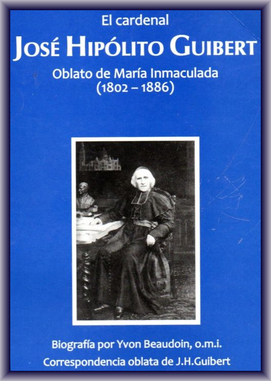

El cardenal José Hipólito Guibert
Oblato de María Inmaculada (1802 -1886)
Biografía
(Yvon Beaudoin, o.m.i.)
Correspondencia
Traducción de
O. Domínguez, o.m.i.
Archivos generales OMI
Roma, 2006
(Asunción, 2009)
La biografía y los escritos del cardenal
Capítulo I Nacimiento y adolescencia (1802-1819)
Capítulo II Vocación y formación sacerdotal y religiosa (1820-1825)
Capítulo III Primeros años de ministerio (1825-1828)
Capítulo IV En Notre-Dame du Laus (1828-1834)
Capítulo V En el seminario mayor de Ajaccio (1835-1841)
Capítulo VI Obispo de Viviers (1841-1857)
Capítulo VII Arzobispo de Tours (1857-1871)
Capítulo VIII Arzobispo de París (1871-1886)
Capítulo IX el hombre, el oblato de m.i., el obispo, el santo
Capítulo X Muerte y sobrevivencia
Biografías y estudios sobre el cardenal
A la muerte del cardenal Guibert en 1886 los diarios y revistas hicieron su elogio. He aquí algunas cosas que de él se dijeron: “Una de las más grandes figuras de la Francia contemporánea acaba de morir” 1 ; “la figura más grande de nuestro episcopado [...]; debía su situación destacada en la Iglesia de Francia... a su carácter, a la sabiduría y la mesura de su espíritu, a la prudencia y seguridad de su juicio” 2 . “Este pontífice había llegado a ser, por el ascendiente de su carácter, por la deferente atención de sus colegas, por el respeto de todos y por la confianza con que lo honraba el santo Padre, como el patriarca de toda Francia” 3 . “La Francia católica ya no verá al frente de la gran diócesis de París al venerado cardenal, cuyo cargo eminente estaba realzado por la majestad de la edad, por el esplendor imponente de la virtud, la santidad de la vida [...]. Poseía, en perfecta fusión, dos cualidades que raramente se alían en el mismo grado: la autoridad que impone y el encanto que atrae” 4 . “Con él desaparece una de las figuras más nobles y más insignes del episcopado francés” 5 . “Se ha dicho que Mons. Guibert era un Padre de la Iglesia perdido en nuestro siglo XIX. Es verdad que, por su ciencia, por la autoridad y la serenidad de su vida, por su ascendiente incomparable, el cardenal arzobispo de París recordaba de lleno a las grandes figuras de obispos que se destacan con trazos luminosos sobre el fondo oscuro de los siglos...” 6
Los Oblatos también perdían al más Insigne de sus socios, aunque, como obispo, él nunca añadió a su nombre el título de oblato, porque la Congregación no había sido reconocida oficialmente por el Estado. Siendo el primer obispo oblato tras el Fundador y el primer cardenal de la Congregación, difundió el conocimiento de ella en una parte de Francia y le confió una obra importante en cada una de las diócesis que regentó: Notre-Dame de Bon Secours en Lablachére (diócesis de Viviers), el santuario de San Martín en Tours y el del Sagrado Corazón de Montmartre. Con razón se le ha llamado: “la gloria de la congregación”, “la luz de nuestra Sociedad”, “una de las glorias de la Iglesia y de nuestra querida familia religiosa”, “uno de los hijos más ilustres y más meritorios de Mons. de Mazenod”, “lumbrera o antorcha de nuestra congregación”. 7
La biografía del cardenal escrita por el canónigo Paguelle de Follenay y publicada en 1896, es y seguirá siendo la principal fuente de nuestro conocimiento del cardenal 8 , El canónigo mismo cita sus fuentes: la voluminosa correspondencia de Guibert con Mons. de Mazenod, con sus amigos y con su familia 9 , las Missions O.M.I ., los archivos del seminario de Ajaccio y de la diócesis de Viviers, las cartas pastorales, y los relatos de las personas que le estuvieron asociadas 10 .
Desgraciadamente, los originales de la “voluminosa correspondencia” intercambiada entre Mons. Guibert y Mons. de Mazenod han desaparecido casi todos. Paguelle publica extractos de unas 400 cartas de Guibert al Fundador y a los padres Tempier y Fabre, pero no conservamos más que 14 originales de cartas a Mons. de Mazenod y 39 al padre Fabre, así como 19 originales de las numerosas cartas del Fundador y 3 de las de Fabre a Guibert 11 .
En su testamento, el 6 de noviembre de 1882, el cardenal legó a los oblatos su biblioteca y sus papeles personales que sin duda comprendían cartas recibidas del Fundador, de los padres Tempier y Fabre, etc. 12 Esto se le prestó primero a Mons. Perraud, obispo de Autun, para preparar la oración fúnebre del cardenal en 1886 y luego se puso a disposición de Paguelle en 1895-1896 13 .
Mons. Perraud había recibido también Notas de Clemente Sarrus sobre la infancia de José Hipólito 14 . Paguelle tuvo también eso en su mano, así como las cartas de Guibert a su familia 15 . Remitió esos documentos a Clemente Sarrus, confesando que habían sido parcialmente destruidos por los ratones en el despacho del canónigo durante el verano de 1897 16 . En 1895 el padre Celestino Augier remitió también a Paguelle las cartas del cardenal al abate Alejandro Dupuy, ex oblato 17 . El canónigo devolvió esas cartas a los Oblatos 18 y probablemente les remitió ¡a correspondencia Mazenod-Guibert, pues en un inventario de los archivos generales en 1898 se indica: “toda la correspondencia de Guibert” en dos cajas cerradas. En otro inventario hecho por el p. Tatin en 1911 no se menciona más que una caja de madera con cartas del cardenal Guibert. Esa correspondencia se perdió probablemente cuando las expulsiones de 1904 y el traslado de la casa general a Roma en 1905 19 .
La biografía que sigue cuenta brevemente la vida del padre Guibert en las casas oblatas donde vivió: Aix, Marsella, Nimes, N.- D. duLaus, Ajaccio y Vico, y en las tres diócesis donde fue obispo: Viviers, Tours y París. En N.-D. du Laus fue donde el padre Guibert ejerció un papel importante ante el Fundador en favor de la aceptación de las misiones extranjeras. En 1831-1832 repetía que interesaba echar cuanto antes los cimientos de una casa en ultramar, y él mismo se mostraba dispuesto a partir para América en 1832, y para Córcega o América en 1834.
Quería mucho al Fundador. En 1833-1835 comprendió mejor que otros la situación “horrible” en la que se hallaba el obispo de Icosia, a quien las autoridades civiles habían arrebatado prácticamente los derechos de ciudadano francés. El padre Guibert en su viaje a París en julio-setiembre de 1835 para los asuntos del seminario de Ajaccio, intervino hábilmente ante el Rey y el Ministro de Cultos y logró establecer la paz y devolver al Fundador “la libertad y la patria”.
El cardenal Guibert merece, pues, por más de un título, figurar en esta serie segunda de los Escritos Oblatos, junto a los padres Enrique Tempier, Casimiro Aubert, José Gérard, etc.
No publicamos en este volumen más que los extractos de las cartas del padre Guibert a los Oblatos, escritas antes de su elevación al episcopado 20 . En su mayoría son extractos de cartas copiadas por Paguelle, a menudo sin fecha. Se conoce la fecha de algunas por los extractos publicados por Rey o en Missions O.M.I.
Yvon Beaudoin, o.m.i.
José Hipólito Guibert nació en Aix de Provenza el 22 de frimario del año XI (el 13 de diciembre de 1802), hijo legítimo de Pedro Francisco Claudio Guibert (1762-1845), labrador, y de Rosa Francisca Pécout (1784-1858), domiciliados en el n° 23, isla 81, sección de la Igualdad (n° 53, calle Lisse Saint-Jean) 21 . Fue bautizado el 19 de diciembre en la iglesia parroquial de San Juan de Malta por el abate Teissier. Su padrino fue Jo sé Pécout, abuelo materno, y su madrina Margarita Guibert, esposa de Gaudibert, tía paterna.
El Sr. Guibert llamaba a su hijo: Guibert, éste firma habitualmente: José. Firmará José Hipólito a partir de 1841, cuando es nombrado obispo de Viviers.
Pedro Guibert, el padre de José, nació en Aix en 1867. En 1798, a la edad de 30 años y 8 meses, se casó con Rosa Francisca Pécout, nacida en 1784, que tenía 13 años y 9 meses al casarse. De esa unión nacieron Paulina (1800-1864), que quedó soltera, José Hipólito, Josefina (1804-1884) 22 , casada en 1826 con Honorato Eusebio Sarrus, José Fortunato, nacido en 1808 y muerto a los 9 meses, y Honorato Mario Fortunato, nacido en 1810 y fallecido el 16 de octubre de 1826 de fiebre tifoidea.
Pedro y Rosa, hija única, vivían en la casa de los padres de ésta. Sin embargo, poseían una casa y algunas tierras a unos kilómetros de Aix, en el barrio de Beauregard, en el lugar llamado Malvallat. En 1796 Pedro había recibido en herencia de su padre una parte de esa propiedad y comprado la parte de sus hermanas. Había allí una construcción con graneros, tinas, cuadras, viñas, olivares, almendrales y campos de trigo, etc. 23 . Según Clemente Sarrus, los Guibert habrían habitado en Malvallat al menos durante algunos períodos de los años 1805-1809 y José fue allí con frecuencia. Demasiado endeudado para pagar esa propiedad y saldar las deudas dejadas por su padre, Pedro vendió Malvallat el 20 de agosto de 1809. El 13 de diciembre de 1811 compró un pequeño terreno en el barrio de los Pinchinats. Aun trabajando en esa propiedad, cultivaba la huerta llamada de la Felicidad, situada junto a la carretera de Marsella, que pertenecía al Sr. Conde de Félix. En 1820 el Sr. de Félix le nombró administrador de su propiedad de la Reynarde, cercana a la aldea de Saint-Menet, en los arrabales de Marsella. La familia fue a vivir en la Reynarde en 1821 y siguió allí al parecer hasta 1830 24 .
Las fuentes históricas nos dan pocos detalles sobre la madre y las hermanas de José, lo mismo que sobre la infancia y la adolescencia de éste. Clemente Sarrus escribió acerca de Rosa: En lo físico, era “de talla un poco inferior a la media, de rostro agradable y bastante colorado, vigorosa y sana aunque con apariencias un tanto frágiles, sus cuatro hijos dan fe. En lo moral, dulce, piadosa y buena... Sus hijos la amaban con extrema ternura por su bondad y su dulzura inalterable, mientras que en el amor que tenían al padre se mezclaba cierto temor, o quizá más exactamente un respeto reverencial más acentuado. José Hipólito sentía por su madre el amor más tierno y le .escribió muchas cartas en las que revelaba del todo su corazón” 25 .
José Hipólito nació en la casa de sus abuelos Pécout. Antes de entrar en el seminario en 1820 vivió casi siempre en la casita de la calle Lisse Saint-Jean, n° 53, situada en la extremidad de la ciudad, frente a las murallas. Paguelle de Follenay escribe que, a juicio de sus contemporáneos el niño era amable y gracioso. Tenía muy blanca la tez y muy negros los ojos. Aprendió a leer y escribir con un laico, excelente cristiano, llamado Sr. Chabert. Ayudaba a misa en la iglesia de San Juan de Malta donde era rector el Sr. Christine. Allí tuvo clases de catecismo e hizo la primera comunión. Se confesaba con el padre Mitre y con el abate Denis, vicario de la vecina parroquia del Espíritu Santo 26 .
De 1814 a 1819 José y su primo Mitre siguieron los cursos del abate Donneau, antiguo oratoriano entonces sacerdote adscrito a la parroquia de San Juan de Malta. Durante su vida José Hipólito refirió algunos recuerdos de aquella etapa de su Vida. En 1837 escribió, por ejemplo, al p. Tempier que “hacia el final del Imperio, en tiempos de gran miseria, siendo yo muy joven todavía, mis padres me ponían a comer aparte con mis hermanas. Ellos tomaban la comida después y solo comían los restos, y yo sé bien que no siempre tenían con que saciar su apetito. Me encuentro siempre con este recuerdo emocionante a la puerta del refectorio” 27 .
José estudiaba en el fondo de un cuarto en la planta baja de la casa, donde también sus hermanas tenían su taller de costura. Según una nota del abate Davin, cuñado de Clemente Sarrus, José siendo ya obispo recordaba así ese período de su primera formación intelectual: “He realizado por mí mismo mi educación. El Sr. Donneau nos enseñaba solamente la gramática, pero tenía una muy hermosa biblioteca que recorríamos ávidamente mi primo Mitre y yo. Así nos hemos formado nosotros mismos. Cuando yo tenía de 14 a 15 años, iba con mis autores clásicos al cementerio de San Juan o a la colina de los Pobres, junto a Aix, y estudiaba yo solo” 28 . El cardenal Bourret escribe al respecto: “Nacido en las condiciones de un hijo del pueblo, este muchacho creció en el aislamiento, sin poder crearse esas relaciones y esa camaradería de los colegios que brindan compañeros con los que uno luego se mezcla y a los que uno recuerda con gusto. Era un solitario y un meditativo. Puede darse incluso que haya que buscar en esa primera educación el principio de ese carácter distintivo de su vida, que fue el amar siempre el retiro y el compartir con un pequeño número de amigos selectos abiertos a sus ideas y a sus preocupaciones particulares”. 29
N. del T.: Omitimos aquí las actas de nacimiento y de bautismo que van en el original.
En el momento en que el Sr. Guibert pasaba a ser administrador de la propiedad del conde de Félix en la Reynarde junto a Marsella, José ingresó en el seminario mayor de Aix al inicio de año escolar de 1820-1821. Dirigido por los Sulpicianos, ese seminario acogía a los seminaristas de Aix, de Marsella, de Ajaccio e incluso de Fréjus. Los estudiantes de los Misioneros de Provenza habían seguido allí los cursos entre 1816 y 1820. En el seminario José cursó, al parecer, un año de filosofía e inició el estudio de la teología. Este período de su vida, como el precedente, es poco conocido. Paguelle de Follenay escribe que “Guibert fue durante dos años un seminarista fervoroso; ahora bien los seminaristas fervorosos son como los pueblos felices, no tienen historia” (p. 38).
El superior era el señor Dalga. El señor Bony, director y profesor de moral, enseñaba la doctrina del beato Alfonso de Ligorio. Uno de los condiscípulos del futuro cardenal escribió más tarde que ya éste “iba lentamente, no se apresuraba a tomar la palabra, pero todo lo que decía llevaba la marca del buen sentido y de la sabiduría. Nos llamaba ya la atención por su madurez y su espíritu eclesiástico” (Bourret, 14).
El seminarista fue a pasar las vacaciones de 1821 y 1822 en la Reynarde. Le gustaba pasear a la orilla del riachuelo Huveaune 30 e hizo algunas visitas a los Misioneros de Provenza establecidos en el Calvario (Marsella) en mayo de 1821.
El 3 de mayo de 1822, Pedro Guibert en carta a su suegra la Sra. Pécout le anuncia el envío de un cáliz del párroco de La Penne para mandarlo dorar y añade que se lo remita luego a José para hacerlo bendecir. El siguiente 13 de mayo éste responde a su padre y anuncia que Fortunato, su hermano menor, está con la abuela y se prepara para la primera comunión. Añade que el arzobispo va a hacer pronto las confirmaciones en Auriol; su madre deberá aprovechar para recibir ese sacramento que no ha recibido, “el cual, cuando se puede recibir, es tan necesario para la salvación como el bautismo”.
El 1 de junio de 1822 José recibe las órdenes menores de manos de Mons. de Bausset-Requefort, arzobispo de Aix 31 . El 27 de noviembre anuncia a sus padres que sus condiscípulos salieron de paseo y que él se quedó solo en el seminario a causa de un dolor de oídos. En un cuaderno del seminario de Aix se ha anotado en 1822-1823: “Guibert, salido para los Misioneros” (Sarrus, p. 40).
José debió de abandonar el seminario mayor durante las vacaciones de invierno de 1822-1823, a primeros de enero, para entrar en el noviciado de los Misioneros de Provenza donde empezó su noviciado el 25 de enero bajo la dirección de los padres Sebastián Deblieu e Hipólito Courtés 32 .
Desde tiempo atrás, al parecer, pensaba en las misiones extranjeras. A causa de su débil salud, el Sr. Dalga le aconsejó más bien hacerse Misionero de Provenza 33 . Por lo demás, había conocido a algunos de éstos en el seminario en 1820-1821, en especial a los hermanos Santiago Jeancard y Santiago Marcou. El 11 de mayo de 1822 este último le había escrito desde N.-D. du Laus, donde se hallaban los novicios y los escolásticos, para invitarle a unirse a ellos. Además, él lo estaba esperando a diario, pues, a su partida, Guibert le había dicho: “¡Un día iré con vosotros!”. El hermano Marcou añadía: “Oh, mi querido amigo, si no temiera resultar sospechoso, le hablaría de la felicidad que se disfruta en nuestra santa casa; le hablaría del espíritu de nuestro instituto. Pero me basta decirle que tendemos todos a la perfección; perfección que no dejaremos de alcanzar siguiendo fielmente nuestra santa regla; que trabajamos por la mayor gloria de Dios en la salvación de las almas; que abarcamos todo el bien que es posible hacer, y que las almas más abandonadas no quedan fuera de nuestra ambición; que, en una palabra, no tenemos más que un corazón y un alma, cor unum et anima una . Esto basta para darle una idea de nuestra casa [...] Soy su querido amigo esperando ser su querido hermano. El hermano Jeancard, con quien he hablado de usted, desea muy especialmente ver acrecentarse el número de sus compañeros con todo lo que hay de bueno en el seminario, son sus propias palabras” 34 .
En octubre de 1822, tras dos años pasados con el padre Tempier en N.-D. de Laus, los novicios y los escolásticos volvieron a Aix para continuar su formación y sus estudios. Este hecho ejerció sin duda un influjo favorable en el seminarista que, al entrar en el noviciado, iba a encontrar a algunos de sus amigos.
El hermano Guibert fue un novicio ansioso y atormentado. Esto se manifiesta ya el 15 de enero. Siendo aún postulante, escribe al padre de Mazenod que misiona en Tallard: “Creo que usted está atacando fuertemente al diablo en esas comarcas, pues él se agita mucho a mi alrededor [...] Ya me hace escuchar la voz de mis padres, ya la de mis amigos; me amenaza con los gendarmes,' me muestra las dificultades de la regla, usa en fin todos los medios para desanimarme” 35 .
El postulante habla de “la voz” de sus padres. ¿Había pasado del seminario al noviciado sin avisar a sus padres? Parece probable. Poco después del ingreso de su hijo en la Misión, el Sr. Guibert mostró un fuerte descontento. Clemente Sarrus, sobrino del cardenal, cuenta en sus Notes et Souvenirs lo siguiente: “El padre de José, que creo sospechaba un poco las secretas disposiciones de su hijo, se oponía absolutamente a su vocación religiosa. Si había visto, no solo sin pena pero con satisfacción, como hemos visto, que su hijo se orientara al estado eclesiástico, al verle dejar el seminario para entrar en la Misión, sintió un pesar muy vivo y, al no poder por el momento contener su vivacidad natural, fue a encontrar al abate de Mazenod en el locutorio de la Misión y montó una escena cuyo recuerdo no se había borrado en la mente de mi madre [hermana menor de José] y de mi tía que la había oído contar [...] La entrevista fue muy tempestuosa, y el hijo que se enteró al día siguiente sintió una pena muy honda. Fue a encontrar a su padre y le declaró que si quería forzar su voluntad, le obedecería, pero, llegado a la mayoría de edad, partiría para las misiones extranjeras” 36 .
Esa entrevista se tuvo probablemente cuando el padre de Mazenod fue a pasar unos días en Aix, entre el 21 y el 25 de enero. Pocos días antes de ausentarse de Tallard, el Fundador había recibido una carta de José que le indicaba que su padre se oponía con firmeza a su vocación. El 20, antes de salir, el Fundador escribió: “No puedo persuadirme, querido Guibert, de que su señor padre le amenace seriamente con llegar a un extremo repugnante que un padre cristiano jamás se permitirá [...] Escríbale, pues, respetuosamente para que abrevie esa prueba demasiado sensible para el corazón de usted [...] Yo le agradezco mucho que haya tenido la idea de escribirme; no me lisonjeaba de esa atención ya en los primeros días de su estancia entre nosotros; es que usted ha comprendido ya que formamos una familia en la que todos los que la componen solo quieren tener un corazón y un alma...” 37
En Aix, parece que, para terminar con las vacilaciones del postulante, el padre de Mazenod lo admite a la toma de hábito y a iniciar el noviciado el 25 de enero, séptimo aniversario de la fundación de la Misión de Provenza. En carta del 28 de enero el novicio da gracias al padre de Mazenod. “Siempre he salido con nuevas fuerzas de las conversaciones que tuve la dicha de tener con usted”, confiesa. Añade que se siente “poderosamente alentado”, pero la carta que el padre Courtés ha enviado a su padre “no ha surtido ningún efecto. Nuestra última esperanza reposa ahora en la de usted. A cada instante en el recreo creíamos verle llegar [...] Probablemente antes de que usted vuelva a Aix todo quedará arreglado. Las cosas no pueden seguir por mucho tiempo en el estado violento en que se encuentran. Es preciso que se desenreden”.
¿Cómo explicar esa conducta del Señor Guibert? Según Paguelle de Follenay, Pedro Guibert quedó decepcionado porque esperaba que su hijo, siendo sacerdote diocesano, habría sido el apoyo de los suyos y su casa rectoral les ofrecería un asilo en caso de apuro. Aunque no se pueda excluir este motivo, hay otro que parece igualmente probable. Tenemos ciertos indicios. Se constata en primer lugar, al examinar las fuentes, que José no parece haber frecuentado la casa de los Misioneros que estaba a pocas manzanas de su casa en el antiguo convento de las carmelitas en la avenida Mirabeau. Además, en la carta del hermano Marcou el 11 de mayo de 1822, éste escribe: “No consulte, le ruego, a hombres con prejuicios, a personas sospechosas”.
Ahora bien, una de esas personas sospechosas era ciertamente el Sr. Antonio Esteban Christine, rector de la parroquia San Juan de Malta, en cuyo territorio vivían los Guibert y estaba situada la casa de los Misioneros. El canónigo Leflon escribe que ese sacerdote era “rabiosamente hostil al Fundador”. Eugenio de Mazenod ya lo había conocido en el colegio Borbón cuando había empezado los estudios en 1789. Christine era profesor allí y, como sus colegas los doctrinarios, era favorable a la Revolución y prestó el juramento constitucional. Es una de las razones por las que al principio de 1701 el presidente de Mazenod retiró a su hijo del colegio y lo llamó consigo a Niza 38 . Convertido en rector de San Juan de Malta, el Sr. Christine vio con malos ojos la fundación de la congregación de la Juventud en 1813- 1814 y sobre todo en 1816 la apertura de la iglesia de la Misión, exenta de su jurisdicción. En 1817 hubo una lucha abierta entre el padre de Mazenod y algunos párrocos con ocasión de la confirmación y luego de la primera comunión de los congregantes. El padre de Mazenod había obtenido del Sr. Guigou, vicario capitular, permiso para hacer esas ceremonias en la iglesia de la Misión. El Sr. Christine y los párrocos vecinos, sobre todo los de la Magdalena y del Espíritu Santo, le obligaron a enviar a la catedral a los congregantes .
Se comprende que el Señor Guibert haya padecido la influencia de su párroco y haya tenido una impresión negativa del padre de Mazenod y de los Misioneros. Siguió oponiéndose a la vocación de su hijo y éste tuvo que volver a casa en febrero de 1823. Obtuvo después el consentimiento de su padre y regresó al noviciado a primeros de marzo. 39
El novicio reencontró la paz por un momento. El 8 de marzo anunciaba al Fundador, entonces en París 40 , que por fin había conseguido el consentimiento del padre y, añadía, “en adelante usted será mi padre y yo seré su hijo [...] Sin embargo, no estoy del todo al abrigo de la tentación. Este demonio es de una terrible constancia”. El padre de Mazenod responde el 19 de marzo que comparte la dicha de José y le hace enseguida esta confidencia: “¿No sabía usted ya cuánto lo amaba yo y la esperanza que en usted fundaba? Fue una especie de presentimiento, desde el primer día que le vi; me parece que reencontraba una porción de mí mismo que venía con toda naturalidad a encajarse en su sitio, y lo que hay de más notable es que desde entonces usted fue considerado por todo el resto de la familia como si hubiera pertenecido a ella desde tiempo atrás y como si reingresara tras una ausencia. Todo esto es un excelente augurio para el bien que tendremos que hacer juntos en el campo de la Iglesia devastado por tantos jabalíes...” 41
José sigue vacilando y se propone dejar la comunidad tras haber expuesto sus “penas interiores” e “indicar las causas”. El Fundador pide consejo al padre Richardot, provincial de los jesuitas, “experimentado en las vías de Dios” 42 . El 27 de junio envía al hermano Guibert una larga carta de aliento y le dice que su vocación es segura y que hay que resistir a las tentaciones del demonio”. En esa carta el p. de Mazenod, por una especie de intuición, entrevé el porvenir de Guibert: “Animo, mi muy querido hijo, no se extrañe de que el diablo acumule sobre usted las nubes de su furor, que turbe su alma como en una tempestad [...] El enemigo le asestaría menos golpes, se encarnizaría menos en seducirle si no temiera su ministerio. Aunque, hablando propiamente, él no conozca el porvenir con ciencia cierta, su natural perspicacia le descubre los sucesos que dependen de las causas segundas sin engañarse. Él ha concluido del temple de alma que Dios le ha dado a usted, de las gracias particulares con que su bondad ha querido prevenirle, de la vocación a la que le ha llamado, que le coloca, por decirlo así, enteramente armado en el campo enemigo con los guerreros de la fe que en nombre de Jesús reportan tantas victorias cuantos son los combates que entablan; ha concluido, digo, que usted también sería temible para su imperio...” 43
Sigue un período de calma. El novicio anuncia al Fundador el 3 de julio que sus cartas le han afianzado y que seguirá en la congregación; solo lamenta haber “contristado al Espíritu de Dios y afligido” al padre de Mazenod. Este período de paz prosigue durante el verano. El Fundador se alegra. Escribe el 30 de setiembre: “Me place decírtelo, querido amigo, eres digno de esta familia que el Señor previene con tantas bendiciones”.
Durante este tiempo una tempestad se había abatido sobre la congregación. Nombrado obispo de Marsella el 13 de enero de 1823, preconizado por Pío VII el 16 de mayo, Fortunato de Mazenod fue ordenado obispo en Issy el 6 de julio. Ese mismo día nombró a Eugenio vicario general y también, dos días después, al P. Tempier. Esto sembró descontento en muchos padres y hermanos. Al mismo tiempo se restablecía la diócesis de Fréjus y Mons. Richery, nombrado obispo, reclamó a los sacerdotes originarios de su diócesis, a saber, los padres Sebastián Deblieu y Manuel Maunier y al hermano Jeancard, relevándolos de la obligación de sus votos. Mons. de Bausset anunciaba que iba a hacer lo mismo. Deblieu, Maunier y Jeancard dejaron la congregación en octubre. El padre Noel Moreau de la diócesis de Aix entró en la Trapa.
A pesar de esas salidas, el hermano hace votos temporales el 4 de noviembre. No se le permite comprometerse por toda la vida porque el arzobispo de Aix amenaza declarar nulos los votos emitidos por los Misioneros 44 . Tras esas salidas, el Fundador, que reside ya en Marsella, va a Aix el día 7. Pasa la jornada del primer viernes del mes con la comunidad, antes de ir el 8 a encontrarse con el arzobispo. Tras un día de oración y ayuno a pan y agua, dirige a la comunidad una emocionante plática sobre los peligros que amenazan a la sociedad; luego, habiendo mandado apagar las luces, se inflige una flagelación sangrante, en medio de los sollozos de sus hijos; a la salida del refectorio se echa por tierra y todos tienen que hollarlo con los pies (Rey. I, 319). Paguelle de Follenay que cuenta ese hecho añade que “esta escena extraordinaria produjo una impresión profunda en el hermano Guibert. Todas sus vacilaciones cayeron y para siempre” (I, 89). También fue el fin de la crisis interna y de la externa de la sociedad, pues el arzobispo de Aix y el obispo de Fréjus prometieron dejar en la Misión a todos los socios que desearan perseverar en ella.
La reflexión de Paguelle de Follenay no parece exacta. El demonio tienta de nuevo al hermano que, en noviembre, decide salir. Se explica en una carta que, según los detalles que contiene, fue escrita después de haber hecho la profesión temporal. En esa carta José dice que ha luchado y que ha sufrido mucho: “¡Ah, si usted pudiera saber cuánto he sufrido en esta penosa lucha!, exclama. ¡Qué malestar, qué abatimiento, qué esfuerzos, qué violencia para no dejar aparecer fuera nada de la agitación interior! Mi carácter ha quedado enteramente cambiado; mis estudios mismos han sufrido, ya que ese estado no permite apenas aplicarse a ellos...” Explica luego los motivos de su resolución: debilitamiento de la salud, amenaza del padre de emplear la fuerza para sacarlo, mala situación de los asuntos de su familia, y además “falta de voluntad y de inclinación que me hace temer el volverme atrás” 45 .
Con todo, la crisis termina. El hermano recibe el subdiaconado en la capilla privada de Mons. de Bausset el 20 de diciembre de 1823 y hace la oblación perpetua el 29 de diciembre. El día de su ordenación al subdiaconado escribe al Fundador: “Me apresuro a expresarle los dulces sentimientos de gozo que me animan en este momento, y es justo que le dé las gracias por mi dicha, pues la disfruto gracias a los cuidados de usted” 46 .
Así terminó el noviciado del hermano Guibert, concluye Paguelle de Follenay. “Fue por cierto el noviciado de las agitaciones, de las dudas, de las luchas y de las tempestades. Dios había decidido conducir a esta alma durante un año por caminos rudos, y lo hizo...” (I. 94).
José recibió el título de “oblato” (hermano escolástico) desde su oblación hasta su ordenación sacerdotal en Marsella el 14 de agosto de 1825. Ignoramos casi del todo lo que fue la vida en la casa de Aix durante esos 20 meses. Lo poco que se conoce proviene de algunas cartas del Fundador al padre Courtés, que cumplía la función de superior en la casa, y a algunos hermanos escolásticos a los que llamaba entonces “novicios” u “oblatos” 47 .
El P. de Mazenod va por entonces a Aix al comienzo de cada mes. El 8 de junio de 1824 reconoce que, desde que salió de Aix en agosto de 1823, no ha nombrado todavía asistentes para el padre Courtés, pero se consuela al comprobar que “la vida que llevan nuestros novicios en la sociedad es una vida tan regular, tan llena ante Dios, que se la podría considerar como un retiro continuo” (EO 6, 150s).
Después de regresar de N.-D. du Laus en octubre de 1823, no parece que los escolásticos hayan seguido los cursos en el seminario de Aix. Estudian por su cuenta. El 19 de enero de 1824 el Fundador envía al hermano Guibert dos volúmenes del cardenal Gerdil y dice que le hubiera gustado llevarlos él mismo, pues, añade “me juzgo muy feliz cuando estoy en esa casa donde todo me gusta y me edifica...” (EO 6, 140). El hermano Guibert agradece el envío de esas obras que él había pedido y agrega: “Han dado mucha satisfacción a mis hermanos. Las hemos recorrido con la vista; nos prometen muchas cosas muy útiles y muy agradables. Le doy las gracias por ellos y por mí. Ahí los tiene ya teólogos desde hace unos días. Están encantados con este nuevo estudio. Su aplicación se redobla y marchan con mejor ritmo que en la filosofía. Solo les falta una cosa, un profesor; el buen Dios proveerá” (24-1-24).
No hay, pues, profesor de teología a principios de 1824. Con todo, el padre Courtés da un curso regular de sagrada Escritura. A primeros de julio de 1824 los padres de Mazenod y Suzanne predican un retiro en Niza; a su regreso, el abate Carlos Domingo Albini, profesor de moral en el seminario de Niza, los sigue y empieza el noviciado en Aix el 17 de julio. Es nombrado profesor de moral. Según el padre Courtés, da “excelentes clases de las que los alumnos no pueden menos de aprovechar, pues el padre Albini sabe latín como un romano del tiempo de Augusto”. Paguelle escribe también al respecto: “Este santo sacerdote era el profesor por el que suspiraba el padre Guibert. Se le encargó la enseñanza de la teología moral. Ahora bien, estaba imbuido de los principios más puros de san Alfonso de Ligorio; su curso los exponía con toda la amplitud; de ellos se servía para resolver todos los casos de conciencia destinados a ejercitar la sagacidad de sus alumnos. El padre Guibert, cuya primera formación había sido diferente, sintió primeramente una extrañeza que se traduce ingenuamente en la siguiente frase, tomada de una de sus cartas: “Muy querido padre, salgo de la clase de don Albini con la cabeza llena de ideas italianas” (Paguelle, I, 111).
Durante el verano de 1824 Fortunato Guibert, de 14 años, entonces alumno en el seminario menor de Marsella, va a pasar las vacaciones en casa de su abuela en Aix. José le da, como el año anterior, clases de latín 48 . Del 30 de setiembre al 2 de octubre se tiene en Aix el tercer capítulo general de la Congregación. Solo toman parte en las deliberaciones los 11 sacerdotes. El hermano Guibert está en la casa, pero su nombre no figura en las actas del capítulo. Es ordenado diácono el 18 de diciembre de 1824 por Mons. Bausset en la capilla del arzobispado de Aix. En carta del 15 de diciembre el Fundador le había felicitado de antemano, congratulándose por su “futura promoción al orden del diaconado. Te deseo, mi querido hijo, -escribía- todas las virtudes heroicas de los santos que pronto van a ser tus patronos. Aunque no vivamos ni en el centro del judaismo ni entre los paganos, se nos ha acostumbrado no obstante a un género de persecución que nos hace muy necesario ese robur del que el Espíritu Santo dota a los diáconos y del que presumo que harás buen uso en toda ocasión. Será para mí un desconsuelo el estar lejos de ti el precioso día de tu elevación...” (EO 6, 164s).
El día de la ordenación el nuevo diácono comunica sus impresiones al padre de Mazenod: “Tengo que empezar diciéndole que soy diácono. No puedo contenerlo más. Pienso que en ninguna circunstancia de mi vida he experimentado semejante contento. El solo pensamiento de mi ordenación me ha impedido dormir la noche anterior. Es una borrachera al pie de la letra; creo que es enteramente divina y enteramente santa [...] Creo en verdad, mi querido padre, que si los ángeles pudieran tener envidia, se sentirían muy envidiosos de mí. Déjeme diácono para toda la vida; con ello me contento. Ahora sólo una cosa me queda que desear: estar a la altura de mis funciones, al menos en cuanto eso es posible. El buen Dios me ha dado ya una gracia grande: la de conocer la dignidad y excelencia del diaconado; le ruego con insistencia que rae dé las virtudes que eso exige. (Paguelle, I, 119s).
Unos días después, en carta a su colega Mario Andrés B. Bernard, diácono como él, hace la reflexión siguiente: “Hay que reconocer que nuestro ministerio es del todo divino y del todo celestial; ahora ya casi no tengo más terna de meditación que ese, y siempre encuentro en él nuevo atractivo; cuando se tiene fe, como nosotros la tenemos por la gracia de Dios, ¿cómo no quedar fascinado por tanta cercanía a nuestro Señor? Durante estas fiestas he tenido este pensamiento: ¿cuál debía de ser la dicha de la Santísima Virgen cuando llevaba en brazos al niño Jesús, y qué debía de ocurrir en su corazón? Esa felicidad me parecía tan grande que no creía que pudiera encontrarse un solo hombre con fe que vacilara en dar toda su fortuna por tener un momento en sus manos a ese Niño divino. Y eso es lo que a nosotros nos es permitido cada día. Este pensamiento me confunde, me consterna, me desconcierta por completo...” (Paguelle, 120s).
El hermano continúa su formación en Aix hasta mayo de 1825. En el mes de abril los padres de Mazenod y Suzanne hacen un viaje a la diócesis de Nimes donde Mons. Chaffoy desea tener misioneros. Una fundación solicitada por el párroco d’Ales parece imposible, pero el obispo propone a los padres establecerlos en una casa dentro de la propiedad del seminario diocesano. El 7 de abril el Fundador anuncia ya al padre Tempier que habrá que escoger para esa fundación a algunos hombres ejemplares: “Habría que impresionar con una gran regularidad, una gran exactitud” 49 . A la vuelta, el padre de Mazenod se detiene en Aix y se ocupa de los preparativos necesarios para la fundación. Designa para ella al padre Mié, superior, al padre Honorat y al hermano
Guibert. Éste tiene permiso para ir a visitar a sus padres antes de partir el 16 de mayo bajo la dirección del padre Suzanne.
Ya el 2 de junio, desde París donde acompaña a su tío Fortunato con ocasión de la consagración del rey Carlos X, el padre de Mazenod escribe a los tres misioneros para congratularse por esa fundación y darles algunos consejos, sobre todo de prudencia y discreción con los seminaristas y los directores del seminario: “Me interesaba mucho que llegarais a Nimes antes de la salida de los seminaristas; era importante que os vieran y os contemplaran de cerca. Pero no hay que estar con ellos demasiado. Guardaos bien de entablar nunca una discusión teológica. No es todavía el momento. Hablad algunas veces del encanto de nuestra vida, de la felicidad de que disfrutamos, de las maravillas que el Señor realiza por nuestro ministerio, pero sin dar la impresión de que se habla así para atraerlos. De hecho, no queremos más que a aquellos que Dios nos envía, pero fides ex auditu”. Termina la carta con esta reflexión: “Ahí está el querido padre Guibert deseando encontrar libros, cuando no hay todavía ni cama ni puchero. Bien lo reconozco en eso” (EO, 6, 180).
Los padres Mié y Honorat empiezan en seguida a predicar algunos retiros en las parroquias y en la cárcel, mientras que el hermano Guibert da retiros a los niños que se preparan para la primera comunión. “Estos retiros tienen éxito completo”, anuncia ya el 8 de junio el padre Tempier al Fundador (Rey, I, 342).
El 2 de julio el hermano Guibert escribe que el padre Tempier ha recibido para él la dispensa de 17 meses de edad y que pronto podrá ser ordenado sacerdote. Desea que la ceremonia se realice en Marsella. Se había previsto esa ordenación para el primero de agosto a fin de permitir al neosacerdote celebrar su primera misa en la fiesta del beato Alfonso de Ligorio, pero Mons. Fortunato decidió trasladar la fiesta del beato al primer domingo de agosto para celebrarla en forma más solemne. Por carta del 3 de agosto el padre de Mazenod anuncia al hermano que el arzobispo de Aix le ha mandado las dimisorias y que la ordenación se hará el 24 de agosto en la capilla del obispado de Marsella. Guibert podrá ir a hacer el retiro en Aix: “Tu presencia en esta circunstancia no puede menos de ser útil a la comunidad y tú mismo estarás más a gusto para satisfacer tu piedad [...] Adiós, querido. ¡Ah, cómo aguardo el momento de presentarte a la Iglesia para que seas sacerdote! ¡con qué emoción responderé el scio et testificor! Lloro de alegría” (EO, 6, 190).
“La ordenación se realizó, en efecto, el 14 de agosto de 1825 en la capilla recientemente reparada del obispado de Marsella -escribe el padre Rey- y, excepto el obispo consagrante, todos los sacerdotes presentes pertenecían a la familia espiritual del ordenando. Era la primera vez que se concedía tal favor a la congregación. La piadosa ceremonia, ya en sí tan emotiva, tenía un carácter de intimidad que la hacía todavía más conmovedora. Todos los corazones estaban enternecidos. El padre Guibert celebró su primera misa en la capilla del Calvario el 15 de agosto. El 18, al reenviar a Nimes al novel sacerdote, el padre de Mazenod escribía al padre Elonorat: “Que Dios bendiga nuestra familia. Me parece que pidiéndole que nos dé hombres como el que acaba de ser promovido al sacerdocio, hemos pedido todo lo necesario. ¡Santos sacerdotes: esa es nuestra riqueza!”.(Rey. I, 346; EO 6,191).
N del T: Omitimos aquí las fórmulas de toma de hábito, de oblación y de oblación perpetua, que van en el original
En seguida tras su ordenación el padre Guibert regresa a Nimes. Poco después de llegar recibe una carta del padre de Mazenod que le pregunta si es verdad que, estando en Marsella, tuvo “la inconcebible imprudencia y faltó a la caridad hasta el punto de denigrar al padre Honorat ante el padre Jeancard”. El padre contesta de inmediato y confiesa su culpa: “El padre Jeancard no ha hecho más que repetir mis dichos -reconoce- con términos más fuertes, por lo que puedo deducir de la carta de usted. Pido perdón a Dios por el pecado que he cometido, y a usted, querido padre, por la pena que le he causado, y estoy dispuesto a pedir perdón al padre Honorat al que he ofendido y a recibir cualquier otra penitencia que usted tenga a bien imponerme” 50 .
Después, durante casi un año, el padre predica misiones con sus compañeros. Comienzan en setiembre y octubre con Saint-André-les-Majencoules en Gard. Los fieles de las aldeas vecinas, en especial de Valleraugue y Suméne, acuden a las ceremonias y a las predicaciones de los padres Mié, Honorat, Marcou y Guibert. Es la primera misión de éste. Él confiesa que está “literalmente maravillado”. De vuelta a Nimes, da al Fundador detalles de la misión y concluye: “Cuando hemos salido de Saint-André, la pena se manifestó con lágrimas y sollozos. A pesar de nuestras precauciones, nos vimos obligados a dejarnos acompañar una legua; lloraban como niños, y había que emplear mil medios para apaciguarlos. ¡A Dios la gloria!” (Paguelle, I, 173-177).
En noviembre los padres Marcou y Guibert, que habían quedado solos en Nimes, predican una misión en Notre-Dame de la Rouviére. El 16 de diciembre escribe al Fundador el padre Guibert: “Se le ha hablado de los frutos que produjeron los ejercicios de la misión en Saint-André; los hemos recogido con la misma abundancia en Notre-Dame-de- la-Rouviére; es la misma gente, el mismo carácter, la misma docilidad. En estos pueblos los hombres no son como en nuestra tierra; aquí no se discute, no se argumenta; habla el misionero, y se le cree simplemente porque es misionero; las palabras del sacerdote se reciben con el mismo respeto que si salieran de la boca de Dios. Por la simplicidad de su fe los habitantes de las Cevenas pueden compararse con los primeros cristianos. Con razón juzga usted que la palabra de Dios y todo el conjunto de una misión no pueden menos de causar benéficas impresiones en espíritus así dispuestos. Por eso no creo que hayamos dejado más de cinco o seis pecadores que hayan sostenido hasta el fin el combate contra la gracia de Dios...” (Paguelle, I, 178-182).
A su vuelta a Nimes los padres Marcou y Guibert van a saludar a Mons. de Chaffoy. Este escribe al padre Tempier: “Acabo de conversar con uno de mis vicarios generales que llega de Vigan, centro de la comarca donde se hallan N.-D. de Rouviére, Saint-André y Saint-Martial, que sus misioneros han evangelizado. Me dice que todos esos pueblos han cambiado y que los habitantes son una imagen de los fieles de los primeros siglos, que todo el contorno está admirado y edificado del éxito que Dios quiere dar a los trabajos de sus buenos sacerdotes” (Rey, I, 373).
El 25 de diciembre comienza en Nimes el jubileo dado por 14 Misioneros de Francia en cuatro parroquias y por los Oblatos de San Carlos 51 . Estos predican en la parroquia que lleva el nombre de su patrono. El padre Guibert escribe ya los primeros días que “la misión ha prendido como fósforos en la brasa”. El padre Suzanne, llegado para ayudar a sus colegas, anuncia igualmente al padre Tempier que la “misión sigue yendo de maravilla; encontramos disposiciones admirables y es difícil sentir estas cosas mejor que nuestros buenos pobladores de San Carlos. Estamos cada vez más asombrados...”
Durante ese jubileo se convirtieron gran número de hombres y fueron a confesarse a casa de los misioneros. El p. Guibert escribe al respecto: “El señor superior del seminario está un poco contrariado porque vienen hombres a nuestra casa para confesarse o para conversar sobre cosas de Dios. Le tratamos con miramiento en lo posible. Le manifestamos muy suavemente que para algo somos misioneros...’ 52
El padre Guibert no se queda en el jubileo de Nimes más que por quince días. El 8 de enero sale para Ribiers, en la diócesis de Gap, donde el padre Honorat ha iniciado una misión. Esta arranca sin entusiasmo. El padre Guibert comprueba que los corazones quedan “fríos como las nieves y las rocas entre las que viven”. Pero allí como en otras partes la misión pronto ofrece frutos en abundancia. “Esta vez, querido padre, anuncia el padre Guibert al padre Tempier, no hay medio de equivocarse y de atribuir al hombre nada de lo que solo proviene de la gracia de Dios; cuando pienso en el cambio que se ha efectuado en la población que evangelizamos y en los tres niñitos 53 de los que Dios se ha servido para alcanzar sus fines, no me veo tentado a tener orgullo; se puede aplicar bien aquí el infirmor de san Pablo: cesan los concubinatos, se hacen las restituciones, se rehabilitan los matrimonios que no estaban en regla, se queman los malos libros, revienta la avaricia, los propietarios ceden terreno para dejar un espacio a la cruz, cortan sus árboles para proveer la madera y toman esto como gran honor, los obreros se presentan y ofrecen gratis la mano de obra, Dios es bendecido, y se enrabia el demonio” (Paguelle, 1,162s).
Del 28 de marzo al 27 de abril de 1826 los padres Suzanne y Guibert predican en la catedral San Salvador cuando el jubileo de Aix. El papel desempeñado por el padre Guibert queda así resumido en una carta del padre Tempier: “Este hombre lo hace todo perfectamente y con una facilidad, una soltura admirable. El también había hecho ‘bola’ [llevándose todas las bazas] en la misión de Ribiers” (Rey I, 376)
Parece que el p. Guibert no haya regresado entonces a Nimes. Entre enero y febrero de 1826 el padre de Mazenod, durante su estancia en Roma, decide trasladar a los novicios de Aix a Marsella y se propone nombrar maestro de novicios al padre Guibert. El 27 de febrero en carta al padre Tempier pide que lo prevenga “a fin de que se prepare con la lectura de algunos buenos libros, como el del padre Judde, etc.” (EO 7,48).
Al visitar diversas casas religiosas en Italia en 1825- 1826, el padre de Mazenod queda impresionado por la perfecta regularidad que reina en todas partes. Escribe el 16 de marzo de 1826: “Concluyo de todo lo que veo y lo que oigo que desde el principio hemos fallado en el noviciado, y que no está todavía a la altura en que debería estar” (EO 7, 63). Esta constatación ya hecha a comienzos de 1826 le había convencido de que el padre Courtés, demasiado ocupado en Aix por la congregación de la juventud y el servicio de la capilla, no podía formar suficientemente a los novicios. Se imponían dos decisiones: confiar el noviciado al padre Guibert y situarlo en Marsella donde, -confiaba el Fundador al p. Tempier- “podré dar una ayuda al maestro y algunas ojeadas a los alumnos”. El 27 de febrero anunciaba que Guibert “no debe comenzar sus funciones sino con una nueva era. Tiene que ser una época de renovación y de reforma”. El 30 de marzo, todavía en Roma, el Fundador reprocha al padre Tempier que haya trasladado los novicios a Marsella para sustraerlos a la disipación durante el jubileo de Aix. “Su decisión me sorprende tanto más cuanto que usted había escuchado que ese traslado debía ser solemne como preludio de cambios ad strictiora. La cosa está hecha, no hay más que decir; pero en todo caso es una mala medida”.
Es sin duda el padre Suzanne, superior de la comunidad del Calvario, quien se encarga de los novicios a su llegada a Marsella; éstos se sitúan primero en la estrecha casa adosada a la capilla, antes de alojarse en el convento construido por el padre Tempier de 1823 a 1825 en el solar de las antiguas casas del claustro de los Accoules. El padre Guibert inicia probablemente sus funciones en la primavera de 1826, tras el jubileo de Aix. Con todo, recibe a su primer novicio el día de la clausura del capítulo general, celebrado en el Calvario del 10 al 13 de julio de 1826. Entre esta fecha y el 6 de enero de 1828, en 18 meses, da el hábito a 21 postulantes. Solo 6 harán los votos y uno de ellos será expulsado menos de un año después de su oblación. Entre esos novicios, Casimiro Aubert y Pascual Ricard ejercerán después una función importante en la congregación.
El padre Guibert no escribió nada sobre su cargo de maestro de novicios e incluso de moderador de escolásticos ya que éstos son llamados a Marsella en enero de 1827. La casa del Calvario cuenta entonces 12 sacerdotes, 6 escolásticos y 11 novicios.
La vida sedentaria conviene poco al maestro de novicios. El padre de Mazenod le permite participar en la misión de Digne con los padres Mié y Jeancard del 3 de noviembre al 11 de diciembre de 1826. Guibert da noticias en noviembre y diciembre. Habla de un comienzo difícil y luego del éxito de la misión, a pesar del pesimismo del padre Mié. Forma un coro de canto con jóvenes. “Hemos recurrido a esta juventud y Dios ha actuado en sus corazones -escribe-. Tenemos más de 20 jóvenes de los más distinguidos que forman un coro muy brillante, lo que es para el pueblo un gran motivo de edificación y sobre todo de asombro [...] Yo atribuyo estos milagros de la gracia sobre todo a las oraciones de mis queridos novicios, cuyo recuerdo viene a menudo a interrumpirme en el ejercicio del santo ministerio; dígales que intensifiquen su fervor y que no cesen de rezar por el éxito de nuestra misión. Siento nostalgia por estar lejos de ellos, y si no fueran los ejercicios que me ocupan, me costaría mucho aguantarme aquí. No estoy todavía bien desprendido, como ve usted. Es muy posible que les lleve compañeros de noviciado; hay algunos jóvenes eclesiásticos que nos han pedido audiencia, y pienso que quieren hablamos de su vocación” (Paguelle, I, 186-192). En efecto, vuelve a Marsella con Casimiro Aubert que empieza el noviciado el 24 de diciembre.
En marzo y abril de 1827 el p. Guibert es enviado a Roquevaire para ayudar a los padres Mié, Jeancard y Albini y al hermano Hermitte, subdiácono. El Fundador se congratula del éxito de esa misión y escribe el 20 de marzo: “No necesito deciros cuánto bendigo al Señor por todo lo que opera por vuestro ministerio; estamos del todo arrobados de alegría como si fuera algo nuevo para nosotros. He leído la carta de nuestros padres en comunidad, tras la explicación de la regla; hay en ella motivos para alentar a nuestros buenos novicios a trabajar en la adquisición de las virtudes que deben ser la base del edificio de la vida de oblatos; creo que se les hacía la boca agua...” (EO 7,133s).
En agosto de 1827 la salud del padre Guibert declina y causa preocupación al Fundador. Le envía con los novicios a pasar un día de excursión a la Reynarde, donde el Sr. Guibert es administrador de los campos del conde de Félix. Durante la jornada le manda aviso de que no regrese con los novicios, sino que quede unos días descansando en casa de sus padres. El padre protesta diciendo que eso es inconveniente, “estando como estoy al frente del noviciado, donde tengo que predicar continuamente el desprendimiento de la familia [...] Es verdad -añade- que ese inconveniente queda atenuado porque mis hermanos conocen las órdenes precisas que usted me ha dado de quedarme. Con todo, esta razón no basta para eliminar mis penas. Amo demasiado a la sociedad para poder soportar la idea de dar en ella un ejemplo de relajamiento en los principios religiosos. Además, las Religiosas de San Carlos, de las que usted me ha encargado, van a hacer su retiro la semana próxima. Usted sabe el trabajo que he comenzado y que un cambio de confesor podría obstaculizar...” (Rey 1, 430). El Fundador mantiene la orden de seguir en reposo y deja allí al padre durante un mes, hasta el 3 de octubre.
El cargo de maestro de novicios pone “bien de manifiesto las cualidades y las aptitudes eminentes” del padre Guibert, pero todo indica que se da en él un estado de sufrimiento habitual. A principios de marzo de 1828 el Fundador le retira ese cargo y le da obediencia para la casa de Nimes. “Aplicaba a su discípulo, anota el padre Rey, el régimen al que él mismo se había sometido varias veces: la vida de misionero le había devuelto la salud” (Rey I, 440).
En mayo fue nombrado maestro de novicios el padre Honorat. El Fundador escribe a éste: “La Providencia nos había brindado en el padre Guibert un maestro de novicios que me parecía del todo apropiado para cumplir ese cargo muy importante. Él se entregó a la obra con todo el corazón al comienzo. Su salud, que nunca ha sido buena, se alteró, y fue preciso hacerle cambiar de aires y descargarlo del todo de ese empleo. Este es, sin embargo, el más importante en la sociedad; sin noviciado se acabó la sociedad” (EO 7, 157).
Al anunciar al padre Honorat la salida del padre Guibert, el 4 de marzo de 1828, el padre de Mazenod escribe: “Recuerda que él no va a Nímes para trabajar. Te equivocas contando con él. Deja Marsella por razón de salud; ni siquiera se le permite dar una instrucción por la mañana; a lo más, podrá confesar a algunas personas” (EO 7, 155). Enviado a Nimes para descansar y dar un paseo cada día, el padre, con todo, no queda ocioso. Desde el mes de marzo ayuda al padre Martin en San Maximino, que es -escribe- “una misión de perfección. Se habría podido predicar a san Juan de la Cruz sin perder el tiempo, y un antiguo maestro de novicios no habría estado allí muy desplazado si hubiera tenido la palabra...” (Paguelle, 194s). Regresado a Nimes para Pascua, se le confía el servicio del Fuerte donde celebra la misa y oye confesiones. Más tarde se le encarga de la capellanía de la prisión que encierra a 1100 hombres. En el mes de abril los padres predican allí una misión.
En 1828 los padres de Nimes ya no viven junto al seminario sino en una casa comprada por el padre Tempier en la primavera de 1827 y situada en pleno barrio protestante. El p. Guibert propone construir una capilla cerca de la casa. Escribe: “Las circunstancias de tiempo no parecen demasiado favorables para construir; pero en fin de cuentas, no es de temer una revolución que destruya las iglesias; solo cabe temer la indiferencia, la molestia, la opresión que se hará pesar sobre la Iglesia católica en Francia. Y ese es acaso un motivo para construir iglesias. A medida que la impiedad se esfuerza por desterrar la religión de la sociedad y por borrar sus últimas huellas en el espíritu de los pueblos, ¿qué medio más propio para detener su designio satánico que levantar monumentos que representan esa religión santa y la retienen en los países de donde ella parece dispuesta a escaparse?” (Paguelle, I, 161 s).
Pronto se da cuenta de que su proyecto no es realizable. Los protestantes del barrio quieren echar a los misioneros y van a cantar bajo sus ventanas canciones en las que se trata de colgarlos. Los católicos de los alrededores deben vigilar en torno a la casa durante algunas noches. “Esa clase de persecuciones -comenta Guibert- que hacen mucho mal a la Iglesia, hacen bien a aquellos que son el objetivo peculiar de ellas. Uno se pone en las disposiciones en las que quema estar si el peligro fuera cercano y real. Se hace en espíritu a Dios el sacrificio de la vida, y el alma se fortalece y se prepara para peligros más verdaderos...” (Paguelle, I, 141s).
Los Oblatos serán prácticamente expulsados de Nimes cuando la Revolución de Julio de 3 830. El padre Guibert se hallaba ya desde hacía dos años en Notre-Dame du Laus, en la diócesis de Gap. En Nimes fue donde se puso al corriente del método oblato de las misiones parroquiales, y donde aprendió a trabajar en un ambiente, si no hostil, al menos poco acogedor.
En la primavera de 1828 el abate Testou, vicario general de Grenoble, pidió al padre de Mazenod un establecimiento de misioneros en Isére. Este aprovechó su visita a N.-D. du Laus en junio para ir a encontrar al obispo de aquella diócesis, Mons. Filiberto de Bruillard. Se proponía enviar allí al padre Guibert como superior-fundador. Este aceptó ir, pero “como segundo o mejor como último”, indicando que aún no había obedecido bastante para saber mandar (Rey I, 451). En agosto se le llamó a Aix y recibió más bien la obediencia para N.-D. du Laus, dado que la fundación en la diócesis de Grenoble se posponía a causa de los informes negativos del obispo de Gap contra los Oblatos 54 .
El padre Guibert llega a N.-D. du Laus el 8 de setiembre de 1828, fiesta de la Natividad de la Virgen y día de afluencia de peregrinos. Pasa las dos primeras jornadas en el confesionario. El 11 escribe: “No podía saciarme de ver a esos buenos peregrinos bajar por todas partes los barrancos de la montaña y llegar al punto indicado para hacer sus devociones a Nuestra Señora”. Después hace una visita a Mons. Arbaud, obispo de Gap.
En Laus halla una comunidad poco numerosa: los padres Mié, superior, Dupuy, ecónomo, Jeancard y Sumien, llegado en julio en reemplazo del padre Touche enviado a Nimes.
En octubre y noviembre de 1828 visita con el padre Dupuy cinco parroquias vacantes y en noviembre y diciembre participa con los padres Mié, Jeancard y Capmas en la misión de Bourg-d’Oisans en la diócesis de Grenoble. A pesar de la fama de “pequeña Sodoma” de esa localidad, la misión tiene un éxito grande, sobre todo después de que los padres Guibert y Jeancard fueron a prestar ayuda a una aldea vecina atacada por un violento incendio. Tras esa misión, clausurada el 8 de diciembre, los padres Guibert y Jeancard predican un retiro a los alumnos del seminario menor de Grenoble. Al regresar, el padre Jeancard desaparece durante cierto tiempo en el camino y preocupa mucho a su compañero. Durante la misión de Bourg-d’Oisans el padre Guibert recibe del Fundador una carta en que le anuncia la grave enfermedad del padre Suzanne. Le dice entre otras cosas: “Usted está en el campo de batalla, y yo al pie de la cruz donde está clavado nuestro pobre hermano” (EO 7, 172s).
Del 1 al 15 de febrero de 1829 el padre Guibert con el padre Mié dan una misión en Sauze, en la diócesis de Gap. Confiesa mucho e indica que las misiones no pueden hacerle más que bien. Si ellas no me curan -añade en una carta al Fundador- es que soy incurable”. En febrero los padres Dupuy y Guibert evangelizan durante 15 días la parroquia de Buissard cerca de Gap. El padre Dupuy escribe entonces que su compañero “es un obrero excelente, muy celoso, pero su pecho es débil; sin embargo, ha dado todos los avisos y ha predicado siete instrucciones en quince días, sin contar las numerosas confesiones que ha escuchado”. En el mes de marzo los padres Guibert, Sumien y Martin predican en Saint- Pons, cerca de Barcelonnette, municipio de 500 habitantes en la diócesis de Digne.
En Saint-Pons los padres se dan a la tarea y todo marcha bien la primera semana. Llega luego una carta de Mons. Miollis (1753-1843), anciano obispo de la diócesis, que restringe los poderes de los misioneros. Les prohíbe confesar a los numerosos fieles de las aldeas circundantes; además no deben admitir a los sacramentos a los feligreses que bailan, a los borrachos, usureros, habitudinarios, etc. El padre Guibert escribe al obispo que él no es misionero para confesar únicamente a las devotas. Mons. Miollis rehúsa modificar sus disposiciones. Por suerte, un vicario general asume la responsabilidad de dar las autorizaciones necesarias para absolver a los penitentes.
Durante esa misión, el padre Guibert recibe la carta del 7 de marzo en la que el Fundador le nombra superior de Notre-Dame du Laus para reemplazar al padre Mié, llamado a Marsella donde mons. Fortunato de Mazenod acaba de nombrarlo canónigo, con residencia en el seminario mayor.
A la vuelta de la misión de Saint-Pons acusa recibo de la carta del 7 de marzo “en la que -escribe- me nombra usted superior, para lo espiritual, de Notre-Dame du Laus; yo habría deseado que usted hubiera conocido ni incapacidad en ese campo tanto como la conoce en el campo de lo temporal [...] No olvido, con todo, que no me pertenezco y me someto de buena gana a sus órdenes, sacrificando mi gusto por la vida independiente…” 55
En el curso de los 5 años como superior de Laus, el padre debe enfrentar muchas preocupaciones y resolver muchos problemas, pero mantiene muy vivas las actividades apostólicas de Laus con los peregrinos y en las misiones parroquiales.
En efecto, en abril tiene una penosa correspondencia con Mons. Miollis que en Sant-Pons había restringido las facultades de los padres. A una carta de quejas del padre Guibert, el obispo responde ab irato y le devuelve la carta “como inconveniente y en buena medida insolente, y terminada casi con impertinencia [...] Sea más respetuoso con el episcopado y trate de poner en práctica sus decisiones...” (Paguelle, I, 240s). El padre se excusa entonces diciendo: “Mi pluma habría traicionado mucho mi pensamiento y todos mis sentimientos si, en la carta que tuve el honor de escribirle el 4 de abril se me hubieran escapado algunas expresiones poco respetuosas [...] Por lo demás, Monseñor, ni las desazones que sentí durante la misión, ni los reproches con que Su Excelencia me abruma en su carta podrían enfriarme respecto a las misiones de su diócesis. No deseo más que la ocasión de mostrar a Su Excelencia el celo que me anima, la perfecta sumisión y el respeto más profundo con el que tengo el honor...” (Paguelle, 1, 244s). El padre pone al corriente de esa correspondencia al Fundador y le pide que no intervenga.
En abril y mayo de 1829 se enteran en Laus de la grave enfermedad del padre Courtes en Aix, tras la muerte del padre Suzanne el 31 de enero. “No puedo describirle - escribe- esta suerte de consternación que ha causado en la comunidad la noticia de la enfermedad del padre Courtés; él fue quien me proporcionó las primeras nociones de la vida religiosa”.
A fines de mayo llega a Laus la noticia de la enfermedad del padre de Mazenod. El padre Guibert reprocha al padre Tempier que no escriba todos los días “en semejantes circunstancias [...] Los padres que están aquí conmigo están desolados lo mismo que yo -lamenta-. Todos nosotros hemos ofrecido nuestra vida, ¡y Dios sabe con qué corazón!, por la conservación de nuestro superior”. Poco después del anuncio de la administración de la unción de los enfermos al Fundador, el 14 de junio, sale para Aix el padre Guibert y se queda allí hasta el 7 de julio.
En agosto de 1829 da gracias al Fundador por haber enviado a Laus al padre Tempier para una visita canónica. Tras la visita, se dirige a la Gran Cartuja y va a encontrar a Mons. Bruillard, obispo de Grenoble.
En 1829 y 1830 el superior habla poco de los peregrinos. Se sabe que 26 parroquias acuden cada año en procesión y que otras 18, más alejadas, hacen también peregrinaciones.
La comunidad de Laus sigue sobre todo predicando misiones. En abril, a ruegos del párroco de Bourg-d’Oisans, el padre Guibert queda quince días en esa parroquia para un retorno de misión; al pasar por La Mure predica el sermón de la pasión el viernes santo.
Las misiones, suspendidas durante el verano, se reanudan a fines de octubre de 1829, tras el retiro de la comunidad que ha recibido dos nuevos miembros: los padres Guigues y Martin. La parroquia de La Mure en la diócesis de Grenoble es evangelizada en noviembre por los padres Guibert, Surnien, Martin, Guigues y Capmas llegado de Marsella. A pesar de la oposición del párroco, “habríamos podido conquistar la plaza si se nos hubiera permitido usar nuestras armas [...] -escribe el padre Guibert-; pero dejamos el pueblo sin deshonor”.
El último domingo de noviembre de 1829, los padres Guibert, Surnien y Capmas inician otra misión en La Roche- des-Arnauds, cerca de Gap. Nuestros consuelos al final - confía el superior- han sido proporcionales a nuestras penas del comienzo”. Al dejar La Roche, los padres Guibert y Capmas van a Embrun a dar un retiro de cuatro días a los alumnos del seminario menor 56 .
La campaña apostólica prosigue en 1830. El primero de enero los padres Guibert y Capmas se hallan en Remollon, diócesis de Gap, para un jubileo que dura tres semanas. Escribe el superior: “El pueblo de Remollon es muy ardiente; a pesar de la nieve que lo rodea, ha seguido todos los ejercicios con interés y piedad”. Desde los primeros días de febrero los padres Guibert, Dupuy y Capmas, seguidos luego por los padres Surnien y Richaud, van a Savines, en la diócesis de Gap. En sus cartas de febrero el superior anuncia que sus misioneros no le han dado “más que satisfacción” y que los beneficios de la misión se han hecho sentir en los contornos. A mediados de marzo los padres Guibert, Capmas y Surnien abren una misión en Chichilianne, en la diócesis de Grenoble. Al regreso el superior se dice satisfecho de los resultados obtenidos y añade que varios sacerdotes que fueron a la misión “quedaron tan maravillados del bien que se ha obrado, que han reclamado una misión para sus parroquias”.
En el regreso de la misión de Savines en febrero, el caballo montado por el padre Capmas se desboca y echa por tierra a un hombre “bebido”, que muere pocos días después del accidente. En abril de 1830 el tribunal de Embrun, presidido por anticlericales, condena al misionero a tres meses de prisión, 50 francos de multa y 1200 francos por perjuicios. El tribunal de Gap, al que el p. Guibert apela, emite el 22 de mayo un juicio de descargo completo. Este asunto preocupa mucho al superior que, como testigo, está presente en los dos procesos. Antes de conocer el resultado del segundo proceso, el Fundador le escribe: “Me felicito, mi querido padre, de que no haya vuelto usted a escupir sangre. No es sorprendente que tanta agitación e inquietud haya quebrantado su salud [...] Sometámonos al infortunio de las circunstancias y remitámonos a Dios que solo permite lo que hace falta...” (EO 7, 201).
Durante sus primeros 18 meses como superior, el padre Guibert intenta exigir una observancia más estricta de la regla. La comunidad “no es tan fervorosa como se podría desear [...]; todos necesitaríamos un segundo noviciado”, indica al Fundador. Algunos miembros de la comunidad le acusan de “dureza de carácter”, de “una voluntad inflexible que nunca cede”. En 1830 dice que ha sido “durante un año, objeto de las críticas más amargas de varios miembros de la casa, cuya ocupación única y diaria era espiar todos sus actos buenos y malos para censurarlos; cuando se ha tratado de echarle encima todo el ridículo posible, y ha sido ultrajado con palabras en presencia de toda la casa y ni siquiera se le ha tenido consideración ante los extraños; cuando se han permitido escribir contra él relaciones en las que se tergiversaba su conducta y, sin pudor, se inventaban hechos que no existían; y cuando ha sido vilipendiado de todas las formas ¿es de extrañar que la autoridad haya quedado debilitada en sus manos, incluso a los ojos de aquellos que han podido permanecer fieles a su deber?”. Indica que no se trata solo de una lucha de autoridad sino de un “sistema sostenido por varios padres de la sociedad” y ruega al superior general que “no retrase ni un instante la reorganización de la casa para eliminar el escándalo y no dejar por más tiempo a esos religiosos fuera del círculo de su deber...”
Ese malestar se daba ya un año antes. En julio de 1829 el Fundador había enviado a Laus al padre Tempier para la visita canónica y pensaba entonces que el nuevo superior era demasiado “susceptible”. En 1830 el padre de Mazenod, de camino para un período de descanso en Suiza tras su grave enfermedad, se detiene en Laus del 10 al 12 de julio y hace la visita canónica. Escribirá más tarde al respecto: “Los padres que saben cómo estaba compuesta la casa de Laus en aquella época, comprenderán fácilmente por qué no dejamos acta de visita. Hay cosas cuyo recuerdo tiene que borrarse [...] La expulsión de un sujeto al que demasiado tiempo habíamos aguantado en su seno, ha sido el remedio eficaz que hemos empleado”.
Ese sujeto sin duda alguna era el padre Alejandro Dupuy, ecónomo de la casa, buen administrador, pero mal religioso, que siempre había rehusado hacer el voto de pobreza y que toleraba mal la vida común a causa de su carácter “singular y muy original” Salió entonces de la congregación 57 . El p. Sumien parece haber sido otro oblato poco regular que, cuando la revolución de julio de 1830, sintió miedo y se retiró a su diócesis de origen. En carta del 24 de febrero de 1831 el Fundador lo expulsó diciendo que su huida “no es después de todo más que el complemento de una conducta persistente en el mal y el justo castigo de la infracción habitual de sus deberes”.
Tras su visita a Laus en julio de 1830 escribe el padre de Mazenod al padre Tempier: “Incontestablemente el padre Guibert tiene mejor que nadie de su casa el espíritu de nuestra vocación. Pudo faltar en la forma, pero en el fondo tiene razón” (EO 7, 204). Unos días después envía al padre Guibert la importante carta del 29 de julio en la que recuerda que cada cual debe “observar estrictamente nuestra regla [...], imbuirse de nuestro espíritu y vivir únicamente por él...” Este espíritu es la caridad, que es “el eje sobre el que gira toda nuestra existencia...” (EO 7, 206s).
Los días 27, 28 y 29 de julio de 1830 estalla en París una revolución dirigida sobre todo contra la dinastía de los Borbones. Destrona al rey Carlos X y da el poder al duque de Orleáns que toma el nombre de Luis Felipe. Rodeado de anticlericales, el nuevo régimen es al principio hostil a la Iglesia.
El 5 de setiembre el padre Guibert escribe al Fundador que está descansando en Suiza: “La tormenta se acerca a nosotros; se habla mucho contra las misiones y el clero secular no es respetado. Se habla de nosotros en Gap y se trama nuestra expulsión de Laus adonde no acude casi nadie... Los católicos están desalentados”. El decide quedar en el lugar, pero, en previsión de eventualidades desagradables, pone sus cuentas en regla y pide a sus padres que le envíen trajes de paisano 58 .
El Fundador estaba entonces descansando en Suiza desde mediados de julio. Inquieto por el giro de los acontecimientos, compra una casa en Billens, en el cantón de Friburgo y hace ir allí a los novicios y a los escolásticos de Marsella. A primeros de setiembre sale el primer grupo bajo la dirección del p. Dassy. Paran en Laus, donde el superior les procura “hábitos profanos”. Hacia el 12 de setiembre pasa por Laus la segunda tanda guiada por el padre Mille.
La comunidad de Laus, tras la salida de los padres Dupuy y Sumien, se compone de los padres Guibert, Guigues, Telmon, Martin y Richard. En 1831 pasan allí algún tiempo el hermano Ferrand y el padre París.
Las actividades habituales de los padres disminuyen mucho. No predican ninguna misión desde el verano de 1830 hasta el otoño de 1832. Con todo, en enero de 1832 los padres Martin y Telmon predican un retiro en Saint-Etienne d’Avanfon; de febrero a abril el padre Martin va a reemplazar a un párroco en Montbrand, y luego los padres Guibert y Martin dan un retiro en La Bátie-Vieille.
En el santuario los sucesos de julio tuvieron una repercusión funesta en las peregrinaciones. Acuden aún algunos peregrinos aislados, pero pocos grupos organizados, salvo en Pentecostés y en la Trinidad. En 1832 se percibe una lenta recuperación de las peregrinaciones. La presencia de los novicios da brillantez a los oficios.
Durante el verano de 1831 y en adelante siguen acudiendo sacerdotes para renovarse en el fervor de su estado. En el transcurso del año más de 150 sacerdotes pasan algunos días en Laus. Del 10 al 15 de agosto de 1831 se da allí un retiro del clero diocesano, y otro en abril de 1833.
Estudios. Aprovechando los tiempos libres que la disminución del trabajo deja a la comunidad, el superior traza un plan de estudios. Los lunes, el padre Telmon da un curso de Sagrada Escritura; los martes y jueves dan clase de historia los padres Martin y Telmon; los miércoles el padre Guigues da una conferencia sobre literatura, y los viernes toca al superior dar una conferencia sobre teología. “El domingo, escribe el padre Guibert, viajamos alrededor del globo con ayuda de mapas y no sé qué viento nos lleva siempre hacia las costas de América” (6-12-32).
El padre de Mazenod hace una visita canónica a Laus del 5 al 8 de julio de 1831 y el padre Guibert toma parte en el capítulo general celebrado en el seminario de Marsella del 28 al 30 de setiembre. En la sesión de la mañana el 29 de setiembre se examina una propuesta de que “el capítulo exprese al M.R.P. General el voto que forman los miembros de la sociedad de que algunos de los nuestros sean enviados a las misiones extranjeras, en cuanto juzgue que es propicia la ocasión [...] La propuesta fue adoptada por unanimidad”. El Fundador da su aprobación acto continuo 59 .
Este deseo de las misiones extranjeras nace sin duda de la necesidad de procurar trabajo a los Oblatos, impedidos de dar misiones. Según el p. Simonin, este voto del capítulo es también una respuesta al obispo de Nueva York, llegado a Francia en 1831 para pedir sacerdotes diocesanos y religiosos, especialmente para su seminario. Después del capítulo el Fundador encarga al superior de Laus de sondear a los obispos de Gap y de Digne y ver si estarían dispuestos a ceder algunos de sus sacerdotes. En la mente del superior general, los sacerdotes cedidos por los obispos debían entrar en la congregación y, una vez formados en la vida religiosa, ser enviados a América. El padre Guibert se pone inmediatamente a la obra. Obtiene en primer lugar, a fines de 1831, la apertura de un noviciado en Laus, donde se podría hacer el reclutamiento más fácilmente que en Suiza. Se entera de que el obispo de Nueva York ha vuelto a su diócesis sin haber obtenido ayuda. “¡Qué vergüenza -confía- para un clero de 36.000 sacerdotes, no haber podido dar un solo misionero a los católicos de Estados Unidos!”. Propone al Fundador enviar a los Oblatos a Nueva York para fundar y dirigir un seminario: “Ese sería nuestro primer apeadero, y luego nos iríamos extendiendo a medida que lo permitan las circunstancias y el número de miembros” (Rey, I, 534).
El superior de Laus sale en seguida para una campaña de reclutamiento en los seminarios de Gap y de Digne, entonces repletos de alumnos. En noviembre de 1831 tiene una entrevista con mons. Arbaud y le expone el objetivo de la visita. Este le confiesa que empujaría más a sus súbditos hacia los Oblatos si estos no tuvieran la fama de relajamiento en moral, de adhesión a Lamennais y de espíritu de independencia. Promete, sin embargo, dar cuatro sacerdotes. El padre va luego al seminario de Embrun para encontrarse con los jóvenes. Recibe entonces una carta de mons. Arbaud en que dice que dejará salir a sus seminaristas o sacerdotes solo cuando se haya hecho una fundación en Estados Unidos (Rey, ib.).
En diciembre el padre Guibert va también a Digne donde se le ofrece personal y hasta fondos para una fundación en América. “Nuestro proyecto ha sido acogido en Digne con mucho entusiasmo, anuncia en seguida. Los directores del seminario me han dado carta blanca en su comunidad; el superior me dijo que, al no poder ir él en persona, le gustaría mucho enviar a algunos buenos sujetos a la Iglesia de América” (Paguelle, I, 272s).
Esta intensa actividad del superior de Laus agrada al Fundador que escribe al padre Courtés: “El padre Guibert es admirable por su constancia en perseguir su objetivo. Si en Aix no estuviera todo muerto, le preguntaría a usted si nadie vuelve los ojos hacia América. (EO, 8, 42).
Preocupado por el escaso trabajo de los padres, el superior de Laus invita discretamente al padre de Mazenod a enviar cuanto antes una primera colonia a América. “Place falta un elemento para el celo de una congregación naciente - escribe-; el reposo nos resultaría mortal”. Manifiesta el deseo de ir él mismo, diciendo al Fundador: “Usted conoce mis disposiciones para una obra tan grande” (Rey, I, 536s).
Entre tanto ha recibido a algunos postulantes, a los que ha dado un reglamento preciso. Sigue personalmente a los novicios, ayudado por el padre Telmon con quien está “en perfecta unidad de miras y de dirección”. Entre el 1 de diciembre de 1831 y el 35 de enero de 1833, se conocen los nombres de 24 novicios, de los que 6 profesaron; de entre éstos, tres fueron luego expulsados y otro salió. Solo perseveraron los hermanos Rolleri y Deveronico.
A pesar de los obstáculos de todas clases, el noviciado de N.-D. du Laus adquirió extensión; el Fundador reconoce que esa fundación alcanzó gran importancia.
En diciembre de 1832 el padre de Mazenod envía al padre Guibert a hacer una visita canónica en Billens y a organizar el regreso de los escolásticos. Estos llegan a Marsella a primeros de enero de 1833. Vuelto a Laus el 14 de febrero, el padre prepara al hermano Gignoux para su oblación el 17 de febrero y, durante el verano, hace partir para Marsella a los últimos novicios. Éstos serán confiados al padre Casimiro Aubert, nombrado maestro de novicios.
Pese al escaso número de peregrinos y a la imposibilidad de dar misiones, el superior de Laus supo con todo tener ocupados a sus socios durante los años vacíos de 1830-1832. Sin embargo, su proyecto de reclutamiento de futuros misioneros quedó reducido a letra muerta a causa de la negativa de los obispos de Gap, de Digne e incluso de Grenoble, a dejar salir a sus súbditos.
La comunidad de Laus, compuesta por los padres Guibert, Telmon, Martin, Hermitte, Pélissier, Gignoux y Mille llegado en 1833, está bien unida tras la salida de los padres Dupuy y Sumien. El 12 de junio de 1832 el Fundador escribe al padre Courtés que N.-D. du Laus “está en primera línea de regularidad. Esta casa se ha vuelto de gran importancia. El padre Guibert está a la altura del puesto que, gracias a cierto prelado [Mons. Arbaud] es muy difícil” (EO 8, 58). En el mes de setiembre el superior de Laus reconoce que su “comunidad es edificante y bastante bien ordenada. Hay caridad y hay unión, sin aquellas miserias que pudieron afligirnos tiempo atrás”. Esa situación continúa en 1833 y 1834. El superior general hace una visita canónica de la comunidad del 19 de mayo a primeros de junio de 1834. En el acta de visita escribe: “Nos ha sido fácil reconocer desde el primer día el hábito de la regularidad unido al ejercicio del celo más constante en este santuario donde acuden tantos fieles de todas partes para ponerlo a prueba. liemos quedado muy consolados por el espíritu de caridad verdaderamente fraterna, por la deferencia mutua y por la sumisión al superior que reinan dentro de esta porción querida de nuestra familia. Aquí, como en las otras casas de la congregación, se puede decir que no hay más que un corazón y un alma. Dios conserve siempre en la congregación esta preciosa conformidad con los primeros discípulos del Evangelio...” (Rey, 1,592).
En 1832-1834 los peregrinos aislados acuden más numerosos que en los años anteriores, pero los grupos organizados son raros. El obispo de Gap y varios párrocos, que desean la salida de los Oblatos, tienen interés en no alentar las peregrinaciones de las parroquias 60 . El superior se sorprende de que pese a todo los peregrinos sigan llegando tan numerosos: es admirable que la devoción se mantenga en nuestro santuario, a pesar del enfriamiento general de la fe y de las persecuciones que se dirigen en particular contra la piadosa peregrinación. La Santísima Virgen protege su obra, y por mucho que los curas insistan en que la Virgen está en todas partes y junten todos los argumentos buenos y malos contra los viajes de religión, hay en los fieles un instinto invencible que los guía a Laus. Va a hacer cinco años que estoy aquí y siempre me admira semejante devoción”. El padre Guibert reconoce, no obstante, que disminuye el número de los peregrinos y propone al Fundador que deje allí “habitualmente solo a tres sacerdotes; seremos siempre bastantes para confesar a las devotas”.
Con todo, según el padre Simonin, los peregrinos acuden en mayor número en 1834, atraídos sin duda por los comienzos de la construcción de un campanario. Para sostener ese movimiento los padres trabajan también en una nueva edición de los Cánticos. El 25 de mayo de 1834, lunes de Pentecostés, mons. de Mazenod, obispo de Icosia desde el 14 de octubre de 1832, oficia pontificalmente en el santuario. Una muchedumbre considerable se presenta y diez confesores no alcanzan para la necesidad de los fieles.
Desde 1830 los padres no han predicado más que algunos retiros, evitando todo clamor. En 1833 son nuevamente solicitados por párrocos. El padre Simonin enumera las siguientes misiones: en febrero retiro de la parroquia de Laus; en mayo misión de tres semanas en Blieux, diócesis de Digne; en octubre misión de Périer en la diócesis de Grenoble; en noviembre y diciembre tres misiones en la diócesis de Gap: Les Crottes, Chailhol-le-Vieil y Serres. El padre Guibert solo participa en la última.
El superior de Laus no habla apenas de esta actividad apostólica en 1834. Sin embargo, según los padres Simonin y Rey, se dieron algunas misiones: en enero, en Glaizil, diócesis de Gap, predicaron los padres Telmon y Gignoux, y en San Miguel, Altos Alpes, los padres Mille y Hermitte; en febrero y marzo, en Monteyer, diócesis de Gap, los padres Guibert, Mille y Gignoux; luego en marzo retornos de misión en Blieux por el padre Mille y en Series por el padre Guibert; en mayo misión de Nevache, en los Altos Alpes, dada por el padre Guibert; en octubre en Bruissard por los padres Mille y Gignoux.
Por todos los lugares por donde pasó en su vida, el padre Guibert fue un buen administrador y un constructor. Pensaba que una obra solo está de verdad establecida cuando vive en sus propias murallas (Paguelle, I, 161).
En N.-D. de Laus después de 1830 los ingresos disminuyen con el mermar de las peregrinaciones, el fin de las misiones parroquiales y la supresión de la paga a algunos padres que tenían el título de sacerdotes auxiliares e iban a ayudar o reemplazar a párrocos. Por otra parte los gastos aumentaban con la presencia de los novicios y la necesidad de calentar el convento y de reparar su tejado, de levantar los muros del huerto del hospicio, etc.
Gracias a sus relaciones, el superior obtiene varios donativos, en especial, una custodia de plata dorada, cálices y copones. Se ingenia para aumentar los recursos de la comunidad con una suscripción para el mantenimiento de la iglesia, el aumento de la hospedería de los peregrinos y de los sacerdotes en retiros, etc.
Pese a la pobreza de la casa, el superior logra montar una biblioteca, hacer plantar 40 árboles frutales en un trozo de tierra antes improductivo, obtener a buen precio la cesión de una parte de las aguas de varias propiedades para completar el escaso flujo de la fuente que está al lado del convento. Dota también al pueblo de una escuelita (Paguelle, I, 307s).
En 1834, en un momento en que sabe que Mons. Arbaud no ha renunciado al proyecto de reemplazar a los Oblatos por el clero diocesano, el padre Guibert tiene la audacia de iniciar la construcción de un imponente campanario, largo tiempo deseado por los peregrinos. Se trata de una torre que forma un cuadrado de 5 metros de lado y se alza, incluyendo la flecha, a 35 metros de altura. Mons. Arbaud pone la primera piedra el 29 de junio de 1834. Los trabajos prosiguen hasta 1837 (Paguelle, I, 308-313). El padre manda hacer un presupuesto al arquitecto del departamento a fin de obtener fondos del gobierno y lanza una suscripción. Los Oblatos de Laus contribuyen con un préstamo de 5000 francos. El superior habría deseado la participación del padre Tempier que se muestra inconmovible, lo cual le vale estos reproches irónicos: “Lamento [...] que usted permanezca extraño a nuestra obra. Será un hermoso trabajo. Cuando usted lo vea, sentirá envidia, y creerá que es un título que falta a su gloria...”
Durante el verano de 1837 el padre Guibert, entonces superior del seminario de Ajaccio, pasa unos días descansando en Laus y admira la obra terminada por los cuidados del padre Mille, su sucesor: “Desde mi llegada — escribe- mis paseos son solo un movimiento de rotación en tomo a este bello monumento. He querido verlo desde todos los puntos y en todos los sentidos. Desde cualquier lado que lo miro, lo encuentro cada vez más hermoso. Ahora, el peregrino que llega no espera a estar en el umbral de la iglesia para saber dónde está Nuestra Señora. Se ve ahora mejor que nunca que el campanario era una cosa necesaria. Aunque yo haya intervenido poco en comparación de lo que ha hecho el padre Mille, siento verdadera satisfacción por haber puesto la primera piedra de [este campanario] que es una nueva prueba del poder de la Santísima Virgen en este lugar de bendición y de milagros” (Paguelle, I, 310).
A su llegada a N.-D. du Laus en 1828 el padre Guibert va a saludar a mons. Arbaud (1768-1836), obispo de Gap, reconocido por su adhesión al jansenismo y su oposición a Félicité de Lamennais. Sabe que el obispo se queja de los Oblatos a los que juzga “relajados en sus principios de moral” y no es amigo del padre Toucbe, que acapara a sus feligreses, ni del padre Dupuy, muy buen buscador de limosnas.
En enero de 1828 Mons. Arbaud había escrito al Fundador para decirle que los misioneros debían atenerse a los principios seguidos en Gap para la administración de los sacramentos y que deberían remplazar a los párrocos enfermos a petición del obispo, si no, les quitaría el título y la paga como sacerdotes auxiliares. Añadía: “En ese caso ¿podrán los padres seguir en Laus” privados de recursos?, sin ocultar su deseo de verlos partir. El Fundador había respondido que sus misioneros seguían los principios de moral “adoptados por Roma y por los teólogos que ella aprueba”. Agregaba que los Oblatos no dejarían la diócesis más que “coaccionados y forzados”. Esta respuesta clara y firme pareció satisfacer a Mons. Arbaud que reconoce que “las pequeñas nieblas que durante cierto tiempo habían alterado nuestras relaciones, se disiparán sin duda para siempre”.
En 1828 Mons. Arbaud propuso a los Oblatos establecerse en el Monte Genévre, pequeño municipio de 400 habitantes a 1860 m. de altitud y a más de 100 km. de Gap. El Fundador rehusó, viendo en ello un lazo. Al aceptar esa sucursal de Laus, se corría el riesgo de ver un día al obispo o a sus sucesores suprimir Laus y confinar a los Oblatos al Monte Genévre.
Cuando su primera visita a Mons. Arbaud, el padre Guibert se muestra muy reservado y goza de su favor en 1829 y 1830. En 1829 el obispo invita incluso a la comunidad a un almuerzo oficial con el prefecto y las autoridades civiles. El superior espera mantener buenas relaciones; el padre Dupuy no comparte esa esperanza. Escribe: “El padre Guibert se disfraza ante el obispo que no sospecha nada, pero hay que contar con una carta pastoral que se va a quejar de la anchura de los principios del nuevo superior [...] Cuando los principios son opuestos, sobre todo si no son de orden puramente especulativo y miran a la práctica, no puede haber armonía duradera. No hay fraternidad sincera y durable entre los corazones cuando las inteligencias no son hermanas”.
En 1831 el superior de Laus hace al menos dos visitas a Mons. Arbaud. Este tiene entonces pocos motivos de quejarse de los principios de moral de los Oblatos porque, tras la revolución de julio de 1830, reciben a pocos peregrinos y ya no predican. En el mes de abril el obispo dice que teme a los Oblatos, reconocidos como simpatizantes de Felicité de Lamennais. El padre responde que él y sus socios han admirado los dones de ese gran escritor, pero que no le seguirán más si es verdad que Lamennais aplaude todas las revoluciones.
El obispo vuelve a insistir en ese tema en noviembre. El padre le responde: “Hoy es fácil juzgar que había habido un susto por poca cosa; un signo de desaprobación venido de Roma ha bastado para que el superior de los Oblatos y sus religiosos rompieran con el ilustre escritor. Esté tranquilo, Monseñor, nunca desconoceremos en nuestra sociedad a la autoridad reguladora de nuestros juicios y nuestras opiniones...”
En 1832 los peregrinos empiezan a volver en mayor número al santuario y los Oblatos predican algunos retiros. El padre Guibert en enero va a saludar a Mons. Arbaud y da cuenta de su visita al Fundador: “De nuevo se me llevó al terreno de la teología. Mostré indignación de que se nos molestara por haber adoptado, aunque con muchas modificaciones, una teología que es la de la mitad del mundo cristiano y está aprobada por la Iglesia. Entre otros razonamientos, me permití este: El beato Ligorio está en el cielo, es un artículo de fe; pasó la mitad de su vida en el confesionario, donde se santificó. Así pues, él mismo nos enseña que su teología es solo el resultado de cuarenta años de experiencia. ¿Cómo, pues, esa moral que santificó al beato Alfonso podría ser sospechosa? Y Bailly ¿está en el cielo? ¿Quién sabe? ¿No puede darse que esté condenado y que lo esté por su teología? Usted no lo cree, como tampoco yo, pero ¿qué prueba podría alegar usted?”
En febrero Mons. Arbaud hace saber que se opone a las vocaciones a la vida religiosa y prohíbe a los fíeles cumplir con Pascua fuera de su parroquia, vedando a los Oblatos confesar durante la quincena de Pascua. El padre Guibert comunica esta noticia al Fundador y añade: “Sé de buena fuente que se ha concebido la esperanza de forzarnos a dejar el puesto fatigándonos con esa guerra menuda; así todos los enredos pasados y futuros son el resultado de un sistema bien decidido”.
En el mes de abril el superior, acompañado por el padre Martin, vuelve a visitar al obispo y tiene con él “una conferencia de dos horas”. Resume luego el contenido al padre de Mazenod: “Empecé quejándome amargamente del entredicho lanzado sobre una comunidad entera, dedicada al bien de la diócesis, para satisfacer a las quejas injustas de algunos extravagantes. Añadí que ese trato nos había afligido tanto más cuanto que es la primera vez que lo sufrimos [...] Cité varios hechos que prueban la ignorancia de ciertos párrocos y su locura, haciendo resaltar sobre todo la manera bárbara con que tratan a los pecadores mirándolos como a perros; añadí que, si algunos sacerdotes continúan siguiendo su desastroso método, en diez años ya no habrá en sus parroquias un solo hombre que se confíese; así explique cómo sucede que a veces consentimos en admitir a personas despedidas por sus párrocos [...] Confesé con franqueza que nosotros seguimos, en la mayoría de las decisiones, la teología de Ligorio. Su Excelencia pareció acoger esta confesión con una especie de triunfo, pero ese triunfo no duró mucho. Yo aduje en seguida a favor de esa teología la autoridad de los Sulpicianos, que le es tan apreciada, la de los Jesuitas, y finalmente la reciente aprobación de la Penitenciaría, de la cual entregué al instante una copia a Su Excelencia rogándole que la leyera...”
En 1833 Mons. Arbaud encuentra nuevos motivos de quejas. Mientras que el padre Guibert hace la visita canónica en Billens, el obispo escribe a Mons. de Mazenod. Él desea hacer de Laus una casa de retiro para sacerdotes ancianos y enfermos que deberán reemplazar a los novicios. Encuentra que el superior exige condiciones demasiado onerosas y enumera algunas acusaciones contra él; concluye: “Propongo, en consecuencia, la reducción de la comunidad a dos o tres sacerdotes; sin duda no me dejará al padre Guibert, tiene demasiadas cualidades para quedar en un puesto que se vuelve así insignificante. Esta segunda operación podrá tener, en algunos aspectos, ciertos buenos resultados; el extremo ardor que ha mostrado por mucho tiempo hacia las nuevas opiniones, le ha perjudicado en el concepto de mi clero. Le agradeceré a usted que lo reemplace por alguien que tenga cualidades menos brillantes, bastante prudente para ocuparse menos que él en hacer reclutamientos del todo intempestivos a favor de su sociedad...”
El Fundador responde el 20 de febrero. Sostiene que, según los convenios firmados en 1819 entre el obispo y el superior general, nada obliga a admitir a personas con hospedaje fijo; al contrario, se había previsto que la casa pudiera servir de noviciado. Defiende sobre todo al padre Guibert: “¿A qué pruebas no ha sido sometido? Modelo de obediencia, se somete escrupulosamente en todo, sin permitirse la menor observación. Ahora usted va más lejos, quiere que lo aleje de la casa que está dirigiendo con piedad, sabiduría y discernimiento. Monseñor, ¡es exigir demasiado! Sin razón incrimina usted al padre Guibert por no rechazar a los fieles de su diócesis que se presentan al noviciado. No ignora usted cuáles son las normas de la Iglesia en materia de vocación... ¿Por qué querer obligarme a retirar a un hombre tan estimable, cuyo elogio no ha cesado usted de hacerme en toda ocasión? ¿Por qué privarlo de un clima que tanto bien hace a su frágil salud? ¿Por qué obligarme a privar de la ventaja inapreciable de su buena dirección a los jóvenes que educa en el camino de la perfección? Rechazo las calumnias de los que dicen que desagrada a su clero. No, Monseñor, el padre Guibert no es bastante conocido. Ese excelente sacerdote no solo tiene espíritu sino que es eminentemente virtuoso, y por ese título, debe ser valioso para un obispo como usted. Espero, pues, que usted le devuelva los favores que nunca ha dejado de merecer...” (EO 13, 118s).
Mons. Arbaud envía al padre Guibert una copia de las cartas intercambiadas entre él y Mons. de Mazenod y le pide su opinión sobre esa correspondencia. El padre responde largamente sobre todo a las acusaciones vertidas contra él. Él no ha recibido más que a un sacerdote anciano que aceptó de buena gana el precio convenido de la pensión, pero está convencido de que esa clase de casa de retiro para sacerdotes ancianos, de la que se ha hecho experiencia en otras partes, nunca tiene éxito. Refuta luego, como lo ha hecho ya tantas veces, la acusación de relajamiento en teología moral. Finalmente - añade- Su Excelencia me reprocha mi adhesión a las doctrinas de Lamennais; pues eso es una culpa que me es personal, ya que la congregación nunca se ha ocupado de ese autor más que para condenarlo. Usted me hará justicia creyendo que me he adherido sinceramente y de corazón a la encíclica de Gregorio XVI; lo cual no era muy necesario de mi parte pues ya rechazaba la política del Sr. Lamennais [...] ¿A qué se reducen, pues, Monseñor, permítame repetirlo, a qué se reducen, cuando se las mira de cerca, las causas de nuestras deplorables divisiones? Por eso tengo plena confianza de que esas funestas colisiones no se prolongarán ya por mucho tiempo. El Espíritu de Dios que une y acerca es eminentemente quien anima a Su Excelencia y al corazón del obispo de Icosia [...] Me duele profundamente el ser yo en parte la causa de esos desdichados debates [...] Que aquel en cuyas manos he depositado mi voluntad pronuncie una sola palabra y libraré su diócesis de un peso inútil e importuno. En el punto al que han llegado las cosas puede usted comprender que necesito recordar todo el deber de la obediencia para sufrir la humillación de quedar en mi puesto...”
En el curso de una nueva entrevista con Mons. Arbaud, el superior de Laus acaba de allanar las desavenencias. El 21 de marzo anuncia al Fundador: “Ayer he firmado mi tratado de paz con el Sr. obispo de Gap”. Unos días después Mons. de Mazenod le felicita diciendo: “He admirado los medios que usted ha usado para llevar a ese espíritu difícil a pensamientos más razonables, y al responsabilizarse usted de todo el asunto, me ha sacado de apuros y ha salvado la partida, pues la discusión en el terreno en que la había colocado el obispo de Gap no podía tener más que una salida deplorable. La razón, los buenos modos y la justicia estaban a favor nuestro; la fuerza y la arbitrariedad estaban en manos de él y él las hubiera usado guiado por su carácter y por su educación...” (EO 8, 74).
La paz se mantuvo en 1834. El 26 de febrero podía escribir el padre Guibert: “Nuestras relaciones con el obispo de Gap son actualmente perfectas. Se muestran llenos de atenciones para todos en el obispado. Sé que Su Excelencia habla bien de nosotros”. Se ha visto que Mons. Arbaud hasta ha invitado al obispo de Icosia a presidir la fiesta de Pentecostés en su catedral, antes de ir a celebrar en N.-D. de Laus el domingo siguiente.
Por carta del 18 de octubre siguiente Mons. de Mazenod anuncia al padre Guibert que la congregación acaba de aceptar la dirección del seminario mayor de Ajaccio y que él será el superior: “Un amplio horizonte se abre ante nosotros -escribe-; tal vez estamos llamados a regenerar al clero y a todo el pueblo de Córcega”. El padre deja N.-D. du Laus el 15 de diciembre, después de anunciar su cambio a Mons. Arbaud (EO 8, 121 s).
Escribe Paguelle de Follenay (I, 305): “Al dejar esta residencia, donde tanto había sufrido, la cual cuatro años después iba a serles retirada a los Misioneros Oblatos, el padre podía darse el testimonio de que no había descuidado nada para asegurar la prosperidad espiritual y temporal de la peregrinación. Por sus cuidados, unos sacerdotes celosos, instruidos, nutridos de las doctrinas más seguras de la Iglesia, habían formado, según los deseos expresados a la hermana Benoíte61 61 por la misma Santísima Virgen, una comunidad hospitalaria, siempre dispuesta a dispensar los beneficios de la misericordia divina sobre cuantos acudían allí para hacer novena”.
Fue Mons. Toussaint Casanelli d’Istria (1794-1869) quien en 1834 pidió a los Oblatos que asumieran la dirección del seminario de Ajaccio. Mons. Casanelli, secretario y luego vicario general del cardenal d’Isoard (1766-1839) en Auch, nombrado para la diócesis de Ajaccio, fue ordenado obispo por dicho cardenal el 8 de diciembre de 1833. La sede estaba vacante desde hacía dos años y se imponían muchas reformas en la diócesis, en especial respecto a la formación del clero. Los aspirantes al sacerdocio seguían clases de latín y a veces de filosofía en casa de sus párrocos. Algunos iban después a Ajaccio, a Bastía o a Calvi a seguir cursos públicos de teología moral; otros completaban su formación en los seminarios de Génova, de Pisa o de Aix (Paguelle, I, 320s). En la época de las ordenaciones, los aspirantes iban a pasar el examen prescrito por los cánones.
En un primer viaje a Córcega Mons. Casanelli consultó a su clero. Reunió en retiro a los canónigos y a los párrocos principales, les habló de su deseo de crear un seminario y luego preguntó a cada uno si consentía en consagrarse a la dirección y a la enseñanza de los jóvenes clérigos. Todos declinaron ese honor. El obispo había previsto el resultado de la conferencia y no se contristó; contaba, parece, con la cooperación de Mons. de Mazenod a quien conocía sobre todo por medio del cardenal d’Isoard, muy conocido del Fundador en Roma en 1825-1826 62 .
Tras su ordenación episcopal, Mons. Casanelli se detuvo en Marsella y habló de su proyecto con Mons. de Mazenod 63 . El 19 de setiembre de 1834 éste escribe al obispo que no se desdice del compromiso asumido de secundarle con todo su poder en la gran misión que debe cumplir en Córcega. Le designa luego el personal que va a enviar: el padre Albini, “un sabio teólogo, y lo que es más, un santo misionero” [...] Será acompañado por un profesor de dogma [el p. Telmon], hombre de talento que entiende la Sagrada Escritura y las ceremonias. Le daré además como superior al sacerdote más distinguido de nuestra región, sea por su profunda piedad, sea por sus extensos conocimientos, sea por la finura de su espíritu culto. Hace las delicias de la diócesis de Gap donde es superior del santuario que se nos ha confiado…” 64
En setiembre, desde las primeras exposiciones de Mons. Casanelli, el padre Guibert, como cuarto asistente general, es informado por el padre Tempier y el Fundador. Estos no le ocultan la intención de nombrarlo superior. Él les responde el 26 de setiembre. Al padre Tempier le expresa el gozo de ver que por fin se abren a la congregación nuevos campos de misión 65 . “Admiremos la bondad de Dios para con nuestra sociedad y para con el nuevo país donde va a poner el pie [...] Vamos a asociarnos a un santo obispo que emprende la regeneración de un clero y de un país donde no debe de quedar más que la fe. Me siento lleno de una santa valentía y es Dios sin duda quien me la da y será bien preciso que él cambie mi ser de arriba abajo para alzarme a la altura de tal misión”. Igual disponibilidad en su carta al Fundador: “Con celo y con ardor quiero abrazar la misión que usted me impone, tanto por dedicación a la sociedad a la que pertenezco sin reserva como por el amor filial que he profesado a su persona.
Mons. Casanelli recibe en Roma la carta del 19 de setiembre de Mons. de Mazenod. Responde el 7 de octubre: “Acepto con complacencia el ofrecimiento de los profesores que usted me ha hecho [...] Como el Sumo Pontífice tenía el más vivo interés en el establecimiento de mi seminario, creí darle gusto comunicándole la carta de usted, y no me equivoqué. Quedó conmovido de su celo apostólico y no pudo pasar sin bendecir nuestros deseos comunes y el comienzo de una obra a la que usted tendrá la gloria de haber contribuido tan poderosamente...”
Asegurado de la aceptación por Mons. Casanelli del personal presentado, el Fundador en carta del 18 de octubre nombra al padre Guibert superior del seminario mayor de Ajaccio: “El obispo nos llama para dirigir su seminario y está dispuesto a confiarnos las misiones en su diócesis; hay que tomar o dejar. Este último partido sería indigno, por poco que podamos hacer [...] Pero ¿a quién enviar para fundar ese importante establecimiento? Hacen falta profesores, y hace falta sobre todo un superior muy capaz. No tenemos más que a usted, querido, que en la sociedad reúna las cualidades adecuadas para hacer esa fundación” (EO 8, 121 s).
El padre Guibert recibe esa carta durante el retiro anual de la comunidad de Laus y responde inmediatamente: “Tomo un cuarto de hora de mi retiro para escribirle unos renglones [...] Dios me ha hecho la gracia de hallarme en esa feliz indiferencia que me haría recibir sin emoción, puedo decir que hasta con alegría, la orden de salir hacia el otro hemisferio. Me parece que no habría bajo el sol un solo trozo de tierra donde yo no fuera capaz de habitar, si la obediencia me mandara. Esta vez tengo razones que deben hacerme abrazar con solicitud la misión que usted me propone. A más del bien que realizar en la Iglesia, saldré un poco de este torbellino de asuntos materiales que a la larga disipan necesariamente al alma...” (28-10-34).
Mons. Casanelli había anunciado que volvería a Marsella durante el mes de noviembre. No llegaba. Esto preocupó al padre Guibert: “No presagio algún mal de este retraso [...] -escribe el 25 de noviembre- pero, cuando se trata de tan altos intereses y del bien de las almas, no puede uno evitar el temor de que el enemigo de la salvación trate de suscitar algún obstáculo”. Finalmente, al regresar de Roma, el obispo de Ajaccio pasa por Marsella y anuncia que no saldrá para Córcega hasta dentro de unos meses. El superior de Laus así y todo deja su comunidad y llega a Marsella el 15 de diciembre. Mientras espera la salida, predica con el padre Martin una misión en Auriol, Bocas de Ródano, durante el mes de enero de 1835. Escribe al Fundador: “Hablamos el provenzal perfectamente. Es un verdadero encanto hablar desde el púlpito esta lengua, y pienso que lo será también el escucharnos. Me sorprendí de mí mismo en la primera instrucción, después de tres frases volví a encontrar mi lengua materna que creía un poco olvidada. La misión fue un éxito. Nunca hemos encontrado un pueblo más hambriento de la palabra de Dios”.
Por fin Mons. Casanelli sale de Tolón el 9 de marzo con los abates Sarrebayrouse y Bonnaud y el padre Guibert. El 15 desembarcan en Saint-Florent al norte de la isla, donde pasan diez días en cuarentena. El padre deja a sus compañeros en Bastía y se dirige solo, a caballo, hacia Ajaccio. Se aloja al principio en el obispado pero, para no estar solo durante la ausencia del obispo, acepta gustoso la invitación del abate Crozet, capellán de las Hnas. de San José.
El 28 de marzo escribe al Fundador: “He llegado por fin a Ajaccio” después de tres días de trayecto, sin dormir. El 30 añade: “Querría escribirle todos los días, es el único consuelo que queda cuando uno está separado de aquellos a los que ama. Usted comprende que el aislamiento y el destierro deben resultarme un poco duros, pero Dios me ha favorecido dándome un alma capaz de soportar mucho, incluso la privación de verle a usted.
Desde seminarista Guibert deseaba partir para las misiones extranjeras, y él fue el primer Oblato que trabajó fuera del continente. Al aceptar ir a Córcega había escrito el 28 de octubre: “A más del bien que hacer en la Iglesia, saldré un poco de este torbellino de asuntos materiales que a la larga disipan necesariamente el alma” 66 .
El “torbellino de asuntos materiales” aumentó mucho durante los seis años pasados en Córcega, donde el padre Guibert tuvo que pensar en alquilar casas para los seminarios mayor y menor, vigilar los trabajos de ampliación del seminario mayor y los inicios de construcción de un seminario menor, hacer reparaciones en el convento de Vico, hacer tres viajes a París y uno a Roma con el fin de encontrar el dinero necesario para las construcciones y para la subsistencia de los alumnos, etc. 67 . En las páginas que siguen exponemos brevemente cuáles fueron sus preocupaciones y su actividad en cada una de esas obras.
Al llegar a Ajaccio el padre Guibert no encuentra ni seminario ni seminaristas. El antiguo local, convertido en bien nacional en la Revolución, había servido como audiencia territorial, como biblioteca, y luego había sido ocupado por la prefectura. En 1822 una ordenanza regia resolvía que el seminario se pusiera a disposición de la diócesis cuando se construyera una nueva casa de prefectura. De acuerdo con el señor Jourdan, prefecto de Córcega, el padre alquila la casa Ottavi, vecina a la iglesia de San Roque, casa que acaba de ser evacuada por el asilo de niños expósitos. Al punto hace reparar la casa y disponer los locales según las nuevas exigencias. El prefecto acababa de recibir del ministerio de Cultos la autorización de gastar hasta un total de 4600 francos para el establecimiento de ese seminario provisional.
Desde Bastía donde está en visita pastoral, Mons. Casanelli escribe una carta pastoral, fechada el 15 de abril, en la que anuncia la apertura del seminario el 6 de mayo. Dice: “Dios nos ha hecho encontrar en el continente a hombres de talento y de fe, sacerdotes recomendables, llenos del espíritu sacerdotal, dignos por todos los conceptos de la confianza y de la autoridad de que los hemos investido”. Esta pastoral va seguida de un prospecto, firmado por el padre Guibert, con las condiciones de admisión de los alumnos.
El padre Telmon y el hermano Ferrand llegan el 25 de abril y ayudan a acabar los preparativos para el ingreso. Este se realiza el 9 de mayo con la apertura oficial el 10 en ausencia del obispo. Los cursos empiezan el mismo día para 14 alumnos. El padre Albini, al que se esperaba para esa fecha, no ha llegado. El Fundador no logró sacarlo de Marsella porque “seis mil italianos, que no tienen más recursos para su salvación que el padre Albini, han lanzado un grito de socorro” (EO 8 141).
El superior piensa que es sobre todo el padre Tempier el que no ha querido dejarle salir. Le escribe: “El padre Albini dejará a mil doscientos italianos en Marsella, aquí encontrará doce mil, pues ese padre realizaría aquí un bien prodigioso, independientemente del seminario. ¡Hace tanto tiempo que este país no ha visto a un apóstol! Contribuiría además con sus virtudes y su sencillez a conciliarnos el espíritu del clero y a darnos más ascendiente sobre éste” 68 .
El superior anuncia, contento, el 22 de mayo que “el seminario está ahora en plena actividad [...] Las peticiones para el mes de octubre se multiplican cada día [...] Hemos experimentado una viva oposición de los eclesiásticos de nuestra ciudad [...] El Señor Obispo ha llegado por fin. Ha encontrado su seminario acabado y en pleno ejercicio. Ha visitado la casa y mostrado la mayor satisfacción. Testimonia a quien quiere escucharlo cuánto nos estima y nos ama”.
Las vacaciones de verano comienzan a fines de junio tras el examen general. En unas semanas los alumnos han seguido un curso de lógica dado por el superior, lecciones sobre los prolegómenos de la teología y un tratado resumido de los atributos de Dios, dado por el padre Telmon.
Mons. de Mazenod se congratula por la rapidez con que el superior ha puesto todo en marcha: “Ha sido maestro desde el primer intento [...] Se asombran en Ajaccio de haber visto terminar en tan poco tiempo una operación cuyo fin no se veía” (EO 8, 140s).
Durante las vacaciones, en lugar de ir a visitar un viejo convento que podría servir de casa de misiones, el padre Guibert sale para París a fin de solicitar subsidios para el seminario.
Llegado a Marsella el 7 de julio, el padre se detiene luego unos días en N.-D. du Laus, y el 14 de julio va a N.-D. de l’Osier donde el Fundador está retirado. Tras la orden gubernativa del 12 de agosto de 1834 que le declaraba despojado de su calidad y de sus derechos de ciudadano francés por haber sido nombrado obispo de Icosia sin la autorización del gobierno, Mons. de Mazenod corría en todo momento el riesgo de verse expulsado a la fuerza del país. En junio dio su dimisión como vicario general de Marsella y decidió vivir en una comunidad oblata, lejos de Marsella.
El padre Guibert ama y venera a Mons. de Mazenod. No puede aceptar ver a su padre y superior convertido en un obispo sin cargo pastoral preciso y reducido a su función de superior general. Al ir a París para su seminario, sin ninguna duda se propone también intervenir ante las autoridades a favor del obispo de Icosia. Es, por otro lado, lo que le ha pedido Mons. Fortunato de Mazenod. El obispo de Icosia le recomienda, no obstante, que no pronuncie su nombre en París, pues eso bastaría para hacer fracasar sus demandas ante los ministerios 69 .
En París el padre Guibert reside en el seminario de Misiones Extranjeras. El 28 de julio, asistiendo a la revista de la Guardia nacional, es testigo del atentado de Fieschi contra el rey Luis Felipe. Esto retrasa sus gestiones, pero facilita su misión ya que el rey y el gobierno se acercan entonces a la Iglesia.
Encuentra al marqués de La Tour Maubourg, embajador de Francia en Roma, a Mons. Garibaldi, internuncio, y es recibido por el rey el 11 de agosto. Este promete intervenir ante el ministro para asignar fondos al seminario y añade que se podría contar con su propio bolsillo.
Respecto al asunto de Icosia, el rey dice que “verá con muy buenos ojos las gestiones que tiendan a recobrar la buena armonía”. El padre pide entonces a Mons. Fortunato que escriba a Luis Felipe para “felicitarle por la protección con que Dios ha cubierto” su vida; el obispo de Icosia debe también escribir a su majestad sobre los acontecimientos del 28 y deslizar una palabra sobre su posición.
Durante ese tiempo, el padre Guibert ve al ministro de Cultos el 12; el 17 ve a la reina y al Sr. Schmit, director de Cultos. El mismo día de esas audiencias escribe al padre Tempier que está terminando su misión. Para el seminario, el rey dará una suma de su bolsillo, la reina se ocupa de ornamentos para la capilla, y el ministro de Cultos asignará 500 francos como subsidio a cada sacerdote del continente (los padres del seminario) para los años 1835 y 1836; estas sumas serán empleadas para las necesidades del seminario.
Como se había pedido, Mons. Fortunato escribe al rey y al ministro de Cultos. El obispo de Icosia rehúsa escribir lo que le pide el padre Guibert, es decir, “que nunca se ha mezclado en los partidos políticos, que ha aceptado el episcopado por el deseo de su tío y sin pensar en el decreto de Bonaparte y que hoy acude para rogar al rey que se adhiera a aquella aceptación”. Expone sus razones al padre Tempier el 23 de agosto. Lo que él rehúsa sobre todo es que, según el padre Guibert, para hacer las paces con el gobierno, deberá prestar juramento al rey como auxiliar o coadjutor de Marsella, o aceptando ser obispo en otra diócesis. Escribe: “Mi carrera ha terminado; no tengo ni bastante fuerza ni bastante flexibilidad para iniciar otra en la que no tardaría en ser abrevado con toda clase de pesares...” (EO 6,164-168).
Hace falta una dura carta del padre Tempier el 24 de agosto y el envío del abate Jeancard a Laus, para que el Fundador se decida por fin a escribir al rey y al ministro. El 11 de setiembre el padre Guibert anuncia que lo que el obispo de Icosia ha escrito al rey es suficiente. El ministro le permite volver a Marsella para ayudar a su tío y le pide que mande a París el breve de su institución. El padre sale de París el 15 de setiembre y llega a Gap el 21.
Por carta del 27 de setiembre, escrita desde Marsella, el padre Guibert envía al Sr. Schmit el breve de institución del obispo de Icosia y le dice que éste, tras el registro de las bulas por el Consejo de estado, prestará el juramento que se exige a los obispos franceses. Unos días antes había escrito al ministro: “No puedo menos, señor ministro, de bendecir a la Providencia que me ha brindado la ocasión de cooperar a un acercamiento que va a ser eminentemente útil a la religión y al Estado. La religión se alegrará porque verá cesar una división que la afligía; el Estado tendrá también motivo para alegrarse; no puede mirar como indiferente el apoyo de un hombre como el obispo de Icosia”. En efecto, el padre Guibert ha sido el hombre providencial sin el que Eugenio de Mazenod no habría tenido la irradiación y la influencia que luego, por 25 años, ejerció en Francia y en el mundo, como superior general de los Oblatos y como obispo de Marsella.
Después de unos días en N.-D. de Laus, el padre se detiene en Marsella a finales de setiembre y comienzo de octubre. Acompañado de los padres Albini y Sicard parte para Córcega después del 12 y llega el 17 de octubre (EO 8, 175s).
El año escolar comienza el 4 de noviembre en la casa Ottavi con más de 60 alumnos; otros 45 no podrán llegar más que cuando el prefecto ceda el antiguo seminario. El día 7 escribe el superior: “Nuestra comunidad empieza a marchar en un plan muy regular. Los cursos comenzaron ayer, 6. La expulsión de un alumno del año pasado, perteneciente a una de las mejores familias, ha causado una impresión que yo no podría describir. Desde tiempo inmemorial nunca se ha dicho aquí a nadie: usted no está llamado al sacerdocio. Toda la ciudad estaba tras de mí para inducirme a revocar ese juicio. Permanecí suavemente inflexible”.
El personal está compuesto por el padre Albini que “sigue siendo un santo” y quiere absolutamente que “el seminario se vuelva un seminario modelo”; el padre Telmon que “da la clase con talento, pero sin método y sin consideración para la debilidad” de los escolares; el abate Andrés de Gaffory, que enseña la filosofía, el padre Sicard, “segundo ecónomo”, mientras que el superior conserva “la llave del tesoro” y se reserva según la costumbre la lectura o conferencia espiritual.
El padre Guibert hace un reglamento para los seminaristas porque “en él, lo mismo que en todos los hombres de carácter -escribe el padre Corne- las convicciones dirigen los actos; se afana por asegurar a la regla un dominio universal y absoluto” (Missions, 1875, 16s). El convenio firmado entre el Sr. obispo de Ajaccio y el superior general de los Oblatos lleva la fecha del 1 de enero de 1836. Por ese acto el obispo confía a perpetuidad su seminario a los Oblatos y éstos se comprometen a proveer al menos cinco sacerdotes.
A primeros de enero de 1836 el superior deja la dirección del seminario al padre Albini y acompaña a Mons. de Mazenod a París donde éste debe prestar juramento al rey. Salidos de Marsella el 11 de enero, los dos viajeros llegan a París el 16. El 25 Mons. de Mazenod presta juramento como obispo de Icosia obteniendo la seguridad de que esto no tendría importancia para otros casos semejantes. El 29 y 30 de enero escribe: “La real orden se me ha otorgado ayer[...] Mis asuntos han terminado, pues, pero el padre Guibert está comenzando apenas los suyos” (EO 8, 191s).
Los “asuntos” del padre Guibert concernían al seminario y al obispo de Icosia. En efecto, quería obtener que éste fuera nombrado coadjutor de Mons. Fortunato en Marsella. El prefecto Thomas se oponía lo mismo que el gobierno. Tuvo que renunciar a ese proyecto. En cuanto al seminario, no obtuvo la entrega inmediata de los fondos afectados para 1836 a los alumnos becados, pero logró retrasar para el año 1837 el servicio militar de los jóvenes llamados en 1836, los cuales no recibirán las órdenes sagradas más que dentro de un año, pues se los quiere conocer mejor en el seminario.
La caída del ministerio de Broglie retrasa los asuntos de Guibert y la vuelta de los viajeros. Regresan a Marsella el 26 de marzo; el padre Guibert se embarca en Tolón el 8 de abril y llega a Ajaccio el 10. Comprueba que el padre Albini “ha conducido muy bien su barca”, pero él mismo debe volver a asumir la dirección de la casa. Otros trabajos le aguardan: asegurar el establecimiento de un seminario menor a fin de mejorar el reclutamiento de los alumnos del seminario mayor, y luego hacer reparaciones en el convento de Vico que Mons. Casanelli acaba de dar a los Oblatos para poner allí una obra de misiones. El superior emprende luego un viaje al continente durante el verano de 1836 en busca de algunos profesores para el seminario menor 70 .
El curso empieza todavía, al parecer, en la casa Ottavi, con un nuevo personal oblato: el padre Noel Moreau enseña la moral, el padre Valentín Reinaud el dogma, y el padre Lorenzo Richaud es ecónomo, en lugar del padre Sicard, salido de la congregación en octubre. Los padres Albini y Telmon son enviados a Vico con el fin de predicar misiones. El padre Albini predica, con todo, el retiro anual y vuelve al seminario cada 15 días para las confesiones de los alumnos.
El 11 de noviembre escribe el superior: “Nuestro seminario mayor es una cosa admirable. Lo digo aunque yo haya tenido alguna parte en su organización, porque esta gloria pertenece enteramente a la congregación. De esa savia yo he recibido la vida que he podido comunicar a este establecimiento. Sin ella ¿qué habría hecho yo y qué sería sino un sarmiento inútil? Imagínese usted una comunidad de 125 personas marchando con tal regularidad, con tan perfecta precisión que estoy persuadido de que pasan días sin que haya una sola infracción al reglamento. Buena voluntad, aptitud para la piedad, ardor en los estudios, buenos modales, talentos, he ahí el retrato de la casi totalidad de nuestros alumnos” (A Mazenod).
El 7 de enero de 1837 Mons. de Mazenod y los Oblatos lloran la muerte del padre Laurent Richaud. Es el primer oblato muerto en Córcega, a consecuencia de una caída de caballo. El 6 de enero iba a Vico por asuntos de Ajaccio. Poco habituado a montar a caballo, cayó a causa de una falsa maniobra o de una espantada del caballo. El doméstico que lo acompañaba, lo encontró exánime al borde del camino. Llevado al seminario, murió el día siguiente. Al recibir la noticia, Mons. de Mazenod escribe: “Comparto el gran dolor de usted. ¡Él estaba tan bien en su lugar! ¡Le convenía tanto a usted! Era un alivio para mi espíritu el sentirlo ahí con usted. Yo contaba con su sabiduría, con su corazón, con su buen sentido, con su espíritu de orden, con su dedicación ¡Qué terrible pérdida!”.
En el decurso del verano de 1837 los padres Guibert y Moreau deben ir a Marsella para participar en el capítulo general, celebrado en el seminario mayor del 4 al 8 de agosto. El superior, con frecuencia ausente durante el año escolar para dirigir los trabajos de reparación en el convento de Vico, escribe al Fundador el 17 de julio: “No tenga ninguna inquietud por mis ausencias pasadas o futuras del seminario.
Hay cierto instinto que apenas me engaña y que me dice hasta dónde puedo ir. Cuando salgo, reúno a la comunidad y les digo que me voy por 15 días y que en mi ausencia el buen comportamiento o las faltas contarán el doble, y esto basta. Así, a pesar de esas ausencias frecuentes, y que no han sido bastantes para las necesidades de la casa de Vico, nuestro seminario ha marchado de maravilla. No hay más que una voz sobre este punto, y es la opinión favorable que se tiene del seminario mayor lo que salva aquí nuestra barca. Los alumnos están rebosando de dicha y lo dicen por doquier. Han salido del seminario como otros tantos misioneros que quieren trabajar por la reforma de su país, claro que en la medida y con la modestia que su posición les indica. En los pueblos donde son varios, se reúnen en la iglesia para hacer la meditación. Invitan a los párrocos a hacer la preparación y la acción de gracias junto a la misa, dan catequesis a los niños y acude toda la parroquia, varios han hecho reparar los ornamentos y ropas de la iglesia que en todas partes se hallan en el estado más repugnante; en fin, de todos lados me llegan cosas consoladoras sobre estos buenos y excelentes alumnos, y como tenemos no menos de 110, resulta una verdadera revolución en este país. Buen número de sacerdotes me piden poder entrar en el seminario y hacer los cursos como los otros; varias parroquias piden sacerdotes nuevos como párrocos...”
El padre Guibert, enfermo, se queda en Vico en julio y agosto y no asiste al capítulo general. En carta del 14 de agosto habla de su enfermedad, una fiebre terciana, y pide al Fundador que en “la reorganización que tiene lugar en esas ocasiones solemnes” no se dejen en olvido las casas de Córcega. El padre Albini ha quedado solo en Vico, tras la marcha del padre Telmon en mayo. “En cuanto al seminario - añade- declaro francamente que no puedo hacerlo marchar con tres directores, de los cuales uno [el p. Reinaud] es más un obstáculo que una ayuda [...] Por muchos elogios que se hayan brindado a nuestra comunidad, y por mucho brillo que nuestro seminario haya tenido a los ojos de las personas que nunca han visto nada y a causa del contraste con el estado precedente, yo declaro en conciencia que el estado actual de nuestro seminario deja mucho que desear en el doble campo de la piedad y de la instrucción...” Estas reflexiones sobre el seminario han cambiado mucho en un mes, ¡a fin de obtener un nuevo director!
El médico aconseja al padre Guibert cambiar de aire. Unos días después sale para Marsella, donde acaba de estallar el cólera. El Fundador lo manda en seguida a N.-D. de Laus, donde se queda alrededor de un mes entre agosto y setiembre.
Al empezar el nuevo curso, en el antiguo seminario finalmente liberado por el prefecto, el seminario cuenta 132 alumnos, de ellos unos 15 sacerdotes. El año escolar comienza con los padres Guibert, Moreau, Reinaud y Federico Mouchel, ecónomo 71 . El abate Gaffory sigue como profesor de filosofía. El 19 de noviembre el superior anuncia que “nuestra barca no puede ya navegar. He visto desde el comienzo que no éramos suficientes para una comunidad tan numerosa; yo había esperado que la buena voluntad que nos anima a todos supliría al número, pero la experiencia de un mes nos ha probado lo contrario. No es la voluntad la que sucumbe, Dios la sostiene; pero es el tiempo y las fuerzas físicas que tienen sus límites.
El padre Albini es entonces reclamado en el seminario, a pesar de sus quejas. Se encarga de la clase de diaconales y toma bajo su dirección a cierto número de alumnos y especialmente a los sacerdotes. Tras haber predicado el retiro anual, escribe al Fundador: “Estoy totalmente dispuesto a quedar aquí si la necesidad lo exige y si usted lo ordena así; pero creo deber darle a conocer los deseos de los pobres habitantes del campo que tienden las manos hacia nosotros; recibo de todas partes cartas en las que se me piden misiones...”
Al comienzo de febrero de 1838 en carta al Fundador el superior da su apreciación sobre sus colaboradores. “El padre Albini es un hombre que Dios había destinado para este país y que ha adquirido un ascendiente extraordinario ante las poblaciones por su celo y por sus virtudes. Hay que añadir que hay pocos sacerdotes más instruidos que él en la teología y en todo lo concerniente al ejercicio del santo ministerio [...] El padre Moreau es aquí el sostén del seminario. No se puede desear mayor regularidad y exactitud ni un juicio más justo [...] La bondad de su carácter y su piedad hacen que sea respetado y amado por toda la comunidad”. El superior escribe luego una página entera sobre el padre Reinaud, enfermo desde hace un mes, mal profesor y todavía peor religioso. En cambio, añade, “déjeme decirle qué consuelos nos da el buen padre Mouchel. Es un carácter de una dulzura angélica, siempre el mismo, sincero, recto, amable, regular y edificante. Estoy encantado con él como ecónomo...”
Al reclamar al padre Albini para el seminario, el padre Guibert preveía que iba a ausentarse durante el año. En efecto, hizo un viaje a Génova y a Roma desde fines de marzo a fines de mayo. Necesitaba dinero en vista de los trabajos que había que hacer en el antiguo seminario del que la diócesis tomó posesión en 1837. Durante el invierno de 1838 pide al abate Dupuy que emprenda un “viaje alrededor del mundo para procurar recursos a Córcega”. En Génova se trata de recuperar una fundación hecha antaño por Mons. Agustín Spinola a favor del seminario. Por mediación del cónsul general de Francia en Génova, descubrió que el deposito estaba en manos del barón Schiaffino, antiguo cónsul. Este había encargado al abogado Asserato que se entendiera con el gobierno sardo sobre el empleo de ese dinero. Tras liquidación, se entrega en manos del padre Guibert la suma de 20.000 francos. En Roma pide al cardenal Fesch el magnífico edificio que posee en Ajaccio, sin destino alguno, para poner allí el seminario menor. El cardenal rehúsa pero promete contribuir con 6.000 francos a la construcción del seminario menor.
Durante el verano de 1838 el padre Tempier hace una visita canónica en Córcega. Da su acuerdo para que los alumnos y los profesores del seminario mayor pasen el año escolar 1838-1839 en el convento de Vico, mientras se añaden tres pisos al seminario de Ajaccio. En agosto de 1837 el padre Guibert había escrito que los trabajos del convento estaban completamente acabados y que “todas las partes de la casa son habitables”.
Ese año se desarrolla en el convento de Vico. Según Paguelle, la mudanza ocasionó muchas tribulaciones al superior. El acceso a Vico era muy difícil: “El día de la entrada, todas las muías de la comarca parecían haber sido requisadas y no se veían en la falda de las colinas más que abates a horcajadas muy preocupados por los caprichos de su cabalgadura. Luego, había que alimentar a todo ese mundo. No era fácil, estando tan lejos de todo centro de abastecimiento [...]; hubo que contentarse durante largos días con bacalao seco y ruines castañas” (Paguelle, I, 504s). 72
Los seminaristas son unos 80, menos numerosos que el año anterior porque varios han sido ordenados sacerdotes. El personal sigue casi igual, salvo que el padre Bellon remplaza al padre Reinaud como profesor de dogma. Los padres Albini y Gibelli son invitados a ir a vivir en el seminario en construcción. El padre Albini, apenas llegado a Ajaccio, es llamado a Vico para predicar el retiro anual a los seminaristas. El superior le pide que quede allí como profesor de sagrada Escritura y para ayudar en la dirección espiritual.
Los padres Guibert y Mouchel se reemplazan en Ajaccio para seguir los trabajos de la construcción. Por economía y para mayor rapidez, el padre Guibert había decidido, con el permiso de Mons. de Mazenod, no confiar ese trabajo a contratistas. El gobierno le había concedido francos para esa construcción.
No se sabe casi nada de la vida en el seminario durante ese año. La correspondencia del padre Guibert y del Fundador, lo mismo que el Diario de éste, no hablan más que del padre Albini, que cayó enfermo en noviembre. Recibe el santo viático y la unción de los enfermos poco después del 13. Se repone un poco en febrero de 1839, pero su salud se deteriora, y fallece el 20 de mayo.
Sin embargo, el 10 de enero de 1839 el padre Guibert, según su costumbre, da algunas noticias sobre los profesores: el padre Moreau está “un poco fatigado del pecho”; “el padre Bellon, aunque un poco flaco, se mantiene muy bien”; el padre Gibelli “gordo como un monje”, cuida al padre Albini; el padre Mouchel “está en Ajaccio con buena salud”. En cuanto a los alumnos “se portan bien y muy bien en todos los aspectos. Recibo casi a diario relaciones tan consoladoras sobre los éxitos que obtienen los sacerdotes salidos de aquí y colocados en las parroquias, que a menudo me sucede darlas a leer como lectura espiritual a fin de animar a sus condiscípulos”.
El 27 de enero de 1838 el Fundador había autorizado a Guibert a emplear todavía ese año la paga de los profesores para completar el mobiliario de Vico. El 15 de enero de 1839 el superior anuncia al padre Tempier: “Hemos llegado al término que nuestro ilustre padre superior había fijado tras el cual nuestro pequeño ingreso debe pasar a la caja de la congregación. No me atrevo a pedir una prórroga del favor que él había otorgado, siento que la sociedad ha hecho ya mucho por este país”. Pide, no obstante, que una parte de esa paga se emplee “en la terminación completa de los trabajos del convento. Todavía hay que levantar el muro de contención alrededor del huerto, revocar la fachada exterior de la casa, y a la iglesia le falta mucho para estar completa en su mobiliario...” (EO 19, 30).
Al fin del año escolar Mons. Casanelli hace una visita a Vico. Queda “muy satisfecho de la comunidad”, comenta el superior. “Me ha dicho que si notaba alguna diferencia entre los seminarios que ha visto en el continente y el nuestro, era del todo a nuestro favor y que le parecía encontrar en nuestros alumnos más regularidad, disciplina y modestia que las que ha encontrado en otras partes. Asistió a dos exámenes, de los que ha quedado también muy contento” 73 .
En junio de 1839 el Fundador invita al padre Guibert a ir a descansar en el continente. Lo encontramos, en efecto, en N.-D. du Laus, donde hace su retiro en el mes de agosto.
En noviembre de 1839 los alumnos entran por fin en el edificio del seminario, bien situado cerca del mar y adosado a la plaza principal de la ciudad, la plaza del Diamante. El padre Ancel acude a reforzar el personal, compuesto por los padres Moreau y Bellon y el abate Gaffory. Ya en marzo de 1839 había reclamado el superior un socio más para el próximo año escolar porque esperaba no menos de 130 o 140 alumnos. Nuevas instancias en noviembre.
Respecto al año escolar 1839-1840, el padre Corne, que traza en unas páginas la historia del seminario, escribe: “Gracias a las bendiciones divinas, bajo los auspicios y la alta protección del señor obispo, por la dedicación de su primer superior ayudado por sus hermanos, el seminario está fundado. En adelante, nuestra tarea se vuelve fácil. Entramos en ese período regular en que el seminario ya no tiene historia, porque ahí nada cambia. El seminario es la casa de Dios; participa en cierto modo de la inmutabilidad divina, su fisonomía permanece idéntica, no envejece, el tiempo no parece tener dominio en ella. Como las aguas de un río se renuevan sin cesar en el mismo lecho y siguen el mismo curso, así las generaciones de levitas se suceden en la casa santa, viviendo la misma vida, corriendo sin ruido entre las riberas inmóviles del estudio y de la oración, despojándose de las imperfecciones de su naturaleza, purificando sus pensamientos y sus afectos, entrando finalmente en el océano misterioso del sacerdocio...”
Esta paz asegurada en el interior del seminario permite al padre Guibert ausentarse varias veces durante el año. Ya al comienzo de los cursos parte por seis semanas en gira pastoral a Calvi, con Mons. Casanelli, remplazando al vicario general Sarrebayrouse, enfermo. Escribe a mons. de Mazenod: “Vamos dando catequesis, examinando a los sacerdotes, animándolos, dándoles algunos consejos. Algunos son muy dignos de compasión, y han pecado hasta ahora por ignorancia. Reencuentro a nuestros alumnos en gran número de parroquias y allí la religión empieza a reflorecer y las cosas han tomado nuevo aspecto [...] Yo gano mucho con estas giras que son plenamente apostólicas, pues adquiero un conocimiento de la diócesis que me es útil e incluso necesario en la dirección del seminario. Podré señalar a nuestros alumnos de manera más segura los escollos que deben evitar y las reformas que deben hacer al llegar a las parroquias”.
A su vuelta a Ajaccio da noticias sobre el seminario. El Fundador escribe en su Diario el 20 de febrero: “Carta del padre Guibert. Está admirado de sus seminaristas y tan contento con sus hermanos que no teme decirme que querría que ese estado de cosas pudiera fijarse para siempre pues, dice, eso sería la felicidad en cuanto es posible encontrarla en este mundo” (EO 20, 211).
A principios de abril el padre se ausenta de nuevo para predicar con el Sr. Sarrebayrouse un retiro de 15 días en Bastía. “Esto será -confía- una pequeña misión que colmará la laguna que hemos dejado tras la muerte del padre Albini”.
Desde mayo hasta fines de julio el padre Guibert se encuentra en París en busca de dinero. Para el seminario menor obtiene la aprobación del voto de 40.000 francos por el consejo municipal de Ajaccio, y un aumento del número de becas para los alumnos del seminario mayor.
Cuando vuelve a Ajaccio, mientras los seminaristas están en vacaciones, un padre predica un retiro a los Hermanos de las Escuelas Cristianas y el superior se propone organizar retiros para el clero. Durante el mes de setiembre dan una misión en Vico y en las aldeas circundantes los padres Guibert, Moreau, Gibelli y Semeria. Éste ha llegado a Vico en el verano con el padre José Deveronico para formar, con el padre Gibelli y el hermano Pedro Métifiot, la comunidad misionera de Vico.
Conocemos todavía menos detalles sobre la vida en el seminario en 1840-1841. En diciembre el superior tuvo que rechazar “con fuerza, las inculpaciones que el padre Ancel, salido de la congregación, hizo pesar sobre la comunidad del seminario. Profesor en 1839-1840, se quejó de que el superior y los padres le habían tratado de “viejo chocho” y de “Juan Lanas” y los acusó de tener vergüenza de llamarse Oblatos y de llevar la cruz, de no vivir pobremente, etc. 74
Por real orden del 30 de julio el padre Guibert es nombrado obispo de Viviers. Sale pronto para Marsella y París. Por carta del 28 de agosto de 1841 Mons. de Mazenod nombra superior del seminario al padre Moreau, elección confirmada por Mons. Casanelli el 1 de setiembre.
En 1835 Mons. Casanelli confió al padre Guibert la responsabilidad de la educación eclesiástica de la diócesis. Después de haber abierto en 1835 el seminario mayor, el padre pensó en fundar un seminario menor para no estar en adelante “en el caso de recibir a jóvenes que vienen del ambiente del mundo corrompido, o con una preparación demasiado insuficiente. Ayer, pue s -escribe en el verano de 1836- se ha alquilado una casa en Ajaccio para ese nuevo establecimiento que abrirá sus cursos en el próximo octubre. El mayor entusiasmo se ha mostrado en todas partes y la ciudad ha quedado electrizada ante el anuncio inesperado de esta nueva creación [...] Como soy yo quien ha sido encargado por el obispo de este asunto, y soy yo quien ha empujado a esta súbita y rápida conclusión, la gente no duda de que yo haya recibido orden del gobierno y está dispuesta a creer que hago aquí todo lo que quiero. Los corsos nos llaman personas que cumplen con su palabra”. El padre encuentra en la ciudad algunos eclesiásticos, educados en Aix, que saben perfectamente el francés y que podrán ser excelentes profesores para las clases inferiores. Busca a otros en el continente durante las vacaciones de verano.
Los cursos comienzan en noviembre de 1836 con 130 alumnos. Como se había previsto, la enseñanza se confía a algunos sacerdotes corsos y a otros venidos de la diócesis de Grenoble, bajo la dirección del canónigo Guédy. “Ha habido que vencer no pocas dificultades de parte del prefecto y del inspector de la Universidad -constata el padre Guibert-. Hoy día se han allanado. Quien ha visto Ajaccio hace tres años y la ve hoy no la reconoce. Esta pequeña ciudad recibe copiosa vida de estas dos instituciones, incluso en el área material”.
El primer año escolar resulta más bien negativo: sobreabundancia de alumnos en locales de fortuna, gastos inútiles y por encima de los recursos de la diócesis, desentendimiento entre los profesores, rebelión de los alumnos mayores hacia el final del año contra un profesor, etc. Además, en noviembre Mons. Casanelli había salido para París sin indicar al padre Guibert el papel que debía tener en la institución. El solo se había ocupado de la instalación, pero se le tuvo ajeno a la administración. Al volver en mayo, Mons. Casanelli se da cuenta del estado del establecimiento y se convence de que se han acumulado faltas sobre faltas. Decide reunir el seminario menor con el mayor bajo un solo superior y un solo ecónomo.
El 1 de setiembre el obispo escribe una pastoral para anunciar que suprime las clases superiores del seminario menor y reúne las dos instituciones bajo la dirección del superior del seminario mayor. “Nuestra confianza -escribe- está tanto mejor fundada cuanto que nuestro seminario menor será especialmente dirigido este año por aquel mismo cuyo celo y talento nos han ayudado tan eficazmente a fundarlo, por el sacerdote recomendable que ha adquirido tantos derechos al agradecimiento de toda la diócesis, el señor abate Guibert” (Paguelle, I, 402).
En el verano, durante sus vacaciones en N.-D. de Laus, el padre logró conseguir al abate Silve de la diócesis de Digne, antiguo superior del seminario menor de Fourcalquier. Éste toma la dirección de la casa bajo la responsabilidad del padre Guibert. El año escolar 1837-1838 se realiza, al parecer, en la casa Ottavi, liberada por los seminaristas mayores. Se acepta a un centenar de alumnos de los cursos inferiores. El superior anuncia al Fundador que el Sr. Silve se ha instalado y así estoy no digo descargado del seminario menor, pero sí liberado de todo detalle. Voy todos los miércoles a las diez de la mañana a presidir la reunión de los directores de esa casa y ya quedo libre. Vienen aquí para los casos imprevistos que pueden exigir mi intervención. Esa situación del seminario menor prosigue hasta la salida del padre Guibert en 1841.
Los cursos superiores se fueron restableciendo progresivamente. En 1841 se ha iniciado la construcción de un seminario menor; los trabajos finalizaron en 1850.
Vico está situado en las montañas a 50 km al norte de Ajaccio. Es un convento franciscano construido a fines del siglo XV. Convertido en patrimonio nacional al comienzo de la Revolución francesa, el edificio escapó de la destrucción. Nombrado obispo de Ajaccio en 1833, Mons. Casanelli d’Istria, natural de Vico, decidió dotar a su diócesis de una comunidad de misioneros. En una pública subasta en febrero de 1836 compró la propiedad a un precio muy módico y, por acta firmada el 7 de mayo del mismo año, la donó a los Oblatos de M.L llegados a Córcega el año anterior.
Al nombrar al padre Guibert superior de los Oblatos de Ajaccio, el Fundador había escrito: “El obispo nos llama para dirigir su seminario, y está dispuesto a confiarnos las misiones de su diócesis”. El superior no olvida esa ‘disposición’ del obispo. Llegado a Ajaccio, predica con gusto en la catedral y en el mes de junio se propone ir a visitar durante las vacaciones un antiguo convento que acaban de poner en venta, para ver si se pudiera hacer de él una casa de misioneros 75 . Cuando en 1835 insiste en tener al padre Albini, el padre Guibert nota que éste hallaría en Córcega a italianos y obraría “un bien prodigioso aparte del seminario. Hace tanto tiempo que este país no ha visto apóstoles”.
El superior del seminario probablemente hace una visita a Vico en mayo de 1836 cuando Mons. Casanelli dona el convento a los Oblatos. En esa ocasión escribe: “Cuando llegué a Vico, toda la ciudad estaba sobresaltada. El alcalde, el párroco, el jefe de correos y los principales habitantes no me dejaron ni un instante. Habrían querido persuadirme de que el convento de Vico era una de las siete maravillas del mundo. Creyeron por un momento ver salir de sus tumbas a los antiguos frailes y volver a los tiempos antiguos. Me ofrecieron ceder el usufructo de los bienes a favor del futuro establecimiento, fuera el que fuera, seminario menor o casa de misioneros, e incluso vender los bienes para hacer las reparaciones” (Paguelle, I, 442 y 415).
El padre hace comenzar en seguida las reparaciones, a fin de poner allí a algunos padres para la obra de las misiones. Escribe al respecto al Fundador: “Tenga, padre mío, compasión de mí, llevo la vida de un albañil más que la de un sacerdote. ¿Cuándo podré dejar a un lado las piedras y el mortero y reencontrar mis libros y un poco de recogimiento?” (Paguelle, I, 417).
Desde el verano de 1836 se formó en Vico una pequeña comunidad con los padres Albini y Telmon y el hermano Ferrand. Dan en seguida algunas misiones con mucho éxito. El padre Albini sufre mucho cuando es reclamado en el seminario para los años escolares 1837-1838 en Ajaccio y 1838-1839 en Vico. Durante el año 1837-1838 predican, sin embargo, una misión en Ajaccio todos los padres del seminario. En marzo el padre Guibert se propone preparar a algunos sacerdotes jóvenes para predicar misiones bajo la dirección del padre Albini. El Fundador desaprueba el proyecto.
La muerte del padre Albini pone fin a otro importante proyecto para Vico donde Mons. Casanelli se propone abrir un seminario para sacerdotes. El superior del seminario se expresa así sobre ello: “El señor obispo desearía que el padre Albini suspendiera por algún tiempo las misiones ordinarias para ocuparse en recalzar la formación de gran número de sacerdotes que desearían venir al seminario y no pueden ser recibidos por falta de lugar o por la imposibilidad de celebrar la misa siendo un número demasiado grande. Él los reuniría bajo su dirección en la casa de Vico, en grupos de 20 o 30 y los tendría por varios meses, para comenzar luego con otra tanda. Ese sería el seminario de los sacerdotes, pues los retiros sacerdotales son del todo insuficientes en el estado actual del clero. Se les haría repasar la teología y se les formaría en la meditación y en los otros ejercicios de la vida sacerdotal. En el fondo dar misión a los pastores sería evangelizar a toda Córcega...” (Paguelle, I, 426).
Tras la muerte del padre Albini el padre Guibert predica una misión en Bastía en marzo y abril de 1840, luego da con sus compañeros la misión de Vico en setiembre del mismo año. La comunidad de Vico volvió a ser misionera con la llegada de los padres Semeria, Gibelli y Deveronico en 1840. Al fin del año el padre Guibert agradece al Fundador “el haber organizado esta casa con los elementos que hoy la componen”.
A pesar de sus frecuentes ausencias y sus numerosas ocupaciones para predicar algunos retiros, fundar y vigilar las construcciones del seminario mayor y del menor, y luego del convento de Vico, el padre Guibert con sus socios ha contribuido a la formación de muchos eclesiásticos corsos. Sabía buscar ayuda y hacerse remplazar dado el caso, aunque el Fundador no logró en los primeros años proporcionar cinco profesores según el compromiso asumido en enero de 1836.
Mons. Casanelli apreció mucho los servicios prestados a su diócesis por el padre Guibert. Ya en 1837 en visita al obispo de Marsella “expresó con extraordinaria efusión de corazón los sentimientos que profesa por nuestro padre Guibert: es afecto cordial, es estima, es la confianza más absoluta. Solo le reprocha el no haber contado bastante con eso y no actuar en la ocasión con toda la autoridad que él le da. Reconoce todo lo que debe al padre Guibert. Sin él no hubiera podido hacer nada; en suma, es imposible ir más lejos de lo que el prelado hizo en este coloquio” (EO, 18, 153).
En julio de 1838 el obispo pasa a Marsella con el abate Silve, director del seminario menor de Ajaccio. “A éste le faltaban las expresiones, nota el Fundador en su Diario, para indicar cuánto bien hace el padre Guibert en esa isla abandonada, donde nada bueno se ha hecho hasta que nuestra congregación se hubiera empleado allí” (EO 19, 148).
Cuando en 1841 se trata en serio de nombrar al padre Guibert para un obispado, Mons. Casanelli se apresura a pedir a Mons. de Mazenod que intervenga ante el ministro de Cultos para que le dejen ese padre dos años más “para acabar la buena obra que usted ha comenzado al cederme ese digno colaborador; conjuro a vuestra Excelencia no permita que me lo quiten en este momento. La dilación que reclamo solo serviría para aumentar el mérito del Sr. Guibert; saldrá de Córcega con antecedentes más gloriosos si da la última mano a los santos proyectos que son objeto de nuestro afán común. Nadie podrá remplazado en la situación actual” (EO 20, 245).
La población, sobre todo de Vico, supo reconocer los méritos del padre, sobre todo porque la reconstrucción de la iglesia del pueblo se debe a él 76 . Cuando trabajaba para la biografía del cardenal Guibert, Paguelle hizo una visita a Vico. Escribe: “Hemos preguntado a viejos que lo habían conocido, y todos, con admirable precisión de memoria, rindieron homenaje a sus altas cualidades. El señor juez Cristinacce, antiguo tesorero de la fábrica, nos decía: Era un hombre grave, dotado de espíritu práctico; aborrecía los discursos que no concluyen en nada. Y el viejo juez añadía: el padre Guibert estaba aquí con Mons. Casanelli cuando llegó del continente su nombramiento como obispo de Viviers. Apenas se conoció ese hecho, toda la población se dirigió a la iglesia, la antigua que aún estaba en pie. Es que, señor, era admirado como uno de los hombres más virtuosos de nuestra isla. El párroco Multedo, que tenía palabra fácil, subió al estrado que servía de púlpito e hizo un magnífico elogio del nuevo obispo, diciendo que él era quien en los últimos tiempos, poniéndose en contacto con el gobierno, había tratado y llevado a buen fin todos los asuntos de Córcega. Al hablar así, el párroco Multedo seguía cierto gusto que le llevaba a adular a las personas. Por lo demás, no amaba a su obispo. Pero Mons. Guibert no era un hombre que se dejara deslumbrar. Subió a su vez al estrado y honró a Mons. Casanelli. Recordó los grandes actos de la administración episcopal durante los años precedentes y concluyó: es vuestro obispo quien lo ha hecho todo; yo no he sido más que su auxiliar. Luego se cantó el Te Deum y toda la población acompañó a los dos obispos hasta el convento, lanzando vivas y disparos de fusil...” (Paguelle, I, 445s).
Por real orden del 30 de julio de 1841 era nombrado obispo de Viviers. La noticia apenas sorprendió a sus amigos. Como superior del seminario mayor de Ajaccio, desde 1835 había ido con frecuencia a París para obtener subsidios. Había entablado conocimiento y amistad con el nuncio, con los ministros y con el rey Luis Felipe. Mons. A. Perraud en la oración fúnebre de 1886 escribió al respecto: “Los hombres políticos habían quedado impresionados de la madurez de su juicio, de la sabiduría que presidía todas sus gestiones, del tacto perfecto con que este religioso, extraño por nacimiento, por educación y por gusto al comercio del mundo, adivinaba por instinto y se adueñaba de todas las conveniencias cuando trataba con los representantes del poder público”.
Por lo demás, el nombre del superior del seminario de Ajaccio había aparecido muchas veces en las oficinas del ministro de Cultos entre los hombres indicados para algunas sedes episcopales. Convencido “de las cualidades eminentes” del padre y “apreciando los servicios señalados brindados a su diócesis”, Mons. Casanelli d’Istria había “mirado como un deber de justicia y de gratitud indicarlo al gobierno como hombre capaz, en todos los aspectos, de cumplir las funciones del episcopado”. Lo hizo en 1837 y 1839. El prefecto de Córcega había sugerido su nombre para Fréjus en 1838. Mons. de Mazenod lo había señalado también para la diócesis de Gap después de que Mons. N.A. de La Croix d’Azolette había sido promovido al arzobispado de Auch, el 4 de diciembre de 1839. Cuando Mons. T.M.J. Gousset, amigo del padre Guibert, fue trasladado al arzobispado de Reims, por ordenanza del 16 de mayo de 1840, lo pidió al ministro como sucesor suyo en Périgueux. Mons. Casanelli no le dejó salir en 1839 y el p. Guibert rehusó ir a Périgueux.
En junio de 1841 el ministro pide informes sobre Guibert al Sr. Jourdan, prefecto de Córcega y amigo del superior del seminario, al obispo de Ajaccio y al arzobispo de Aix.
Mons. Casanelli suplica al ministro que deje dos años más al superior del seminario e invita a Mons. de Mazenod a escribir a París en el mismo sentido. No oculta nada al padre Guibert, que escribe el 14 de julio a Mons. de Mazenod: “Ya que mis temores no carecen de algún fundamento, desearía que usted me dijera qué debo hacer si llega el caso. Nunca he hecho más que la voluntad de usted y quiero seguirla como mi norma suprema hasta el último suspiro; pero desearía que en el tomar una decisión tan grave usted se determinara únicamente por el mayor bien de nuestra congregación. Por ella he vivido hasta ahora; quiero vivir y sacrificarme por ella hasta el fin” (EO 20,253s).
Al abrir el periódico el 10 de agosto, Mons. de Mazenod se entera de que “el Sr. abate Guibert, vicario general de Mons. Casanelli d’Istria [...] es llamado a suceder a Mons. Bonnel, obispo dimisionario de Viviers [...] Esperamos que la modestia del Sr. Guibert no decline la carga del episcopado, que no podría caer sobre un sacerdote más digno”. Tras haber copiado ese texto, el Fundador añade: “De acuerdo, muy ciertamente de acuerdo, pero ¿cómo voy a remplazado? En la circunstancia presente [salida de los primeros omi a Canadá] este nombramiento me sume en una gran incertidumbre [...] los dos años que había pedido el obispo de Ajaccio me venían admirablemente” (EO 20,252).
En carta del 11 de agosto, el padre Guibert anuncia su nombramiento a Mons. de Mazenod y añade: “Iré dentro de ocho días a postrarme a sus pies para tomar sus órdenes que no conozco con bastante claridad”. Copia un extracto de la carta de Mons. Garibaldi a Mons. Casanelli en la que el internuncio suplica al obispo de Ajaccio “que no insinúe de ningún modo a Guibert que rehúse, sino que le exhorte vivamente a aceptar...” Mons. de Mazenod escribe en su Diario el 15 de agosto: “¿Me corresponde contrariar los designios de la Providencia? [...] Este sacrificio que ofreceré a la Iglesia atraerá nuevas bendiciones sobre la congregación ¿Y cómo no ver la mano de Dios en este acontecimiento?” (EO 20, 254).
El 11 de agosto el Fundador había hecho ya esta confidencia al padre Courtés: “No me disimulo las ventajas de este nombramiento en varios aspectos [...] Yo me hago viejo... Será útil que la congregación tenga un protector en la Iglesia de Francia, un prelado sobre todo que le dará tanto honor” (EO 1, 5).
El padre Guibert anunciaba en carta del 13 de agosto a Mons. Garibaldi que aceptaba su nombramiento y añadía: “Si el Sumo Pontífice se digna confirmar la elección del rey, monseñor, no me será dado hacer brillar sobre la sede de Viviers esas eminentes cualidades que deberían siempre acompañar a una dignidad tan alta; pero aportaré al menos un amor sin límites a la Iglesia, una entrega a toda prueba a su jefe y el deseo ardiente de consagrarme por entero al rebaño que me sea confiado”.
Al padre Casimiro Aubert le anuncia que quiere ser “un obispo sencillo, pobre, misionero”, mientras que al padre Mille le dice que la única consideración que puede consolarlo un poco y aliviar sus penas es que tal vez en esa posición podrá “hacer algo útil para nuestra pequeña sociedad cuyo éxito, como usted sabe, ha sido siempre la pasión de mi alma” (Paguelle, I, 542-544).
El padre deja Córcega donde su nombramiento es acogido con una “explosión de entusiasmo”, sobre todo en Vico, donde se encuentra. Llega a Marsella el 20 de agosto y sale para París el 7 de setiembre después de haber estado enfermo unos días por efecto de una “explosión inevitable”. Mons. de Mazenod le da hospedaje en su casa de campo de St-Louis. Paseando bajo los pinos que dominan el mar, le dice: “Cuanto más reflexiono en este asunto, menos claro lo veo. Con todo, es posible que la Providencia tenga designios especiales que no podemos prever... Debes salir para París”.
En París el obispo nombrado se aloja en el Seminario de Misiones Extranjeras y celebra la misa en la iglesia de la abadía del Bosque. Queda allí siete meses, esperando el consistorio previsto para el 17 de enero y luego diferido al 24, la recepción de las bulas y su inscripción por el Consejo de Estado, la prestación del juramento al rey, etc. Desde el primer mes de estadía en París es recibido por Mons. Garibaldi, por el ministro de Cultos, por el rey y la reina. En su visita al nuncio pide que el título de Oblato de M.I., congregación no reconocida por el gobierno, no figure en las bulas de nombramiento, de otro modo el Consejo de estado podría rehusar registrarlas.
El ministro le concede una asignación para gastos de instalación y sin duda de estadía en París, pues el obispo nombrado no tiene dinero. Tiene tiempo de visitar las librerías y de comprar libros para montarse una biblioteca. Durante ocho días recibe en el seminario de Misiones Extranjeras a los seis Oblatos que salen hacia el Canadá y les hace visitar la ciudad. Hace diseñar su escudo de armas que representa bajo el sombrero un cordero y un león rodeados de estas dos divisas: Pauperes evangelizantur y Suaviter et fortiter . Bajo el escudete se ven estas tres letras: O.M.I. 77 .
Es preconizado en el consistorio del 24 de enero. Las bulas se registran en París el 16 de febrero y el obispo presta juramento al rey el 18. Deja París el 27, hace retiro en el seminario mayor de Marsella. Mons. de Mazenod le ordena obispo el viernes 11 de marzo en la iglesia de St-Cannat, teniendo como asistentes a los obispos Casanelli d’Istria y Chatrousse, obispo de Valence. Están presentes otros cuatro obispos. A la ceremonia asisten la Sra. Guibert y las dos hermanas de Monseñor. El 13 de marzo el Fundador reúne en el obispado a todos los Oblatos presentes en Marsella para una cena de familia.
Cuando Mons. de Mazenod había anunciado al padre Guibert que quería él mismo ordenarlo obispo, éste había respondido el 8 de octubre: “Su última carta que he leído y releído me enterneció hasta las lágrimas. La apreté varias veces sobre mi corazón para atestiguarle mi agradecimiento. Doy gracias a Dios cada día y le bendigo por haberme dado un padre como usted. Sí, es usted quien me ha recibido en el seno de la familia desde mi juventud; quien me ha formado, quien me ha hecho lo que soy; todas las gracias que Dios me ha concedido, las he recibido por el canal de usted, y ese Dios en su infinita bondad quiere que usted acabe de engendrarme comunicándome la plenitud del sacerdocio. Sé que recibiendo el carácter sagrado del episcopado por la imposición de sus manos, será acompañado de la abundancia de gracias accidentales que dependen de la fe, del fervor y de la caridad de aquel que sirve de instrumento a la operación invisible del Espíritu Santo. Amadísimo padre, ya no habrá en mí un solo pensamiento, un movimiento del corazón, un átomo en todo mi ser que no le pertenezca a usted y que usted no tenga derecho a reivindicar como bien suyo [...] ¡Ojalá yo reproduzca en mí su imagen, sea animado de su celo por la Iglesia y consume como usted lo hace mis fuerzas y toda mi existencia por la salvación de las almas!”.
Mons. Guibert dejó Marsella el 15 de marzo de 1842. Pasó tres días en Aix junto a sus hermanas, a su madre y a su padre enfermo. El 19 se detuvo en Aviñón e hizo una visita al sobrino del Fundador, Luis de Boisgelin, escolástico jesuita gravemente enfermo. El 20 llegó a Viviers.
El ministro en París no le había ocultado que había divisiones en el clero de la diócesis de Viviers. Mons. Bonnel (1757-1844), muy anciano, había dado su dimisión, que fue aceptada en Roma el 26 de junio de 1841 y en París el 2 de agosto. Los canónigos se habían apresurado a elegir a dos vicarios capitulares, adversarios de la anterior administración. Como esta elección fue hecha antes de que el gobierno hubiera notificado a los canónigos la dimisión del prelado, los partidarios de éste declararon que la elección de los vicarios había sido prematura y nula. Mons. Bonnel nombró vicarios generales al canónigo Delmas y al Sr. Gavin, arcipreste de la catedral, que había hecho firmar una petición para ser nombrado obispo de Viviers. Hubo así dos administraciones diocesanas.
Estando aún en París a comienzos de 1842, Mons. Guibert había escrito al Fundador: “Sigue la agitación en Viviers. Los dos campos no cesan de atacarse [...] Hace falta que yo llegue sin ninguna prevención y, para restablecer la paz, no deberé permitir las recriminaciones sobre lo 78 pasado...” Comprendió que debía escoger un vicario general fuera de la diócesis. Habría querido tener al padre Courtés, que rehusó. La doble administración cesó con la llegada del obispo, acompañado del abate Bonnaud, secretario particular, y de un vicario general: el Sr. Plácido Bicheron, párroco de San Carlos y ex superior del seminario menor del Sagrado Corazón en Marsella.
Otra división se daba en el clero. Dos hermanos, los abates Carlos Regis y Agustín Allignol, descontentos con las sucursales donde prestaban servicio, habían dejado sus parroquias para ir a vivir con su familia rica en La Rouviére. Entonces publicaron, en 1839, la obra De l'état actuel du clergé en France [Situación actual del clero en Francia] en la que protestaban contra el envilecimiento del clero, contra la dependencia en que se hallaba respecto de los superiores eclesiásticos, etc. Pedían la inamovilidad de los párrocos. Mons. Bonnel los había destituido. Carlos Regis viajó a Roma, donde -según contó a su vuelta- fue bien acogido y obtuvo el privilegio de la capilla privada; en cuanto a su obra —según él- solo se le pidieron algunas correcciones.
A la llegada de Mons. Guibert los abates Allignol le envían un testimonio de sumisión, pero el obispo duda de su sinceridad, sobre todo porque son alentados en sus maniobras por ciertos párrocos y por el Sr. Gavin, arcipreste de la catedral. Como el suaviter es la primera palabra de su divisa, se muestra comprensivo y paciente. El 31 de agosto de 1844 el diario El Bien Social de París, que comparte las ideas de los hermanos Allignol, publica un manifiesto contra Mons. Guibert que, según ellos, ha insistido demasiado para convocar el clero al retiro anual. Este manifiesto se distribuye a los ejercitantes de Viviers. El obispo es acusado de hostilidad contra los amigos de Mons. Bonnel: “No posee esas cualidades amables del corazón que hacían tan venerable a su predecesor. Las cualidades de la inteligencia tampoco alcanzan en él un grado bastante elevado para compensar el defecto de las del corazón”.
El clero reacciona ante este ataque y defiende al obispo. Reconfortado por el espíritu de 300 sacerdotes, frente a una decena, decide actuar con el fortiter. Retira a los hermanos Allignol la facultad de predicar y confesar, les quita el uso del altar privado y destituye al arcipreste Gavin y al abate Hilaire, etc. A comienzos de 1845 publica dos cartas pastorales para refutar las ideas de los hermanos Allignol y de otros numerosos sacerdotes en muchas diócesis. En la primera, publicada el 6 de enero, titulada Sur les tendances dangereuses d’un partí qui se forme dans l’Église de France contre l’autorité épiscopale, señala el peligro y los errores. Siguen unas páginas de Observations sur le presbytérianisme moderne. Una carta del 18 de mayo continúa y completa la del 6 de enero. En la del 2 de junio publica una respuesta del papa al obispo de Lieja, en la que Gregorio XVI afirma que no es oportuno restablecer la inamovilidad de les párrocos (1 de mayo de 1845).
Los hermanos Allignol responden con una carta pública de sumisión, diciendo que aceptan el contenido de las cartas pastorales. Mons. Guibert tarda, con todo, en darles confianza. Mons. Devie, obispo de Belley, y Mons. de Mazenod le aconsejan que los perdone, así como al Sr. Gavin y al abate Hilaire. Entonces, los abates Allignol quedan encargados colectivamente del curato de Mélas con poderes de confesar y predicar. Renace la paz entre el clero. En carta del 26 de noviembre de 1845 el papa Gregorio XVI felicita a Mons. Guibert por su modo de actuar 79 .
Las dificultades encontradas a su llegada a Viviers no impidieron al obispo ejercer su ministerio en una diócesis que en 1841 contaba 340.000 habitantes en 328 parroquias, y en 1856 tendrá 386.000 habitantes en 336 parroquias.
Como primer deber se impone realizar las visitas pastorales que, desde el restablecimiento de la diócesis en 1822, habían sido muy descuidadas por los dos obispos anteriores (Mons. Molin y Mons. Bonnel), ancianos y enfermos. En la primavera y el otoño de 1842 visita todas las cabezas de partido. Pasa dos días en cada lugar, da audiencia a los sacerdotes de la comarca, confirma a numerosos fieles: unos 10.000 en la primera visita y 18.000 en la visita de otoño. Es recibido en todas partes con fervor y entusiasmo. Escribe al Fundador en abril-mayo: “Los comienzos de mi ministerio son muy consoladores. Dondequiera que paso, soy acogido con los testimonios más expansivos de confianza y de afecto. Es un entusiasmo que llega casi al delirio”.
En 1843 marcha “más de 40 días seguidos a caballo, visita toda la parte alta del distrito de Largentiére, en medio de las variaciones de la temperatura, de las lluvias y las humedades de la primavera”. En 1844 visita también 30 parroquias. Algunos párrocos o jesuitas preparan a los fieles con algunos días de retiro. Esa primera visita a la diócesis termina en 1847. En la pastoral del 1 de enero de 1848 sobre ese tema, escribe monseñor: “No hay parroquia a la que no hayamos ido [...] No os ocultaremos, muy queridos hermanos, que este ministerio a menudo ha sido penoso y trabajoso [...] más de una vez nuestras fuerzas parecían ceder ante el peso de la carga...”
Mons. Guibert vela también por el reclutamiento y la formación de su clero. Al llegar a Viviers, constata que los edificios del seminario mayor, construidos en 1777, son “magníficamente hermosos”. Lo visita a menudo. Esta institución, dirigida por los sulpicianos, no le causa preocupación alguna. Cuenta 86 alumnos en 1841 y 98 en 1856.
Hay dos seminarios menores: uno en Vernoux, al norte de la diócesis, confiado a los sacerdotes de San Basilio, y el otro en Bourg Saint-Andéol, en el sur. Este consta de dos edificios separados por una calle. En 1851 el obispo decide trasladarlo a Aubenas, en el centro de la diócesis, donde el párroco y el alcalde ceden a la diócesis por 10 años el disfrute de los edificios de un colegio que se acaba de cerrar. Mons. Guibert compra luego un terreno a las puertas de la ciudad de Aubenas y hace construir un seminario muy hermoso que abre y bendice el 2 de noviembre de 1856 80 . Da la dirección a los padres basilianos. “A fin de poblar este seminario menor que sigue siendo después de todo uno de los más hermosos que hay en Francia -escribe Paguelle de Follenay- monseñor Guibert escribió una pastoral para la cuaresma de 1853 Sobre las faltas que cometen los padres que, al escoger un estado de vida para sus hijos, no consultan más que los intereses de la vida presente [...] Esta llamada fue escuchada por las poblaciones cristianas del Ardéche y numerosos alumnos eclesiásticos llegaron a Aubenas” (Paguelle, II, 171-173). El 2 de octubre de 1851 ya el obispo había publicado una larga Carta circular relativa a los estudios eclesiásticos y al examen anual de los sacerdotes jóvenes.
Mons. Guibert encuentra a cada uno de sus sacerdotes con ocasión de las visitas y de los retiros pastorales. Funda una caja para atención de los sacerdotes ancianos y enfermos (1 de enero de 1844), impone exámenes anuales a los sacerdotes jóvenes y conferencias eclesiásticas. Participa en el concilio provincial de Aviñón al comienzo de 1849 81 , establece la vida común de los párrocos y vicarios (1-5-51), vuelve definitivo el establecimiento de la oficialidad (1-7-51), restablece los sínodos diocesanos (15-7-51) y publica nuevas ordenanzas sinodales (1-5-52) 82 .
En cuanto a los religiosos y religiosas, la diócesis en 1842 cuenta 3 congregaciones religiosas masculinas y 13 femeninas; en 1856 cuenta 15 femeninas y 6 de varones, entre éstos, los Oblatos de M. I. Da constituciones a las Damas del Retiro en el cenáculo de La Louvesc, introduce la causa de beatificación de Ana María Riviers (1768-1838), fundadora de la congregación de las Hermanas de la Presentación 83 . Alienta y ayuda a los Hermanos de las Escuelas del campo comprando junto a Aubenas una casa para la formación de los socios jóvenes. Funda el priorato de cistercienses de N.-D. des Neiges (1852), pone el seminario mayor a disposición de los miembros de las conferencias de San Vicente de Paúl para su retiro anual durante el verano.
En 1845 Mons. Guibert confía a los Oblatos la dirección del santuario de N.-D. de Bon Secours en Lablachére y les pide que secunden a los jesuitas de La Louvesc en la predicación de misiones en la diócesis. El padre Toussaint Dassy, primer superior, llegado el 11 de febrero de 1846, hace construir un convento y reparar la iglesia.
En 1844, al darse las primeras tratativas con vistas a confiar ese santuario a los Oblatos, ese proyecto desagradó al Sr. Bicheron, vicario general, a quien además no parecía gustarle la vida demasiado religiosa del obispo con sus vicarios generales y sus secretarios. Durante una de sus ausencias, en carta a unos de los dos secretarios del obispado, el vicario general se permitió expresar su pensamiento en términos hirientes. Decía entre otras cosas: “¡Pobre hijo! Nuestro barco va mal. Dios nos salve. ¡Hay tanta inconsistencia en esa pobre cabeza! Yo le había oído varias veces censurar la manera del obispo de Marsella de querer seguir como religioso aun siendo obispo, y ahora cae él en el mismo defecto”. A su regreso a Viviers se enteró de que Mons. Guibert había leído esa carta. El abate Bicheron no se atrevió a presentarse ante él; preparó la maleta y se fue de la diócesis. Monseñor confió su indignación al Fundador: “El Sr. Bicheron salió para Provenza: y es para no volver. Se lo digo a usted, pero deseo que el público solo lo sepa por él. Me sería difícil contarle el mal que me ha hecho o al menos ha tratado de hacerme ese espíritu extravagante y orgulloso. No quiero confiar estas cosas al papel. Estoy contento de haber sacado de mi pie esa espina que agarré al pasar por esas tierras y de haberle librado al mismo tiempo a usted mismo. Tengo en mano las pruebas abrumadoras de su indigna conducta conmigo. No me serviré de ellas para defenderme contra sus calumnias; lo dejo todo a la Providencia, y creo que conviene sufrir sin hacer un ruido que no puede menos de dañar a la religión...” (Paguelle, II, 8s).
Si Mons. Guibert vivió como religioso en el obispado como Mons. de Mazenod en Marsella, al contrario de él trató de mostrarse muy reservado con los Oblatos de N.-D. de Bon Secours. El 7 de octubre de 1854 el padre Martin, superior de la comunidad, escribía al Fundador: “La gran prudencia de nuestro muy amado prelado hace desaparecer cada día más el prejuicio que se había tenido al principio contra nosotros a causa de nuestros lazos de parentesco espiritual con Su Excelencia. Las cosas van tan lejos en este punto que algunos de nuestros padres jóvenes han creído que el obispo era un poco frío con nosotros. No le oculto tampoco que algunos lo encuentran de hielo pues lleva la discreción hasta no pedirnos siquiera un simple informe sobre nuestros trabajos”. Sin embargo, el padre Martin, cuando fue superior en N.-D. de Talence en 1857, encontró que Mons. Donnet, arzobispo de Burdeos, “lo trata todo administrativamente” y es “menos paternal que Guibert cuyo talante iba muy bien con mi carácter”.
Tras la salida del Sr. Bicheron, Mons. Guibert nombró vicario general al abate Martin y al Sr. Dabert, sulpiciano, que será obispo del Périgueux de 1863 a 1901. Sigue teniendo como secretario particular al abate Bonnaud y como secretario del obispado al abate Rouchier y luego, de 1855 a 1857, al abate J.J. Luis Robert, que será obispo de Marsella de 1878 a 1900.
A mons. Guibert le gusta exponer sus puntos de vista en los debates que agitan a la Iglesia de Francia. A este propósito consulta habitualmente a Mons. de Mazenod. Cuando la revolución de 1848, recomienda el respeto al nuevo gobierno. Se había entendido bien con el gobierno de julio. Confía en lo nuevo con ciertas condiciones que expone al Fundador: “Hemos cambiado de gobierno como se cambia de vestido, ni más ni menos. Respecto al porvenir, aquí como en otras partes, estamos divididos entre el miedo y la esperanza. Si la experiencia no probara que las lecciones del pasado están perdidas para los gobiernos nuevos, se debería esperar que por fin este gobierno diera a la Iglesia su legítima parte de libertad [...] Los veremos en la obra. Por mi parte, estoy bien decidido a no concederles mi confianza más que cuando la hayan merecido, y en la medida del bien que procuren a la religión”.
El cambio de régimen es seguido de una desaceleración de la economía y de mucho paro. Estallan revueltas en París y en Marsella, sobre todo el 22 y 23 de junio. Todo sigue en calma en Viviers, pero -escribe el obispo en abril - “aquí la población es muy desgraciada. No hay dinero, pronto la gente se verá reducida a la necesidad de cambiar los objetos en especie. El recurso mayor y casi único de este departamento, el comercio de la seda, está completamente parado; las fábricas están cerradas; los propietarios no han vendido aún los productos del año pasado, y los de este año no tienen valor. Con todo, no hay desórdenes, gracias al buen espíritu y al carácter religioso de los habitantes”.
Cuando el plebiscito del 20 y 21 de diciembre de 1851, que escoge a C. Luis Napoleón Bonaparte como presidente de la república, Mons. Guibert aprueba esa elección, pero añade: “No auguro nada nuevo para el porvenir y sin embargo no soy pesimista por carácter”.
El obispo de Viviers nada tiene que ver en 1851-1852 con La Correspondance de Rome que ha denunciado la administración de Mons. de Mazenod como no conforme en algunos puntos con las normas del derecho 84 ; pero en 1853 escribe una carta circular a su clero acerca de L'Univers de Luis Veuillot y de “algunos celadores franceses que se imaginan tener más dedicación a la Iglesia romana que los otros [los obispos] y que la comprometen [...] Lo que hay de verdaderamente lamentable -escribe a Mons. de Mazenod- es que los excesos de esos hombres pueden producir una deplorable reacción hacia el galicanismo, tomando esta palabra en su mala acepción. He encontrado al arzobispo de París que antaño era de los más cálidos a favor de Roma, no solo enfriado, sino pronto a dejarse arrastrar por un camino del todo opuesto...” (29-8-53). Invita luego a Mons. de Mazenod a no intervenir en el debate porque el nuncio y Roma son más bien favorables a L’Univers .
Bajo la monarquía de julio los católicos habían reclamado la libertad de enseñanza y la habían obtenido en 1833 para la enseñanza primaria. El 15 de marzo de 1850 el gobierno otorga la libertad de la enseñanza secundaria (Leyes Falloux). Los obispos están bastante divididos al respecto. Mons. Guibert no interviene en las discusiones. Admite que la ley concede mayor libertad a las instituciones católicas, pero exige la presencia de representantes del episcopado en el consejo superior de la Universidad, reconocida por su ateísmo, y además prevé la inspección de los seminarios menores y de las escuelas regentadas por las religiosas. Mons. Guibert escribe algunas cartas al ministro de la educación sobre este punto.
Mons. Guibert queda muy apegado a la Congregación y sobre todo a Mons. de Mazenod. Durante sus 15 años de estancia en Viviers escribió al menos 72 cartas al Fundador y a algunos Oblatos. Conservamos extractos de una docena de las que recibió de Mons. de Mazenod. Hizo doce viajes a Marsella. En una de esas visitas es ordenado obispo el 11 de marzo de 1842; es obispo asistente en la ordenación episcopal de Mons. Allard el 13 de julio de 1851 y de Mons. Semeria el 10 de agosto de 1856. Participa en los Capítulos generales de 10 a 13 de julio de 1943, de 26 a 31 de agosto de 1850 y de 5 a 12 de agosto de 1856. Se detiene también en Marsella en su viaje a Roma y a Córcega con el padre Courtés en noviembre- diciembre de 1845, etc.
Durante el mismo período Mons. de Mazenod fue 8 veces a Viviers, en particular con el padre Casimiro Aubert en setiembre de 1845, con el padre Tempier en mayo de 1847, para la ordenación de Mons. Taché el 23 de noviembre de 1851, en agosto de 1855 para la consagración de la iglesia de N.-D. de Bon Secours, y finalmente con el canónigo Jeancard a primeros de febrero de 1856. Mons. de Mazenod y Mons. Guibert se encontraron en N.-D. de Bon Secours en 1847 y 1855; viajaron juntos a Córcega del 10 al 31 de octubre de 1851 para la ordenación episcopal de Mons. Sarrebayrouse, y a París para el bautismo del príncipe imperial en junio de 1856.
El obispo de Viviers está siempre dispuesto a prestar servicio al Fundador. Hace algunas ordenaciones en Marsella en julio de 1843, ordena subdiácono el hermano Mohillo en Viviers en abril de 1845 y a dos diáconos oblatos en junio de 1850. En 1843 obtiene en París subsidios para el altar del Calvario en Marsella. En Roma en 1845 pide a Gregorio XVI, en nombre de Mons. de Mazenod, la confirmación del instituto de los Oblatos, y en Córcega propone a Mons. Casanelli que introduzca la causa del padre Albini.
El Fundador y los Oblatos cuentan mucho con el buen juicio de Mons. Guibert, y se interesan por conocer su pensamiento en las decisiones más importantes. Sus dos sucesores en el seminario de Ajaccio van a consultarlo a Viviers poco después de su nombramiento: el padre F.N. Moreau en julio de 1842, y el padre J.J. Magnan en agosto y setiembre de 1846. Cuando se nombra a Mons. Guigues obispo de Bytown, los Oblatos de Canadá se oponen. El Fundador, animado por Mons. Guibert, está seguro de que ese nombramiento será ventajoso para la Iglesia y para la congregación. El nuevo obispo será el protector del instituto en Canadá. “Debo decirle -escribe a Guigues el 7 de junio de 1847- que nuestro querido obispo de Viviers, siempre tan digno hijo de nuestra familia, siempre tan adicto a nuestros intereses, piensa enteramente como yo. Confieso que ha sido un verdadero alivio para mí en medio del insoportable fastidio que me había ocasionado la correspondencia de Canadá acerca de usted, encontrar en el corazón y en el excelente espíritu de nuestro querido obispo un apoyo y un aliento que, me atrevo a decirlo, me eran necesarios...” (EO 1, 178 y 193). Mons. Guigues puede ser obispo y superior religioso, como lo es el obispo de Marsella, como lo es en cierto modo Mons. Guibert, obispo de Viviers y asistente general (EO 1,21 ls).
Tras su nombramiento en Bytown, que tiene ya a varios Oblatos a su servicio, reclama a todos los sacerdotes que puede encontrar. El Fundador se opone. Le escribe el 1 de setiembre de 1849: “Lo que le digo aquí, se lo doy como una decisión formal de un caso de conciencia de este su antiguo en el episcopado y no como una excusa dilatoria de un superior de congregación. Esa es también la decisión del obispo de Viviers, competente en esta materia” (EO 1, 234).
En 1853 Mons. de Mazenod pregunta a Mons. Guibert si conviene hacer una fundación en Córcega, en Corte o en Bastía, y ese mismo año nombra al padre Bellon superior del seminario mayor de Román, en la diócesis de Valence, y dice que “el obispo de Viviers, llamado a dar su opinión sobre este asunto, no ha vacilado en pensar como yo que usted debe encargarse de ese puesto de confianza”. En 1855 el Fundador pide a Mons. Guibert que intervenga ante el obispo de Valence para que no se oponga a las vocaciones religiosas de seminaristas o de sacerdotes de la diócesis de Valence.
Mons. Guibert ejerció su ministerio con celo, sin dejarse distraer por diversos proyectos que otros ponían en pie para él. En una visita a N.-D. de l’Osier en 1877 dijo que durante sus 15 años de episcopado en Viviers había rehusado cinco veces ser nombrado para otras diócesis. Esto queda confirmado por las afirmaciones de Paguelle de Foguenay y por algunos documentos contemporáneos.
El 25 de julio de 1848 escribía al padre Courtés: “Me hicieron sondear de modo indirecto por el abate Sibour acerca del arzobispado de Aviñón; parece que nadie lo quiere. He hecho responder negativamente” (Paguelle, II, 204s).
A principios de 1852, fue Mons. Filiberto de Brouillard, obispo de Grenoble, quien pidió a Mons. Guibert como sucesor. Este escribió al Fundador el 20 de febrero: “Durante unos días me he visto bamboleado en la incertidumbre como un barco que ha perdido el timón. Cuando se trató de Aviñón, no vacilé ni un minuto porque allí no había más que un acrecentamiento de honor y de dignidad con una disminución de trabajo apostólico. Esta vez había en perspectiva algo que podría tentar a un misionero...” (Rey II, 411; Paguelle, II, 205s).
En 1855 el cardenal Donnet de Burdeos lo propuso para la diócesis de Mans. El 13 de febrero escribía a Mons. de Mazenod: “Vengo a decirle que se ha tratado seriamente del obispo de Viviers para Le Mans [...] En ese caso, Mons. Guibert tendría una sede más digna de su celo y de su talento. Si usted piensa que el asunto es para gloria de Dios y para ventaja del santo obispo, escriba una palabra al Sr. Fortoul que está muy bien dispuesto en ese sentido” (Rey, II, 557).
En enero de 1857 el ministro de Cultos pensó en el obispo de Viviers para la sede de Aix. Mons. Guibert nunca tomaba decisiones graves sin hablar de ellas al Fundador. Esta vez rehusó el obispado de Aix sin consultar. Se explicó en la carta del 31 de enero: “Por primera vez en mi vida he temido la ilusión del gran afecto que usted me profesa y que se diera en su corazón algo de esa disposición que hace creer a todas las madres que sus hijos son incomparablemente hermosos. Aix es una sede demasiado difícil para mí. Habría aceptado París con menos repugnancia. Menciono París porque ha faltado poco para que se me nombrara. ¡Es espantoso!” (Rey II, 629s).
En París, en medio de una ceremonia, Mons. M.D. Sibour había sido apuñalado el 3 de enero de 1857. Se pensó en remplazarlo por Mons. Guibert, pero el emperador que quería un cardenal como capellán mayor, prefirió al cardenal Morlot, arzobispo de Tours, y Mons. Guibert fue enviado a Tours para remplazarlo. La orden imperial de nombramiento lleva la fecha del 4 de febrero de 1857.
Por orden imperial del 4 de febrero de 1857 Mons. Guibert fue trasladado al arzobispado de Tours. Preconizado en Roma el 19 de marzo, el 28 de abril tomó posesión de la sede por mediación del abate Besnard.
La diócesis contaba entonces 315.000 habitantes y 334 parroquias. 60 alumnos se preparaban al sacerdocio en el seminario mayor, dirigido por los lazaristas, y unos 200 en el seminario menor. Actuaban en la diócesis tres congregaciones religiosas de varones (lazaristas, hermanos de las escuelas cristianas y hermanos de San Lorenzo) y al menos 15 de mujeres. La diócesis tenía aproximadamente la misma población que la de Viviers, pero era arzobispado, erigido en el siglo III, con 8 obispados sufragáneos.
Mons. Guibert llega el 4 de mayo con el abate E. Bourret, secretario particular y el abate Bonnaud, secretario del obispado y ecónomo de la casa. Conserva los vicarios generales de su predecesor. El palio de los arzobispos se le envió el 19 de marzo. En Tours le dan una acogida muy simpática “como a enviado de Dios”, pero pronto se da cuenta de “que ese bello jardín de Francia no deja de tener para [él] algunas espinas” (Paguelle, II, 225).
Primera espina: Mons. Morlot al abandonar la diócesis dejó un abismo de deudas acumuladas. En setiembre u octubre confía al Fundador: “Ya he sentido la gran llaga que encuentro aquí, el mal estado de las finanzas. Es una cosa increíble: más de 300.000 francos de deuda, agotados todos los recursos, sin modo de sacar nada del clero ni de los fíeles, a los que se ha sangrado hasta el fondo.
No deja podrir esa situación. Va inmediatamente a París y pide 100.000 francos al emperador, otros tantos al ministro sobre el presupuesto de cultos, y al cardenal “que ciertamente tiene algo que reprocharse en ese desastre [...] El ministro, que por lo demás estuvo muy amable, me encontró un poco absoluto en mis ideas. Le respondí que había algo más absoluto que las ideas, son los embargos que unos ujieres pueden venir a depositar a diario en casa del conserje del arzobispado para exigirme pagar sumas que no tengo. La Turena es un comienzo del reposo eterno por lo dulces y pacíficos que aquí son los espíritus. Me encontraría contento si no tuviera esas deudas enormes que se alzan de continuo ante mí como un monstruo dispuesto a devorarme”.
Asustado por esa situación, Mons. Guibert toma una grave decisión: cierra el colegio de Les Loches y el seminario menor, y abre inmediatamente una suscripción para pagar las importantes deudas de esa casa: “En cuanto a la grave medida que he tomado temblando -escribe también al Fundador-, ha tenido un verdadero éxito. Se estaba tan harto de ese vergonzoso estado de cosas, que era conocido de todos y del que todos se lamentaban, que se vio con alegría una mano fuerte, como dicen, dispuesta a cerrar ese abismo. Cada uno hace sus comentarios, pero todos son favorables; unos me gratifican con el epíteto de buen administrador, otros con el de obispo honrado que tiene miedo de la bancarrota, y otros con el de hombre hábil que no ha querido endosar las letras de cambio del cardenal...” La suscripción reporta más de francos y permite, al cabo de un año, reabrir el seminario menor, cuya dirección se confía a los lazaristas. En pocos años enjuga las deudas. Tras una visita al ministro de cultos en 1859, Mons. Guibert dice que ese grave asunto se terminará felizmente. El ministro le dio las gracias y le dijo: “Si usted no hubiera seguido esa conducta firme y recta, tal vez estaríamos todavía usted y yo en el fondo del abismo de donde casi hemos salido”.
La segunda espina del obispo al principio de su estancia en Tours es la creación del arzobispado de Rennes que en 1859 quita al de Tours cuatro diócesis sufragáneas: Rennes, Quimper, Vannes y Saint-Brieux. El emperador quería ganarse a Bretaña. Durante un viaje que hace a esa provincia conocida por su monarquismo, decide erigir a Reúnes como arzobispado y obtiene el acuerdo de Roma en 1859. El asunto se gestiona rápidamente sin consultar al arzobispo de Tours. En 1858 éste hace reclamaciones ante el emperador, el ministro de cultos y el Papa. “¿Cómo podría ante eso prestar la mano a ese desgarramiento de una ilustre diócesis de la que soy guardián?”, confía a Mons. de Mazenod. En enero de 1859 añade: “El asunto del arzobispado de Rennes está enteramente decidido y concluido. No sé si las bulas han sido expedidas, pero una carta del Papa que recibí los primeros días de este mes me anuncia esa conclusión. La carta del Sumo Pontífice es muy buena y muy agradable para mí. Me someto con resignación; es lo único que cabe al ver cortada en dos la más hermosa provincia eclesiástica de Francia que, a pesar de todas las vicisitudes de los tiempos, había conservado su primera circunscripción por más de catorce siglos. Tal vez no haya otra en el mundo católico de la que pueda decirse lo mismo. Fiat, fíat, amén, amén. Pero esto era en verdad lo único que se me permitió: no dar mi asentimiento formal a la abrogación de una tradición histórica tan respetable”.
En agosto de 1859 el ministro de cultos se excusa de la manera en que se llevó a cabo la división de la provincia eclesiástica de Tours y anuncia a Mons. Guibert que el emperador lo nombra “de la orden de la legión de honor”.
Pese a las preocupaciones ocasionadas por las deudas y la división de la provincia eclesiástica de Tours, Mons. Guibert consagra unos meses cada año a las visitas pastorales de la diócesis, donde los viajes resultan menos difíciles que en Viviers pues se llega a todas partes en coche. El 2 de julio de 1858, tras un mes de ausencia, escribe a Mons. de Mazenod: “Mi visita ha sido de las más consoladoras. Creía que mis buenos turonenses eran muy apáticos e incapaces de entusiasmo, pero nada de eso, han hecho cosas de las más extraordinarias. El día en que yo pasaba por cada parroquia era un día de fiesta. Hombres y mujeres vestían los trajes del domingo, todo trabajo se interrumpía; creo que han arrancado todos sus bosques para hacer arcos de triunfo y tapizar de verde todas las calles que yo debía recorrer. Pero lo que es más precioso es que, ante el deseo que yo había manifestado de ver a mis diocesanos acudir a comulgar de la mano del primer pastor en mi primera visita, tuve en todas partes comuniones muy numerosas y de muchas personas que descuidaban habitualmente ese deber. Concibo mucha esperanza, si Dios me da algunos años en este país, de obtener un retorno a los deberes religiosos, pues me toca actuar con gentes excelentes y de buen natural. Aguardan solo el impulso”.
En mayo y junio de 1859 visita comarcas menos religiosas que el año anterior. “Con todo -escribe- encuentro todavía mucho bueno; la fe está en el fondo de las almas; estas personas mantienen bastante bien sus iglesias, aman a sus sacerdotes, acuden a los oficios bastante regularmente [...] En el momento de la muerte, llamarán al párroco, se confesarán y recibirán el viático, pero durante la vida se dejan llevar por una desidia peculiar de la Turena. Espero que el buen Dios, que los ha creado de esa manera, les tendrá compasión y los tratará con misericordia”.
Las semanas de visitas pastorales son más bien agotadoras. El 4 de mayo de 1860 el obispo confía a su amigo Sr. Poujoulat: “Desde hace tres semanas estoy arrastrado por un ajetreo que no deja respirar; hay que hacer ceremonias muy largas, procesiones sin fin, escuchar cumplidos que no siempre son muy literarios, predicar varias veces al día y, para colmo de males, cenar a menudo dos veces cada día para contentar a todos. Esta última exigencia es una verdadera plaga. Esta buena gente no comprende que, si los obispos tienen un corazón más amplio que los otros, el estómago lo tienen como el de todos los mortales...” (Paguelle, II, 233).
En cinco años pasa por todas las parroquias. Según Paguelle de Follenay, como consecuencia de esas visitas pastorales “las poblaciones turonenses, un poco indiferentes en materia de religión, se despertaron, se fundaron buenas escuelas; las iglesias se reconstruyeron o se repararon según todas las reglas del arte” 85 .
Cuando reside en Tours, Mons. Guibert ama la majestad de las ceremonias de la catedral y la diligencia con que los fieles asisten. En 1859, según un deseo expresado por Pío IX, impone la liturgia romana en la diócesis, pero escribe: “Trataré de transigir si puedo, a fin de conservar al menos algo del rito exterior donde se encuentran cosas tan antiguas que ya se mencionan en la historia de San Gregorio de Tours” (Paguelle, II, 234s).
Durante sus quince años en Tours, Mons. Guibert ejerció influjo con su acción pero también con su pensamiento. Escribió entonces 44 cartas pastorales, 18 circulares al clero y numerosas cartas al Papa, al emperador y al ministro.
Habla poco de los seminarios, pero publica una circular Sobre los cuidados que dar a las vocaciones eclesiásticas.
Respecto al clero, invita al retiro eclesiástico y obliga a los sacerdotes jóvenes a un examen anual. Obtiene en 1858 un aumento de las subvenciones para los sacerdotes de las parroquias, establece en 1860 una caja de ayuda para los sacerdotes ancianos o enfermos. El 8 de diciembre de 1865, a raíz del sínodo, publica las ordenanzas sinodales y el 11 de noviembre de 1867 recomienda a los párrocos que hagan dar misiones en sus parroquias.
Todas sus pastorales de cuaresma miran a la instrucción religiosa de los fieles: Sobre la necesidad de la penitencia (1859); Sobre la oración y las costumbres cristianas en las familias (1860); Sobre los signos externos de religión en los lugares públicos y en las casas particulares (1861); Sobre la santa comunión y la visita al santo sacramento (1863); Sobre la devoción a los ángeles custodios (1864); Sobre el amor desenfrenado de las riquezas y de los placeres (1865); Sobre la corrupción siempre creciente de las costumbres (1866); Sobre las funestas consecuencias de la deserción rural (1867); Algunos avisos sobre los deberes de los fieles en el tiempo presente (1868); Sobre la valentía cristiana (1869).
Una de las resoluciones que Mons. Guibert había llevado a Tours, escribe el cardenal Bourret, era el restablecimiento del culto y de la devoción al glorioso San Martín. Se extrañaba con razón de que el gran taumaturgo de las Galias no tuviera ni siquiera una capilla en la ciudad 86 que había ilustrado con su nombre y sus milagros, desde que en 1806 se destruyó la basílica que le estaba consagrada.
A su llegada a Tours, se había formado ya una comisión para buscar la tumba bajo las calles y las casas que remplazaban al antiguo edificio, y para examinar lo que se podría hacer para la restauración del culto. El Sr. Dupont, “el santo hombre de Tours”, quería reconstruir la antigua basílica que era muy amplia. Excavaciones realizadas bajo la dirección del ingeniero Ratel, permiten reencontrar la tumba el 14 de diciembre de 1860. En la carta pastoral del 6 de noviembre de 1861, Mons. Guibert se propone reconstruir sobre los cimientos de la antigua basílica. Dice que ese gran proyecto es inspirado por un grito universal de los católicos. Apelará a la generosidad de los católicos de Francia y del extranjero, pero añade: “Es preciso que ninguna otra obra sufra por causa de la que comenzamos”. Escribe a Mons. Jeancard el 11 de octubre de 1861 que se trata “de un asunto enorme, colosal [...] Hace 70 años se demolía la obra de siglos, y ahora todo el mundo pide su reconstrucción...”
Más tarde Mons. Guibert, a pesar de las presiones ejercidas sobre él, decide construir una basílica mucho menos amplia que la antigua. Él mismo no tiene tiempo más que para preparar las vías para la realización de ese plan: gestiones administrativas, estudios artísticos, suscripciones. Reúne algunos millones de francos 87 , compra las casas construidas sobre la tumba, hace construir una capilla inaugurada el 11 de noviembre de 1863, y restaura sobre todo la devoción. Para esto escribe una decena de pastorales, confía la dirección del santuario al abate Alberto de Beaumont y luego, a la muerte de éste, a los Oblatos de María Inmaculada. Cada año, para la fiesta de San Martín, invita a oradores ilustres: los obispos Pie, Berteaud, Mermillod, etc.
Mons. Guibert defendió con valentía el poder temporal del Papa. Lo hizo primero a la chita callando usando de su influencia sobre el gobierno, especialmente sobre el ministro de cultos, y luego, en 1860, no temió hablar claramente contra la política del emperador.
En 1859 Francia ayudó al rey de Cerdeña Víctor Manuel II a liberar a Italia de la dominación austríaca. Después Víctor Manuel se hizo poco a poco dueño de toda Italia. Invadió los Estados de la Iglesia, a pesar de la resistencia de los voluntarios pontificios, que fueron vencidos en Castelfidardo en 1860. Solo la ciudad de Roma y la provincia llamada Patrimonio de San Pedro le quedaron a la Santa Sede hasta 1870. Napoleón III había prometido defender el poder temporal del Papa, pero parecía dejar actuar a Víctor Manuel y a su ministro Cavour. Mons. Guibert y los obispos perdieron la confianza en el emperador cuando, bajo su inspiración, apareció en 1859 el folleto El Papa y el congreso, que declaraba la incompatibilidad del poder temporal con el poder espiritual.
El descontento de Mons. Guibert aumentó cuando el ministro de cultos pidió a los obispos que hicieran cantar en las iglesias un Te Deum solemne con ocasión de la reunión de Saboya y del condado de Niza a Francia. Mons. Guibert obedece, pero en su carta pastoral del 14 de junio de 1860 escribe: “Declaramos [...] sin rodeos que si existiera una solidaridad real entre la adquisición de los nuevos territorios cedidos a Francia y la usurpación de una parte del dominio de la Santa Sede, y tuviéramos la prueba cierta de ello, ningún poder del mundo sería capaz de obtener de nos oraciones por un suceso vinculado a una sacrílega injusticia. La oración no está destinada a celebrar los triunfos de la iniquidad” (Oeuvres pastorales, II, 164).
Mons. Guibert envió una copia de su pastoral al Fundador y añadió: “Le confieso que quedé profundamente herido cuando vi que, tras habernos hecho rezar por una guerra que ha sido en realidad la verdadera causa de todas las desdichas de la Iglesia, se llegó también a pedirnos oraciones por una anexión [...] que, al fin y al cabo, es el precio de nuestra complacencia en dejar invadir las Romañas, a pesar de la promesa hecha de salvaguardar íntegramente los Estados del Papa...”
El primero de octubre el obispo de Tours escribió una pastoral más fuerte todavía Sobre los nuevos excesos de la revolución contra los Estados de la Iglesia. En este escrito decía: “No nos queda, pues, más que un deber que cumplir, queridos colaboradores, el de condenar y reprobar los atentados sacrílegos contra la Iglesia”. El gobierno del Piamonte “se ha lanzado con una rapacidad sin igual sobre lo que aún quedaba de los Estados de la Santa Sede. Ha invadido las Marcas y la Umbría sin declaración de guerra. Me parece que estoy asistiendo a una nueva caída de la humanidad y que veo bajar el mundo moral a unas degradaciones que la luz del Evangelio hacía creer imposibles [...] Que Francia no olvide que ella ha puesto, sin quererlo, la causa indirecta de las desgracias actuales de la Iglesia”.
Mons. de Mazenod lamentó “algunas expresiones” de esta carta. Le escribe el 18 de octubre: “Sin provecho alguno, pierdes todas las ventajas que tu buen espíritu y tu sabiduría le habían adquirido [ante el gobierno] para el bien de la Iglesia. Nadie mejor que tú podía servirla. Es una gran desdicha que te hayas colocado en una posición para no ser ya escuchado...”
El 28 de octubre Mons. Guibert agradeció al Fundador y se explicó: “Le doy las gracias por su afectuosa carta y por las observaciones que contiene. Sabe cuánto aprecio todos sus consejos y qué dispuesto estoy a aprovecharme de ellos. Cuando me he decidido a tomar frente al gobierno una actitud diferente de la que había guardado hasta entonces, es que he visto claramente y palpado que la Iglesia era traicionada bajo las apariencias del respeto y de la dedicación [...] Sea como sea, mientras esos infelices proyectos estaban simplemente para nosotros en el estado de aprensión o de sospecha, convenía hacer observaciones y no chocar con un poder tan poderoso para el mal como para el bien [...] Pero, cuando ha sido evidente que esas observaciones confidenciales no hacían cambiar ni una línea en el camino funesto que se habían trazado, y que se afianzaban cada vez más en él, sea porque se tomaran nuestras comunicaciones personales como una señal de confianza, sea porque se viera en ellas un signo de timidez ¿había que perseverar en esa reserva? Eso es lo que yo no creí posible. Me pareció que, tras haber fracasado en defender a la Iglesia por los medios de la persuasión, había llegado la hora de defenderla con medios más enérgicos, mostrando con qué condición prestábamos una adhesión y una cooperación a la que parecía darse mucho valor”.
Sobre este tema conservamos 8 cartas pastorales de Mons. Guibert, una circular y una decena de cartas al emperador y al ministro de cultos. En 1863 fue incluso denunciado al Consejo de Estado por el ministro Rouland, a raíz de un texto publicado en el diario Le Monde sobre una respuesta colectiva de 8 obispos, entre ellos Guibert, a los católicos que les habían consultado sobre cómo actuar en las próximas elecciones (Paguelle, II, 325-333).
A mons. de Mazenod le apenó el nombramiento de Mons. Guibert para Tours porque lo alejaba bastante de Marsella. Entonces le escribe más a menudo y Guibert responde lo mismo. Desde fines de 1857 a fines de 1860 el Fundador le manda 24 cartas y va a verlo tres veces; Mons. Guibert escribe también 24 cartas y visita Marsella dos veces 88 .
Fue Mons. Guibert quien en 1851 hizo gestiones para el cardenalato de Mons. de Mazenod. En efecto, ese año, al quedar vacante un título de cardenal en Francia, el obispo de Viviers propuso la candidatura del obispo de Marsella, pero ya otro obispo había sido propuesto al Papa. A la muerte del cardenal Dupont en mayo de 1859, Mons. Guibert se apresuró a recomendar al ministro de cultos la persona del Fundador, senador desde 1856. El 15 de agosto Mons. de Mazenod recibió del ministro una carta que le anunciaba que el emperador lo proponía al Santo Padre “para el capelo de cardenal vacante dentro del orden de las designaciones de Francia”.
Mons. Guibert se entera el mismo día de que el emperador acaba de enviar ese “ramillete” al Fundador. Éste responde en seguida: “Acabo de recibir su carta. El primer movimiento de mi alma es hacia Dios para agradecerle que me haya reservado tan gran alegría. En su infinita bondad, él me ha deparado muchas otras en las diferentes fases de la elevación de usted. Pero esta vez es el colmo, es la medida que rebosa. ¡Que Él sea alabado y bendecido en todas partes! Yo sería un ingrato si alguna vez pudiera olvidar tantos beneficios. Me parece que esto será un motivo poderoso para servirle con más fidelidad por el resto de mi vida”.
El Papa Pío IX no puso objeciones, pero problemas de índole general, en especial el papel de Francia en la pérdida de los Estados pontificios, no le permitió responder a los deseos del emperador. Con todo, el 28 de enero de 1860, el Papa anunció al Fundador que “una vez que los tiempos sean más oportunos”, conferirá a sus méritos “la más alta recompensa que le es posible ofrecer” (EO 12, 157).
En todas sus cartas Mons. Guibert reitera su afecto y adhesión al Fundador. En 1857 hace esta confidencia: “Mi existencia está ligada a la de usted como la de la planta al suelo del que saca la savia”. Se alegra por su buena salud y afirma que espera morir antes que él.
Se entera de la enfermedad del Fundador por la circular del padre Tempier del 17 de enero de 1861. Corre a Marsella y le administra solemnemente el sacramento de los enfermos el día 28. Alternando con Mons. Jeancard, celebra la misa en el cuarto del enfermo. Al ver una mejoría, Mons. Guibert vuelve a Tours a fines de febrero. Mons. Jeancard le manda frecuentes noticias. Sin carta desde algunos días, el 20 de mayo envía un telegrama a Marsella para tener informaciones. Mons. Jeancard responde el día siguiente: “Todo se precipita hacia el fatal desenlace”. El 21 de mayo muere Mons. de Mazenod. La mañana siguiente Mons. Jeancard y el padre Tempier envían cada uno un telegrama a Mons. Guibert, quien responde al padre: “Recibí a las 8 el triste parte. Acababa de decir la misa por el muy amado padre. Dios habrá aplicado los frutos a su alma bienaventurada. Desde este momento me siento incapaz de hacer otra cosa que rezar, es lo que estoy haciendo desde esta mañana. Me parece que nunca me habituaré a esta separación. Pero Dios nos ayudará y nuestro querido difunto nos enviará del cielo pensamientos consoladores. Habríamos soportado mejor nuestro dolor si hubiéramos estado todos juntos...”
Ocupado con ordenaciones el sábado y con las ceremonias del domingo, Mons. Guibert no puede participar en los funerales el lunes 27 de mayo. El 3 de junio da gracias al padre Courtés por los detalles de la ceremonia y añade: “he hecho celebrar aquí un servicio solemne [...] No me acostumbro al pensamiento de esta separación. Nuestras vidas estaban de tal modo identificadas con esa grande existencia que en el momento en que ella cae, parece quedar un vacío que nunca se colmará”.
Después de la muerte de Mons. de Mazenod, Mons. Guibert sigue en relación con varios oblatos, sobre todo con el padre José Fabre, elegido superior general en el capítulo celebrado en París del 5 al 8 de diciembre de 1861. El obispo de Tours asiste y pide a los capitulares que no elijan a uno de los obispos presentes. Invita con frecuencia al padre Fabre a ir a Tours y de 1861 a 1871 le escribe 35 cartas para prodigarle consejos y aliento: acerca de un convenio con el arzobispo de Burdeos sobre la afiliación de las Hermanas de la Sagrada Familia; del modo de comportarse con Mons. Cruice y con el clero de Marsella; del establecimiento de una procura en Roma; del nombramiento del padre J.J. Lagier como asistente general tras la muerte en accidente del padre Vincens en 1863; de la fundación oblata en Rennes en 1864 y en Tours (San Martín) en 1867; del proyecto de biografía del Fundador por Mons. Jeancard en 1865.
Mons. Guibert es quien ordena obispo en Tours a Mons. Henri Faraud el 30 de noviembre de 1863 y a Mons. Christophe Bonjean el 24 de agosto de 1868. Se escribe con los padres Tempier y Courtés y los recibe en Tours. Participa en el capítulo general tenido en Autun en 1867, y repite que la congregación es su “primer amor y será el último”, etc.
Mons. Guibert, acompañado por Mons. Jeancard, participó en el primer concilio del Vaticano. Llegó a Roma a fines de noviembre de 1869, después de parar unos días en Aix. Consultado por Pío IX sobre la oportunidad de un concilio y sobre las materias que podrían tratarse en él, había respondido el 24 de junio de 1865. Creía en la oportunidad de un concilio para afirmar la necesidad moral del poder temporal del Papa y para tratar de algunos problemas prácticos como la inamovilidad de los párrocos o la designación de los obispos concedida por los concordatos al poder temporal. Ninguna alusión a la infalibilidad pontificia.
Al llegar a Roma, expuso su pensamiento en una carta a Mons. L.E. Regnault, obispo de Chartres. Siempre ha creído que el Papa cuando decide ex cáthedra en materias de fe es infalible, pero dudaba de la oportunidad de una definición. Durante el concilio fue miembro de la comisión de los postulados, compuesta por 25 miembros y encargada de los temas a someter a las congregaciones generales. Ahí Mons. Guibert intervino al menos una vez y se expresó en francés. Empezó con una profesión de fe en la infalibilidad del Papa. Unos años antes, habría pedido que no se tratara esa cuestión. “Pero ahora -añadió- es diferente; la cuestión se ha planteado, es aireada en todas partes [...] Los fieles están ansiosos [...] las cosas han llegado a tal punto que es del todo necesario zanjarla. Ya no somos libres para callarnos”.
El 10 de febrero habló a la asamblea general sobre el catecismo universal. Es poco favorable al tema, a menos que cada diócesis pueda añadir partes propias, como en Viviers, donde el catecismo tiene tres capítulos contra los errores de Calvino porque una parte de la población es protestante.
Pronto la salud de Mons. Guibert se alteró y el doctor Ceccarelli, médico del Papa, le aconsejó salir cuanto antes de Roma. Dejó la ciudad a fines de junio o inicios de julio, tras haber escrito a Pío IX para darle de antemano su “placet ” a la propuesta de definición de la infalibilidad papal 89 .
Poco después del regreso de Mons. Guibert a Tours, el 19 de julio, Francia declara la guerra a Prusia. Esta desea completar la unidad alemana con la anexión de Alsacia y Lorena. Tres ejércitos alemanes invaden el país. El ejército francés es vencido en Sedan. Napoleón III capitula y se rinde prisionero el 2 de setiembre. El 4, el imperio queda remplazado por el gobierno de la Defensa nacional.
El obispo de Tours pone los establecimientos diocesanos al servicio de los enfermos y de los heridos 90 . En setiembre el ejército alemán asedia París. Por tres meses, del 12 de setiembre al 8 de diciembre, Tours se convierte en la capital del país. El obispo acoge en el obispado al Sr. Crémieux, ministro de cultos, con su familia y algunos colaboradores. A más de esas 8 personas que comen en su mesa, varias dependencias de la casa sirven de oficinas al gobierno.
En noviembre, por intermedio de Mons. Guibert, el Papa ofrece intervenir entre los dos países a fin de obtener la paz. Monseñor aprovecha de su amistad con el ministro de cultos para obtener que los seminaristas no estén sometidos al servicio militar. Logra también que se nombren obispos para sedes vacantes: Mons. H.A. Chaulet d’Outremont, su auxiliar, para Agen (17-1-71) y Mons. AJ. Fava para la Martinica (25- 1-71). Del 19 de enero al 9 de marzo de 1871 el ejército alemán ocupa pacíficamente la ciudad, la cual debe, con todo, pagar 500.000 francos como contribución de guerra 91 .
Una vez levantado el asedio de París por los prusianos, estalla una insurrección en 18 de marzo de 1871. Esta termina con sangre a raíz de un nuevo asedio de la capital por el ejército regular del gobierno del Sr. Thiers, fijado provisionalmente en Versalles. El arzobispo Mons. Jorge Darboy fue arrestado el 4 de abril por orden de la Comuna (órgano revolucionario de la insurrección), detenido como rehén durante seis semanas y fusilado el 24 de mayo.
Mons. Guibert, conocido por los miembros del gobierno, especialmente por Adolfo Thiers (1797-1877), provenzal, es nombrado entonces arzobispo de París por decisión del 19 de julio. Antes de dejar Tours publica una carta pastoral, datada el 19 de octubre, en la que dice: “Al ver acercarse el momento en que tendremos que separarnos de vosotros, sentimos la necesidad de deciros qué dolorosa nos resulta esta separación. Quince años de episcopado en medio de vosotros habían ido estrechando cada vez más fuertemente los lazos sagrados que nos unían a nuestra familia espiritual [...] La viva pena que experimentamos al dejaros, muy queridos hermanos, no tiene otro motivo que el profundo afecto a nuestra Iglesia, al clero y a los fieles de la Turena. Nuestro largo ministerio entre vosotros ha estado sembrado de tantos consuelos, que nos acusaríamos de ingratitud si no expresáramos aquí cuánto nos cuesta alejarnos de vosotros y si no os aseguráramos que vuestro recuerdo quedará profundamente grabado en nuestro corazón” 92 .
El 16 de julio de 1871 Mons. Guibert recibió una carta del Sr. Thiers en la que éste le anunciaba que “el gobierno ha hecho su elección para la diócesis de París y no ha encontrado a nadie más digno que usted, Monseñor, para cumplir el cargo que un crimen abominable ha dejado vacante. Vuestro saber, vuestra profunda prudencia, vuestra dignidad y vuestras virtudes os designan para esa gran sede, y esperamos que el bien que hay que hacer e incluso el peligro, si hubiera que correrlo, os decidirán a aceptar la designación del gobierno”.
El obispo de Tours vaciló en dejar su diócesis a causa de su edad (68 años), de sus achaques tras 30 años de episcopado, y de los trabajos abrumadores que la diócesis de París impone a su arzobispo. Se remitió a la decisión del Papa. Este hizo responder por un despacho del cardenal Antonelli que debía aceptar. Fue nombrado el 19 de julio de 1871 y preconizado en el consistorio del 27 de octubre. Recibió el palio de manos del nuncio apostólico Mons. Chigi el 26 de noviembre, y el 27 se celebró en la iglesia de Notre- Dame la ceremonia de la toma de posesión de la sede y de la instalación del arzobispo.
La diócesis de París contaba entonces más de dos millones de habitantes, unas 150 parroquias, muchas menos que en Viviers y Tours, pero algunas tenían de 50.000 a fieles. Más de 1000 sacerdotes y numerosos religiosos y religiosas ejercían el ministerio en las parroquias y en las obras.
Mons. Guibert constituyó primero su administración diocesana. Nombró vicarios generales a los Sres. Jourdan, Bayle, Langénieux, etc., y luego secretario general del obispado al Sr. Petit. Mons. Jeancard fue a residir al obispado, calle de Grenelle, como colaborador, sin tener el título de obispo auxiliar. A la muerte de Mons. Jeancard en 1875, el arzobispo obtuvo del gobierno y de la Santa Sede a Mons. F.M. Benjamín Richard, obispo de Belley, como coadjutor con futura sucesión. Este recibió el título de arzobispo titular de Larisse.
En el consistorio del 22 de diciembre de 1873 fue promovido al cardenalato por Pío IX con el título de San Juan ante portam latinam. El mariscal Mac-Mahon, jefe de estado, le remitió el birrete el 18 de enero de 1874 en la capilla del castillo de Versalles. El siguiente 17 de junio, por carta de la Secretaría de Estado del Vaticano, el nuevo cardenal fue nombrado miembro de la congregación de Propaganda Fide. Fue también miembro de la congregación de los Obispos y Regulares y del índice.
El cardenal parece haber preferido una vida más bien sedentaria, sobre todo al fin de su vida. Por la mañana recibía a sus vicarios generales y a los secretarios. La tarde la repartía entre las numerosas audiencias, la oración y el trabajo de despacho, especialmente para componer las pastorales, las cartas circulares y cartas a las autoridades civiles, más de 150, que publicó en las Oeuvres pastorales de los años 1871-1886. Tuvo el talento de hacerse ayudar, de interesar a sus cooperadores en sus actividades y de alentar las iniciativas. Todos los asuntos administrativos se trataban en consejo una vez por semana. Tras el nombramiento de Mons. Richard, éste se ocupó de lo tocante a las fábricas, a las cuestiones de derecho y de finanzas, a la liturgia y a las ceremonias en las parroquias. El cardenal se reservó la dirección del personal, la enseñanza y las relaciones con los poderes públicos. Él sólo presidía en la ciudad las ceremonias más solemnes.
El clero. Poco después de su llegada a París, Mons. Guibert escribió al Papa Pío IX para informarle sobre el estado de la religión en París tras la guerra y la insurrección de 1870-1871. “En lo tocante al orden eclesiástico -escribe- hago solo un acto de justicia asegurando a Vuestra Santidad que el clero secular y regular me parece estar del todo a la altura de las dificultades presentes. Los sacerdotes dan pruebas en toda ocasión de celo, de dedicación y de valentía”.
En dos cartas pastorales invita a los sacerdotes diocesanos a hacer cada año un retiro y a seguir, al menos cada cuatro años, el retiro común en el seminario de San Sulpicio. Subraya entonces su deseo de reencontrar y de conocer a sus sacerdotes 93 . Recuerda que el clero debe aplicarse a un estudio profundizado de todas las cuestiones religiosas. Escribe el 25 de marzo de 1873: “Justamente para mantener y fortalecer ese amor a las sagradas letras, hemos resuelto dar más importancia y extensión al examen anual de los sacerdotes jóvenes [...] Hemos añadido al antiguo programa un estudio sobre los Padres de la Iglesia y una serie de cuestiones sobre la elocuencia sagrada, y hemos elevado a seis años la duración de los exámenes para los sacerdotes que sean ordenados en adelante...”
Como en Viviers y en Tours, pide a los párrocos que adopten la liturgia romana en todas las iglesias de la diócesis. Impone esa medida después de haber consultado a los canónigos de la catedral, que reconocieron la presente necesidad de ella y la aceptaron con la más laudable diligencia” 94 .
El 12 de julio de 1884 sale a la luz una circular sobre las vacaciones anuales de los sacerdotes. Monseñor dice que “la costumbre ha fijado en un mes el tiempo que los sacerdotes podrán tomar cada año para descansar de las fatigas del santo ministerio. Ese uso nos parece legítimo y razonable...” Pide que no se prolongue ese tiempo. El mismo no se queda más que una semana en la casa de campo del obispado en Saint-Prix.
Los fieles. En favor de los fieles, Mons. Guibert lanza desde 1873 el proyecto de construir nuevas iglesias en los suburbios de París. Escribe en la pastoral del 13 de diciembre: “Allí habitan cristianos bautizados, pero que se han vuelto, al menos en gran número, extraños a las prácticas religiosas, a causa de la lejanía o la insuficiencia de las iglesias parroquiales. Se puede decir que es un pueblo sin altares; no participa en los sagrados misterios ni escucha ya la palabra de Dios...” (Oeuvres past. III, 261-266).
Nunca se habla en los escritos del cardenal ni en los de sus biógrafos, de visitas pastorales en París. Sin embargo, el sacramento de la confirmación es administrado por Mons. Guibert y su coadjutor, y también por otros obispos que viven en París o están de paso. Sabemos, por ejemplo, que Mons. Grandin, omi, administró el sacramento en París en 1874 y 1878, y Mons. Balan, omi, en 1881. El 7 de mayo de 1877 escribe el cardenal al abate Davin, cuñado de su sobrino Clemente Sarrus: “Estamos en este momento en lo intenso de las confirmaciones; hacemos hasta cuatro o cinco por día [...] Nos repartimos el trabajo mi coadjutor y yo, y nos costaría mucho llevarlo a cabo si no nos ayudaran dos caritativos y serviciales prelados retirados en París. Los primeros martes de cada mes administra la confirmación para los adultos en la capilla del obispado”.
Cada año, la carta pastoral de cuaresma versa sobre un tema destinado a la instrucción de los fíeles: la educación (1874), el jubileo (1875), las disposiciones de los cristianos en las tribulaciones (1876), el matrimonio cristiano (1877), la guerra impía contra la Iglesia (1878), la justicia (1879), la educación cristiana de los niños (1880 y 1883), la oración (1881), la asistencia a los enfermos (1882), el celo y el apostolado del ejemplo (1884), La oración, el ayuno y la limosna (1885), “el jubileo de Nuestra Señora del Santo Rosario” querido por León XIII (1886).
El paso de Mons. Guibert por la sede episcopal de París quedó marcado por su amor y caridad con los pobres y por dos obras importantes: la basílica de Montmartre y el Instituto Católico.
Obras de caridad. En primer lugar, él vivió pobremente; no tenía más que un simple coche y un caballo para sus desplazamientos. Rehusaba habitualmente las invitaciones a los grandes banquetes. Al llegar a París, visitó los barrios pobres y fundó la obra de los huérfanos de la insurrección. En unos meses colocó a varios centenares de niños en los orfanatos y en las instituciones de la ciudad. Una colecta anual en las parroquias le permitía pagar las pensiones 95 . Distribuyó muchas limosnas en París y en Francia, las más de las veces por mediación de los religiosos de San Vicente de Paúl 96 .
Montmartre. Durante la guerra franco-alemana de 1870, los Señores Le Gentil y Rohault de Fleury soñaron con consagrar Francia al Sagrado Corazón y, como signo visible de ese acto, resolvieron levantar una iglesia votiva en París. Hablaron de su proyecto a Mons. Guibert que pareció al principio poco favorable, pero aprobó el proyecto el 18 de enero de 1872. Se formó un comité para recaudar fondos y escoger el emplazamiento del futuro santuario. Se indicaron varios puntos de París, el arzobispo eligió la colina Montmartre, cuna del cristianismo en París, conocida como la montaña de los mártires. En carta circular del 25 de junio de 1872 ordenó una colecta en las parroquias y explicó que “ese templo será como la manifestación de un voto nacional para obtener el retorno de Francia a los principios religiosos y el fin de los males que sufre; atestiguará, dentro de la capital, el arrepentimiento de nuestras faltas (Oeuvres past. III, 158s).
Por una ley del parlamento, el 24 de julio de 1873, Mons. Guibert obtuvo la autorización de expropiar los solares de Montmartre. En la pastoral del 25 de agosto de 1873 anunció que los obispos y el clero, las comunidades religiosas y las asociaciones piadosas de toda Francia aportarían su contribución 97 . Pronto se pusieron a concurso los planos de la nueva iglesia. Numerosos arquitectos tomaron parte; el jurado dio el primer puesto al trabajo del Sr. Abadie.
El 16 de junio de 1875 el cardenal puso la primera piedra del edificio. Empezaron los trabajos. Primero hubo que hundir profundamente en el suelo 83 pilares. Al lado de la construcción se alzó una capilla provisional, inaugurada el 3 de marzo y confiada a la custodia de los Oblatos de M.I. que atrajeron pronto a muchos peregrinos y propagaron el culto del S. Corazón, estableciendo numerosas obras espirituales.
Para obtener donativos y alentar los trabajos y la difusión de la obra, el cardenal escribió unas diez cartas pastorales y circulares y creó un periódico mensual y un boletín trimestral 98 .
El Instituto Católico. Una ley del 12 de julio de 1875 abolía el monopolio universitario y concedía la libertad de la enseñanza superior. Se crearon entonces algunas universidades libres, entre ellas la de París que desde el otoño de 1875 contó tres facultades: de derecho, de letras y de ciencias y fue dirigida por el Sr. de Cunill como vicedirector, antiguo vicario general de Aix. Este será remplazado en 1879 por Mons. d’Hulst, nombrado rector. Ese mismo año se abrió una escuela superior de teología.
Se afectó para esta creación el inmueble diocesano comprado por Mons. Affre en 1845 para establecer la escuela de los Carmelitas. A fin de atender a los costos del mantenimiento del edificio y del sueldo de los profesores, se abrió una suscripción en diversas diócesis, la cual pronto rindió la suma de 2,500.000 francos.
Las elecciones de febrero de 1876 llevaron al poder a un partido hostil a la religión, en especial cuando en 1878 fue elegido presidente de la República el Sr. Grévy, y Julio Ferry fue nombrado ministro de Instrucción pública. Una ley de 18 de marzo de 1880 quitó a las facultades libres el título de universidad y el privilegio de los tribunales formados por profesores de las universidades libres y de las universidades del Estado. Fue entonces cuando la universidad católica de París tomó el nombre de Instituto Católico. El cardenal se interesó mucho por esta institución que las autoridades civiles no cesaron de atacar. Entre 1875 y 1883 publicó al respecto siete cartas a los fieles y a las autoridades del Estado. En las solemnidades de reapertura alentaba con su palabra a los maestros y a los alumnos.
Mons. d’Elulst quería crear lo antes posible una facultad de medicina, pero las circunstancias lo forzaron a contentarse primero con la fundación del hospital San José. En 1878 fueron laicos los que formaron una sociedad civil y compraron un amplio terreno, en la calle de Vannes, por cerca de un millón. En diciembre el cardenal dio a esa iniciativa la sanción de su autoridad. Una sociedad anónima se encargó luego de hacer construir un hospital de 200 camas al precio de dos millones y medio. El 5 de febrero de 1885 presidió el cardenal la inauguración solemne del hospital.
En Córcega, en Viviers y en Tours Mons. Guibert se distinguió por unas relaciones excelentes con las autoridades públicas e incluso ejerció cierto influjo en ellas. Esto continuó en París hasta 1876. Cuando llegó a la capital, la Asamblea nacional se componía en su mayoría de católicos bajo la presidencia del Sr. Thiers de 1871 a 1873, y luego de Mc- Mahon hasta 1876. En el curso de esos años el presupuesto de cultos aumentó en algunos millones y se aprobaron las leyes que permitieron la construcción de Montmartre y la creación de las universidades libres. El 20 de febrero de 1876 ganaron las elecciones los republicanos y poco a poco fueron tomando medidas que tendían a reducir e incluso a suprimir el presupuesto de cultos y después a prohibir a los miembros de las congregaciones religiosas no autorizadas cualquier participación en la enseñanza pública o privada. de 1876 a 1886 el cardenal escribió una veintena de cartas para defender los derechos de la Iglesia.
El presupuesto de cultos. En julio de 1876 la comisión del presupuesto propone reducir el de cultos, primero rehusando las decisiones tomadas anteriormente de elevar de 900 a 1000 fr. el sueldo de doce mil párrocos y de proveer los créditos para la erección de 30 nuevas sucursales. Quiere también reducir las becas asignadas a los seminaristas, suprimir el cabildo de Saint-Dénis (obispos retirados) y el sueldo de los capellanes militares, etc. El cardenal escribe entonces tres cartas de protesta al Sr. Dufaure, presidente del Consejo y ministro de cultos. Logra hacer abortar algunos de esos proyectos.
Los religiosos. Poco después de la elección del Sr. Grévy, presidente de la república de 1879 a 1887, las cámaras se ocupan de dos proyectos de ley dirigidos contra los religiosos y la enseñanza religiosa. El senado rehúsa aprobar el proyecto ministerial. El gobierno responde entonces con los decretos del 29 de marzo de 1880. Uno da tres meses a la Compañía de Jesús para disolverse, y otro deniega a las congregaciones religiosas el derecho de existir fuera del reconocimiento legal. Prácticamente es suprimir la mayoría de las congregaciones. El cardenal dirige sus quejas al Sr. Grévy y al Sr. de Frcycinet, presidente del consejo. A pesar de esas cartas, los jesuitas son expulsados de sus casas el 30 de junio de 1880. En setiembre, el Sr. Ferry pasa a ser presidente del consejo y continúa las expulsiones: de los carmelitas y los barnabitas el 16 de octubre, y de las otras congregaciones no autorizadas -entre ellas los Oblatos de M.I.- en los meses siguientes” 99 . El 11 de noviembre el cardenal envía una carta a los miembros de las congregaciones dispersadas. Elogia sus servicios y los exhorta a esperar en un porvenir mejor.
Con ocasión de los decretos de 1880 el cardenal escribe a su sobrino Sarrus y al abate Davin: “Hoy el fantasma del clericalismo del que se servían para engañar a los bobos se ha disipado del todo; es la misma religión católica la que es atacada y perseguida, y los centinelas de Israel deben velar por la defensa”. “Es justamente la religión católica, apostólica y romana, la que es el blanco de la persecución; son sus instituciones más necesarias las que son atacadas; y es la instrucción cristiana la que se quiere suprimir para las futuras generaciones”.
Las escuelas primarias. En previsión de la supresión de las congregaciones no autorizadas, la mayoría de los religiosos y religiosas habían sido ya excluidos de las escuelas públicas, especialmente en la enseñanza primaria en la que más fácilmente podían ser remplazados. El arzobispo de París había formado en 1879 el consejo diocesano de las escuelas cristianas. En 1882 en una pastoral invitó a los padres a enviar a sus hijos a las escuelas cristianas o bien, si no podían, a velar ellos mismos por la educación cristiana de sus hijos. 175 escuelas libres se formaron en París bajo su impulso y bajo su dirección. El 8 de abril de 1882 aconsejó a los religiosos y religiosas que todavía enseñaban en las escuelas públicas, donde se había desterrado la enseñanza religiosa, que conservaran ahí sus funciones, y al año siguiente, en carta del 15 de enero al ministro, protesta contra el proyecto de mandar inspectores laicos a los orfanatos dirigidos por religiosas”.
Capellanes de hospitales. En 1880 el consejo del Sena suspende el sueldo de varios capellanes en los establecimientos de la asistencia pública y toma varias medidas para estorbar su trabajo. Las hermanas enfermeras son despedidas en dos hospitales y un hospicio. En 1883 se suprime la paga de todos los capellanes. El cardenal protesta en vano por cartas del 1 de enero de 1881 y del 7 de abril de 1883. Pide entonces a los párrocos que aseguren el cuidado espiritual de los enfermos y ordena colectas para pagar a los capellanes voluntarios.
Últimas luchas. En 1880-1881 el cardenal logró impedir el proyecto de abrogación de la inmunidad del clero respecto al servicio militar, pero no pudo impedir la aplicación de la ley del 8 de julio de 1880 que mantenía solo las capellanías para tropas de más de 2000 hombres situadas lejos de las iglesias parroquiales. Hasta 1886 intervino para impedir proyectos de leyes opresivas contra el clero.
En su última carta de 30 de marzo de 1886 defiende al clero al que se acusa de ser hostil a las instituciones del listado. Escribe al presidente de la República: “Permita a un viejo obispo, que ha visto cambiar siete veces el régimen político de su país, permítale deciros por última vez lo que le sugiere su larga experiencia. La república, si continúa en el camino que ha emprendido, puede hacer mucho mal a la religión; pero no llegará a matarla. La Iglesia ha conocido otros peligros, ha atravesado otras tormentas y vive todavía en el corazón de Francia. Asistirá a los funerales de quienes se jactan de aniquilarla. La república no ha recibido promesa alguna de inmortalidad. Si vuestra influencia pudiera llevarla al respeto de las conciencias, a una aplicación leal del concordato, en el espíritu como en la letra, habríais hecho mucho para asegurar la paz pública y para devolver la unión a los espíritus. Si fracasáis en esa empresa o si creéis no deberla intentar, entonces no será al clero, ni será a la Iglesia a quien se podrá acusar de trabajar en la ruina del establecimiento político que Vos custodiáis [...] Llegado al final de una larga carrera, he querido, antes de ir a dar cuenta a Dios de mi administración, deslindar mi responsabilidad respecto a esas desgracias. No me resuelvo a cerrar esta carta sin expresar la esperanza de que Francia nunca se dejará despojar de sus santas creencias que han hecho su fuerza y su gloria en el pasado y le han procurado el primer puesto entre las naciones”.
En la oración fúnebre del cardenal, Mons. Perraud escribió acerca de esas cartas a las autoridades: “En esas páginas ni una palabra se dejó a los arrebatos de la pasión. La indignación, más bien que expresarse se deja sentir. Siempre, en todas partes y únicamente es el obispo quien habla el lenguaje de las verdades eternas a propósito de las pruebas y vicisitudes del tiempo. Su pensamiento, que “encuentra su serenidad en su altura”, planea sobre las querellas de los partidos. Se mueve a sus anchas en los horizontes inmensos de la justicia, del honor, de la verdadera y sana libertad. Fuerte por su desinterés, si tiene palabras severas para condenar los atentados que comprometen la salvación de las almas, jamás se rebaja ni a los ataques personales ni a las discusiones de orden humano y político sobre las instituciones o sobre la forma de gobierno”.
En un artículo del diario Le Monde el 10 de julio de 1886, con ocasión de la muerte del cardenal, el Sr. Chesnelong escribió: “¡Qué decir de esas protestas que en los últimos años dirigió muy a menudo a los poderes públicos contra las leyes o las medidas administrativas que atacaban a la dignidad de la religión o a su libertad! ¡Qué vigor condensado! ¡Qué emoción contenida! ¡Qué poder de razón! ¡Qué nobleza de alma! ¡Qué grande parecía nuestro cardenal, grande por la autoridad, por la majestad, por la moderación en la fuerza! No dejaba lugar alguno a la crítica, ningún refugio a la iniquidad...”
La influencia del cardenal se ejerció fuera de su diócesis por la elección de los obispos y por su presencia en importantes manifestaciones religiosas.
La situación del arzobispo le permitía estar bien informado acerca del clero de Francia por los numerosos obispos que iban al obispado, por la presencia en París del Nuncio y de los ministros y de los sulpicianos y lazaristas que dirigían varios seminarios mayores. Escribe Bourret: “En los primeros años de su episcopado en París, se puede decir que él tuvo la hoja de los beneficios. Los nuncios tenían orden de Roma de entenderse con él, y el gobierno de entonces tenía el buen sentido de no encargarse de tales responsabilidades, sin haber antes conocido su pensamiento y oído su parecer”.
El cardenal hizo varios viajes a Roma y a Francia. Está en Roma en junio de 1874, y luego en junio de 1877 para recibir el capelo cardenalicio, en febrero de 1878 para tomar parte en el cónclave que, el 20 de febrero, eligió a León XIII, y después en junio del mismo año y en diciembre de 1881 para asistir a la canonización de Benito José Labre (+ 1783). Almuerza con los Oblatos el 29 de noviembre, y el 12 de enero es festejado en el seminario francés con ocasión de sus 80 años.
A principios de julio de 1876, acompañado del Nuncio, en presencia de 35 obispos y de 100.000 peregrinos, consagra la basílica de Lourdes y corona la estatua de la Virgen en nombre del Papa. Se detiene después en Rodez para la fiesta de N.-D. de Ceignat y en Roc-Amadour en la diócesis de Cahors. Al volver de Roma en agosto de 1877, visita a los Oblatos en Marsella y en N.-D. de l’Osier, luego consagra la iglesia de San Francisco Regis en Louvesc, diócesis de Viviers. Tras la elección de León XIII en 1878, ordena obispo a Mons. Balain en Fréjus el 25 de febrero. Se detiene luego en Aix y Marsella, donde hace una visita a N.- D. de la Garde el 3 de marzo y al Calvario el 4. En julio de corona a la Virgen de la Salette en nombre del Papa y luego pasa a Marsella y a N.-D. de l’Osier. El 22 de agosto de corona a N.-D. de Bon Secours en Lablachére.
El cardenal Guibert se escribió siempre con su sobrino Clemente Sarrus, hijo de su hermana Josefina, muerta en julio de 1884. Pagaba una pensión a su hermana e hizo a menudo regalos a su sobrino, pero rehusó solicitar puestos para él o para otros parientes. El 14 de diciembre de 1871 dice que le edifican poco las peticiones de su sobrino y añade que no se hará solicitador de sus parientes. El 4 de enero de 1874 envía 3000 fr. como regalo de bodas a Clemente, pero le anuncia que no cuente con una herencia. Repite todavía en 1883 que el sacerdote no debe enriquecer a los suyos con las rentas de la Iglesia, pero puede socorrerlos en la necesidad.
El cardenal Guibert quedó siempre muy ligado a la Congregación de los Oblatos. Cuando fue nombrado para París escribió al padre Fabre: “el único rayito de consuelo que lució sobre mi alma en este asunto enteramente doloroso es el pensamiento de que mi traslado a París podría procurar algo de satisfacción y añadir un pequeño relieve a la congregación de los Oblatos” (31-7-71). La misma reflexión hace cuando es nombrado cardenal: “Si siento algún gozo con mi promoción - escribe a Mons. Guigues - es únicamente por el pequeño honor que aporta a nuestra joven congregación, el cual puede ponerla en estado de hacer un poco más de bien a las almas”.
Hemos visto que el cardenal ha hecho visitas a N.-D. de l’Osier, a N.-D. de la Garde, a N.-D. de Bon Secours, al Calvario en Marsella y a los Oblatos de Roma. El 8 de diciembre celebraba habitualmente la misa y almorzaba en la casa general en París. En esa ocasión en 1875 expresa algunos recuerdos de su juventud oblata y dice que ama a los Oblatos de M.I. como una madre a sus hijos. Almuerza también con la comunidad oblata el 17 de febrero de 1876 y el 26 de setiembre siguiente, acompañado por el cardenal Franchi, prefecto de la congregación de Propaganda Fide.
Es él quien trata con Roma y con el padre Fabre para el nombramiento del padre Balain para el obispado de Niza en 1877-1878. En 1879 ayuda también al padre Fabre a contrarrestar el nombramiento del padre J.E. Antoine, provincial de Montreal, al que los obispos del Canadá han designado para un vicariato en la diócesis de Ottawa.
Cada vez que visita una comunidad oblata o recibe alguna carta de homenaje de parte de Oblatos, reitera su afecto y gratitud a la congregación. Al padre Fabre, que le envía un saludo de los superiores reunidos en retiro en Autun, le responde el 4 de octubre de 1876: “Si merezco los sentimientos expresados por los padres, “es sin duda por el verdadero y sincero afecto que yo mismo he conservado para con nuestra madre común en cuyo seno he sido educado. ¿Cómo podría olvidar que si ha habido en mi vida algo de bueno y de útil a la Iglesia, lo debo a las lecciones del santo Fundador de la congregación y a los ejemplos de los hermanos muy queridos entre los cuales se me ha dado vivir durante quince años [...] Con mucho agrado habría conservado mi modesto lugar en medio de ustedes. Pero esta separación ha sido solo externa, mi corazón y mi afecto han quedado con ustedes”.
Respondiendo a un saludo del padre Celestino Augier en N.-D. de Fosier el 13 de agosto de 1877, dice: “He conservado el más dulce recuerdo de los años que pasé en la congregación ¿Cómo podría olvidar a esa congregación? A ella le debo todo. Ella es la que me ha hecho lo que soy. Solo era minorista cuando entré en su seno, ella me ha formado, es mi madre”.
En su discurso al capítulo general el 5 de agosto de 1879 confiesa también: “Miro como los mejores años de mi vida los que he pasado en la congregación. Me esfuerzo por conservar las piadosas prácticas de ella”. Después de haber recibido la biografía del Fundador escrita por el padre Santos Rambert, escribe al padre Fabre el 24 de octubre de 1883 que al leer la obra “me parecía que mi vida se renovaba y que volvía a los tiempos felices de mi juventud sacerdotal, cuando vivíamos a los pies de ese padre amado que nos formaba en las virtudes religiosas y en el santo ministerio de las misiones. El ejercía sobre las almas una acción verdaderamente sobrenatural...”
Los contemporáneos del cardenal han trazado de él un retrato físico y moral tal como lo han conocido al final de su vida. En la Histoire de l’Eglise de París, Juan Rupp escribe: “El cardenal Guibert llamó la atención a sus contemporáneos por la belleza de su rostro, y el romanticismo declinante consagró a la figura impresionante del provenzal vuelto parisiense, páginas entusiastas [...] Tras los días de horror vividos por la capital en 1871, el rostro del nuevo arzobispo, por sí solo, era un mensaje de paz, de armonía y de luminosa espiritualidad” (p. 286).
Luis Ress lo describe así: “De talla un poco superior a la media, el busto inclinado hacia delante, el andar casi vacilante, Mons. Guibert lleva la cabeza inclinada hacia la tierra. Se ayuda levemente de sus brazos para avanzar, como un canoero de los remos; pero marcha sin bastón ni apoyo. Se nota con todo que los 80 años pesan sobre los hombros del viejo obispo... El rostro del anciano es descolorido, cercado por cabellos blancos que cubre en parte su solideo cardenalicio. Sus manos son pequeñas, sus dedos, delgados y diáfanos, agitados por un leve temblor. Sus piernas frágiles soportan difícilmente su cuerpo que no debe ser pesado, enflaquecido como está. El aspecto de la cara es frío sin severidad ni rigidez. La mirada es dulce, viva y traviesa [...] Nuestro arzobispo ha sabido conservar así, en medio de las grandezas humanas, como de las dignidades de la Iglesia, esa serenidad apacible y burlona de aquellos que sólo esperan en Dios porque no creen más que en él [...] Su palabra ha guardado ese acento provenzal que ni una larga estadía en Turena, ni tampoco la de París han podido cambiar ni siquiera mejorar [...] Espíritu firme, gran carácter, a sus 82 años es una hoja templada de acero guardada en una vaina gastada. Pero, fuera de lo que él cree ser su deber, conserva un corazón caritativo y bueno hasta el agotamiento. Así se compadece tanto de los dolores como de las miserias de sus hermanos, sin quejarse ni extenderse sobre sus achaques y sus tristezas, cosa rara en un anciano [...] Hombre privado, en una situación constantemente pública, ejerce, desde el fondo de su existencia reclusa, una influencia feliz en París; y en plena República, en el seno de una lucha encarnizada contra la Iglesia, es él, religioso no autorizado, quien mantiene un papel considerable en la capital más ruidosa del mundo”.
De niño, Hipólito era travieso y jovial. Conservó siempre “una chispa de alegría maliciosa que sabía aliar con una imponente gravedad y una perfecta bondad” (Paguelle, I, 19s).
El cardenal Bourret, que fue secretario de Mons. Guibert en Tours, afirma que éste no era “lo que se dice un hombre popular, una naturaleza abierta ni de un contacto muy comunicativo [...] Lo que más impresionaba en él era la dignidad, la corrección, la reserva, cierta austeridad de aspecto que sienta bien a un hombre en comercio habitual con la divinidad; imponía más respeto que arrastre; uno se sentía recogido al verlo, mucho más que seducido y entusiasmado [...] Los sacerdotes que lo rodeaban encontraban que él iba a veces un poco lentamente en determinaciones que ellos podían desear un poco más rápidas [...] Con todo, había logrado ese temperamento no sin esfuerzo. En el fondo este gran prelado tenía una naturaleza viva y hasta sujeta a cierta irritabilidad, cuando se hallaba frente a una dificultad o a una contradicción. El primer movimiento era a veces un poco súbito, pero pronto retornaba al punto, y tanto se había vigilado y observado que se había formado como una nueva economía en su vida y en sus diversas manifestaciones. La antigüedad hubiera hecho de él un sabio; los tiempos presentes, a pesar de su indiferencia y egoísmo, lo han saludado como a un gran pontífice y a un hombre que ha honrado poderosamente a la Iglesia y a su país”.
Todavía joven, había llamado la atención del padre Eugenio de Mazenod, como persona de gran valor. En el momento en que el novicio pensaba dejar la casa, el Fundador le escribe: “Fue como un presentimiento, desde el primer día que le vi a usted; me pareció que reencontraba una parte de mí mismo que venía a encajarse naturalmente en su sitio...” “Una vez más, ánimo. El enemigo le asestaría menos golpes, se empecinaría menos en seducirlo, si no temiera su ministerio. Aunque, propiamente hablando, él no conozca el porvenir con certeza, su perspicacia natural le descubre los acontecimientos que dependen de las causas segundas sin margen de error. Él ha concluido del temple de alma que Dios le ha brindado y de las gracias particulares con las que ha querido prevenirle [...] que usted iba a ser temible para su imperio...”
Cuando hizo el primer viaje a París como superior del seminario de Ajaccio, los hombres de la política quedaron impresionados “por la madurez de su juicio, por la prudencia que presidía todas sus gestiones, por el tacto perfecto con que ese religioso, extraño por nacimiento, por educación y por gusto al comercio del mundo, adivinaba por instinto y se apropiaba todas las conveniencias cuando trataba con los representantes del poder público” 100 .
El padre Rey, en la biografía de Mons. de Mazenod (II, 631) escribe que “Mons. Guibert ha sido de verdad el hijo, el discípulo, en una palabra, un Oblato de María Inmaculada en todo semejante al Fundador que lo amaba como a otro él mismo”.
Difieren no obstante mucho por su carácter. Según el padre Mario Devés, omi, “Había más impulso en el padre, más habilidad previsora en el hijo; al primero le repugnaban las lentitudes, las segundas intenciones y las pacientes insinuaciones de la diplomacia; al segundo, eso le agradaba, su espíritu se sentía a gusto en ello; él fue para el primero un negociador consumado en el asunto de Icosia 101 . Pero ambos se asemejaban también por su sensibilidad y por el afecto recíproco que se tuvieron”
Mons. de Mazenod siempre amó y estimó al padre Guibert y se lo dijo con frecuencia. Cuando éste dudaba de su vocación, el Fundador le escribía en 1823: “¿No sabías ya cuánto te amaba y la esperanza que fundaba en ti?” “No puedes hacerte una idea del afecto que Dios me ha dado para contigo y del interés que tengo en ver tu suerte unida en forma inseparable a la nuestra” (EO 6, 111s., 129). En enero de 1824, al volver de una visita a Aix, le escribe: “No sé si has compartido mi dicha, pero debo decirte que tú en particular me has procurado grandes gozos en los momentos que hemos pasado juntos; te he encontrado tal como deseo, por eso mi corazón estaba a gusto y nada impedía el tierno afecto que Dios me ha dado para ti, porque me parecía que este sentimiento era compartido” (EO 6, 140).
La mayor parte de las cartas de Mons. de Mazenod a Guibert han desaparecido. Parece claro que debieron de ser igualmente afectuosas, pues a menudo Guibert reacciona con palabras llenas de ternura y de gratitud. Por ejemplo, tras su nombramiento para la sede de Viviers, escribe el padre Guibert el 14 de julio de 1841: “Estoy confundido y no sabría cómo agradecerle todo lo que usted me dice de tierno y de paternal. Creo merecerlo [...] por el amor y la dedicación que siento por usted”. El Fundador copia esto en su Diario y añade: “No rehusaré el consuelo de registrar esta frase que toca una fibra tan sensible de mi corazón” (EO 20, 253s). Días después, Mons. de Mazenod, escribiendo a Mons. Casanelli d’Istria, lamenta que el gobierno, al nombrar obispo a Guibert, le quite lo que él le había dado “de más precioso”.
El 4 de enero de 1842 el Fundador anota de nuevo en su Diario: “Carta del padre Guibert [en París] ¿Pueden leerse sin enternecimiento estas palabras?: ‘No resisto más. Tengo tantas cosas que comunicarle, tantos consejos que pedirle [...] A menudo he formado este deseo y lo renuevo todavía más a menudo desde que estoy en una posición que me hace más necesarios sus consejos y todas sus bondades paternales’. ¿Son éstos, sentimientos comunes? ¡El corazón que los ha producido es digno de todo el afecto que le he dedicado!”.
Cuando reside en París como senador, el Fundador va siempre al principio del año a pasar unos días en Tours. Escribe, por ejemplo, el 22 de febrero de 1859: “Tuve el consuelo de pasar tres días enteros con el querido prelado”. Y el 14 de marzo de 1860: “Es tan dulce poder conversar con este excelente amigo al menos unas horas cada año”. El 23 de marzo le escribe: “Querido arzobispo, es para mí un día demasiado hermoso el aniversario de aquél en que di a la Iglesia un obispo como tú, para que no deje de lado toda otra ocupación y las 30 cartas que aguardan su tumo en mi despacho [...] Ya en el altar, de donde bajo, he rezado lo mejor que he podido al Señor para que derrame cada vez más sobre ti sus abundantes bendiciones, le he dado gracias por haberme concedido un hijo tan digno de todo mi amor y por haber inspirado a tu corazón esos sentimientos de afecto hacia mí que me colman de dicha. Se puede apreciar esa clase de sentimientos el día de la fiesta de la resurrección de san Lázaro, cuando se lee en la misa el bello evangelio que nos recuerda el tierno afecto de Nuestro Señor para aquél al que se digna llamar su amigo y para las hermanas de aquel hombre privilegiado” (EO 12,163s).
Mons. Guibert en todas sus cartas expresa su afecto y su gratitud al Fundador. Paguelle de Follenay escribe: “El alma del discípulo se adhirió... con una fuerza y una ternura de la que rara vez hay ejemplo, al alma de su maestro. Es difícil concebir un afecto más grande que el que ha unido en la vida religiosa a estos dos hombres tan diferentes” (I, 68). En efecto, ningún oblato ha manifestado tan a menudo y con fórmulas tan fuertes y variadas su amor y su confianza para con Mons. de Mazenod. Hemos hablado de ello en varios capítulos de esta biografía. Recordemos aquí algunas de esas expresiones.
Cuando obtiene el consentimiento de su padre para seguir en el noviciado y hacer la oblación, Hipólito escribe al Fundador: “Usted será mi padre, y yo seré su hijo”. “El día en que pase a ser su hijo en Jesucristo será el más hermoso de mis días”. A primeros de noviembre de 1831 el padre termina en N.-D. de Laus una larga carta con estas palabras: “Ya ve que no tengo menos horror que usted al vacío en las cartas porque nunca me queda espacio suficiente para expresarle toda la amplitud del amor y la dedicación que Dios me inspira para con usted”.
En el momento de salir para Córcega a primeros de marzo de 1835 dice: “Le abrazo de todo corazón como se hace cuando uno va a poner el mar entre él y la persona a la que más quiere en el mundo”. En Viviers en octubre de 1842 agradece al Fundador una carta que acaba de recibir y añade: “Su última carta, que he leído y releído, me ha enternecido hasta las lágrimas; la he apretado varias veces contra mi corazón para testimoniarle mi agradecimiento. Doy gracias a Dios todos los días y le bendigo por haberme dado un padre como usted. Sí, fue usted quien me recibió en el seno de la familia desde mi juventud, quien me formó, quien me hizo lo que soy; todo lo que Dios me ha concedido de gracias, lo he recibido por el canal de usted, y ese Dios, en su infinita bondad, quiere que usted acabe de engendrarme por la comunicación de la plenitud del sacerdocio [...] Muy amado Padre, ya no habrá en mí un solo pensamiento, un movimiento del corazón, un átomo en todo mi ser que no le pertenezca, y que no tenga usted derecho a reivindicar como su bien. Todas las obras que Dios se complazca en obrar por mi ministerio serán las obras de usted por toda clase de títulos...” El 31 de diciembre de 1841 dice que espera morir antes que Mons. de Mazenod, pues necesita de sus consejos y de sus “paternales bondades”.
Esta piedad filial no hizo más que crecer con el tiempo. En 1849 leemos todavía en una de sus cartas: “Mi vida está tan injertada en la suya que soy como una rama que se secaría si cesara un instante de estar unida a la cepa que la sostiene”. El 14 de noviembre de 1853 agradece al Fundador el envío del texto de la regla de 1853, y también -añade- “las palabras tan dulces que me ha escrito con su mano o más bien con su corazón”. Él no se reconoce como “modelo de los obispos”, pero acepta el título de “modelo del amor y de la entrega filial”; “Oh, sí, lo acepto, pues siento que esos sentimientos están en mi alma y quiero ser así toda mi vida”.
El 19 de diciembre de 1853 agradece a Dios haberle dado un padre como Mons. de Mazenod y pide a Dios que lo conserve -escribe- “para su Iglesia, pero también para mí, ¿Qué sería de la pobre caña si no estuviera sostenida por usted?” El 28 de marzo de 1854 añade: “Cuando recojan las cartas que me ha enviado, las encontrarán usadas como los libros que se tienen siempre entre las manos”. “Mi existencia está ligada a la de usted como la de la planta al suelo del que toma la savia”, leemos también en una carta del 21 de diciembre de 1857.
El padre de Mazenod, desde que conoció a Hipólito, tuvo como una intuición del valor de aquel joven. Le dio siempre confianza y lo amó tiernamente; su corazón no resistía a la gratitud y al afecto que se le demostraba. Lo nombró superior de N.-D. de Laus a los 26 años, y luego, en 1834, superior y formador del seminario de Ajaccio. El padre Guibert tenía correspondencia regular con su superior general y estaba siempre dispuesto a obedecerle. Antes de su nombramiento para Viviers, escribe: “Desearía que usted me dijera, si llega el caso, qué debo hacer. Nunca he hecho más que la voluntad de usted, y quiero seguirla como mi regla suprema hasta el último suspiro...” (14-7-41).
Se ha visto en los capítulos anteriores cómo Mons. de Mazenod pedía el parecer de Guibert en las decisiones importantes que debía tomar para el bien de la congregación. Reconocía, por otra parte, cuánto le debía en la feliz conclusión del asunto de Icosia y en la decisión de enviar a Oblatos en misión fuera de Francia. Guibert es uno de sus confidentes en ocasión de acontecimientos importantes, como la enfermedad y la muerte del padre Albini en 1838-1839, la muerte de la Sra. de Mazenod en diciembre del851, la del padre Casimiro Aubert el 17 de enero de 1860 y en la cuestión del cardenalato de Mons. de Mazenod.
La confianza de Guibert para con el Fundador es tan admirable como su afecto. A lo largo de su vida, se pone al corriente de sus actividades; afirma que tiene necesidad de sus consejos e intenta seguir su ejemplo.
Ya en el noviciado, a primeros de junio de 1823, preocupado por dudas sobre su vocación, escribe: “después de que usted llegue a Aix, le expondré de viva voz todas las razones pro y contra, y su juicio será en última instancia”. Le habla de su trabajo y sus iniciativas como misionero en Nimes en 1825-1826, como maestro de novicios en 1826- 1828, como superior en N.-D. de Laus en 1828-1834 y en Ajaccio en 1835-1841.
Al principio de 1842, ve con temblor acercarse su ordenación episcopal, pero -escribe el 5 de febrero- “recobro ánimos pensando que usted me sostendrá con sus luces, con sus oraciones y con sus consejos”. A comienzos de 1843 está sorprendido de su buena salud y del éxito de sus visitas pastorales y afirma que ha sacado su celo del contacto con el Fundador: “Nada me estimula más poderosamente que el pensamiento de lo que usted ha hecho y sigue haciendo por la Iglesia. Pero haría falta que yo pudiese acercarme a usted más a menudo. Vuelvo más fuerte, más santo, más apto para todos mis deberes”.
Al principio de 1845 el Fundador le reprocha que escribe demasiado poco y, al parecer, que no le ha consultado acerca de los hermanos Allignol. Mons. Guibert queda apenado y responde: “Habría tenido que consultarle con más frecuencia de lo que lo he hecho. Pero Dios me es testigo de que nunca he tenido la intención de privarme voluntariamente de la ayuda de sus luces y de sus consejos. Semejante presunción sería una locura de mi parte. Le ruego, muy querido Padre, que olvide una culpa que está solo en las formas y que siga brindándome sus sentimientos paternales que constituyen toda la dicha de mi vida. Dejando de lado ese incidente, tenga la bondad, le conjuro, de darme en toda ocasión sus consejos sobre mi conducta personal y sobre la administración de mi diócesis, con la libertad que le otorgan su edad, su experiencia, sus luces, todo el bien que me ha hecho y finalmente el título de hijo que me permite adoptar, título que es el único al que doy verdadero valor” (4-5-45).
Hasta 1861 se encuentran afirmaciones parecidas en los escritos de Mons. Guibert. Todavía en 1871, escribiendo a Eugenio de Boisgelin, sobrino del Fundador, dice que se ha opuesto a su nombramiento para París, pero que “en todo este asunto, cuya gestión ha durado más de tres semanas, he tratado de inspirarme en los pensamientos y sentimientos de ese padre venerado cuyos consejos eran mi regla, cuando vivía en la tierra. Me ha parecido que desde lo alto del cielo él aprobaba mi sacrificio y el acto de abnegación que tendré que hacer al alejarme de la tumba de San Martín” (3-8-71).
J. H. Guibert ha sido un oblato muy adherido a su congregación a la que sirvió con abnegación y éxito, como misionero en Nimes en 1825-1826, maestro de novicios en Marsella en 1826-1828, superior en N.-D. du Laus en 1829- 1834 y en el seminario mayor de Ajaccio en 1835-1841. Tomó parte en todos los capítulos generales de 1826 a 1879, menos en el de 1837 a causa de enfermedad. Fue 4o asistente general de 1831 a 1837, 3o y secretario general de 1837 a 1843, y primer asistente de 1843 a 1850.
En el capítulo de 1861, celebrado en París, fue Mons. Guibert quien evocó el recuerdo del Fundador. Terminó así su discurso: “Sí, nuestro padre ha muerto, pero nos queda nuestra madre; y ésta yo la creo inmortal; vivirá del espíritu de su Fundador”. Luego desaconsejó elegir a un obispo como superior general.
A lo largo de su episcopado recordó con frecuencia su afecto a la familia. En el capítulo de 1843 confesó que había aceptado ser obispo a condición de que “nada cambiaría en sus relaciones con la Congregación de la que quería seguir siendo un verdadero miembro como antes”.
El 6 de enero de 1867 anuncia al padre Fabre que va a participar en el capítulo general porque - escribe - “la familia espiritual ha tenido siempre mi primer afecto, después de la Iglesia, y lo tendrá hasta el fin”. A menudo he pedido a Dios la gracia de morir en una de nuestras casas”.
Promovido a cardenal en 1874, agradece la enhorabuena de Eugenio de Boisgelin y añade: “He querido ser, sin ninguna segunda intención, un pobre y simple misionero para predicar en dialecto a nuestros buenos campesinos de Provenza, y mire adonde he sido lanzado, paso a paso y sin que mi voluntad haya intervenido en nada. Yo creo que ese excelente padre que tenemos en el cielo es quien hace todo eso [...] Los buenos oblatos están muy contentos con mi promoción, y ese es el único lado por el que yo mismo siento a veces alguna satisfacción” (4-2-74).
Mons. Guibert manifestó con los hechos su adhesión a la Congregación. En cada una de las diócesis que rigió estableció a los Oblatos: en N.-D. de Bon Secours, diócesis de Viviers, en 1845-1846; en San Martín de Tours en 1867, y en el Sagrado Corazón de Montmartre en 1876. Fue también obispo co-consagrante de Mons. Allard y de Mons. Taché en 102 1851 y de Mons. Semeria en 1856. Tras la muerte de Mons. de Mazenod, ordenó obispos a Mons. Faraud el 30 de noviembre de 1863, a Mons. Bonjean el 24 de agosto de 1868, a Mons. Jolivet el 30 de noviembre de 1874 y a Mons. Balain el 25 de febrero de 1878.
Elegido el padre Fabre como superior general en el capítulo de diciembre de 1861, Mons. Guibert le escribe regularmente para animarlo, darle consejos y felicitarlo por el modo en que gobierna la Congregación. El 13 de octubre de 1863 le escribe: “Solo ahora es cuando comienza el verdadero trabajo de organización. La vida del muy amado fundador lo sostenía todo por esa fuerza de creación que acompaña el origen de las obras. Ahora hace falta establecer la vida regular, normal, que asegura y perpetúa los desarrollos. El bienaventurado padre ha sido el San Ignacio de los Oblatos; usted será el Laínez”. Añade el 6 de enero de 1865: “La marcha de las cosas no ha quedado turbada [por la muerte de Mazenod] y todo ha recobrado su curso en la forma más consoladora, lo cual es un signo inequívoco del excelente espíritu que anima a todos los miembros. Hay que contar entre las gracias que Dios ha hecho a la sociedad, sobre todo ésa de haber tenido en reserva a un superior dulce y firme cuyas cualidades han vuelto menos penosa la transición. Espero que usted sea el San Francisco de Borja de los Oblatos. El 7 de enero de 1866 escribe de nuevo: “Usted sabe todo lo que hay en mi alma para usted, para la congregación y para todos sus miembros. Puedo decir que ése es mi primer amor, cuanto a las cosas de este mundo, y que será mi último amor”.
El cardenal recordó a menudo en su vejez que lo debía todo, no solo a Mons. de Mazenod sino a la congregación en cuyo seno quería morir. Eso confesaba ya al Fundador el 26 de octubre de 1853 al darle gracias por el envío del texto de la Regla. El 4 de octubre de 1876 agradece al padre Fabre una carta de los superiores reunidos en retiro en Autun y añade: “¿Cómo podría olvidar que si en mi vida ha habido algo bueno y útil a la Iglesia, lo debo a las lecciones del santo Fundador de la congregación y a los ejemplos de los muy amados hermanos, en medio de los cuales se me ha dado vivir durante quince años? Usted sabe que cuando me hicieron obispo, la separación se operó sin mi voluntad [...] Con mucho gusto hubiera conservado mi modesto lugar en medio de ustedes. Pero esa separación no ha sido más que externa, mi corazón y mis afectos se quedaron con ustedes”.
Igual reflexión se expresa en el capítulo de 1879: “Miro como los mejores años de mi vida los que he pasado en la congregación. Me esfuerzo por conservar sus prácticas piadosas [...] Quiero morir como cardenal..., quiero morir como obispo, pues poseo ese carácter, pero sobre todo quiero morir como oblato”.
En sus encuentros con los Oblatos durante los últimos años de su vida, el cardenal les dio algunos consejos mirando al futuro de la congregación. El 4 de octubre de 1876 escribe al padre Fabre: “Siempre he pedido a Dios el afianzamiento y la prosperidad de la congregación y me entero con mucha alegría del bien que está realizando en la Iglesia. Para que ese bien continúe y se propague cada vez más hace falta empeñarse en conservar fielmente el espíritu primitivo de la institución. Para eso no hace falta más que estudiar sin cesar la vida del venerable y santo obispo que la Providencia eligió para establecer la nueva familia en la Iglesia. Los fundadores de las órdenes religiosas reciben de Dios gracias especiales y son particularmente asistidos en la creación de esas grandes obras [...] Puesto que me permito recomendaciones, muy reverendo padre, no debo omitir la que considero la más capital de todas: usted conoce la profunda adhesión que el venerable Fundador profesaba a la Santa Iglesia romana y al Sumo Pontífice. Sé que hasta ahora la congregación se ha distinguido por su obediencia y dedicación al vicario de Jesucristo. Hay que alimentar con celo esos sentimientos y mantener esa regla inviolable entre ustedes. La cátedra de san Pedro es el centro de la verdad y de la sólida piedad para con Dios. Los que permanecen unidos a su doctrina, recogen para la eternidad; los que se separan de ella, disipan los bienes que Jesucristo nos procuró. La congregación de los Oblatos vivirá y prosperará siempre que hunda sus raíces en ese centro fecundo de la vida sobrenatural”.
Otros consejos parecidos: “La sencillez es por cierto el carácter propio de la Congregación y yo amo mucho eso. Plagamos el bien sin ruido, sin estrépito; así será mejor hecho y más fructuoso” (A l’Osier, 13-8-77). “Nuestros primeros padres estaban repletos de celo, de abnegación, pero no habían sentido esa forma peculiar que dan los años, la experiencia de las cosas. Conservar ese espíritu primitivo de la congregación es un deber riguroso, pues es ese espíritu el que da la fisonomía y como el carácter distintivo de una familia religiosa. El verdadero espíritu de los Oblatos es el celo unido a una gran modestia y a una sincera humildad. Justamente por esa modestia y humildad son apreciados y amados por el clero y por los obispos, como he comprobado a menudo; ellos no suscitan los temores o los celos. Pero aun conservando y fortaleciendo ese espíritu primitivo, es preciso además hacer progresos, aplicarse a todo lo que puede vigorizar la acción sobre las almas, y es lo que ustedes han hecho en este capítulo...” (Discurso al Capítulo 6-8-79).
Después de haber leído la biografía del Fundador por el padre Rambert, escribió el cardenal: “Los que vengan tras nosotros serán todavía formados por él al leer su vida; lo verán y él les hablará, los preparará al santo ministerio como nos preparó a nosotros. Eso será un medio poderoso para conservar en la sociedad de los misioneros el espíritu primitivo y sobre todo ese afecto fraterno que une a todos los miembros y que es como el sello peculiar de esta familia religiosa” (24-10-83). En sus últimas recomendaciones orales el cardenal dijo: “Que los Oblatos vivan siempre en la humildad, que practiquen entre ellos la caridad, que se entreguen siempre por los pobres, que hagan poco ruido y que produzcan muchos frutos. El Señor los bendecirá, multiplicará los miembros de la Congregación y mantendrá entre nosotros el espíritu de nuestros primeros padres” 103 .
J. H. Guibert fue ordenado sacerdote el 14 de agosto de 1825. Hemos visto que el Fundador, escribiendo al padre Honorat el 18, dijo: “¡Que Dios bendiga a nuestra familia! Me parece que pidiendo que nos conceda hombres como el que acaba de ser promovido al sacerdocio, hemos pedido todo lo que nos hace falta. Santos sacerdotes ¡esa es nuestra riqueza!”. El neo sacerdote no dejó ningún escrito en que hable de su sacerdocio. Se conservan en cambio algunas de sus reflexiones con ocasión de su ordenación episcopal el 11 de marzo de 1842. El 6 de setiembre de 1841 confía al padre Mille: “He visto las cosas muy de cerca para ignorar los dolores que esa dignidad encubre; las insignias de que está revestido el pontífice solo son hoy una corona de espinas, un cetro de caña y un manto de púrpura semejante al que vistió Jesucristo en su Pasión”. Al padre Casimiro Aubert añade: “Quiero ser un obispo sencillo, pobre, misionero, a fin de que mi género de vida recuerde lo que he sido, lo que no he dejado de ser y lo que quiero ser en el momento de. mi muerte...”
Ese es el recuerdo que ha dejado Mons. Guibert: un sacerdote, un obispo que ha vivido sencillamente, pobremente y como celoso misionero, sobre todo en Viviers, pero también en Tours y en París. El cardenal Bourret, secretario de Mons. Guibert en Tours, dijo de él: “Sacerdote, lo era en su porte exterior [...] pero no eran solo esas cualidades exteriores del sacerdote y del obispo que nos gusta imaginar en el ideal. El fondo era todavía mejor que la forma. La piedad del cardenal Guibert era eminente [...] El sentimiento de la dignidad episcopal, que por lo demás abarcó toda su vida y sobre todo el inicio de su carrera episcopal, fue una de las cualidades de Mons. Guibert. El la llevó en el más alto grado que ese sentimiento puede alcanzar. ¡Este hombre nació sacerdote y nació obispo desde las entrañas de su madre!, exclamaba un día... el abate Boullay, decano del cabildo de Tours. Era verdad. Pocos pontífices han llevado su vocación con semejante sentimiento de los deberes que impone, y pocos se empeñaron hasta ese punto por honrarla y no comprometerla... “
Los historiadores del cardenal alaban sin duda sus virtudes y su celo al servicio de los fieles, pero dicen que éste dejó su marca como obispo sobre todo en dos campos: como constructor y como escritor.
Dondequiera que pasó Mons. Guibert dejó algunos recuerdos en piedra. Siendo joven sacerdote en Nímes, quiere construir una iglesia al lado de la casa oblata: “Una obra no está de verdad establecida más que cuando vive dentro de sus propios muros”, decía. En N.-D. de Laus hace comenzar la construcción de la torre. En Córcega hace agrandar el seminario mayor de Ajaccio, iniciar la construcción del menor y reparar el convento de Vico. En Viviers se le debe la construcción del seminario menor de Aubenas; en Tours inició la edificación de la basílica de San Martín, y en París la del Sagrado Corazón de Montmartre. Al fin de su vida decía el cardenal: “Empecé, en la construcción, por un campanario de 3000 francos y al final de mis días tengo que levantar una basílica que costará millones”.
Las cartas pastorales de Mons. Guibert causaron la admiración, de los intelectuales hasta el punto que se le quiso nombrar miembro de la Academia francesa.
Dictaba habitualmente el texto a sus secretarios y luego con ellos hacía las correcciones necesarias. Ress escribe (p. 12s): “Mons. Guibert encuentra para expresar su pensamiento una forma que sorprende y seduce. Sus escritos, de alta razón y de una sabiduría violentamente querida, traducen ideas a menudo atrevidas, en una lengua castigada, en la que jamás desentona un término, engastada en una frase tan armoniosa como excelentemente francesa”.
Al publicarse el cuarto volumen de sus Oeuvres pastorales, dijo J. Chanoine: “Sus escritos son el reflejo de su carácter y expresan por decirlo así la fisonomía de su alma [.,.] En cada página se asocia la fuerza del león a la mansedumbre del cordero”. El canónigo Reulet, secretario del cardenal en París, presentó el quinto volumen de esa obra con estas palabras: “Se sigue casi día por día el pensamiento y las evoluciones de esa gran inteligencia, que parece volverse más luminosa y más poderosa a medida que se acerca a su ocaso” (18-7-1888).
También Jean Rupp escribe en L’histoire de l’Eglise de París, p. 294: “Al final de la vida del cardenal, el viento se ha hecho tempestad [...] Callarse habría sido tan impolítico como cobarde. Gritar como un desaforado habría sido poco digno. Era preciso encontrar la nota justa. Mons. Guibert se distinguía en esa arte. Una antología de las cartas de protesta del arzobispo de París constituiría a la vez un manual de buena elocuencia epistolar y una guía de prudencia pastoral en tiempos de semi-persecución. Pero es preciso ver palpitar en esas líneas donde el impulso se modera, el alma de fuego de un obispo digno de este nombre”.
Los contemporáneos de Mons. Guibert hablan con frecuencia de sus virtudes y le llaman a veces el santo cardenal.
Fue en primer lugar un religioso fiel observante de la Regla de los Oblatos de M.I., y luego un celoso misionero. Edificó sobre todo por su humildad y su espíritu de pobreza.
José Hipólito Guibert fue religioso de 1823 a 1841, y lo siguió siendo como obispo. Paguelle de Follenay dice la verdad cuando escribe: “El padre Guibert no fue nunca un religioso a medias. Una vez conocida su vocación, tomó toda la regla en serio y se mostró gran enemigo de las mitigaciones” (1143).
Enfermo en 1827, es enviado por el Fundador a pasear en casa de los Guibert en la Reynarde junto a Marsella. Por la tarde el Fundador le indica que no vuelva con los novicios, sino que quede en casa unos días. Él obedece, pero después de escribir: “Amo demasiado a la sociedad, para poder soportar el pensamiento de dar en ella un ejemplo de relajamiento en los principios religiosos” (4-9-27).
El Fundador le nombra superior de N.-D. de Laus en 1829. Luego reconoce que el superior es “eminentemente virtuoso”; que la comunidad de Laus está “en primera línea de regularidad”, y muestra “el hábito de la regularidad junto al ejercicio del celo más constante”. En Laus algunos padres, poco hechos para la vida común y la regularidad, se quejan de que el superior es demasiado exigente. Éste no cede, pero pide al padre de Mazenod que lo remplace por un superior más experimentado, de mejor salud y que pueda dar ejemplo de perfecta regularidad. Incluso en misiones, a pesar de la sobrecarga de trabajo en la predicación y las confesiones, el superior hace observar la Regla: “Observamos sobre todo — escribe- el artículo que pide que los misioneros hagan la meditación en común en la iglesia antes del ejercicio de la mañana, y el que prescribe la conferencia del sábado”.
Mons. Guibert será fiel toda la vida al ejercicio de la oración. En el capítulo de 1879 habla de su vida en París y añade: “Me esfuerzo por conservar las piadosas prácticas de la congregación. En Tours pude todavía conservar el hábito de la oración de la tarde. En París [...] me falta el tiempo y puedo apenas dedicar un cuarto de hora a esa oración tan recomendada por nuestro Fundador”. En 1889, el padre Marc de L’Hermite, que se encontró varias veces con Mons. Guibert en Tours y en París, subrayó que éste fue también un rígido observante de otro artículo de la Regla oblata: Nil illis cum mundo. “No se le vio nunca en las reuniones y fiestas del mundo, nunca en su ciudad episcopal fue a sentarse en la mesa de los personajes oficiales y, a pesar de las reclamaciones y a veces de las muestras de mal humor que provocaba su austeridad, continuó viviendo como un monje”.
Paguelle en su biografía del cardenal consagra muchas páginas a su vida religiosa. Al salir la obra en 1896, el padre Luis Soullier, superior general, da gracias al biógrafo y añade: “Le estamos particularmente agradecidos, señor abate, por haber retratado de forma tan exacta la fisonomía del religioso, sin haber temido consagrar a ello gran parte de su obra y por haber seguido luego mostrándonos al religioso vivo y actuante en el obispo, el arzobispo y el cardenal.
Creemos que en esto ha estado usted bien inspirado; la figura del monje no desdora la majestad del pontífice” 104 .
En 1926, Francois Veuillot escribió acerca de la vida religiosa del cardenal: “Mons. Guibert [...] debía por su alta inteligencia, por su energía paciente y mesurada pero inquebrantable, por la luminosa y santa dignidad de su vida, brillar entre los guías y las glorias del episcopado francés. Ese poder y ese prestigio, los había preparado y madurado él durante veinte años bajo la dirección de Mons. de Mazenod en la Regla y el espíritu de los Oblatos” (La Vie catholique, 13-2-26, p. ls).
Como la mayoría de sus colegas oblatos, el padre Guibert predicó algunas misiones, primero como simple catequista en Nimes, luego como misionero en Laus de 1829 a 1834. Sin embargo, como sucedía al padre Tempier, su voz débil y su temperamento no secundaban su celo. Escribe al respecto el cardenal Bourret: “El padre Guibert estaba mucho más hecho para el gobierno y la dirección que para el ministerio exterior y el movimiento de las obras. Su espíritu reflexivo pero un poco lento, su palabra prudente, siempre segura de sí misma, pero carente de ese impulso y de ese ardor vehemente que hace el éxito de los predicadores, parecía indicar claro que su camino debía ser muy distinto”.
Al dejar N.-D. de Laus en 1834, el padre predica una misión en lengua provenzal en Auriol en enero de 1835, y en 1840 predica algunas en Córcega. Tras la muerte del padre Albini en 1839, logra formar otro equipo de misioneros en 1840 (padres Semeria y Gibclli) y, a raíz del éxito de una misión dada en Vico por los padres del seminario, toma la decisión de evangelizar un cantón cada año en vacaciones.
En sus visitas pastorales en Viviers el obispo ayuda a los párrocos en las confesiones y predica dos veces al día; confiesa que nunca ha sido más misionero. En noviembre de 1846 pasa unos días con los Oblatos que predican en Alissas y escribe: “Aquí estoy en plena misión. Ayer lloraba de alegría al llegar y volver a encontrarme en un ministerio que por mucho tiempo hizo la felicidad de mi vida”. Cuando Mons. de Bruillard le propone reemplazarlo en la sede de Grenoble, Mons. Guibert se siente tentado a aceptar porque en esa diócesis podría ser misionero.
En su ancianidad evoca a menudo recuerdos de su vida misionera. Hecho cardenal en 1873, respondiendo a una carta de Mons. Guigues le dice: “Tengo que doblar la cerviz bajo la nueva dignidad, como la había doblado bajo el peso terrible de una diócesis como París. Usted y yo, Monseñor, no habíamos iniciado la marcha para llegar a estas alturas adonde hemos subido. Habríamos sido felices uno y otro consumando nuestra larga vida en la evangelización de los pobres...”
El 13 de agosto de 1877 dice de nuevo: “He pasado 15 años en la congregación y puedo decir que lúe el mejor tiempo de mi vida. Aquellos años han dejado en mi corazón los más dulces recuerdos. Me gusta sobre todo pensar en aquellas misiones que dábamos en las aldeas, pues somos los misioneros de los pobres. Yo era débil de salud y tenía poca voz, por eso iba de ordinario con padres que tenían buen pecho y voz fuerte; ellos hacían los grandes sermones y yo hacía la catequesis”.
El cardenal practicó todas las virtudes cristianas, pero dos de ellas se mostraban más en él: la humildad y la pobreza.
Cuando estaba en Nimes, fue a Aix y Marsella para ser ordenado sacerdote el 14 de agosto de 1825. Emitió entonces un juicio poco favorable sobre el padre Honorat. El Fundador se enteró y le pidió explicaciones. El padre confesó su pecado y pidió humildemente perdón.
En 1826 hace el relato de algunas misiones muy logradas, y añade que el éxito “no es de tres niñitos sino de la gracia de Dios”. En 1828 se trata de una fundación en la diócesis de Grenoble y de confiarla al padre Guibert; éste responde al padre Tempier: “Yo debería estar sólo en segundo lugar, o más bien en el último; nuestro buen padre sabe bien que yo todavía no he obedecido bastante para poder mandar”. En 1828 el padre Jeancard le hace responsable del fracaso de una misión. Sin irritarse el padre Guibert escribe al Fundador: “Yo lo creo más que él, no por la influencia que yo haya ejercido en la misión, porque soy incapaz de ello como usted bien sabe, sino a causa de mis pecados, ya que Dios rehúsa emplear instrumentos indignos para la obra de la salvación de las almas”.
El 11 de noviembre de 1871 Mons. Guibert escribe al canónigo Dupuy, ex misionero en Laus, le anuncia que llevará consigo a París como obispo auxiliar a Mons. Jeancard y añade: “Hemos comenzado juntos nuestro ministerio en las aldeas de Provenza, lo terminaremos juntos entre la población de la capital, pero trataremos de ofrecer en la segunda fase de nuestro apostolado la misma humildad y la misma abnegación que en la primera”. La Gazette du Midi al contar la visita del cardenal a N.-D. de la Garde hace esta consideración: “Un día un obispo de Marsella, que la presente generación ha conocido, Mons. de Mazenod, fundó una orden de misioneros; esta orden tuvo pronto santos. Uno de ellos, contra su voluntad, fue designado para la dignidad episcopal. Su virtud no sufrió menoscabo por ello, sino que recibió una luz más viva. Por eso, en nuestros días de lágrimas amargas y de derrotas desgarradoras, todos, excepto él mismo, lo juzgaron digno de subir a la sede arzobispal de París..., pero bajo la púrpura esplendente persiste el religioso y, a pesar de las indiscreciones del amor filial que admira, solo Dios puede conocer la ascética humildad de esta excelsa vida” (4-3-78).
J. H. Guibert nació en una familia humilde y siempre vivió pobremente, especialmente en Nímes al comienzo de la fundación y en N.-D. de Laus de 1830 a 1834, cuando la revolución de julio disminuyó el número de peregrinos y puso fin a las misiones parroquiales, y después en Ajaccio, donde de 1835 a 1839 el seminario cambió tres veces de local.
En Viviers, en Tours y en París vivió pobremente en hermosos obispados. En París tuvo como portera a una vieja conserje con sus nietos. No conservó más que un caballo y un coche para sus desplazamientos por la ciudad. Invitado varias veces a almuerzos oficiales, se abstenía de asistir. En su Histoire de l’Eglise de París, escribe Juan Rupp: “Con el ardor del nativo de Aix y el radicalismo del antiguo oblato de María Inmaculada, Mons. Guibert decretó que el arzobispado debía reducir su tren de vida. Nada de recepciones ni grandes almuerzos, ni coches vistosos ni gordos caballos [...] El dinero que se economizara iría a los pobres [...] Es conocida su respuesta admirable al Sr. Thiers que le reprochaba no acudir a sus recepciones: ‘Ya no es el tiempo en que los arzobispos de París podían ser grandes dignatarios del Estado. Actualmente ya no deben ser más que apóstoles”’ (p. 287s).
En su testamento, escribió el cardenal acerca de la pobreza: “Ingresado de joven en la congregación de los Oblatos donde había hecho voto de pobreza, aunque desligado de mis compromisos por la promoción al episcopado, me creí obligado a observar esta hermosa virtud en cuanto lo puede permitir la condición de un obispo, evitando todo gasto de lujo, viviendo en la sencillez, usando mis ingresos para los pobres o en obras benéficas. Por eso no se encontrarán en mi casa, en la hora de la muerte, más que las pequeñas sumas ordinarias que l’espíritu de orden exige para el cuidado de la casa arzobispal… (Paguelle, II, 722).
Comenta Paguelle de Follenay: “Mons. Guibert, perfecto religioso, poseía todo el espíritu de la pobreza religiosa; ésa fue la primera causa de su éxito. Esta virtud hizo de él el primer pobre de su diócesis. A los otros pobres, cuya condición compartía en lo posible, los amó como a sus hermanos, se acercó a ellos como a sus hermanos, por la inclinación de la simpatía natural, sin intermediarios y sin temer rebajar su dignidad episcopal que, por lo demás, salía ganando” (II, 536).
Al día siguiente de la muerte del cardenal, Ph. de Granlieu, escribió en Le Fígaro del 9 de julio de 1886: “Lo que impresiona en el conjunto de su vida es el carácter de austeridad, podríamos decir de ascetismo, que lo distinguió desde el primer día y que, bajo la púrpura y en el palacio de la rué de Grenelle, seguía siendo el mismo que en la oscura celda del Oblato. Las grandezas no habían cambiado nada, y en medio de los esplendores de París, continuaba la existencia de anacoreta que había inaugurado antaño en Notre-Dame du Laus, en las abruptas alturas de los Alpes...”
Antes de su ordenación diaconal el hermano Guibert había recibido una carta del padre de Mazenod que le deseaba “todas las virtudes heroicas de los santos” (EO 6, 165). Hacia el fin de la vida del cardenal y tras su muerte esa palabra surge a menudo en los escritos de los contemporáneos. El redactor de Missions OMI narra la estadía del cardenal en N.- D. de l’Osier y comenta: “Si se hubiera preguntado a los que lo vieron qué pensaban del cardenal arzobispo de París, la respuesta unánime de todos sería: es un santo”.
En 1885, el Sr. Raynaud, director de un colegio en París donde estudia el hijo de Clemente Sarrus, sobrino del cardenal, escribe a éste: “Ojalá vuestras ardientes oraciones y las de toda la diócesis de París, qué digo, las de Francia, nos conserven aún por mucho tiempo a la cabeza del clero francés al santo que todos amamos y admiramos, ese amigo íntimo del Papa León XIII, ese obispo cuya vida llena de obras maravillosas hace la alegría y el orgullo de los corazones católicos”.
A la muerte del cardenal en julio de 1886, una veintena de diarios y revistas publican un artículo sobre el difunto; con frecuencia le dan el título de santo. Damos unos extractos: “Por encima de todo, el cardenal Guibert suscitaba el respeto, y esta sede de París que ha contado tantos titulares ilustres: grandes señores, literatos, políticos, mártires, le deberá una gloria más, la de poseer, en nuestros tiempos modernos, ¡un santo!” (Le Fígaro). “Acaba de desaparecer una de las más grandes figuras de la Francia contemporánea. El eminente cardenal Guibert, el santo arzobispo de París ha exhalado el último suspiro esta mañana. En una época en que los caracteres se debilitan, en que las conciencias se embotan, en que los espíritus se especializan en la búsqueda de los intereses materiales, en que el egoísmo se hace el móvil de nuestros actos, en que las abnegaciones desaparecen y en que la fe se apaga, es un espectáculo muy noble y consolador el de una inteligencia superior, en un alma a la que inspiraban únicamente los sentimientos del deber, de la ardiente caridad y la rectitud inquebrantable de las convicciones...” (Le Soleil du Midi).
“Como se preveía, el Sr. cardenal Guibert, arzobispo de París, ha fallecido ayer mañana. Se puede decir que este venerable prelado ha muerto en olor de santidad. Los hombres de todos los partidos políticos y de todas las opiniones filosóficas concordaban en reconocer en él las virtudes privadas y las virtudes sacerdotales. Comoquiera que se piense de la fe católica, sería absurdo desconocer que es una de las formas del ideal humano, y que esa forma ha sido aceptada, defendida y atendida por hombres de gran valor...” (Le XIX siécle). “Dios acaba de llamar a sí al grande y santo pontífice cuyas virtudes y obras han escrito en la historia de la Iglesia de Francia una de las páginas más gloriosas. Hay que decirlo para consuelo en el luto que hiere tan dolorosamente el corazón de todo francés católico...” (L’Autorité).
En el diario Le Monde del 10 de julio de 1886, Ch. Chesnelong escribió un artículo sobre la vida y las obras del cardenal. Termina con estas palabras: “Santo y venerable cardenal, vos decíais la víspera de vuestra muerte: quisiera tener la fuerza de ofrecer a Dios los trabajos que él pudo bendecir en mi vida, las angustias de mi agonía, la muerte que se acerca y que yo acepto, mi vida misma que se va y de la que ofrezco el sacrificio, en una última oración por mi diócesis, por la Iglesia y por la pobre Francia... Era vuestra última conversación con los hombres y el comienzo de vuestra eterna conversación con Dios, hacia quien ascendíais...”
El 18 de noviembre de 1886, en una ceremonia en el Sagrado Corazón de Montmartre, se celebró la bendición de dos ábsides y la misa por el descanso del alma del cardenal. El cardenal Langénieux, arzobispo de Reims, dijo en su homilía: “Yo tuve el insigne honor [...] de ser llamado a acompañar sus primeros pasos en este gran París, y a escuchar al pueblo de Belleville, de Montmartre y de los arrabales decir a porfía, al pasar de su nuevo arzobispo, ese grito que se ha pronunciado sobre su tumba y que, como un eco, va repitiéndose hasta los confines del mundo: es un santo”.
El cardenal José Hipólito Guibert falleció el 8 de julio do 1886. Nunca había padecido en el curso de su vida largas y serias enfermedades, pero reconocía él mismo que no gozaba de fuerte constitución. Vimos que solo estuvo 18 meses como maestro de novicios porque “su salud, que nunca fue buena, se alteró y hubo que cambiar de aires”. En Nímes y en Laus en 1828-1830 el Fundador no le permitía más que oír confesiones. El clima de los Alpes lo revigorizó y después no dejó el trabajo más que raras veces y por pocos días, excepto en agosto de 1837 cuando quedó en Vico, a causa de unas tercianas.
Sabemos por su correspondencia que quedó en casa por unas semanas en la primavera de 1853 por una gripe “traicionera”, y que tomó unos días de reposo en mayo de 1858 por un malestar de bilis a raíz de las fatigas sin interrupción de una visita pastoral que duró más de un mes.
En una circular a los párrocos de París, el 6 de abril de 1885, Mons. Richard, coadjutor del cardenal, anunció que éste había tenido serias dificultades respiratorias el jueves santo, 2 de abril. Recibió en seguida la extremaunción. El sábado santo recibió solemnemente el santo viático. Los canónigos acompañaron al Santísimo Sacramento. Conforme al ceremonial de los obispos, se leyó la profesión de fe en nombre del enfermo, éste la ratificó. Antes de recibir la comunión, expresó a Dios su gratitud por las consolaciones recibidas en Viviers, Tours y París, y luego recomendó a los pobres y las obras de la diócesis.
Padeció nuevas crisis de opresión el 7 y el 9 de abril, pero el mal disminuyó poco a poco en 1885 y en los primeros meses de 1886. El padre Fabre y los oblatos de París lo visitaron varias veces; lo encontraron “admirablemente cuidado por las Hermanas de la Esperanza de la rué de Clichy”. Constataron que, a pesar de su gran debilidad y las “alternativas diversas de mejoras y recaídas” seguía ocupándose de los intereses de la diócesis.
En una carta del 7 de julio de 1886, Mons. Richard hablaba de una agravación de la enfermedad del cardenal con “crisis de sofocación”. Por carta pastoral del 9 de julio anunció que el cardenal había fallecido el día anterior a las 11 de la mañana, en el 84° año de su vida y en el 45° de su episcopado, “tras una larga y tranquila agonía, durante la cual conservó la plenitud de su inteligencia”. Se distribuyó una hoja impresa en que se invitaba a las exequias que se iban a celebrar el viernes 16 de julio a las 16 horas en la iglesia metropolitana Notre-Dame.
Los días del 11 al 16 una muchedumbre desfiló en la capilla ardiente para rezar ante los despojos mortales 105 .
En un largo e imponente cortejo se trasladó el cuerpo a Notre-Dame, donde el cardenal Desprez, arzobispo de Tolosa, ofició pontificalmente en presencia de los cardenales Langénieux y Place, de unos cuarenta obispos, de representantes del cuerpo diplomático, del senado y de la cámara de diputados, de sacerdotes, religiosas y religiosos, entre éstos muchos Oblatos, y de numerosos fieles.
Todos los periódicos católicos rindieron homenaje a las virtudes, a la dedicación a la Iglesia, y al largo y fecundo apostolado del cardenal. La misma prensa irreligiosa o indiferente tuvo que saludar con respeto su salida de este mundo 106 . Todos se expresan en forma conveniente, menos algunos que parecen sobre todo descontentos de la basílica del Sagrado Corazón que entonces se estaba levantando en la colina de Montmartre 107 .
En una carta pastoral del 11 de noviembre de 1886, Mons. Richard anunciaba para el 17 un oficio solemne en Notre-Dame. En esa ocasión Mons. Perraud, obispo de Autun, pronunció la oración fúnebre del cardenal. También se celebró otro oficio fúnebre en la basílica del Sagrado Corazón el viernes 19 de noviembre con ocasión de la reunión de los obispos que patrocinaban el Instituto Católico.
El cuerpo del cardenal fue depositado en un panteón de la basílica Notre-Dame, junto al de Mons. Affre. El 3 de julio de 1925 sus restos se trasladaron a la cripta de la basílica del Sagrado Corazón de Montmartre, al mismo tiempo que los del cardenal Richard.
El recuerdo del cardenal Guibert permaneció muy vivo sobre todo en la congregación de los Oblatos de María Inmaculada. de 1887 a 1969 se trata de él al menos doscientas veces en las noticias o artículos de Missions OMI.
Con ocasión de fiestas oblatas o aniversarios de acontecimientos importantes, el nombre del cardenal aparece. El padre Fabre en las fiestas de su 25° aniversario como superior general el 4 de diciembre de 1886 habló de Mons. de Mazenod y de Mons. Guibert. En setiembre de 1891 en una ceremonia de ordenación de oblatos en el escolasticado de Bleyerheide, Mons. Fisher, obispo de Juliópolis y coadjutor del arzobispo de Colonia dijo que él “no dudaba del fervor de una sociedad que había dado a la santa Iglesia al llorado cardenal Guibert”.
En el capítulo general de 1893, los días 17 y 19 de mayo, el padre Fabre, en presencia del cardenal Richard y de Mons. Balain, recordó que Mons. Guibert había estado presente en la mayor parte de los capítulos generales. En 1895 el padre E. Jonquet escribió un artículo sobre el cardenal Guibert como amigo de los pobres en París. En la revista Missions OMI se señaló la preparación y la edición de la biografía del cardenal por Paguelle de Follenay. El nombre del cardenal es evocado por el padre Casiano Augier en Vico en 1897, por Mons. Decroliére en Namur en 1900, por el cardenal Richard en el aniversario del nacimiento de Guibert en 1902, por el padre Augier en 1903 cuando dio la cruz de oblación del padre Guibert a un escolástico alemán, etc.
El recuerdo del cardenal se muestra también en obras de arte. En 1863 Mons. Guibert donó a la casa general de París una vidriera de la capilla dedicada a N.-D. de Lourdes: representaba a María, aurora del Sol de Justicia; en la parte inferior de la vidriera se ven las armas de Mons. Guibert, a la sazón arzobispo de Tours. En otra vidriera de esa capilla se ve al padre Tempier que presenta al Fundador un grupo de oblatos, entre los cuales se reconoce a Mons. Guibert. En 1863 dio también a la capilla episcopal de Jaffna, consagrada el 14 de abril en honor de María Inmaculada, una estatua de la Virgen, colocada en un nicho encima del altar.
En la casa oblata de Arcachon había en la sacristía de la capilla una vidriera con las armas de Mons. Guibert. En 1908 el abate Davin, cuñado del Sr. Sarrus, sobrino del cardenal, donó al escolasticado de Roma una casulla del cardenal y un amito con su escudo. Sus armas están también grabadas en la campana La Saboyana de la basílica del S. Corazón de Montmartre. En 1930 se pintó el retrato del cardonal en el friso cerca del techo de la capilla del juniorado de Lubliniec en Polonia, capilla inaugurada y bendecida el 29 de setiembre de 1930 108 .
El 17 de mayo de 1935, en las fiestas del centenario del seminario mayor de Ajaccio, se descubrió un busto del cardenal en la alameda del seminario. En el stand de los Oblatos en la exposición de la caridad cristiana en Budapest en 1938 se había colocado un gran álbum donde figuraban algunas páginas sobre las obras de caridad de los cardenales Guibert y Villeneuve.
La congregación está agradecida al cardenal Guibert por dos motivos principales. Sin él la vida de Mons. de Mazenod habría sido sin duda muy distinta. Decepcionado por la oposición del clero marsellés a las reformas que planteó como vicario general, y por la de las autoridades civiles de Marsella y de París a su título de obispo de Icosia, Mons. de Mazenod quería retirarse a una casa oblata fuera de Marsella y retomar sin duda, con toda discreción, la vida misionera. El padre Guibert comprendió mejor que otros esa situación trágica que él llama “horrible”, “asunto cuyas consecuencias son tan importantes que en ellas va la vida o la muerte” del Fundador, “la libertad suya y la de la patria”.
El padre Guibert fue asimismo uno de los grandes artífices de la orientación de la congregación a las misiones extranjeras. Ya en 1831 repetía al Fundador que era importante echar cuanto antes los cimientos de una casa de ultramar. Él mismo estaba dispuesto a partir para América en 1832 y para Córcega o América en 1834.
Los méritos del cardenal han sido reconocidos por los Oblatos y también por los Papas y por algunos obispos. Se le han dado los títulos de “la gloria de la Congregación”, “la lumbrera de [vuestra] sociedad”, “el más ilustre de los hijos de esta ciudad [Aix]”, “una de las glorias de la Iglesia y de nuestra querida familia religiosa”, “uno de los hijos más ilustres y más meritorios de Mons. de Mazenod”, “un gran obispo”, “lumbrera o antorcha de nuestra congregación”.
“En París logró, a fuerza de obstinación, edificar la parte inferior del Sagrado Corazón de Montmartre, una iglesia edificada para atestiguar la dominación de los jesuitas y para confundir al París revolucionario. El Sr. Guibert ha querido ser enterrado en esa iglesia, y eso no es una inspiración digna de su prudencia. La iglesia del Sagrado Corazón es un monumento de guerra civil, y el Sr Guibert lo sabía bien. Ahí es donde ese hombre tan reservado, tan moderado en apariencia, dejaba ver el fondo de un alma clerical, que no sabía ni quería capitular; ahí es donde ha revelado a todos que las precauciones incluso de los espíritus más eminentes y más experimentados del mundo de la Iglesia ocultan siempre pretensiones a las que el mundo moderno no puede acomodarse“.
“Sin haber sido un militante muy activo, el arzobispo que acaba de morir pertenecía a la fracción ultramontana del partido católico, es decir a la más lógica, si puede darse una lógica en la sinrazón y en el absurdo [...]La construcción del Sagrado Corazón de Montmartre, que nuestros amigos de la colina llaman en forma irrespetuosa Notre-Dame de la Salette, no es su obra exclusiva sino que un poco es también la de la Asamblea del día infeliz que votó ese monumento para expiación de los crímenes e impiedades del pueblo parisiense. En suma, fue un hombre insignificante que sólo debe a la protección del abominable pequeño Thiers el puesto de arzobispo de París [...] Él ni tuvo que temer el cuchillo de Verger, ni que merecer el muro de la calle Haxo. Ojalá sus sucesores puedan decir otro tanto y esperar, con la paciencia que da un puesto bien retribuido, que el pueblo venga a relevarlos irrevocablemente de su platónica facción en torno a una religión muerta y enterrada
El próximo 8 de julio hará un año que el cardenal Guibert ‘‘pasó a mejor vida”. Así se anunciaba antaño la dejación de los grandes hombres. El cardenal Guibert pertenecía a esa raza fuerte. Así no faltará la admiración a su memoria ni faltarán las plegarias a su alma.
Era un gran obispo, nos decía hace unas semanas el Jefe de la Iglesia, cuando arrodillados a su lado implorábamos su bendición y poníamos nuestras peticiones bajo el patrocinio y el recuerdo de aquellos de los nuestros que más nos han honrado.
Era un gran obispo; la posteridad hará eco a esa palabra, y el juicio neto y conciso de León XIII será el de la historia.
Era un gran obispo, decían las poblaciones de Viviers cuando, tan pronto, veían partir al pontífice que había visitado todas las aldeas y todos los repliegues de sus montañas, tras haberse sentado en todos los hogares para bendecirlos [...]
Era un gran obispo, decían los feligreses de Tours cuando se les quitó esa luz para ponerla en el candelero de oro de París. Durante un episcopado de quince años, como en Viviers, grandes obras realizadas provocaban esa alabanza espontánea.
Era un gran obispo, gritaba el pueblo de París el 16 de julio de 1886, al pasar el cortejo fúnebre de su pontífice y padre. Los pobres, tan generosamente asistidos, se santiguaban y se lamentaban; el ejército de las comunidades religiosas y del clero lloraba: la juventud de las escuelas a la que Su Eminencia había abierto tantos asilos para acoger a esos interesantes exiliados, estaba en línea con todos los signos del duelo; los amigos del difunto, y eran numerosos, venían siguiendo al arzobispo nuevo y compartían su dolor; el pueblo parisiense, ligero y siempre pronto a la sátira, pero eminentemente experto en discernir a los verdaderos hombres grandes dentro del torbellino de vanidosos que pasa, saludaba con respeto al patriarca que se dirigía a su última morada. El también decía, con su actitud digna y con el orden que remaba en sus filas que la fuerza militar no había sido llamada a contener: era un gran obispo [...]
Era un gran obispo; deja escritos inmortales, realizó grandes obras y su memoria será más duradera que el bronce.
Y nosotros, Oblatos de María Inmaculada, sus hermanos, que durante largos años lo conocimos tan asiduo a la oración, tan fiel a los ejercicios de piedad, tan adicto a la congregación en cuyo seno vivió como el más humilde de sus hijos; nosotros, a quienes desde su ¡echo de dolor nos decía a menudo cuando lo vistábamos: “dadme a besar mi cruz de oblación; está ahí en mi mesa”, diremos: Fue un gran religioso, fue un verdadero Oblato, un hijo y un émulo de Mazenod. R.I.P “
BAUNARD, Mgr. Guibert, en L’épiscopat francais 1802-1905. p. 465- 467: en París; 634: en Tours; 688-689: en Viviers.
[BOURRET, J. C. Ernest] Cardenal, Souvenirs sur le cardinal Guibert, Tours, 1886, 119 p.
DAVIN, Paul-Marie, abbé, Notes pour la biographie du cardinal Guibert, Ms 56 p. AGR Guibert, doss. 2
DELARUE, Louis, o.m.i., Montmartre. Le cardinal Guibert, o.m.i. el les Obláts de M.l. á l’oeuvre dans la construction de la basilique et la création du pélerinage du Sacré-Coeur de Jesús, 21 p. dactil. AGR Guibert, doss. 25.
DEVES, Mario, o.m.i., Le cardinal Guibert. Compte rendu de la Biographie par Paguelle de Follenay. Resume de la vie avant l’épiscopat, en Petites Anuales, 7 (1897) p. 100, 130.-134, 232-236,257-260. 299-306.
LALLEMAND, Pablo, orat., Le cardinal Guibert, écrivain. Etude sur ses oeuvres pastorales, en Missions OMI 59 (1925) 355- 368.
MAC GEE, J.B., o.m.i., Role of Bishop Guibert in The Vatican Council, en Etudes Oblates 17 (1958) p. 320-351.
MARBOT, E., Observations au point de vue aixois, sur la Vie du cardinal Guibert, par Paguelle de F., Aix, 1897, 11 p.
NORMAND, Louis-Philippe, o.m.i., Biographie du cardinal Guibert. Scolasticat St-Joseph, 1952, 17 p.
O’CONNOR, R.F., Le cardinal Guibert, Dublín, 79 p.
PAGUELLE DE FOLLENAY, L.P. Joseph, Vie du cardinal Guibert, Paris, 1896,2 tomos.
PERRAUD, A. L. Albert, Mgr, Oraison fúnebre de cardinal Guibert, 17 novembre 1886, Paris, 1886, 126 p.
RESS, Louis, Le cardinal Guibert, archevéque de Paris. Notes et recits. Paris, 1883,217 p.
REYNAERT, A. o.m.i., Fils spirituel de mgr de Mazenod, le cardinal Guibert, en Etudes Oblates, cah. 4, Roma, 1938,23 p.
RICARD, Mgr Ant., Les grands évéques de l’Eglise de Franca au XIX Siécle, Iresérie, 1890. Le cardinal Guibert, p. 55-100.
SARRUS, Climent, neveu du cardinal, Notes et souvenirs sur le cardinal Guibert, Ms. 43 p. -Supplément aux Notes et souvenirs, Ms. 33 p.
[SAUSSOIS, A. du] Le cardinal Guibert, París, 1887, 132 p.
ANÓNIMO, Le centenaire de la fondation du gran séminaire d’Ajaccio, en Missions OMI 69 (1935) p. 149-169.
BAUNARD, Histoire du cardinal Pie, Poitiers, 2 ed., 1886, t. 2.
BELLUNE, Mgr d’Outremont (1825-1884), Tours, 1900, 531 p.
BONDY, L. J., csb, A Basilian Debíto the Oblates, en The Basilian Teacher, dec. 1967. p. 428-433.
BOUDON, Jacques Olivier, L ’épiscopat franqais á l ’époque Concordataire 1802-1905. París, 1996, 589 p.
CLEMENT, Vie du cardinal Guibert, archévéque de París, París, 1924.
CORNE, Jean, o.m.i., Le grand séminaire d’Ajaccio depuis sa fondation Jusqu’á notre époque, en Missions OMI, 13 (1875) p. 5-26.
GANDON, [Vie de M. Chiron] Aviñón, 1930, 397 p.
ICARD, Traditions de la Compagnie des Prétres de Saint-Sulpice pour les grandes séminaires, París, 1886.
MARTIN, Vie de Mgr Jacquemet, évéque de Nantes, París, 1889, 595 p.
ORTOLAN, Th., o.m.i. Vie du mgr Casanelli d’lstria, París, 2 vol.
ROUME, Ch., csb., Origine et formation de la communauté des Prétres de Saint-Basile, Privas, 1965,280 p.
SIMONIN, G., o.m.i., Chronique de la maison du Laus, 1918-1841. Missions OMI, 35 (1897) p. 59-105; 173-230; 325-379;
39, p. 262-323; 367-400; 40, p. 54-119; 183-223; 321-368.
El nombre del cardenal aparece en muchas biografías y monografías de la Iglesia de Francia en el siglo XIX.
1. Al padre de Mazenod, en misión en Tallard
Los oblatos (postulantes, novicios y escolásticos) de Aix rezan por el éxito de la misión. Tentaciones de Hipólito, postulante; sus padres se oponen a su vocación.
Aix, 15 de enero de 1823
La lectura de su carta me ha causado una alegría muy sensible al indicarme que la misión le curaría probablemente de su indisposición. Si no temiera que en eso hubiese orgullo, diría que nuestras oraciones entran tal vez en parte en el remedio.
Lo que usted nos dice sobre el éxito de la misión nos dio también gran contento. Creo que están sacudiendo fuertemente al diablo en esas comarcas, porque él se agita mucho a mi alrededor; querría acaso vengarse en mí de los ultrajes que ustedes le infieren. Ora me hace escuchar la voz de mis padres, ora la de mis amigos; me amenaza con los guardias, me muestra las dificultades de la regla, toma todos los medios para desanimarme. Creo que no me ha hecho retroceder un paso hasta el presente; para el porvenir me apoyo en la gracia de Dios, en los cuidados del Sr. Courtés y en las oraciones de usted.
Tengo el honor de ser, señor superior, su muy humilde y muy obediente servidor,
J. Guibert, acólito.
2. Al padre de Mazenod, en misión en Tallard
La carta del Fundador del 20 de enero ha reconfortado a Hipólito; pero su padre sigue muy opuesto a su vocación.
Aix, 28 de enero de 1823
Soy feliz conformándome a la voluntad que usted me ha manifestado de recibir una carta mía antes del fin de la misión, con lo que satisfago a la vez mi propio deseo. Siempre he salido con nuevas fuerzas de las conversaciones que he tenido la dicha de tener con usted. En este mismo momento, aunque a una distancia muy grande, me siento poderosamente alentado. Mucho querría poder anunciarle alguna noticia satisfactoria respecto a mí, pero las dificultades se complican más cada día. Lina carta que hemos recibido el sábado nos informa de que la del Sr. Courtés no ha surtido efecto ninguno en la voluntad de mi padre. Nuestra última esperanza descansa ahora en la de usted. A cada instante en el recreo creíamos verle llegar. Hemos organizado nuestra jugada con toda la destreza que pudimos para volver inútiles todos sus esfuerzos. No le detallaré nuestras inocentes astucias, no tendría usted tiempo para leerlas. Probablemente antes de su vuelta a Aix todo quedará arreglado. Las cosas no pueden seguir por mucho tiempo en el estado violento en que están. Hace falta que se desanuden, y espero que sea a mi favor, pues Dios me da la gracia de acrecentar mi coraje en proporción a la dificultad de las circunstancias. Creo que si tuviera que hacer mi oblación hoy, no vacilaría un instante.
Acepte los sentimientos de respeto y amor filial con los que tengo el honor de ser, señor superior, su muy obediente servidor, J. Guibert, acólito, novicio misionero.
3. Al padre de Mazenod, en París109
El Sr. Guibert dio consentimiento a la vocación del hijo. La autoridad inflexible de su padre hizo pasar a segundo plano el temor de las lágrimas de la madre y de las tiernas invitaciones de las hermanas.
Aix, 8 de marzo de 1823
Aprecio infinitamente la dicha que me ofrece la ocasión favorable para enviarle una carta. Mi corazón experimentaba demasiada alegría; sentía como una necesidad difundirla fuera. Estoy por fin en el colmo de mis deseos. Podré en adelante seguir la voz de Dios; ya no temo que vengan a arrancarme de mi amable celda y de la compañía de mis queridos hermanos. Usted será mi padre y yo seré su hijo. Ha sido una verdadera mortificación para mí el no ser el primero en anunciarle que finalmente habíamos obtenido el consentimiento de mi padre 110 . No le contaré en detalle los resortes que hemos movido para esto. Yo sería demasiado largo y usted no tendría tiempo libre para leerlo. Pero lo que no puedo menos de expresarle es la admiración en que estoy de los caminos de la Providencia. ¡Cómo en sus manos los obstáculos se vuelven medios! Pues yo no podría asegurar que, sin la severidad de mi padre, hubiese tenido ahora la ventaja de hablarle a usted y de llamarle mi superior. Yo tenía mucho más miedo a las lágrimas de mi madre y a las tiernas invitaciones de mis hermanas y de todos los demás parientes que a la autoridad inflexible de mi padre. Creo que el camino por donde he llegado a mi objetivo, aunque un poco largo y penoso, era sin embargo el más corto y el más fácil para mí. Con todo, no estoy aun totalmente al abrigo de la tentación. Este demonio es de una terrible constancia. No he podido todavía con los malos tratos que le doy enseñarle a respetar mi pequeña celda. Pero tengo confianza de que, con la gracia de Dios y la ayuda de las oraciones de usted, seré vencedor hasta el fin. Señor superior, cada vez que pienso en lo que usted ha hecho por mí, en todas las penas que le he causado, y por otra parte considero mi indignidad, rae encuentro cubierto de confusión. Suspiro por su regreso para mostrarle mi gratitud. Entre tanto, mi espíritu está siempre con usted; le ha seguido durante su viaje, y no creo que vuelva de París antes de usted. Unas veces le acompaño en casa del ministro, otras veces en casa del capellán mayor. Pero, por desgracia, esa agradable ilusión no dura mucho.
Deseamos todos ardientemente su llegada. No soñamos más que con eso, no hablamos más que de eso en nuestros recreos.
Le pido que acepte, señor superior, los sentimientos de respeto y de amor, con los que soy su hijo en Jesucristo.
J. Guibert, acólito, novicio misionero.
4. Al padre de Mazenod en París 111
Hipólito no resolvió dejar la comunidad, solo quiso descubrir al superior sus penas interiores y exponer las causas.
Me parece que usted concluyó o por lo menos sospechó que yo había tomado la resolución de abandonar la comunidad. Tuve que haberme explicado mal. Perdone, le ruego, esta pequeña inadvertencia. Solo quise descubrirle mis penas interiores, y además tenía que decirle las causas. Mi intención fue solo recibir de la sabiduría de usted algunos consejos para conducirme bien en el importante asunto de mi vocación. Pero, por lo demás, no he tomado ningún partido definitivo, y declaro que nunca lo tomaré sin su parecer. lie tratado de conocer la voluntad de Dios, dispuesto a hacer todos los sacrificios que ella me exija. Puedo tal vez alegarle mi conducta pasada como prueba de mi fidelidad a seguir su voz cuando la oigo. Ya mis dudas empiezan a disiparse. Tras su llegada a Aix, le expondré de viva voz todas las razones en pro y en contra y su juicio será en última instancia... Le aseguro que si hubiera podido prever que mi última carta le causara la menor pena, habría guardado eternamente en mi corazón mis inquietudes sin descubrírselas.
5. Al padre de Mazenod en París
Las cartas del Fundador han asegurado a Hipólito sobre su vocación. Ha tomado su decisión Lamenta haber “contristado al Espíritu de Dios y afligido al p. de Mazenod”.
Aix, 3 de julio de 1823
Su primera carta 112 y los avisos del padre Courtés ya me habían asegurado sobre mi vocación. Pero no sabría decirle la calma y el consuelo que trajo a mi corazón la que tuve el honor de recibir ayer. Sí, ya no dudo más: las penas que me atormentaban no eran más que tentaciones del demonio, celoso de verme en el puerto de la salvación. La sola autoridad de usted bastaba para persuadirme de ello y nada más que como sobreabundancia de derecho he recibido la decisión del superior de los jesuitas a quien doy mil gracias por el interés que quiso tomar en mi asunto 113 . No espero a su regreso para tomar mi decisión; está tomada. Solo quería conocer la voluntad de Dios, ésta está explicada con bastante claridad por la voz de usted. Su carta de ayer ciertamente me fue enviada del cielo. Ahora una sola cosa me apena, es el pensamiento de que he contristado al Espíritu de Dios y afligido el bondadoso corazón de usted. Tengo la confianza de que Dios cuya bondad es infinita me perdonará o mejor dicho me ha perdonado ya. Él sabe bien que en medio de mis perplejidades, siempre he tenido la sincera disposición de hacer su voluntad, por rigorosa que sea, y que a menudo he hecho actos formales de esa sumisión, y que, si no he combatido al enemigo con fuerza, ha sido acaso menos por cobardía que porque lo tomaba por un aliado. Y usted, padre mío, no pondrá dificultad para otorgarme esa gracia. Creo haberla obtenido ya. La bondad de su corazón que conozco tan bien, me lo dice de sobra. Confieso, no obstante, que con mucho gusto le escucharía explicarse todavía. Pero perdóneme esta indiscreción que se me escapa... Parece que no me atrevo a creer en mi dicha...
Pido a Dios la gracia de que en adelante mi conducta pruebe cuán arrepentido estoy de haberle disgustado, y que toda mi felicidad está en hacerme digno de ser para siempre su hijo en Jesucristo.
6. Al padre de Mazenod en Marsella
Aix, 28 de setiembre de 1823
El día en que yo pase a ser su hijo en Jesucristo será el más hermoso de mis días.
7. Al padre de Mazenod en Marsella
Hipólito decidió dejar el noviciado por su mala salud y las necesidades de su familia.
Aix, [noviembre] 1826 114
Mi muy respetado padre y superior:
Después de muchas vacilaciones, turbación y lágrimas, me decido a escribirle esta carta. Siento tan gran horror a todo lo que podría desagradar a su corazón, que nunca he tenido el valor de descubrirle una reserva mental que hubiera podido afligirle. Una sola vez la dejé entrever, y me apresuré a retractarla, como usted sabe. En esto no creo haber faltado a la sinceridad porque esperaba que la Providencia de Dios pusiera finalmente de acuerdo mi deber con el deseo de no hacer nada que no le fuera agradable a usted. ¡Ah, si usted pudiera saber cuánto he sufrido en esa penosa lucha! ¡qué fastidio, qué abatimiento, qué esfuerzos, qué constricción para no dejar aparecer fuera nada de la agitación interior! Mi carácter quedó con eso enteramente cambiado; mis estudios mismos han sufrido, pues ese estado no me permitía aplicarme; sin embargo, yo querría poder seguir aún en esa posición. ¡Ojalá se me permitiera escoger una vida en la que todos los años sean semejantes al que acaba de transcurrir con tal que a ese precio pueda no desagradarle a usted! Sí, mi querido padre, yo aceptaría con agrado esa condición, si mi conciencia pudiera acomodarse a ese partido.
Desde que estoy en la casa, excepto los primeros días y algunos cortos intervalos después, he pensado siempre que mi situación no me permitía asumir ningún compromiso de larga duración. No le diré que mi padre, cansado, como él mismo dice, por las cartas que recibe de todas partes acerca de mí, que le anuncian el debilitamiento de mi salud, me amenaza con emplear de nuevo la fuerza para hacerme salir; yo sabría, si hiciera falta, resistirle por segunda vez y no podría impedirme morir, si yo quisiera. No crea tampoco que la ternura hacia mis parientes actúe en mí; ahora tengo otros parientes y otra familia. Pero los verdaderos motivos de mi repugnancia a asumir compromisos largos son el debilitamiento real de mi salud, la imposibilidad de promover a mi hermano para el estado eclesiástico si yo me quedo, la mala situación económica de mi familia, y finalmente una falta de voluntad y de inclinación que me hace temer el volverme atrás.
Estoy, pues, bien decidido a no ir más adelante hasta que hayan cambiado las circunstancias. A usted le toca juzgar si debo cumplir mi compromiso de un año, o si el peligro de debilitar cada vez más mi salud, los cuidados que debo a mi hermano, y la carga que procuro a la comunidad con la certeza de que ya no renovaré mis votos una vez que expiren, son razones suficientes para dispensarme de éstos.
No me voy, pues, como usted ve, sin esperanza de retorno, a no ser que usted rehúse recibirme por segunda vez. Una vez salido, prometo el mayor secreto sobre los asuntos de la casa. La garantía más segura que puedo darle de mi promesa es mi persuasión de que no podría revelar la menor cosa, que por lo demás no podría ser mala, sin un gran pecado mortal. Le ruego que no me quite la cruz que me ha dado. Este signo sagrado sería muy apropiado para retener el buen proyecto que tengo de retornar. Me sentiría también muy feliz si usted quisiera permitirme que lo visite cuando venga a Aix y que conserve algunas relaciones con la familia. Sea lo que sea, usted no podrá impedirme que le ame siempre a usted y a la familia.
J. Guibert, acol. miss.
En mi carta debe de haber desorden y cosas desplazadas. No estoy tranquilo mientras le escribo.
8. Al padre de Mazenod
Para conformarse a la voluntad del arzobispo de Aix, Hipólito solo hará los votos de un año
Aix, antevíspera de Todos los Santos, 1823
Yo creía que el día de Todos los Santos sería el de mi sacrificio; lo veía llegar con gozo y ya me felicitaba de la feliz herencia que me iba a tocar ese día, que era nada menos que el Señor mismo. Pero la hora no había sonado, y es un sacrificio de otra clase el que la necesidad me impone hoy.
La amargura no queda templada por ninguna dulzura; justo en este momento mi voluntad está lastimada y anonadada, y dudo mucho de que sea posible un acto de obediencia más difícil que el que se me ha impuesto. ¡Oh, qué felices son mis hermanos! ¡Cómo envidio su dicha! 115 ¡Qué feliz es el hermano Bernard teniendo una suerte distinta de la mía! ¿Por qué he nacido yo en esta tierra desdichada? Pero ¿qué estoy diciendo? Estas quejas desagradan tal vez a Dios. Me someto a la orden bien dura de su Providencia y beso su mano muy rigurosa. Él tiene sus designios, y sin duda retrasa la fecha a fin de que yo me prepare con más cuidado a esa gran acción. No, yo no era todavía digno de la familia y de verme unido a ella por lazos indisolubles.
El padre Courtés me ha comunicado las razones que me obligan a dejar para más tarde mi oblación absoluta 116 . Son de sobra legítimas. Comprendo cuánta prudencia y precaución exige el estado de las cosas. Así estoy dispuesto a todo y a no pertenecerle jamás a usted, antes que ser para usted y para la familia un motivo de persecución. La propuesta que usted hace de un compromiso por un año es para mí un bien triste consuelo que acepto de muy buena gana; si mi sacrificio no es completo, Dios ve que no es la voluntad lo que me falta, y cuando le doy todo lo que tengo, todo lo que puedo darle, debe estar contento de mí. Y esto, como me hizo saber el padre Courtés, exigirá un gran secreto. Pues bien, nos esconderemos, nos disfrazaremos; y puesto que estamos en Egipto, yo no diré que usted es mi padre, ni usted dirá que yo soy su hijo, por miedo a que ese pueblo celoso tome de ahí ocasión para maltratarle a usted, para arrancarle una pobre criaturilla como yo; pero en efecto y dentro de la familia usted será mi padre y yo seré su hijo afectísimo.
Estoy muy agradecido a Monseñor [Fortunato] por el favor que ha hecho a uno de mis hermanos [el h. Bernard], y lamento mucho no ser yo súbdito de Su Excelencia.
Había pensado escribirle con ocasión de la deserción de nuestros falsos hermanos. Sentía que su corazón debía tener necesidad de consuelo. Me impidió hacerlo la esperanza de verle pronto, pues nos habíamos lisonjeado de consolarlo por la pérdida de ellos no poniendo ningún límite a nuestro celo y a nuestra entrega. Con la gracia de Dios demostraremos al demonio que la fuerza y el valor pueden suplir al número.
Su afectísimo hijo en Jesucristo
J. Guibert, acol. nov. miss.
9. Al padre de Mazenod en Marsella
Hipólito ha recibido el subdiaconado en la capilla de Mons. de Bausset-Roqaefort, arzobispo de Aix.
Aix, 20 de diciembre de 1823
Muy amado padre y superior:
Me apresuro a expresarle los dulces sentimientos de alegría que me animan en este momento, y es muy justo que le dé gracias por mi dicha, pues gozo de ella gracias a los cuidados de usted. Yo suspiraba muy ardientemente por el día en que me sería permitido consagrarme a Dios irrevocablemente. Este deseo no se daba sin inquietud y sin temor; pues no se me ocultaba la magnitud de las obligaciones que iba a contraer ni mi indignidad para funciones tan sublimes. He sentido sobre todo esas penas durante el retiro con que me dispuse a esa grande acción. Hasta el momento de la ordenación no pude librarme de una emoción que dejaba traslucir. Pero apenas di el primer paso en el presbiterio, sucedió a esa agitación una calma deliciosa que no sabría expresarle, y me sentía tan feliz de no poder volverme atrás, que creo que nunca en la vida he sentido una dicha semejante. Usted sabe por experiencia lo que siente el corazón en esos momentos; fue sobre todo un sentimiento muy vivo y muy profundo de la presencia de Dios. Cuando tuve que tomar parte en el sacrificio y ejercer las augustas funciones de mi orden, sentía que poseía el poder para ello, me parecía haber recibido en la ordenación como un hábito. En fin, padre, solo ha faltado una cosa en este hermoso día. Sin duda, jamás se borrará de mi memoria; pro si se me hubiera permitido ofrecer a Dios un sacrificio entero y más perfecto, entonces ya mi vida estaría cumplida. ¡Oh, qué fecundo es el diablo en malicia y en recursos! Yo me proponía hacer mi oblación inmediatamente después de la ordenación; ya estaban escritas las cláusulas de mi ofrenda a Dios. Yo no había creído tener que prevenirle a usted ni al padre Courtés, a fin de que, en el caso en que me viera forzado a descubrir ese gran crimen, usted pudiera rechazar la acusación de complicidad; pero, cuando la ceremonia de la ordenación se preparaba y nosotros estábamos esperando al Sr. arzobispo, cierto personaje, cuyo nombre usted adivina, vino a abordarme y rae dirigió un discurso bastante largo, del que le informaré a usted, tras lo cual consideré que sería imprudente ejecutar mi proyecto. Y en efecto, el padre Courtés, a quien di cuenta de todo lo ocurrido, aprobó bastante mi reserva y propuso otro medio que voy a utilizar, si obtiene la aprobación de usted. Hoy hemos tomado la cruz Bernard y yo. En adelante ya no nos esconderemos. Al contrario, yo voy a buscar la ocasión para ser interrogado; iré a visitar a esa persona y a algunas otras, a fin de que me pregunten si he hecho los votos, ahora que todavía puedo responder negativamente. Y tras haber inspirado la persuasión de que me he conformado a la voluntad de Monseñor, podré apartarme de ella con menos peligro para la sociedad. Esa es la santa estratagema que ha encontrado la sagacidad del padre Courtés. Hablaremos de eso cuando usted esté aquí. Por lo demás, querido padre, tengo la cruz, y para que la deje, tendrán que arrancármela; soy misionero, y suceda lo que suceda, seguiré siendo misionero, y aunque esta clase de desgracia que me persigue tuviera que separarme de usted y de la familia y trasladarme al confín del mundo, yo le encontraré en todas partes. Ahí tiene mi palabra bien expresa; puede usted contar con mi constancia.
Esperamos el segundo día de Navidad; no sin pena nos someteremos a pasar el primero sin usted. Estoy tan confundido pensando cómo usted, lo mismo que el padre Courtés, han tomado a pechos los asuntos de mi familia, que ni osaría hablarle de ellos si no estuviera obligado a darle las gracias 117 . Me pregunto a veces quién soy yo, al ver lo que cuesto. Es verdad que si así se pagara el amor, usted no quedaría todavía libre.
10. Al padre de Mazenod en Marsella
J. Guibert, subdiácono, miss. Hipólito recuerda el aniversario de su entrada en el noviciado. Combates sostenidos para quedar. Agradece el envío de dos obras del cardenal Gerdil.
Aix, 24 de enero de 182
Muy querido padre:
La fecha de esta carta me trae al recuerdo una hermosa época. ¿Recuerda usted aquel día en que me levanté de mañana dispuesto a exiliarme en las montañas?,0 Mañana hará un año. Feliz destierro que usted debía compartir. Era justo el caso de decir que yo habría llevado mi patria conmigo. La Providencia no lo quiso; prefirió exponerme a la persecución. Antes de volver a salir para Tallard, usted me recibió como novicio al pie del altar; aquel momento fue delicioso. No sé si es orgullo, pero pienso, solo con un sentimiento penoso, que todos los días de este año acaso no han sido bastante dignos de aquel feliz comienzo. Con todo, cuando reflexiono en el número y la violencia de los combates que tuve que sostener, aún doy gracias a Dios porque no ha permitido que yo fuera enteramente vencido. A él le pido, y también a usted, padre, que olvide ciertos momentos de flaqueza a favor de la primera valentía que su gracia me inspiró y de la aceptación que hice entonces de todo lo que veía debería sufrir para obedecer a su voz.
No se puede tener más bondad de la que usted tiene. Hemos recibido dos volúmenes de Gerdil. ¿Por qué ha consentido usted en enviarnos unos libros tan preciosos? Si yo le manifesté el gran deseo de tener esa obra, es porque pensaba que consistía en un solo volumen, viejo y aislado. Nos serviremos de ella, no obstante, ya que la tenemos; pero será con tanta precaución y cuidado, que cuando usted los devuelva a su sitio parezcan igual de nuevos que los otros. Han dado mucho gusto a mis hermanos. Los hemos recorrido con la vista; nos prometen muchas cosas muy útiles y agradables. Le doy las gracias por ellos y por mí. Ya son teólogos desde hace unos días. Están encantados con este nuevo estudio. Su aplicación se duplica, y van a mejor marcha que en filosofía. Solo les falta una cosa: un profesor; el buen Dios proveerá. 118
11. Al padre de Mazenod en Marsella
Hipólito invita al Fundador a ir a Aix para hacerse cuidar
Aix, 5 de abril de 1824
Le conjuramos, querido Padre, que tome un poco más de cuidado de sí mismo. Creo que usted no piensa en su cuerpo más que si no lo tuviera. Usted nos es necesario, y sus brazos sobre todo. ¿Por qué retrasar el tomar las aguas, si ese retraso va a serle perjudicial? Dios haga que todo eso no tenga consecuencias nocivas. Cuídese o bien venga aquí y nosotros nos encargaremos”.
12. Al padre de Mazenod en Marsella
Alegría de ser diácono
Aix, sábado 18 de diciembre de 1824
Mi querido padre y superior:
Tengo que empezar diciéndole que soy diácono. No puedo contenerlo más tiempo. No pienso que en ninguna circunstancia de mi vida haya sentido un contento parecido. El solo pensamiento de mi ordenación me impidió dormir la noche precedente. Es una embriaguez al pie de la letra: creo que es del todo divina y santa.
Ya he ejercido casi todas mis funciones; por una casualidad completamente feliz, hice de diácono en la misa de la ordenación. Varias veces se llamó a un diácono para leer el evangelio; aunque yo había ido resuelto a no meterme en nada, como ninguno de mis compañeros se adelantaba, tuve que ofrecerme; cubrí, pues, el santo copón; llevé una patena cubierta de partículas; me detengo aquí. Toca la campana, voy a hacer de diácono en la bendición. Creo en verdad, querido padre, que si los ángeles pudieran sentir envidia, tendrían mucha envidia de mí. Déjeme diácono toda la vida, con esto me contento. Ahora solo me queda una cosa que desear: estar a la altura de mis funciones, al menos tanto como es posible. Dios me ha hecho ya una gracia grande, la de conocer la dignidad y excelencia de esas funciones; le ruego con fervor que me dé las virtudes que ellas exigen. No dejaré pasar ninguna de las ocasiones 119 en que estoy tan cerca de él sin renovar la misma petición ¿Podrá rehusarme algo cuando lo tenga en mis manos y entre mis brazos? Imploro también la ayuda de las poderosas oraciones de usted y de mis hermanos de Marsella.
13. Al hermano María Andrés Bernard en Marsella
Reflexiones sobre el diaconado
Aix, final de diciembre de 1824
Mi muy querido hermano, o mi hermano dos veces, como usted dice de forma tan amable en su carta. Le doy gracias porque ha tomado parte en la dicha que he tenido de llegar a ser diácono. En estas ocasiones al que es feliz le gusta que se regocijen con él y su felicidad se acrecienta con la de los otros. Hay que reconocer que nuestro ministerio es del todo divino y celeste; ahora casi no tengo otro tema de meditación que éste, y encuentro siempre en él nuevo gusto. Cuando se tiene fe como nosotros la tenemos por gracia de Dios ¿cómo no estar encantado al hallarse tan cerca de Nuestro Señor? Durante estas fiestas he tenido este pensamiento: ¿cuál debía ser la dicha de la Santísima Virgen cuando llevaba al niño Jesús en sus brazos, y qué debía pasar en su corazón? Esa felicidad me parecía tan grande que no creía pudiera darse un solo hombre creyente que vacilara en dar toda su fortuna por tener así un momento en sus brazos a ese divino Niño. Y eso es lo que se nos permite a nosotros cada día. Este pensamiento me confunde, me consterna, me trastorna del todo. Me parece que si me guiara en esto por motivos de razón, no me acercaría nunca al altar. Estoy de veras asombrado de que me atreva a ejercer mis funciones; pero hay algo, que brota sin duda del estado, que os arrastra; uno va solo. Uno sufriría si estuviera privado de sus funciones. Así yo no dejo pasar un día sin ejercerlas en la misa. Dios sabe, querido hermano, cuánto deseo verle y estar con usted; pero le ruego que no sea ya diácono cuando venga a Aix. Por lo demás, si se da el caso, prometo compartir con usted, así como con mi hermano; ya que usted lleva más tiempo que yo acercándose a la fuente de las gracias y es ya rico, le pido que me obtenga la gracia de ser un diácono digno.
Con suma satisfacción me entero de que usted se entrega a las funciones más difíciles del ministerio. Me habían dicho que usted tenía que predicar el día de Navidad. Tanto mejor, querido hermano. Tiene usted la dicha de poder trabajar ya para formar ese tesoro de almas que cada misionero debe llevar consigo al cielo.
14. Al padre de Mazenod en París120
El p. Tempier recibió de Roma la dispensa de edad para la ordenación sacerdotal de Guibert. Este pide ser ordenado en Marsella, no por el prelado de Aix.
Nímes, 2 de julio de 1825
El padre Tempier nos anuncia que ha recibido para mí una dispensa de 17 meses. Yo le había dicho ya a usted que estaba dispuesto a todo lo que usted quisiera. No volveré a hablar sobre mi indignidad. Tal vez usted piense que hago actos de humildad cuando no digo más que verdades que siento profundamente. Le niego solo que combine las cosas de modo que sea ordenado en Marsella si no hay algún grave inconveniente, pero sobre todo que usted asista a mi ordenación. Usted ha impuesto las manos a todos los nuestros que son sacerdotes; yo sería el primero que no tendría ese honor. Le digo esto porque la carta del padre Tempier me inspira cierto temor. Pues ahora, cuando la dispensa ha llegado, él me dice: “Ya está usted en espera para cuando al señor arzobispo le guste llamarlo” ¿Qué quiere decir esto? Voy a escribir al padre Tempier que no muestre ninguna dispensa hasta que usted vuelva de París. Le ruego que arregle todo esto lo mejor que le sea posible 121 .
15. Al padre de Mazenod en París
El h. Guibert ha predicado algunos retiros a los niños
Nímes, jul.-ago. 1825
Me pide usted detalles sobre mis pequeños retiros. Acaso he ofendido a Dios con mi temeridad. Los niños estaban encantados al tener a un misionero que les predicara. Sus retiros han sido de una semana, en vez de los tres días que duraban. Los señores párrocos y vicarios han parecido contentos. Por lo menos es una pena que les hemos ahorrado. El celo de los vicarios les ha inspirado reunir a esos niños en congregación. Les hemos prestado ayuda para esa obra, pensando que ella era el único medio con el que esos niños podrían conservar el fruto de su primera comunión.
16. Al padre de Mazenod en Marsella
El p. Guibert se excusa de haber hablado contra el p. Honorat en Aix
Nimes, fin de agosto de 1825
Nimes, fin de agosto de 1825 Acabo de recibir su carta que me urge a contestar. Lo hago al instante para no añadir una nueva falta a la primera. No trataré de excusarme; hallándome con el padre Jeancard, él me interrogaba sobre la casa de Nímes. Me preguntó en especial qué hacía el padre Honorat. Le respondí: 1) que el padre Honorat tenía el defecto de hablar demasiado; 2) que en el seminario no se tenía gran idea de sus conocimientos teológicos; 3) que se creía que defendía a veces opiniones un poco exageradas; 4) que el padre Mié estaba obligado a corregir muchas proposiciones que el padre Honorat aventuraba; que una vez en especial lanzó una afirmación falsa sobre los sacramentos y que el padre Mié tomó la palabra para contradecirlo; que se había tenido al mismo tiempo la justicia de apreciar toda su virtud. Ahí tiene, padre, poco más o menos, lo que dije sobre el padre Honorat. Toda la falta es mía, como ve. El padre Jeancard no ha hecho más que repetir mis dichos con términos más fuertes, según puedo juzgar por la carta de usted. Pido perdón a Dios del pecado que he cometido y a usted, muy querido padre, por la pena que le he causado, y estoy dispuesto a pedir perdón al padre Honorat, a quien he ofendido, y a recibir cualquier penitencia que usted quiera imponerme.
17. Al padre de Mazenod en Marsella
Trabajo agotador en la misión. Plantación de la cruz. Éxito
St-André-de-Majencoules, octubre 1825
Muy querido padre:
Es medianoche. Desde hace unos días no dormimos apenas y estoy rendido de sueño. Pero no dejaré salir al padre Honorat sin escribirle; su salida es la causa de que estemos todavía en pie, pues el trabajo de la misión ha terminado. Hemos plantado hoy la cruz. Yo estaba lejos, muy querido padre, de tener una idea justa de la misión. No se la puede juzgar bien más que asistiendo a ella. Durante cuatro semanas, ¡qué de milagros he visto! Tras una misión, uno cree en la gracia de Dios. He estado, durante todo el tiempo, como alguien que ve prodigios. En ciertos momentos el asombro me absorbía por entero y me quitaba toda actividad. Nuestro querido padre Honorat le dará detalles sobre la misión. Por mi parte, estoy literalmente deslumbrado; es verdad que se trata de la primera. Hemos encontrado a un pueblo bastante bien preparado por un joven sacerdote que ha muerto hace unos meses; la fe es aquí muy viva; hay en los espíritus una sencillez admirable. No piden como motivos para creer en lo que se les propone más que la autoridad del sacerdote. Las personas de estos pueblos tienen carácter; creo que los frutos de la misión serán duraderos. Toda la población, con muy pocas excepciones, se ha rendido; de 1700 almas, han comulgado alrededor de mil. Esta buena gente ha abrazado con docilidad sorprendente todas las prácticas que les hemos sugerido. La devoción del rosario, que no estaba muy difundida en este pueblo, como en muchos otros de la diócesis, se ha hecho ahora general. Los hombres, sin respeto humano, han asistido a las procesiones con el rosario en la mano o colgado al cuello. Toda esta pobre gente no ha hecho más que deplorar su ignorancia pasada; sin cesar nos decían: “¿Por qué no se nos había instruido?”. Si después de la misión viene aquí un sacerdote, podrá hacer lo que quiera. Hoy, a pesar de una lluvia bastante fuerte y continua, hemos hecho la procesión con mucho orden. La cruz se alzó en un momento y como por ensalmo. Con barras y escaleras unos hombres hicieron en una hora lo que personas del oficio no habrían hecho en cuatro. Por lo demás, es una tradición en este pueblo pues en la misión del padre Bridaine la cruz se plantó como por milagro: no se conseguía llevar a cabo el trabajo, se dice; alargó su brazo el misionero y quedó hecho. Esta vez yo creo que la labor se hizo ella sola. Le diré, a propósito del padre Bridaine, que hemos predicado en el pulpito al que ese padre subió. Hay en el pueblo algunas personas que se acuerdan de ese gran misionero; esa circunstancia era alentadora para nosotros.
Durante la ceremonia de hoy los gritos ¡Viva la Cruz! Y ¡Viva la Religión! se escuchaban a cada instante y se percibía bien que brotaban del fondo del corazón. El padre Mié hizo la despedida esta tarde; apenas anunció que subía al pulpito por última vez, estallaron los sollozos; predicó sobre la perseverancia. Cuando al final pronunció el adiós, se le interrumpió y no pudo continuar.
Le ruego, querido padre, que me excuse si no le doy un informe exacto de esta que es mi primera misión; se lo confieso con toda franqueza, le escribo durmiendo; pero no quiero dejar escapar la ocasión del padre Honorat. Las cosas han ido bien hasta ahora; él entiende perfectamente la táctica de las misiones y yo habría deseado hacer algunas otras con él.
Acabo, querido padre; vamos a acompañar al padre Mié y al padre Honorat, que están listos para partir. Nos dejan aquí al padre Marcou y a mí por unos días más. El padre Honorat le explicará todo esto. Le abrazo de todo corazón y no me consuelo de no haber estado en Nímes cuando su visita.
18. Al padre de Mazenod en Marsella
Éxito de la misión de St-André. Ceremonia de la comunión de enfermos
Nímes, fin de octubre de 1825
Hemos llegado a Nímes hace unos días. La misión de St- André terminó del todo. Hemos dejado a ese pobre pueblo en la desolación; la parroquia de St-André está ahora sin sacerdote. Se la hemos confiado, al salir, a un párroco vecino y hemos insistido mucho ante Monseñor para que envíe cuanto antes a un sacerdote para que no se pierda el fruto de la misión. Monseñor pareció muy satisfecho de nuestros primeros trabajos en su diócesis; verá usted la prueba en la aprobación con que ha respaldado nuestras reglas.
En cuanto a mí, no puedo juzgar la misión de St-André por comparación, pero, al decir de nuestros queridos padres, se han hecho pocas donde la gracia de Dios haya operado más maravillas. Por mi parte, estoy encantado. Quiero contarle la última ceremonia que se realizó, la de la comunión de los enfermos. St-André es un municipio compuesto de 5 o 6 aldeas bastante distantes de la que está en el centro que era donde dábamos los ejercicios. Dijimos la misa a las 5 de la mañana; inmediatamente salimos el padre Marcou y yo para llevar la comunión. Llegados a la separación de los caminos, se dijeron unas palabras al pueblo para despedir a los que no podían acompañar al Santísimo por larga distancia. Me arrodillé en seguida. Recibí el santo sacramento de manos del padre Marcou y tomamos caminos diferentes. Íbamos acompañados de muchas personas y sobre todo de jóvenes que cantaban cánticos a lo largo del camino. Al llegar a las aldeas, encontramos a toda la población reunida que se juntó a nosotros. Aquella pobre gente no había visto nada semejante en sus pueblecitos. Al entrar a las casas de los enfermos se cantaban también cánticos y, tanto los enfermos como los otros estaban en una especie de encantamiento y entusiasmo que experimentaban de seguro por vez primera. La gente se agolpaba en tomo al santo sacramento. Parece que se porfiaba por acercarse lo más posible a Nuestro Señor; no creo que se apretaran con más celo junto a él cuando recorría Judea.
Cuando salimos de St-André, la pena se manifestó con lágrimas y sollozos. A pesar de nuestras precauciones, se nos obligó a dejarnos acompañar hasta una legua; lloraban como niños y hubo que emplear mil medios para apaciguarlos. ¡Gloria a Dios!
Si usted llama al padre Mié a Provenza, lo echaremos en falta. Parece que no se puede prescindir de hacer otra misión en esta diócesis antes del jubileo; y si la hemos de hacer nosotros, el padre Marcou y yo, no sé cómo nos vamos a arreglar. El viaje podrá también cansar un poco al padre Mié, que no está muy bien.
El padre Suzanne nos ha caído encima literalmente. Nadie se extrañó más que nosotros de ver a ese querido padre en Nímes. Se creyó aquí que venía a echar una mano a la pequeña tropa.
Tendríamos necesidad de él para algunas misiones un poco más importantes. Pero se le necesita en todas partes. Si tomamos parte en el jubileo de Nímes, parece que sería indispensable que él estuviera aquí, aunque tuviera que ir uno de nosotros a Provenza para suplirlo en algún lado.
El viaje de usted a Roma nos procura mucho consuelo, como usted bien comprende; pero no nos consolamos por no poder abrazarle antes de su salida. Le ruego que lleve una porción de respetos a nuestro santo Padre, el papa.
Su hijo en Jesucristo
Guibert, sacerdote, oblato de San Carlos
19. Al padre de Mazenod en Roma
Guibert prepara sermones. Hombres acuden a confesarse. Párrocos piden misiones.
Nímes, 1825-1826
Dispongo de los materiales con una penuria que se adivina, compongo algunas instrucciones; lo hago con mucha dificultad; no tengo ninguna facilidad para escribir. Pido a Dios la gracia de trabajar solo por él, y a usted la ayuda de sus oraciones.
El retiro ha hecho mucho bien. Muchos hombres se convirtieron. El domingo hubo 300 comuniones. Cada día acuden nuevos fieles para confesarse; cada hombre que se convierte se vuelve un misionero que nos trae a sus parientes y amigos.
El señor superior del seminario está un poco contrariado porque vienen a nuestra casa hombres para confesarse o para conversar sobre cosas de Dios. Le tenemos miramientos en cuanto es posible. Le indicamos muy suavemente que por algo somos misioneros y que, si es incorrecto que todos esos hombres entren en el seminario, a él tocaría remediarlo abriendo la puerta que da a la avenida. Es bastante razonable para comprender que en nuestra conducta no hay la menor indiscreción. Con unas precauciones que ha tomado, permite que los hombres sigan acudiendo.
En este momento hay en la celda un sacerdote que pide una nueva misión. Ya hay más de 25 peticiones. Si se va el padre Mié, no sé cómo vamos a hacer.
20. Al padre Tempier en Marsella
Misión dada por los PP. Guibert y Marcou en N.-D. de la Rouviére en noviembre. Éxitos Bautismo de protestantes. Próxima misión en Nimes con los Misioneros de Francia.
Nimes, 16 de diciembre de 1825
Muy querido padre:
Aprovecho el primer momento en que estoy libre para obedecer la orden que usted me dio de darle cuenta detallada de nuestros trabajos desde que está ausente el padre Mié. Siguiendo la intención de usted, para no quedar ociosos hasta la época de la misión de Nimes, hemos salido al comienzo de noviembre para ir a dar una pequeña misión en la aldea de Notre-Dame-de-la-Rouviére. La población es de unas 900 almas. Como ve, no sería demasiado para dos misioneros, si los pueblos vecinos no hubieran querido tomar parte en la gracia de la misión. Al ir fuimos obligados a pasar por Saint-André que se hallaba en nuestro camino, lugar que habíamos dejado sólo quince días antes. El buen pueblo de la aldea hizo locuras al enterarse de nuestro regreso. Estábamos aún a una legua del lugar cuando oímos el tañido de las campanas y, a medida que avanzábamos, encontrábamos a casi toda la población que salía a nuestro encuentro en procesión. Salimos del apuro como pudimos con la gracia de Dios. Rogamos a Dios que nos dé mucha humildad y nos ahorre semejantes pruebas.
Fuimos obligados a usar algunas astucias para hacer que aceptaran la misión el alcalde de la Rouviére y los mayordomos de la parroquia; Dios nos allanó el camino y aquellos que parecían no estar muy contentos de la misión fueron los primeros en aprovecharla.
Seguimos para la forma de nuestros ejercicios el cuaderno de costumbres que el padre Suzanne en su último viaje tuvo la bondad de dejarnos. No omitimos ninguna de nuestras hermosas ceremonias; compartimos el trabajo según nos parecía exigirlo la mayor gloria de Dios y según las órdenes que el padre Mié nos había dejado. El padre Marcou, al estar más en forma que yo, asumió la mayor parte de las penas y fatigas; por eso tenía necesidad de que llegara el fin de la misión. Se le ha hablado a usted de los frutos que dieron los ejercicios de la misión en Saint-André; los hemos recogido igual de abundantes en Notre-Dame-de-la-Rouviére; es la misma gente, el mismo carácter, la misma docilidad. En esos países los hombres no son como en el nuestro; allí no se disputa, no se argumenta; habla el misionero y se le cree simplemente porque es misionero; las palabras del sacerdote son acogidas con el mismo respeto que si salieran de la boca de Dios. Por la sencillez de la fe los habitantes de las Cevennas pueden compararse a los primeros cristianos. Ve usted bien que la palabra de Dios y todo el conjunto de una misión no pueden menos de causar buenas impresiones en espíritus así dispuestos. Por eso creo que no habremos dejado más que a cinco o seis pecadores que hayan sostenido hasta el fin el combate contra la gracia de Dios y que hayan conseguido la desdichada victoria. Nos habían anunciado de antemano a pecadores inveterados; fueron los primeros en caer. Se hicieron numerosas restituciones; varios asuntos terminaron felizmente. Un proceso muy escandaloso entre un padre y un hijo quedó suspendido; nosotros mismos hicimos la carta para interrumpir la prosecución. El padre y el hijo se abrazaron derramando lágrimas. Hemos bautizado en Saint-André o en la Rouviére a ocho protestantes; uno de ellos quiso dar a conocer su fe a todos los fíeles; le hemos permitido hacer una abjuración solemne. Fue un domingo; había una multitud inmensa en la misa. El sermón versó sobre la verdad de la religión católica. Al final, el misionero interpeló al neófito y le pidió que expresara en voz alta su fe. Al instante, el valeroso joven sube al banco donde estaba sentado, alza la mano todo lo que puede y grita en voz alta que renuncia a todos los errores de Calvino y especialmente a su herejía sobre la presencia real, que acoge la fe de la Iglesia católica, apostólica y romana en todos sus puntos. Corrían las lágrimas por los rostros de todos los asistentes; cada uno creyó haber recobrado a un hermano perdido hacía tiempo, cuya salvación era casi desesperada.
El misionero dio luego al nuevo convertido la absolución de la excomunión según la fórmula acostumbrada. Dimos gracias a Dios del brillante triunfo que su santa gracia acababa de conseguir sobre el espíritu de error. Me alargaría mucho si quisiera contarle todos los gestos de heroísmo de ese joven. Ha sido asediado por los ancianos. Se recurrió a todo para hacerle desistir de su proyecto: promesas, amenazas, artificios de todas clases; nada pudo quebrantarlo. Ahí tiene, muy querido padre, bastantes consuelos para pagar nuestras penas y trabajos, si nuestras penas y nuestros trabajos pudieran merecer algún salario.
Todas nuestras grandes ceremonias produjeron todo el efecto que de ellas cabía esperar. La plantación de la cruz ha sido encantadora; aunque se realizó en un día de trabajo, acudió gente de tres o cuatro leguas a la redonda. Los protestantes se habían apostado en una montaña vecina; un buen número que tenían menos respeto humano se adelantaron hasta junto a la cruz. Los gritos de ¡Viva la Cruz! ¡Viva Jesucristo! ¡Viva la religión! se repetían a cada instante hasta el punto de retrasar el trabajo de los obreros que no podían entenderse.
A la vuelta de N.-D. de la Rouviére nos detuvimos 8 ó 10 días en Saint-André para sostener un poco a ese pueblo al que todavía no se le ha dado sacerdote. Al llegar anunciamos una comunión para el domingo siguiente; hubo 600 comuniones; de ahí puede usted juzgar de qué manera hemos empleado el tiempo en Saint-André. Cuando tuvimos que dejar ese pueblo por segunda vez, él quedó en la desolación. Querían retenernos a la fuerza; querían escribir al obispo, enviarle una delegación, escribir a Roma, qué sé yo que habrían hecho para tenernos. Por fin estamos en Nimes. Monseñor pareció muy satisfecho de nuestros trabajos; nos entretuvo más de una hora; nos habló con mucha confianza; nos comunicó una carta del Sr. de Rauzan que parecía respuesta a una del obispo, en la que el Sr. de Rauzan mostraba gran deseo de que nos asociáramos a sus trabajos en la ciudad de Mines. Hace un soberbio panegírico del padre Mié, y monseñor nos ha parecido desear su llegada con inquietud. Creo que él nos pide en la carta que ha escrito a usted otro misionero para el tiempo de la misión; es muy difícil que prescindamos del padre Suzanne. Los misioneros de Francia serán cuatro en cada parroquia; en total vienen 13 ó 14. La apertura de la misión está fijada decididamente el día de Navidad. Si viene el padre Suzanne, podrá tras la misión, ocuparse un poco de nuestra casa y acabar nuestro establecimiento. La época será entonces muy favorable.
Le abrazo, muy querido padre, no hemos recibido noticias de nuestro superior general desde su salida; háganos el favor de decirnos algo de él.
Guibert, sacerdote, misionero oblato de San Carlos
21. Al padre de Mazenod en Roma
Misión de Ribiers, en los Altos Alpes, dada por los pp. Honorat y Guibert, luego ayudados por los pp. Jeancard y Touche
Ribiers, enero de 1826
La población es en el fondo buena y reflexiva; pero al principio no había mucho movimiento para las confesiones, aunque acudían numerosos a los ejercicios. Los corazones quedaban fríos como las nieves y las rocas entre las que viven; sin embargo la gracia acabará triunfando, y serán pocas las personas que no se aprovechen de la misión.
22. Al padre Tempier en Marsella
Relación de la misión de Ribiers
Ribiers, 2 de febrero de 1826
Muy querido padre:
Acabo de pedir al padre Honorat permiso para no confesar esta tarde, a fin de tener un momento para escribirle a usted. El padre Honorat sin duda le habrá dado noticias de nuestra misión. El comienzo no era muy consolador; en la primera semana, en la cual la gracia siempre actúa con más ímpetu, nuestros fieles no se movían todavía; eran fríos e insensibles como las nieves y las rocas entre las que viven. La afluencia a los ejercicios era siempre muy grande; yo no sabía cómo conciliar esa diligencia para escuchar la palabra de Dios con su indiferencia respecto a la práctica. Tenemos delante un pueblo de un carácter muy especial, que no hemos comprendido desde el comienzo y que yo aún no comprendo muy bien. Comoquiera que sea, querido padre, la gracia de Dios ha triunfado en forma maravillosa. No creo que queden en Ribiers muchas personas que no se hayan acercado a los sacramentos. Los que habían jurado no hacer la misión y se habían precavido perfectamente contra la gracia y declamaban contra las misiones, han venido a postrarse a los pies de los pobres misioneros; no hay ni una persona un poco señalada, ni una en el rigor de la palabra, que no se haya confesado. Juzgue por esto de lo demás. Esta vez, querido padre, no hay medio de equivocarse atribuyendo al hombre lo que solo pertenece a la gloria de Dios; cuando pienso en el cambio operado en la población que evangelizamos y en los tres niñitos de los que Dios se sirvió para lograr sus fines, no me veo tentado a sentir orgullo; se puede aplicar aquí muy bien el infirmor de San Pablo: cesan los concubinatos, se hacen las restituciones, se rehabilitan los matrimonios que no estaban en regla, se queman los malos libros, los propietarios ceden terreno para el emplazamiento de la cruz, cortan sus árboles para procurar la madera y toman eso como un gran honor, los obreros se presentan ofreciendo mano de obra gratis, Dios es bendecido, el diablo se enrabia.
23. Al padre de Mazenod en Marsella
Jubileo en Digne (nov.-dic. 1926) por los pp. Míe, Jeancard y Guibert. Inicio difícil. Coro formado por jóvenes. Proyecto de colecta a favor de los pobres.
Digne, 15 noviembre de 1826
Muy reverendo padre:
Aprovecho este momento que aún nos queda libre para darle noticias de nuestra misión. El padre Jeancard, en la carta que le escribió y que nos comunicó, no le decía nada de muy consolador, y hasta el presente, en efecto, todas las apariencias nos fueron contrarias, y no había apenas lugar para esperar un gran resultado de nuestros trabajos. La clase alta, según se pretende, tiene mucha religión; pero creo que es la religión de los grandes y de los ricos que consiste sobre todo en ceremonias. Esas personas sirven a Dios como se sirve a los reyes de la tierra. Deseo engañarme en el juicio que hago sobre los grandes de este país; pero, sea lo que sea de su piedad, es preciso que antes de acercarse a nosotros se hagan como niños pequeños, lo que es muy difícil; pero la gracia de Dios es todopoderosa. La clase de los pobres está hundida en una profunda apatía; es sobre todo la miseria lo que la retiene en ese estado, y como estos hombres materiales no conocen a Dios más que por los beneficios temporales, lo olvidan como para vengarse del olvido que piensan que Dios ha tenido de sus criaturas; tal es el estado, el carácter de los habitantes de este país, que hemos tratado de estudiar desde nuestra llegada. Hemos encontrado, como era de esperarse, algunas trabas de la parte del cabildo. Esos canónigos son los mismos en todas partes, buenos y santos sacerdotes; pero tienen sus ideas. La fábrica también ha ejercitado nuestro celo, y fue preciso hablar durante cuatro días para probar a los señores fabriqueros que un alma vale más de un real e inducirlos a no ser demasiado exigentes para las retribuciones de las sillas, sobre todo con los pobres.
Juzgue, muy reverendo padre, por el cuadro que acabo de trazarle del estado de las cosas, si podemos poner nuestra esperanza y contar con otra ayuda que con la de Dios. Sin embargo, no hemos perdido el ánimo, ni siquiera el padre Jeancard, y Dios ha premiado ya nuestra confianza, pues las cosas han cambiado mucho de aspecto desde el domingo. La afluencia es tan extraordinaria que la iglesia apenas basta para contener a la muchedumbre que llega para los ejercicios; incluso por la mañana tenemos un gentío prodigioso, y, lo que es sorprendente, es que eso va siempre en aumento. Estamos solo en el miércoles; no hemos anunciado todavía las confesiones, y ya nos solicitan en todas partes; los mismos hombres se quejan de que los misioneros no confiesan; esta tarde es cuando nos proponemos invitarlos a dejarnos sus paquetes.
Durante la misión de los jesuitas, que el pueblo no alcanzó, fue imposible a esos señores establecer un coro de jóvenes, y todas sus tentativas resultaron inútiles; nosotros hemos apelado a esta juventud y Dios ha actuado en sus corazones. Tenemos más de 20 jóvenes de las familias más distinguidas que forman un coro muy brillante, lo cual es para el pueblo un gran tema de edificación y sobre todo de asombro. En esta región, aparte de algunos señores, creo que se ignoraba que los hombres habían recibido de Dios una voz para cantar. Así, por la gracia de Dios, ahora todo va de maravilla. Podemos decir a Domino factum est istud, y creo que no es posible atribuir nada a los pobres misioneritos que usted envió a este pueblo. Yo atribuyo sobre todo estos milagros de la gracia a las oraciones de mis queridos novicios, cuyo recuerdo a menudo viene a interrumpirme en el ejercicio del santo ministerio; dígales que redoblen el fervor y que no dejen de rezar por el éxito de nuestra misión. Siento nostalgia de estar lejos de ellos y, si no fuera por nuestros ejercicios que ocupan la mente, me costaría mucho aguantarme aquí. No estoy aún muy desprendido, como usted ve. Es muy posible que les lleve compañeros de noviciado; hay algunos jóvenes eclesiásticos que nos han pedido audiencia, y creo que quieren hablarnos de su vocación.
No quiero cerrar la carta sin hablarle de un proyecto que se nos ha ocurrido estos días. Al ver las dificultades que tenemos para conquistar el pueblo y llevarlo a confesarse, y para quitar los pretextos que podría poner delante para dispensarse de cumplir su deber, nos vino a la mente usar de un medio extraordinario para ganar su confianza. Aquí la mitad de la población es sumamente miserable y vive al día y, si el mal tiempo les impide ir al trabajo, se mueren de hambre. Pensábamos que si anunciáramos una colecta para los pobres, que haríamos con el Sr. párroco y los fabriqueros, muy dispuestos a hacer limosna, y en la que se recogería no solo dinero, sino efectos, ropas, etc., nos conciliaríamos el espíritu de la clase baja que, como le he dicho, aquí está muy alejada de la religión. Lo que además nos hacía apreciar este proyecto es que se había dicho que el obispo constitucional que estaba aquí y que hace poco ha muerto había contribuido mucho a mantener esas malas disposiciones repartiendo dinero con profusión en la clase indigente. Nosotros creíamos que ganaríamos a este pueblo con los mismos medios de que aquel desgraciado se sirvió para desviarlo. Se convino entre nosotros que esa forma de hacer produciría un efecto feliz, dadas las circunstancias en que nos hallamos, pero nos dijimos: ¿está de acuerdo con nuestras reglas? ¿es esa la intención del superior? Esta consideración nos retuvo y cuando las cosas tomaron otro cariz, renunciamos al proyecto. Sin embargo, como estamos aún lejos de nuestro objetivo y tal vez nos ufanamos un poco del éxito de la gracia, querríamos saber de usted si una colecta de esa clase, en circunstancias extraordinarias y difíciles, sería contra el espíritu de nuestras reglas, para saber a qué atenernos.
24. Al padre de Mazenod en Marsella
Éxito del jubileo de Digne, a pesar del pesimismo del p. Mié. Muchas confesiones
Digne, diciembre de 1826
Muy reverendo padre:
Estamos tocando el fin de la misión y podemos anunciar el resultado cierto de nuestros trabajos. Las cosas no han ido ni van tan mal como la carta del padre Mié, de la que leí algunas líneas, podía dar a entender. Hemos tenido el domingo pasado una comunión de unas 600 mujeres; nos quedan aún 200 para el próximo domingo, y el mismo día presentaremos al menos a 700 hombres; no tomo en cuenta a un buen número de hombres y mujeres que han acudido para confesarse a los señores canónigos, vicarios, profesores de teología, etc., y que serán tenidos a prueba por un tiempo y tal vez al final despedidos, porque Dios no hará en su favor el milagro de la curación de sus enfermedades sin la aplicación de los remedios que él estableció para ese fin. Aquí como en otras partes, y más que en otras partes, se aplica el remedio cuando uno está bien. Si hubiéramos sido secundados por confesores, todo Digne estaría ahora convertido. La opinión pública es que hemos hecho un gran bien en el país. Se nos compara con los misioneros que han trabajado aquí antes de nosotros; todos los que pueden juzgar saben que eran hombres de grandes recursos, a cuyo lado nosotros no somos más que niños pequeños, pero todos coinciden en que no hay comparación entre el bien que ellos hicieron y el que la gracia ha operado por nuestro ministerio. Salgo de confesar a un señor que me ha dicho: “Padre, en la época de la misión hubo buen número de hombres que aprovecharon, y yo no fui de ellos; pero esta vez es muy diferente, y creo que faltan muy pocos”. Esto no es verdad del todo, faltan todavía muchos; pero lo que es verdad es que hemos confesado a todos los que habían hecho la misión más un gran número que no habían realizado el jubileo de Pío VII. En este momento hay un gran movimiento en la ciudad y, si pudiéramos multiplicamos, sin duda toda la población, salvo muy pocos, se reconciliaría con Dios. Hemos reparado muchas miserias, matrimonios nulos, etc. etc. Comprende usted, muy reverendo padre, que no estamos muy de acuerdo con los confesores de aquí sobre el método de la confesión y no hay apenas medio de ocultar nuestros principios, además esto no me parece necesario, pues son los verdaderos; ellos ven que nosotros recibimos todavía a personas nuevas que harán la comunión antes de nuestra salida. En esta coyuntura, hemos tomado el partido de mostrar que no actuamos sin principios y que nos comportamos según un sistema bien pensado y fundado en la conducta y ios preceptos de los santos. Yo había traído conmigo los escritos del beato Leonardo y tuve la debilidad de mostrarlos al Sr. cura y a los vicarios; pero era para justificar nuestra manera de obrar. Descubrí en la biblioteca del Sr. párroco las Instituciones de San Carlos, sobre las cuales le obligué a echar una ojeada. Nosotros ponemos delante al beato Ligorio. Los padres Mié y Jeancard, durante las comidas, espetan siempre preguntas sobre las materias teológicas y a menudo entran a saco en el campo de los adversarios. En fin, hemos llegado a hacer cierta impresión sobre todo en el espíritu del Sr. párroco que nació para ser misionero. El último recurso de esos señores para defenderse, es esta respuesta: “Vosotros, misioneros, os halláis en una situación extraordinaria y podéis absolver más fácilmente que nosotros”. Así los hemos llevado por lo menos a no escandalizarse de nuestra facilidad, que en el fondo es mucho más difícil que su rigorismo.
Le anuncio que Monseñor se propone prolongar los ejercicios del jubileo una semana más por obra de los sacerdotes de la parroquia. Esto podrá hacer bien, dando a los que han empezado el tiempo de terminar, sin hacernos ningún mal a nosotros. Deseo que esos señores tengan éxito y sostengan el movimiento; aunque lo dudo; no tienen la calidad para eso; no son ni forasteros ni misioneros. Por lo demás, aun cuando no hubiéramos quedado muy contentos con esa decisión, la delicadeza nos impedía hacer algo para desecharla; recomendaremos incluso al pueblo que acuda con diligencia, dándole a entender la imposibilidad en que estamos de permanecer más tiempo con ellos.
Muy reverendo padre, tendría aún muchas cosas que decirle, el tiempo me urge, los hombres esperan, ve que garabateo, deseo abrazarle pronto en Marsella. Su hijo en Jesucristo
Guibert, misionero
25. Al Señor de Mazenod, vicario general en el obispado, Marsella
Trabajo en la misión de Roquevaire con los pp. Mié, Albini, Jeancard y el h. Hermitte
Roquevaire, día de la Anunciación [25-3-27]
Muy reverendo padre:
Tendrá a bien perdonarme el pequeño retraso con que le escribo a favor de nuestra buena madre la Santísima Virgen por la cual he trabajado estos días. El padre Mié me había encargado del monumento [del jueves santo] y usted comprende que ese trabajo debe haberme tomado mucho tiempo dada mi poca habilidad y la amplitud de la nave donde había que levantar ese altar.
Usted nos ha mandado, en el señor Mestre [vicario en Marsella] un socorro que nos era absolutamente necesario. Así desde el día de su llegada ha estado bien rodeado de clientes y confiesa como ninguno de nosotros. En cuanto a nosotros, tenemos que confesar por encima de nuestras fuerzas y de nuestro tiempo. Espero no obstante que podremos con la gracia escuchar a todos. Esta buena gente es de una paciencia admirable. Pasan dos o tres días en torno al confesionario sin poder acercarse y sin desanimarse lo más mínimo. Los hombres acaban rindiéndose todos. Los notables del pueblo, los que tenían la mayor fama de endurecidos, ya han dado el ejemplo. Los oficiales que están muy de moda en este lugar, vienen en corporación, de ahí puede usted juzgar cómo va nuestra misión. En la misión de Roquevaire, como en todas las que ya hemos hecho, Dios será muy glorificado. Desde la primera semana hubo un gran movimiento por el que pudimos prever con certeza el resultado de la gracia de Dios. Desde entonces las cosas van cada vez mejor. Ayer fue la consagración a la Santísima Virgen. La concurrencia era tan extraordinaria que nuestra amplia iglesia no podía dar cabida a toda la gente. Los pueblos del entorno nos dieron gran cantidad de espectadores algo incómodos, puede decirse. Cuando se trata de exigir promesas o protestas públicas, gusta bastante no tener como oyentes más que aquellos a los que uno se dirige. Con todo, nuestra ceremonia fue muy hermosa y, pese al respeto humano que podían inspirar los forasteros, los habitantes de Roquevaire se consagraron a nuestra buena Madre de todo corazón y la explosión fue mayor de lo que cabía esperar, y me parece que la Santísima Virgen debe de estar contenta de este pueblo. El padre Jeancard que hizo la ceremonia salió muy bien. Se le oía bien, ponía mucho fuego y la gente estaba verdaderamente conmovida.
Comprende, muy reverendo padre, qué contentos estamos y con qué celo trabajamos; aun cuando Dios no derramara sobre nuestros trabajos todas las bendiciones, no dejaríamos de trabajar con el mismo ardor por su gloria; pero ver el triunfo de la gracia aumenta todavía nuestro ánimo.
El hombre del que usted me pide informes no ha hecho la primera comunión. Yo solo le he confesado una vez y, después de haberle confesado, hice diligencias para tener la certeza de su bautismo, lo que me lleva a juzgar que no debo de haberle absuelto. Encontrará usted en mi chimenea dos billetes con la firma de dos testigos que atestiguan el hecho del bautismo realizado en la Guadalupe.
El padre Mié sigue bien el consejo que usted le dio, me cuida mucho. Me había encargado de dar los avisos. Lo hice durante la semana pasada y fue todo. No hablo de las confesiones, usted me ha dado plena libertad sobre eso. Para esta semana no tengo más que hacer que dar los avisos solo dos veces. Yo creo que no los he dado del todo bien. Sin embargo, nuestro buen padre Mié no me ha dicho nada para no herir mi pequeño amor propio. Estoy actuando como buen padre según mis pequeños medios, pero Dios sabe que querría convertir a todo el universo.
Le abrazo, padre, con todo el afecto y respeto debido a mi muy amado padre en nuestro Señor
Guibert, sacerdote misionero
26. Al padre de Mazenod en Marsella
El 3 de setiembre el Fundador envió al p. Guibert can los novicios a la Reynarde donde el Sr. Guibert administra los campos del conde de Félix. El mismo día el Fundador pide al padre que descanse unos días con su familia.
La Reynarde, 4 de setiembre de 1827
Reverendo padre:
Aunque estoy muy dispuesto a hacer todo lo que usted me mande, no puedo menos de expresarle la repugnancia que siento en esta circunstancia a cumplir la orden un poco severa que usted me intima, Veo bien que es su buen corazón quien se la dicta y yo no podría agradecer bastante las atenciones excesivas de un tierno padre para con un hijo indigno. Ya tenía dificultad para resolverme a acompañar a nuestros queridos señores a la Reynarde para pasar allí un día, y si consentí en ello, fue por no privarles de ese pequeño recreo, no viendo en ello inconveniente alguno. Pero quedarme por un tiempo con mis parientes, creía que no convenía de ningún modo, estando como estoy al frente del noviciado, donde tengo que predicar constantemente el desprendimiento de los parientes, Así, cuando usted me hablaba de descansar unos días, de ir a respirar el aire del campo, siempre alejaba de mí la idea de la Reynarde. Es verdad que ese inconveniente es corregido porque conocen mis hermanos las órdenes precisas que usted me ha dado de quedarme. Con todo, esta razón no hace cesar mis penas. Amo demasiado a la sociedad para poder soportar la idea de darle un ejemplo de relajamiento en los principios religiosos. Además, las religiosas de San Carlos, de las que usted me ha encargado, van a hacer su retiro la semana próxima. Ya sabe el trabajo que he iniciado y que un cambio de confesor podría estorbar. Mire si no valdría más que yo volviera, aunque para tomar luego un poco de descanso o en la Reynarde misma o mejor en cualquier otro sitio. No creo contrariar sus intenciones conservando conmigo al hermano Telmon. Me baso en el deseo que usted tiene de que yo no me aburra aquí, lo que ocurriría infaliblemente si me quedo solo. Le agradezco, muy reverendo padre, todas sus bondades. Me disgusta inmensamente que se ocupen un momento de mi salud inútil; le abrazo de todo corazón rogándole que me saque cuanto antes de mi exilio.
27. Al padre de Mazenod en Marsella
El 5 de setiembre el Fundador escribe al p. Guibert que puede volver a Aix para el retiro de las religiosas, pero que sería más “conforme a la sencillez religiosa” seguir más en reposo.
La Reynarde, 7 de setiembre de 1827
Reverendo y muy amado padre:
Aunque no lie hecho voto de hacer lo más perfecto, quiero en la práctica acercarme lo más posible a esa perfección. Por otro lado creería faltar a! respeto que debo a sus lecciones, si no actuara como usted dice que actuaría en la circunstancia en que me hallo. Así, me resuelvo a quedarme. Confieso que es un acto de obediencia perfecta, al mismo tiempo que de confianza plena en Dios, sabiendo bien que las Damas de San Carlos no aceptarán de buen grado prescindir de su capellán durante el retiro. Le ruego que arregle las cosas de modo que las contente. Le remito al hermano Telmon con pena, pues ha sabido bien encontrar el secreto de distraerme sin que me dé cuenta, lo que entra mucho en las intenciones de usted y, por consiguiente, en mis deseos. Estoy mejor; unos días más bastarán para restablecerme. Le ruego que recuerde que no podría quedarme solo sin perder lo que puedo haber ganado en mi salud.
28. Al padre de Mazenod en Marsella
El 23 de setiembre el Fundador escribe al p. Guibert que no se preocupe del retiro de las Damas y se quede todavía en la Reynarde.
La Reynarde, 14 de setiembre de 1827
Muy reverendo Padre:
Permítame felicitarle por el tino con que trata a sus enfermos. Usted administra poco a poco los remedios, dando a entender cada vez que es el último, para no dar lugar al desaliento. Confieso que yo no tenía suficiente virtud para soportar la idea de estar alejado de la comunidad durante tres semanas, y no ha estado fuera de lugar la precaución de no descubrirme la duración de mi exilio más que en varias veces. Ahora me resigno de buen grado a quedarme todavía unos días, puesto que es el deseo de usted, y hago todo lo que de mí depende para que mi estadía en el campo sea útil a mi salud, ya que es su voluntad. Estoy bien ahora, he salido de mi dieta. No puedo seguir el régimen del Sr. Martin en toda su extensión, harían falta seis meses. He hecho como un compendio de él, y eso me bastará. El Sr. de Félix llega mientras le estoy escribiendo. Si tengo ocasión de decirle algunas verdades y con acierto, no dejaré de hacerlo. El hermano Telmon desea mucho que usted vuelva a hacer el paseo a La Reynarde, y yo, no le cuento...Usted podría llevarnos consigo.
29. Al padre de Mazenod en Marsella
El p. Guibert, a menudo enfermo, cesó como maestro de novicios en febrero de 1828, Fue enviado a Nimes. En marzo cooperó en la misión de Saint-Maximin.
Saint-Maximin 12 de marzo de 1828
Estuve a punto de gustar las aguas del Ródano; tan violento era el viento cuando pasamos el puente; cuando el golpe de cierzo pegaba, había que echarse vientre a tierra y dejarlo pasar.
30. Al padre de Mazenod en Marsella
Misión de Saint-Maximin
Saint-Maximin, [marzo] 1828
No le contaré nuestra misión de Saint-Maximin; el padre Martin le ha dado cuenta de ella. Esta ha sido una misión de perfección; se hubiera podido predicar a san Juan de la Cruz sin perder el tiempo. Y un ex maestro de novicios no habría estado muy desplazado si hubiera tomado la palabra. He perdido una bella ocasión, y dudo que vuelva en mucho tiempo. Con todo, se han contado algunas conversiones de larga data; estas fueron más de notar por su disonancia con el resto. Los hombres, que tenían la costumbre de comulgar una vez al año cuando más, han dado palabra de que se acercarán en las grandes fiestas y son personas de palabra.
31. Al padre de Mazenod en Marsella
Misión en la casa dé reclusión de Simes, donde los padres eran capellanes. Esa prisión contenía 1100 hombres; 300 recibieron los sacramentos.
Nímes, 4 y 16 de abril de 1828
... Esta comunidad, como ve, no es de aquellas donde la piedad y los deberes religiosos están más en honor; la queja más considerable que esta pobre gente tenía contra su antiguo capellán y que se lo volvía insoportable hasta el punto que no querían saber más de él, era que él tenía el celo de hacerles cada domingo una predicación de tres cuartos de hora; necesitan sermones de 20 minutos; su devoción no es más larga. El viernes santo el padre Moreau les ha predicado una pasión de 15 minutos; ellos lo encontraron maravilloso; en verdad, si lo dijo todo, fue una hazaña. Será preciso acomodarse a su gusto o más bien a su disgusto, aspirando a suscitar en esas almas enfermas el hambre de la palabra de Dios.
... Asistimos ese día a los oficios de la parroquia de San Carlos; se han usado ornamentos rojos. Esto chocaba un poco a nuestros ojos de católicos y romanos. Sin embargo, hemos escuchado el canto de Roma y eso fue para nosotros un gran consuelo.
Ejercemos nuestro proselitismo en cuanto es posible 122 . ¡Ah! si no se precisaran más que medias voluntades, como hay quienes se contentan con medias pensiones, no nos faltarían sujetos. El abate X queda atormentado cada vez que se le habla de las misiones: algunas veces yo le aludo a ello, por pura malicia. Conozco bien el folleto que usted me pide; lo he utilizado a menudo en Marsella. Es el que contiene el hecho del arcediano de Bolonia y un extracto de la constitución de Benedicto XIV en que excomulga a toda persona, de cualquier calidad que sea, que se oponga a las vocaciones religiosas. ¡Oh, cómo me gusta ese anatema!
32. Al padre de Mazenod en Marsella
El p. Guibert propone construir una capilla junto a la casa de misioneros en Mimes
Nimes, 30 de abril de 1828
... Las circunstancias del tiempo, a la verdad, no parecen demasiado favorables para construir; pero, después de todo, no es de temer una revolución que derribe las iglesias; no cabe temer más que la indiferencia, el malestar, la opresión que se hará pesar sobre la Iglesia católica en Francia. Y acaso sea eso un motivo para construir iglesias. A medida que la impiedad se esfuerza por exiliar la religión de la sociedad y por borrar sus últimas huellas en el espíritu de los pueblos ¿qué medio más apto para detener su plan satánico que elevar monumentos que representen a esa religión santa y la mantengan en los países de donde parece dispuesta a huir?
33. Al padre de Mazenod en Marsella
Oposición de los protestantes a la presencia de los Misioneros en Nimes
Nímes, 15 de junio de 1828
Por las cartas del padre Honorat debe de haber conocido con qué ojos nos miran los protestantes; es mucha ventura que son la minoría, de otro modo podríamos preparar las maletas o tal vez ellos nos dispensaran de hacerlo; su tolerancia es conocida desde hace mucho tiempo. Por lo demás, el asunto de que le hablo no ha sido nada en el fondo; es verdad que nuestros caritativos hermanos, a quienes han salvado más de una vez los sacerdotes, colocándose entre ellos y los católicos, han cantado bajo nuestras ventanas canciones en que se trataba de colgarnos y otras gentilezas por el estilo. Pero gracias a Dios hasta ahora no hemos sido colgados más que en canción; eso no hace gran mal y ni siquiera impide dormir profundamente como siempre hemos hecho.
Durante varias noches hemos descansado, sin saberlo, bajo la custodia de un millar de católicos que velaban en torno a nuestra casa; fue su celo y su dedicación a favor nuestro lo que dio relieve al asunto; ha bastado la presencia de unos agentes de policía para disiparlo todo. Parece que al presente el fuego está bien cubierto de ceniza; los principales motores del desorden podrían ser condenados por la policía correccional. Nosotros tuvimos cuidado de mantenernos aparte y de no aparecer en ninguna circunstancia, para no quedar implicados en ese enojoso asunto. Esta clase de persecuciones que hacen mucho mal a la Iglesia, hacen bien a los que son objeto especial de ellas. Uno se pone en las disposiciones en las que querría estar si el peligro fuera próximo y real. Uno hace en espíritu el sacrificio de su vida a Dios, y el alma se fortalece y se prepara para peligros más verdaderos. Por mi parte, me alegro de haberme encontrado aquí en esa feliz coyuntura.
Termino aquí porque el padre Honorat quiere poner unas líneas. Le abrazo de todo corazón y todos mis hermanos también. Le ruego que no me honre todavía como mártir y que no me rehúse la ayuda de sus oraciones.
Guibert, sacerdote oblato misionero
34. Al padre Tempier en Marsella
Proyecto de una fundación en Grenoble. El p. Guibert está pronto para ir, pero sin ser superior de la comunidad.
Aix, 19 de agosto de 1828
Me encantaría tomar parte, pero no debería estar más que en segundo lugar, o más bien en el último. Nuestro buen padre sabe que todavía no he obedecido bastante para saber mandar. Le aguardaré a su paso por Aix para presentarle mis respetuosas observaciones.
35. Al padre de Mazenod en Marsella
Proyecto de ir a ver al Fundador en Marsella
Aix, 28 de agosto de 1828
Iba usted tan de prisa cuando pasó por Aix, que en realidad casi dudo de haberle visto...Aunque usted no me hubiera dado permiso para acompañar al padre Courtés a Marsella, me parece que ese permiso sería de pleno derecho. Debe estarme permitido conversar con usted de viva voz; guardo todo lo que tengo que decirle, solo añadiré lo que usted sabe bien: que soy para toda mi vida su hijo adicto en Nuestro Señor Jesucristo.
36. Al padre de Mazenod en Marsella
Primeras impresiones sobre N.-D. du Laus, adonde fue enviado el p. Guibert en setiembre de 1828
Notre-Dame du Laus, 11 de setiembre de 1 828
Muy reverendo padre:
Le habría escrito antes de no haber tenido que sentarme en el confesionario al llegar aquí. Ahí pasé enteras mis dos primeras jornadas. Tomé Notre-Dame du Laus en un buen momento para gozar de todos los sentimientos piadosos que este santuario inspira. Se siente, independientemente de las tradiciones, que hay algo sobrenatural en esta devoción. La afluencia de fieles ha sido muy notable, y fue preciso darles asilo en la iglesia durante la noche. Yo no podía saciarme de ver a esos buenos peregrinos bajar de todas partes por los barrancos de la montaña y llegar a punto para hacer sus devociones a Nuestra Señora. La vestimenta de esas pobres gentes no es muy agradable, ni siquiera muy decente en la iglesia; su canto nada tiene ciertamente de muy melodioso, pero hay en todo esto una sencillez que conmueve mucho más el corazón que el ruido y la pompa que acompañan las fiestas entre nosotros. Por lo demás, la gente del mundo podría muy bien aburrirse aquí, incluso en un día de concurrencia; hay que tener sentido religioso, hasta piadoso, para comprender Notre-Dame du Laus.
Voy a hacer mi visita al obispo de Gap [Mons. Arbaud]. Haré todo lo posible para no ser reconocido como ese ultramontano que ha tenido la temeridad de predicar que el Papa tenía en la iglesia una autoridad tan extensa como los príncipes temporales en sus reinos. Usted sabe cuáles han sido los temas de las conferencias eclesiásticas en los años pasados. Este año es el sentido común, femó mucho que no se tome el partido del sentido común. Sería bastante curioso que cosa tan buena faltara en toda una diócesis.
Expliqué a nuestros padres el asunto del canonicato del padre Suzanne. Ellos lo habían aprobado, como era debido, antes de conocer los motivos y cuando yo se los expuse, lo encontraron del todo natural. 123
37. Al padre de Mazenod en Marsella
Primeras impresiones sobre N.-D. du Laus
Notre-Dame du Laus [setiembre] 1828
Reverendo padre:
Expresarle todo lo que se siente al visitar por vez primera el santuario de Notre-Dame du Laus no es cosa fácil; no se pueden manifestar bien esos sentimientos que no son habituales en la vida. ¿Ha leído usted la ingenua inscripción que está en una de las caras del santuario interior? Expresa la verdad; lo que cada uno siente en mayor o menor grado es un suave olor de santidad que penetra por todos los sentidos y que puede subyugaros hasta obligaros a regalar una Virgen de mármol; se está en una atmósfera de devoción; la piedad aquí se nutre y se sostiene como por sí misma, sin apoyo de fuera. ¡Qué retiro! ¡qué paz! ¡qué separación del mundo! No se oye siquiera, como en nuestras otras casas, el ruido de la ciudad que viene a expirar al pie de nuestros muros. Es otro mundo; hay tan pocos obstáculos a la presencia de Dios, que se la siente y se la conserva sin esfuerzo. Si ocurre que esa calma perfecta se turbe con la afluencia de peregrinos, solo es por un día y para sentir mejor, cuando todo ha desaparecido, la profundidad de la soledad.
No sabría decirle el gozo que encontraba viendo bajar pollas montañas que nos dominan a todos esos piadosos peregrinos que venían con sencillez y confianza a solicitar de la buena Madre, unos el perdón de sus pecados, otros el aumento del amor de Dios. La diversidad y la singularidad de sus vestidos es del todo encantadora; hasta sus voces chillonas tienen también su armonía; las voces sonoras y melodiosas formarían un contraste con los lugares. En fin, reverendo padre, estoy tan encantado de esta estadía que querría con todo el corazón poder decir: Haec requies mea, hic habitabo [Este es mi descanso, aquí habitaré].
Hice la visita a Monseñor; me recibió con mucha cortesía y tuvo la bondad de invitarnos a cenar. Tuve la precaución de no hablar ni del Papa ni del sentido común.
38. Al padre de Mazenod en Marsella
Vocaciones religiosas en la diócesis de Gap. F. de Lamennais se propone fundar una congregación con el título del Sagrado Corazón de Jesús
Notre-Dame du Laus, octubre de 1828
Reverendo padre:
Hay dos o tres individuos excelentes en esta diócesis que no quieren servicio de parroquias y hubieran venido con nosotros sin el establecimiento del Sr. de Lamennais, Están llenos de entusiasmo por la nueva institución. Hay uno que está a punto de partir sin el consentimiento y contra la voluntad de su obispo. No sé si usted conoce los vastos proyectos del abate de Lamennais. Quiere formar en Rennes una asociación de jóvenes eclesiásticos, a fin de formarlos para varios ministerios importantes, como las estaciones de cuaresma, con un estilo plenamente apostólico y opuesto al establecido, los retiros pastorales, la enseñanza pública, la composición de obras a favor de la religión, la redacción de periódicos, etc. Sería una especie de escuela normal religiosa. No sé bien cómo ese abate se pondrá al abrigo del orden legal. Parece que formará su establecimiento bajo el título de seminario mayor. Si es así, nuestros profesores de teología pronto serán instados a firmar los cuatro artículos. Esto es lo bien conocido de los planes de Lamennais. Se cree, con fundamento, que hay debajo una segunda intención, que sería reunir materiales para formar luego una congregación religiosa con el título del Sagrado Corazón de Jesús. En una audiencia el Papa ha dicho que era preciso que antes del fin de los tiempos existiera una sociedad religiosa con ese nombre. El abate Lamennais no dejó caer por tierra esa palabra. Yo deseo de todo corazón que esos bellos planes se realicen para la gloria de Dios. Entre tanto el Sr. Combalot, amigo de ese abate, va por toda Francia reclutando sujetos aquí y allí. Tomó algunos de la diócesis de Grenoble, que acaso no habría obtenido de estar nosotros allí. Nos preparamos para la misión de Bourg-d’Oisans.
Estará usted contento de saber que los directores, profesores de esta diócesis rehúsan hacer la declaración exigida. Parece que el Sr. obispo habría propuesto al ministerio una declaración in globo que él firmaría por todos. Yo no creo que el cargo pastoral obligue a semejante dedicación.
39. Al padre de Mazenod en Marsella
Tras la misión de Bourg-d'Oisans, los pp. Jeancard y Guibert eran invitados a dar un retiro a los alumnos del seminario menor. Guibert se propone hallar allí algunas vocaciones oblatas.
Bourg-d’Oisans, 6 de noviembre de 1828
Seré como un lobo en medio del aprisco. Deseo hacer muchos estragos y, para conseguirlo, me ocultaré con toda la destreza posible bajo la piel de la oveja.
40. Al padre de Mazenod en Marsella
Éxito de la misión en Bourg-d'Oisans
Bourg-d’Oisans, 8 de diciembre de 1828
Muy reverendo padre:
Solí Deo honor el gloria. Nuestra misión ha terminado. Para darle la medida del triunfo de la gracia en los corazones más duros que hemos encontrado hasta ahora basta que le refiera las palabras que nos dijo ayer en la cena el párroco: “Señores, vuestra misión ha producido en mi parroquia frutos de conversión y de salvación más allá de todo lo que se podía esperar”. La boca que pronunció esa frase no está habituada a los discursos lisonjeros. Cuando se piensa que este pueblo se había dado a todos los vicios, como la borrachera que se había hecho usual hasta el punto de no causar vergüenza, como el desenfreno moral que era tal que los sacerdotes del pueblo nos decían que era “una pequeña Sodoma”, no se puede menos de admirar las maravillas que ha operado la gracia. Ayer tuvimos la comunión más brillante: acudió a la santa mesa más de la mitad de esta burguesía, de la que se decía que no vendría ni uno. Por miedo a exagerar, pongo que quedarían 50 hombres en toda la parroquia sin hacer la misión, contando a los que tal vez fueron despedidos.
Hemos fundado una congregación de chicas que nos promete mucho. Una congregación es una cosa nueva para estas comarcas; aquí uno no es congregante, de modo que hay mucho ardor y, como el párroco y el vicario aman el bien, no pueden dejar de sostenerla. Ahí tiene, padre, mi modo de ver la misión; mi entusiasmo no es compartido del todo por nuestro buen padre Jeancard. Iniciaremos esta tarde un retiro en el seminario y lo terminaremos el jueves por la tarde. Daremos una meditación por la mañana y dos instrucciones en el día. Yo me he encargado de las meditaciones y de dos sermones. Mantendré mi palabra sobre las meditaciones; en cuanto a los sermones, si no estoy listo, los asumirá el p. Jeancard.
41. Al padre de Mazenod en Marsella
Incidente acaecido al p. Jeancard a la vuelta de la misión
Notre-Dame du Laus, 19 de diciembre de 1828
Reverendo padre:
Habrá quedado usted no poco contrariado al saber que nuestros señores, a la vuelta, al no encontrar plazas en Vizille, fueron hasta Grenoble para asegurarlas. Yo creía que en tres cabezas podría surgir la idea de enviar a un hombre para esa comisión. El mismo caso nos ha sucedido; fue el superior del seminario quien nos indujo a error al asegurarnos que siempre había plazas disponibles. En Vizille tomamos, sin detenernos, un coche particular que nos condujo a Gap. En la ruta nos acaeció un accidente muy molesto; pero para mí no fue más que el susto y el aprieto. El padre Jeancard se hallaba en un estado en que no era capaz de sentimientos. Habíamos tomado la delantera de nuestro coche; ese buen padre fue afectado de repente de in temblor general causado sin duda por la impresión del frío; le fallan las fuerzas, cae en mis brazos, tiendo mi abrigo por tierra y le hago sentar con la cabeza sobre mis rodillas; estaba allí en esa actitud durante la noche, sin saber qué partido tomar, o dejar al socio enfermo o muerto para ir a buscar socorro, o quedarme con él sin tener ni una gota de vinagre que ofrecerle, encomendándome de todo corazón a la Santísima Virgen. Iba a decidirme a tomarlo a cuestas para ir delante del coche, cuando las fuerzas le volvieron poco a poco y desapareció el desvanecimiento. Se resintió todo el día de esa crisis, pero ello no dejó ninguna secuela y el padre está perfectamente bien.
42. Al padre de Mazenod en Marsella
Informe de la misión de Bourg-d’Oisans
Notre-Dame du Laus, diciembre de 1828
Muy reverendo padre:
Hemos vuelto a casa ya el domingo. Le he dado pocos detalles sobre nuestra misión; me faltaba el tiempo. El padre Jeancard suplirá mis omisiones. Quiero solo contarle un rasgo que le hará ver qué general fue el efecto de nuestra misión. En una aldea dependiente de Bourg-d’Oisans había una granjera que no había hecho la misión; las otras mujeres del pueblo la persiguieron abucheándola hasta que se presentó al confesionario. En otra, dos hombres no se habían acercado a los sacramentos; los habitantes, mirando eso como una mancha para el poblado, hicieron de todo para ganarlos; uno cedió, el otro se obstinaba; usaron una singular estratagema para seducirlo; indujeron al convertido a que se dejara atar las manos y a que se presentara así ante el otro, para hacerle creer que se le había encadenado por violencia e intimidarle con que se le trataría lo mismo. Este medio resulta. Se los conduce bajo custodia a la iglesia. Me llaman a mí para confesar a los dos presos. Pido explicación del hecho. Rehúso primero oírlos, censurando la conducía de los que les habían hecho violencia, les digo que la penitencia no es un tribunal adonde uno puede ir encadenado. Hago que todos se retiren y pregunto a los dos pecadores si querían libremente confesarse o retirarse a sus casas; me suplican que los escuche. Quedaron llenos de una alegría extraordinaria tras su confesión. Volvieron otra vez solos. Ganaron su misión con grandes sentimientos de piedad.
Este hecho, en sí desagradable y al que la malignidad podría dar un color molesto, no deja de probar qué raros son los que han dejado pasar la gracia de la misión sin aprovecharse. Todo se reduce a unos 15 según el testimonio de personas que conocen el pueblo. Hubo otras conversiones cuyo relato sería muy interesante para otras personas distintas de usted, que ha sido tan a menudo testigo de las maravillas de las misiones.
43. Al padre de Mazenod en Marsella
Misión de Sauze
Sauze, enero de 1829
No hay grandes obstáculos que vencer, el pueblo acude a escuchar la palabra de Dios y se presentó muy temprano al santo tribunal. Confieso mucho, las misiones no pueden hacerme más que bien; si ellas no me curan, es que soy incurable.
44. Al padre de Mazenod en Marsella
Fin de la misión de Sauze. Enfermedad del p. Suzanne
Notre-Dame du Laus, enero de 1829
Muy reverendo padre:
A la vuelta de nuestra misión de Sauze nos enteramos, por una carta del padre Tempier, que nuestro buen padre Suzanne se acerca a sus últimos momentos. Es el golpe más sensible con que Dios podía afligir a nuestra sociedad y a cada uno de nosotros. No podría expresarle por mi parte el pesar que siento y, aunque mi dolor esté enteramente sometido a la adorable voluntad de Dios, me siento feliz de volver a salir mañana para otra misión, que me impedirá ocuparme demasiado de nuestra pérdida. Le conjuramos, muy reverendo padre, que no se entregue demasiado a su aflicción; recuerdo que a la muerte de nuestro buen padre Marcou [20-8-26] vimos que en usted los primeros sentimientos del dolor dejaron lugar a una santa alegría que le inspiraba la certeza de que ese padre estaba en el cielo. Pero el que perdemos esta vez, si tal es la voluntad de Dios, ¿no nos deja la misma seguridad por el celo con que ha ardido durante su vida y por su admirable paciencia en su larga y cruel enfermedad? Dios sabe con qué ardor he pedido y sigo pidiendo aún un milagro a nuestro angélico padre Marcou. No tengo la fuerza para contarle muchas cosas curiosas y edificantes que nos acaecieron en nuestra misión de Sauze. Uno mi dolor al de usted en el corazón de Nuestro Señor Jesucristo, único centro donde podamos consolarnos en nuestra pérdida común.
45. Al padre de Mazenod en Marsella
Misión en Buissard (Altos Alpes)
Buissard, febrero de 1829
...No se puede dar un paso en la diócesis de Gap sin encontrar huellas del bien operado por la sociedad de los Oblatos. Estábamos a diez minutos de San Julián donde trabajaron el padre Honorat y el Sr. Cailhol. A media hora de ahí está Chabottes, evangelizado por el padre Tempier y el padre Touche; en la región de Chamsaur no se habla más que de este último, que la recorrió en todos los sentidos.
46. Al padre de Mazenod en Marsella
Mons. Miollis, obispo de Digne revoca casi todos los poderes dados a los misioneros en la misión de Saint-Pons, cerca de Barcelonnetle
Saint-Pons, febrero-marzo de 1829
Una vez que llegamos a Barcelonnette, el párroco de Saint- Pons vino a presentarnos las cartas del obispo de Digne. Nos mostró primero un decreto en latín donde monseñor nos concedía todos los poderes necesarios. Luego nos enseñó una carta en la que el obispo quería que fuera el párroco de Saint-Pons quien hiciera el discurso de apertura y nombraba al párroco de Barcelonnette para hacer la bendición de la cruz. Todo esto no era muy agradable, pero era muy tolerable en comparación con lo que iba a seguir. Fue un tercer documento muy curioso que encontrará usted en la carta que me creí obligado a escribir, no al obispo por temor de faltarle al respeto, sino a su vicario general, carta que voy a transcribirle para que usted sepa cómo están las cosas. Creí que debía ser muy moderado, ya porque en Digne conocen mi edad, ya porque, si hay lugar a exponer quejas, conviene más que lo haga usted, no yo [...]
Para darle a entender cuánto hemos tenido que sufrir, tengo que decirle que la última carta del obispo fue pedida por los párrocos cercanos, en cuanto podemos juzgar. Las jóvenes de la congregación que usted había establecido en Barcelonnette habían seguido firmes hasta este año, en que hubo un derrumbe. Ahora mire el razonamiento de los sacerdotes: “No confesemos a los bailadores y bailadoras, impidamos que los misioneros los confiesen, es el medio de convertirlos...” Quizá habrían razonado mejor diciendo: “La misión había destruido la danza. El abuso ha vuelto a darse: recurramos al mismo medio para destruirla de nuevo”.
Muy reverendo padre, estamos, pues, aquí en país enemigo, observados por todos lados; espero que Dios nos dé la gracia de soportarlo todo por amor de él.
47. Al padre de Mazenod en Marsella
Éxito de la misión de Saint-Pons, pero problemas por la restricción de poderes de los misioneros
Saint-Pons, febrero-marzo de 1829
Muy reverendo padre:
Debe de estar usted un poco apenado respecto a nosotros, sabiendo la postura desagradable en que hemos estado desde el principio de nuestra misión. Quise aguardar, para escribirle, a poder anunciarle un desenlace. Le dije en mi última carta que, al ver las dificultades que habremos de superar, teníamos la idea de volvernos a Laus. Ahora está claro que ese era el partido más prudente; pero eso no estaba claro el primer día. ¿Quién podía prever todo lo que ocurrió? Son cosas tan contrarias al orden natural que, a menos de ser profeta, no se podían adivinar.
El día de nuestra llegada, cuando tuvimos conocimiento de las cartas del obispo, dijimos ante el párroco de Barcelonnette y sus vicarios y el párroco de Saint-Pons que estábamos casi decididos a regresar al día siguiente, al no poder dar una misión sin jurisdicción. Esos señores nos conjuraron a comenzar la misión, y a mirar la carta de Monseñor como sin valor, haciéndonos ver que nuestra salida precipitada llamaría la atención y que el pueblo no dejaría de acusarlos de habernos dado mala acogida y de sublevarse contra ellos y que además ellos se encargarían de obtener todos los poderes necesarios. Cedimos a estas observaciones más fácilmente por cuanto estábamos persuadidos falsamente de que esos mismos sacerdotes habían solicitado esa restricción de facultades que el obispo nos había notificado. Vimos con mucho gusto esa retractación de parte de ellos. Los dos párrocos escribieron, pues, a Digne para pedir al obispo que sus feligreses pudieran hacer la misión, al mismo tiempo que yo escribí para saber si podíamos confesar a la gente de Saint-Pons.
La misión empieza. Un impulso extraordinario. Desde los primeros días están asediados los confesionarios. Escuchamos las confesiones de todos, sin distinción. Toda la burguesía de Barcelonnette acude a los ejercicios. Vienen de dos y tres leguas a la redonda. Todos los sacerdotes de los alrededores envían a sus feligreses. Algunos dicen la misa muy de mañana el domingo a su gente y la dejan libre todo el día para que pueda aprovechar de nuestros ejercicios. Otros quieren traer a los niños que se disponen a la primera comunión, para que comulguen aquí a fin de ganar la misión. Esos sacerdotes quieren que la comunión de la misión sirva a sus parroquianos como comunión pascual. En fin, todo iba de maravilla, cuando monseñor nos escribe para decimos que en su prudencia ha juzgado conveniente restringir los poderes de los misioneros en el lugar de Saint-Pons y que éstos deben bendecir al Padre de las misericordias porque les ha aliviado el fardo de tan gran responsabilidad. Usted reconoce bien este estilo...
Respondo a Monseñor para agradecerle la explicación que tuvo la bondad de darnos y para decirle que, sin haber podido comprender el sentido de su carta, urgidos por su comisario episcopal y por todos los sacerdotes del contorno, habíamos comenzado la confesión de cierto número de personas ajenas a esta parroquia, y que sería muy penoso para nosotros despedir a los pecadores que podrían ser dignos de absolución, pero que no por eso dejamos de bendecir al Padre de las misericordias porque nos ha aliviado el fardo de tan gran responsabilidad. No hemos hecho ya ninguna diligencia; los sacerdotes vecinos están desolados, y sobre todo el párroco de Barcelonnette. Creen que el pueblo se va a sublevar contra ellos, sospechando que ellos mismos han provocado esa restricción de poderes. (Los sacerdotes del valle, convocados por el párroco de Barcelonnette, han tenido hace poco un concilio contra los bailes, y el pueblo ha tenido conocimiento de sus cánones). Nos piden que esperemos unos días para despachar a los forasteros. Envían a Digne un correso expreso con cartas. Barra de hierro. El párroco de Barcelonnette parte. Va a hacer al obispo todas las observaciones posibles. Apenas lo divisa de lejos, monseñor, sabiendo el motivo que lo lleva, le grita que no tiene nada que hacer. En efecto, Juan Lanas volvió como había ido. Así es como estamos.
Hemos declarado a los forasteros lo que había. Si se debe apedrear a alguno, igual da que las piedras caigan sobre el obispo que sobre nosotros. Esta vez, el diablo ha triunfado. No puede usted figurarse cuánto bien se ha impedido. ¡Qué de pecadores estaban en camino de conversión! Desde la misión que usted había dado en Barcelonnette, los bailes habían quedado completamente abolidos. Solo este año, gracias a la extrema severidad de los sacerdotes, ha habido un derrumbamiento general. Pero esta pobre gente estaba bien arrepentida. Derramaban lágrimas amargas al recordar las promesas de la misión. Estaban muy dispuestos a no volver más a esas diversiones criminales, y nuestra misión sin duda habría reparado la brecha que el demonio acababa de hacer. Pero la prudencia del obispo se ha opuesto a ello. El pueblo no ha dicho nada contra nosotros: está persuadido de nuestro celo y buena voluntad. Los sacerdotes se pusieron al abrigo por todas las gestiones que han hecho y por su asiduidad a nuestros ejercicios, Hoy hay siete u ocho escuchando el sermón del padre Sumien. Por lo demás, si no hacemos un bien tan general como habríamos hecho sin esos obstáculos, el pueblo de la parroquia aprovecha muy bien y nos da muchos consuelos. Por otro lado, nos hemos hecho mucho bien a nosotros mismos; la moderación y la prudencia que hemos tratado de mostrar en todos esos enojosos asuntos nos ha ganado el afecto de todos los sacerdotes. Los párrocos de Barcelonnette y de Saint-Pons, en las cartas que han escrito a Digne, hablaban de nosotros con la mayor estima. Varios sacerdotes vinieron a confesarse con nosotros y nos han pedido conferencias especiales para consultarnos sobre casos de conciencia. En definitiva creo que nuestra misión habrá hecho un gran bien al pueblo que evangelizamos y a nosotros. Nos proponíamos quedar aquí cuatro semanas, y quizá no habría sido bastante para confesar a todos los que se hubieran presentado. Pero, como estamos limitados a los confines de la parroquia, terminaremos el próximo domingo. La población no es más que de 600 almas.
No quisiera olvidar decirle, para ser justo y para su gobierno, que parece que la conducta del obispo con nosotros no es más que la continuación de una medida general que ha tomado para todos los pueblos de su diócesis donde ha sabido que se han dado a los bailes con furor. Ha reservado ese pecado para los sacerdotes de esos pueblos. Me propongo escribirle para darle cuenta de nuestra misión y exponer ciertas quejas con moderación y respeto.
Quedamos a cada instante desolados por pecadores cuyas confesiones hemos escuchado que vienen, con lágrimas en los ojos, a pedirnos una absolución que no les podemos dar, porque no son de esta parroquia. Este buen obispo, con las mejores intenciones, está haciendo reír mucho al diablo. Le aseguro que el año próximo los bailes serán brillantes. ¡Si al menos hubiera hecho excepción para los que están habituados al sacrilegio y quisieran aprovechar de los confesores extraordinarios que la Providencia les enviaba! Estamos con dificultades, incluso dentro de los límites de la parroquia. Hay personas forasteras que pasan aquí seis meses como domésticos; otros de aquí van a pasar seis meses fuera. Esas personas ¿están domiciliadas?, y otros casos parecidos. Pues el obispo nos dice que nuestros poderes solo alcanzan a los habitantes domiciliados en esta parroquia. Es lamentable. No se puede ignorar este principio de teología: que la jurisdicción afecta al confesor y no al penitente. Aquí las cosas van al revés. En fin, terminaremos lo mejor que podamos y volveremos lo antes posible a nuestra casa. Cuando se trate de trabajar en esta diócesis, a usted le tocará juzgar lo que debemos hacer.
Recibí una carta encantadora del hermano Telmon. Está llena de espíritu. Me pide metafísica. No puedo hacerla en este momento. Hago algo mejor: confieso a pecadores, los cuales no están en la categoría de los casos reservados.
48. Al padre de Mazenod en Marsella
El p. Guibert es nombrado superior de N.-D. du Latís. Remplaza al p. Míe.
Saint-Pons, marzo de 1829
Recibí en Barcelonnette su carta del 7 de marzo en la que me nombra superior, en lo espiritual, de Notre-Dame du Laus: yo habría deseado que usted hubiera conocido mi incapacidad en ese ámbito, lo mismo que la conoce en el ámbito temporal. Yo me lisonjeaba, una vez que dejé el noviciado, de poder vivir mucho tiempo para mí mismo y ocuparme seriamente de mi santificación, sin estar encargado de la de los otros. Con todo, no olvido que no me pertenezco, y me someto de buen grado a sus órdenes, haciendo el sacrificio de mi gusto por la vida independiente. Le agradezco mucho que no me haya impuesto más que la mitad del fardo 124 , y aún es demasiado para mi debilidad.
Al padre Touche se le echa mucho de menos; dudo que el padre Sumien y yo podamos colmar el vacío que dejó, y sería de desear que el obispo de Gap lo reclamase 125 .
49. Al padre de Mazenod en Marsella
Fin de la misión de Saint-Pons. El p. Guibert volverá a Bourg-d’Oisans, donde lo reclaman.
Notre-Dame du Laus, marzo-abril de 1829
Muy reverendo padre:
Llegamos felizmente a nuestra casa, a través de todos los precipicios que bordean el camino a Barcelonnette. Tenía prisa por salir de aquella tierra de donde el sentido común se ha exiliado más aún que de otros países. No podría usted creer cuánto me pesaba el entredicho del obispo de Digne. No pude sentir ningún gusto en la misión, aunque haya producido mucho bien. En la parroquia solo se contó un hombre que dejara de aprovechar la gracia. San Pablo decía: Gratia Dei mecum. Nosotros podemos decir esta vez: Gratia Dei sine nobis. No pudimos saber, a pesar de nuestra búsqueda, de dónde había salido el golpe. Creí un momento que nuestro entredicho no era más que un artículo del entredicho general que el obispo quería lanzar sobre todos los bailadores y bailadoras de su diócesis. Este santo obispo tiene gran miedo de los bailes y tiene razón. Este año los bailes no lo tienen fácil; en esta diócesis se ha visto a párrocos disparando el fusil contra las máscaras y rompiendo los violines; en la diócesis de Digne se lanzan rayos no menos formidables; si el próximo año todavía se baila, no será por culpa de los sacerdotes ni de los obispos.
Creo que al comienzo interpreté con demasiada benignidad la gestión del obispo de Digne; si no hubiera habido nada de. personal contra nosotros en su entredicho ¿por qué añadir a los bailadores los usureros, los consuetudinarios y los bebedores? Que en la diócesis haya usureros, bebedores y consuetudinarios, etc. no es cosa de este año sin duda. El verdadero motivo del entredicho es evidentemente, y ese motivo se reconoce en una carta, el contentar a algunos sacerdotes a los que no les agradan las misiones; por eso, al no saber si usted mismo escribía al obispo, o si podía escribirle bastante a tiempo para que la carta surtiera su efecto, decidí dirigir a Monseñor una carta que le transcribo; acaso sea una tontería. Me parece que, tras haber mostrado un respeto excesivo y una paciencia, puedo decir que más que angélica, durante toda la misión, era necesario, al terminar, mostrar que se habían sentido las cosas y que no somos niños, [sigue el texto de la carta a Mons. Miollis] Ahí tiene mi carta; estoy curioso de saber lo que usted piense de ella.
Cuando el buen Dios nos abaja por un lado, nos levanta por otro. Recibo una carta del párroco de Bourg-d’Oisans en la que me indica que los frutos de Ja misión se mantienen, y me pide en los términos más apremiantes que vaya quince días a su parroquia, porque le será imposible de otro modo escuchar a todos los hombres; mi aparición en esa parroquia podrá hacer bien; confesaré a gran número de hombres; sostendré a una congregación de 200 chicas que hemos fundado; y no tenemos ninguna obra que pueda retenerme aquí durante el tiempo pascual. Le ruego que me dé a conocer su voluntad por el próximo correo. Escribo hoy al párroco de Bourg-d’Oisans para decirle que no puedo dejar la diócesis sin el permiso de usted, que espero obtener. No me encuentro cansado; por otra parte, la confesión es para mí un descanso. Esté seguro de que no me dejaré llevar por la tentación de predicar.
50. Al padre de Mazenod en Marsella 126
Mons. Miollis, muy descontento, respondió al p. Guibert sobre la restricción de poderes en la misión de Saint-Pons
Notre-Dame du Laus, abril de 1829
Muy reverendo padre:
Aprovecho el permiso que me da para ir a Bourg-d’Oisans. De todos modos, no podíamos estar reunidos durante la semana y celebrar la Pascua juntos. Mons. de Gap me había pedido dos padres para mandarlos a pasar la semana santa y las fiestas de Pascua en dos parroquias diferentes; no he querido que mi primer acto ante monseñor fuera una negativa.
Antes de salir, es preciso que le comunique una respuesta del obispo de Digne a mi carta anterior. Usted debió de ver que esa carta, bajo una forma respetuosa, contenía verdades desagradables; los hechos que yo contaba, que habían sido la consecuencia de las medidas del obispo, eran de suyo una censura amarga de aquellas medidas. No creo sin embargo haber salido de los límites del respeto. Con todo, mi carta me ha valido una respuesta que usted hallará incluida en la presente, la cual es de verdad respuesta ab irato. No habíamos sido bastante maltratados durante la misión; monseñor ha sentido algún pesar y ha vuelto a la carga. Lo que, no obstante, hay de bueno en su carta, es que su excelencia reconoce que sus medidas han tenido consecuencias funestas. Se reprocha no haber pedido explicaciones; ahora bien, nosotros habíamos enviado -los párrocos o nosotros- más de diez cartas y un correo expreso; el señor párroco de Barcelonnette viajó a Digne y el malestar iba siempre en aumento. Esta respuesta, que no es de estilo episcopal, por muy desagradable que sea, no me hace arrepentirme de haber lanzado mi aguardiente, como lo llama el obispo. Si yo no hubiera escrito, lo habría hecho usted con más fuerza que yo y también con más inconveniencia; y pienso que la cualidad de vicario general no le hubiese puesto a usted al abrigo de las lindas calificaciones que me dedica. Verá usted que monseñor me llama con el nombre del padre Reynier. No sé por qué: mi carta iba firmada con mi nombre.
Lo que hubo de desgraciado en todo ese asunto fue que el obispo de Digne escribió al de Gap, y que, para ahorrarme los gastos de correo, mandó mi pliego dentro de la faja al secretariado. Todo fue leído por casualidad. Usted comprende que, como la dirección no llevaba ningún nombre conocido en esa diócesis, esos señores, para saber el destino del envío debían tener conocimiento del contenido. El obispo de Gap encontró mi carta un poco fuerte a la verdad. Censuró en cambio al obispo de Digne por habernos llamado a su diócesis para maltratarnos; encontró ridículas sus medidas; en fin, obligado a responder a su carta, querría no haber tenido ningún conocimiento de todo lo ocurrido para estar dispensado, me dijo, de dar una lección. Añadió: “es posible que me contente con fanfarronear diciendo que no hay un padre Reynier en mi diócesis”. Él ha juzgado que mí carta no había sido ni inconveniente, ni insolente, ni impertinente. Cuando oía leer la del obispo de Digne no cesaba de decir: “¡Oh, es demasiado fuerte!” Así, lejos de producir algún mal efecto en el espíritu del obispo de Gap, este asunto, por disposición de la Providencia, habrá hecho ver a su excelencia que nosotros sentimos y comprendemos las cosas. Habrá tomado sin duda para sí algo del último párrafo de mi carta.
No creí deber dejar sin respuesta la carta del obispo de Digne. Espero que esta vez no tendrá que quejarse. Me parece, muy reverendo padre, sería bueno que usted dejase de lado ese asunto.
51. Al padre Tempier en Marsella
Enfermedad del p. Courtés. Apostolado en Bourg-d'Oisans
Notre-Dame du Laus, abril-mayo de 1829
Si Dios nos ama en proporción a las duras pruebas por las que nos hace pasar, no podemos quejarnos. No puedo describirle la especie de consternación que sembró en la comunidad la noticia de la enfermedad del padre Courtés. Fue él quien me dio las primeras nociones de la vida religiosa. Aunque estuviera habitualmente enfermo, uno estaba tan acostumbrado a verlo vivir en ese estado de debilidad y realizar incluso un trabajo considerable, que había tranquilidad acerca de su salud.
En Bourg-d’Oisans muchas personas, también hombres, se acercan a los sacramentos; se siguen bien los oficios, ha crecido la congregación de las jóvenes; no ha habido en carnaval bailes ni mascaradas y el número de los borrachos ha disminuido. Esta gente, tan difícil de conmover, una vez establecida en el buen camino, es más perseverante que nuestros fieles de Provenza y Languedoc.
52. Al padre Tempier en Marsella
Enfermedad del Fundador. El p. Guibert querría estar en Aix
Notre-Dame du Laus, 27 de mayo de 1829
Respecto al estado de nuestro padre superior, que se nos diga lo que hay, lo exijo; Dios nos dará la fuerza para soportar las desgracias con las que nos está probando desde hace un tiempo. Le ruego con insistencia que nos saque de la horrible inquietud en la que estamos hundidos. En estas circunstancias se debería escribir todos los días. Esperando las noticias, uno cesa de ser dueño de sí. ¡Oh, qué poderosa es la obediencia! Sin ella, yo estaría en Aix.
53. Al padre Tempier en Marsella
Desolación de los padres de Latís. Oraciones por la curación del Fundador.
Notre-Dame du Laus, 5 de junio de 1829
Notre-Dame du Laus, 5 de junio de 1829 Ahora, solo nos da seguridad nuestra confianza en la Santa Virgen, a la que no dejamos de rogar y de hacer rogar; cada uno se siente herido en lo más querido que tiene en el mundo. Los padres que están aquí conmigo, están desolados como yo. Todos hemos ofrecido nuestra vida -¡y Dios sabe con qué corazón!- por la conservación de la de nuestro superior. ¡Juzgue cómo vamos a pasar estas fiestas de Pentecostés! ¿de qué seremos capaces? ¿quién tendrá ánimos para anunciar la palabra de Dios y confesar? Haremos lo que podamos. Dígale bien a nuestro muy amado padre que deseamos ardientemente no ya compartir sus sufrimientos sino tomarlos del todo para nosotros, y que estamos afectados por una clase de penas incomparablemente más duras que esas con las que Dios está afligiendo su cuerpo.
54. Al padre Tempier en Marsella
Reacciones en N.-D. du Laus ante la enfermedad del Fundador
Notre-Dame du Laus, 12 de junio de 1829
Todas las personas a las que hemos anunciado la enfermedad de nuestro padre han quedado profundamente afligidas. El Sr. Prefecto y su esposa y el Sr. Obispo nos han expresado sus más vivos sentimientos. Todos saben bien que la conservación de nuestro buen padre importa a toda la Iglesia.
55. Al padre Tempier en Marsella
El Fundador mejora.
Aix 127 3 de julio de 1829
Qué emoción en todos al ver al muy amado padre en medio de la comunidad para asistir al rosario y al oficio de vísperas. Había que hacerse fuerza para contener las lágrimas. Era el día de la Visitación [2 de julio]. Por fin bajó al patio donde se paseó bajo mi brazo por 5 minutos ¡Qué feliz me sentí!
56. Al padre de Mazenod en Aix
Estado de espíritu de los padres de [mus al conocer los detalles sobre la salud del Fundador
Notre-Dame du Laus, 10 de julio de 1829
Inútil decirle que nuestros padres han quedado afectados de los más vivos sentimientos cuando les he contado la enfermedad de usted, el peligro en que nos hemos visto, cómo le hemos conservado milagrosamente y todas las cosas edificantes que ocurrieron durante su enfermedad. Estamos todos dispuestos a poner en práctica la recomendación que usted hizo cuando creía estar en el instante de presentarse ante Dios, de observar nuestras reglas con la más estricta exactitud.
57. Al padre de Mazenod en Grans128
El p. Tempier hará la visita canónica en Laus
Notre-Dame du Laus, 2 de agosto de 1829
Estoy sumamente contento de esa aparición de un visitador. Cada uno se pone en regla y luego es más fácil continuar en ese plan. Le doy gracias en mi nombre y en nombre de los otros padres por la visita que ha ordenado hacer al padre Tempier en nuestra comunidad; todos aprovecharemos de esa gracia, de la que un día tendremos que dar cuenta.
58. Al padre Tempier en Marsella
Alegría al tomar conocimiento de la carta de Pío VIII al Fundador
Notre-Dame du Laus, 12 de setiembre de 1829
Reverendo padre, no puede usted hacerse una idea de nuestra alegría, al leer la carta de nuestro santo Padre, el Papa a nuestro muy amado superior 129 . Hemos gozado doblemente de nuestra propia dicha y de la de nuestro padre. Esa carta está llena de afecto. Usted ha notado como nosotros las palabras amanter, ex corde, recuperato filio, quem credideramus amissum , y esta profecía: ad majora apud Deum et homines Providentiae judicio reservatum . Hemos besado afectuosamente la augusta epístola que conservamos como precioso depósito. Esta nueva prueba de los designios de Dios sobre nuestra sociedad estrecha siempre más los dulces lazos que nos unen a ella, y nos inflama en un nuevo ardor por el ministerio de las misiones.
59. Al padre de Mazenod en Marsella
Misión de La Mure
La Mure, noviembre de 1829
Recibí la última carta del padre Tempier. Puedo ahora darle una cuenta exacta de nuestro retiro. Sé en qué situación estamos.
Todo el mal ha estado, no en la mala voluntad del párroco, sino en su cobardía y en sus criterios demasiado humanos. Él esperaba encontrar en nosotros oradores brillantes. Se cree párroco de una parroquia capitalina. Mientras La Mure es más que una aldea pero no es una ciudad. Quedó un poco decepcionado cuando nos escuchó. Creyó al principio que todo había fracasado y desde entonces, en su política, aunque decretando a cada paso: “Hagan lo que quieran”, mostró oposición a todo lo que podía dar algún brillo a nuestra obra, poniendo siempre delante el motivo de la prudencia. Acaso habríamos hecho bien no escuchando esa prudencia, que no era más que pusilanimidad e ignorancia del poder de nuestras misiones en los corazones. Así hemos juzgado que era prudencia el no contrariarle demasiado. Sin embargo, cuidé de declararle al comenzar que, si seguíamos nuestras reglas y nuestros usos, cuya sabiduría ha demostrado la experiencia, yo esperaba un buen éxito, pero que si nos limitábamos a una simple predicación de cuaresma, yo no respondía de nada. Al no poder atraerlo a nuestras ideas, nos hemos encerrado en los límites de un simple retiro. No hemos podido siquiera pronunciar la palabra jubileo; pues monseñor que primero lo había fijado para el domingo de la dedicación, lo trasladó de repente al primer domingo de diciembre. A pesar de todos estos contratiempos ¿quiere usted saber cuál fue el resultado de nuestro retiro? Ayer dimos la comunión a 1600 mujeres, y el domingo tendremos sin exagerar 700 hombres; bastante lindo para un retiro. También el párroco parece creer ahora que éramos capaces de hacer más, y es evidente, a juicio de nuestros padres, que habríamos tenido plena victoria si se nos hubiera permitido usar nuestras armas. Fuimos obligados a anunciar el fin cuando en otras misiones los hombres empiezan apenas a darse; pues, aunque el párroco no nos urja a salir, habría sido hacer decaer el retiro prolongándolo más de tres semanas. Dejamos, pues, el pueblo sin deshonor. Hay cierto número de personas, mujeres devotas sobre todo, que han hallado que no éramos grandes oradores, y para probar su gusto refinado se han mofado bastante de los sermones del p..., entre los cuales había verdaderas obras maestras, apreciadas por las personas que tienen cierto criterio. Pero la masa nos ama y nos estima. El párroco también se ha vuelto atrás del primer juicio que había emitido sobre nosotros. No quiero olvidar decirle que entre las conversiones, hay muchas que no se habían podido dar en otros jubileos y misiones. Como usted comprende, al inicio nuestros jóvenes padres quedaron un poco desconcertados, pero luego recobraron ánimos 130 .
60. Al padre de Mazenod en Marsella
Jubileo predicado por los pp. Guibert, Capmas y Sumien
La Roche-des-Arnauds, diciembre de 1829
El jubileo de la Roche ha terminado; nuestros consuelos al final fueron proporcionados a nuestras penas del comienzo; todos acudieron, salvo unas diez personas que no estaban en situación de acercarse a los sacramentos. El bien operado fue tanto más notable cuanto fue escaso el fruto de los jubileos de los contornos. En Veynes, por ejemplo, solo tres hombres cumplieron su deber.
61. Al padre de Mazenod en Marsella
Gracias por haber escrito
Remollon, 22 de enero de 1830
Le agradezco de todo corazón la carta que tuvo la bondad de escribirme; la cual me ha resultado más agradable por ser la primera que recibo de su mano después de su enfermedad. Pero temo que usted se ponga demasiado pronto a atender la correspondencia sin esperar a que su salud esté del todo afianzada.
El pueblo de Remollon es muy ardiente; pese a la nieve que lo envuelve, ha seguido todos los ejercicios con diligencia y piedad.
62. Al padre de Mazenod en Marsella
Inicio de la misión de Savines, en la diócesis de Gap
Savines, 10 de febrero de 1830
La misión se anuncia bien, los ejercicios son asiduamente seguidos incluso por hombres que desde hacía mucho tiempo -¡ay!- ya no frecuentaban la iglesia. Los padres van dos veces por semana con un guía a una aldea alejada, cuyos habitantes tienen gran necesidad de ser evangelizados. En cuanto a mí, ya que usted me prohíbe cansarme, confesaré solo a hombres, no a mujeres, y daré los avisos.
63. Al padre de Mazenod en Marsella
Noticias sobre la misión de Savines
Savines, [22] de febrero del 830
Todos los días, sobre todo los domingos, tenemos una afluencia considerable de fíeles de la parroquia y los alrededores. Las personas del castillo, enviadas por sus amos, vienen también fielmente. La señora viene casi todos los días e hizo su jubileo. El Sr. de Savines ha venido también, pero menos veces; parece que nos estima y nos quiere mucho. Creo que vacila en hacer la misión porque le retiene el temor de que le tilden de querer agradar a la corte [de Carlos X], Nuestros misioneros solo me han dado satisfacción. El padre Capmas hace rápidos progresos en el género de las misiones. Los padres Surnien y Dupuy han trabajado como valientes, y el padre Richaud nos ha prestado grandes servicios. Él es quien ha formado y dirigido los coros de canto y ha hecho cada mañana la oración durante la misa.
64. Al padre de Mazenod en Marsella
Misión de Chichilianne
Note-Dame du Laus, 7 de abril de 1830
Parece que Dios ha querido consolarnos coronando nuestro trabajo con un éxito completo. Los domingos y fiestas había una afluencia de 4 leguas a la redonda. Varios sacerdotes que habían acudido a Chichilianne, han quedado tan maravillados del bien que se ha realizado, que han reclamado una misión para sus parroquias. Estoy muy contento del padre Capmas; predica bien para el pueblo y para los burgueses; nada le desanima, hay que moderarle. El padre Surnien estaba en su quinta misión; también él me satisfizo.
65. Al padre de Mazenod en Marsella
Accidente del p. Capmas. Proceso en Embran.
Notre-Dame du Laus, 22 de abril de 1830
Nos encontramos en el camino con un hombre que estaba borracho; nuestros caballos se espantaron por el ruido de la diligencia que se acercaba y emprendieron el galope. El padre Capmas, por más esfuerzos que hizo para dirigir su caballo, chocó con ese hombre y lo tiró por tierra. Nosotros lo alzamos y, tras el aturdimiento de un instante, recobró el sentido y las fuerzas. Lo acompañamos por un tiempo; se encontraba bien y no parecía que su caída fuera a tener consecuencias. Ese hombre murió el día siguiente por la mañana, sea a causa de la caída, sea por su borrachera, pues después del accidente estuvo todavía, según se dice, ingiriendo vino. Ese hombre estaba profiriendo muchas injurias contra nosotros en el momento en que lo encontramos; oyó el ruido del caballo y los gritos del padre Capmas; y dijo entonces a dos mujeres que allí estaban y que le urgían a apartarse: “Oh, eso no será el diablo”, y no quiso retirarse. Sea lo que sea de estas circunstancias, la muerte siguió muy de cerca a la caída para que no se la atribuya a esa causa.
Todos los temores que se podían tener acerca del resultado de nuestro asunto se realizaron. El tribunal condenó a nuestro socio a tres años de prisión, 50 francos de multa y 1200 francos por daños e intereses para la parte civil. Yo asistí, así como el padre Surnien, a la audiencia y depusimos como testigos. Le aseguro que nunca he tenido más esperanza de salir libres que cuando hemos escuchado los debates y los diferentes alegatos. Me parecía que, a menos de ponerse la venda en los ojos, uno no podía menos de pensar que el padre no pudo hacer más para evitar el desdichado accidente.
Me han contado en Embrun que algunos miembros del tribunal, cuando se enteraron del accidente, habrían hecho este comentario: “Dejadlos caer en nuestras manos y les quitaremos las ganas de dar misiones”. Es la calidad de sacerdote y de misionero sobre todo lo que se ha querido castigar, y esto es lo que nos debe consolar.
66. Al padre de Mazenod en Marsella
Segundo proceso del p. Capmas en Gap
Notre-Dame du Laus, mayo de 1830
Llegué a Gap para nuestro asunto. Nuestros jueces no están mal dispuestos, pero chochean casi todos; habrá que visitarlos la víspera del día en que el asunto va a ser apelado para refrescarles la memoria.
Por lo demás, no me extrañaría que los hombres de la justicia, bajo la influencia de algunos abogados impíos y liberales, quisieran dar a este asunto una importancia que no puede tener, por miedo a parecer favorecer a sacerdotes, a misioneros, a jesuitas. Los hijos del difunto levantaban también pretensiones a perjuicios e intereses. Yo había dicho al padre Dupuy que si con una pequeña suma, que no debería pasar de 300 francos, él pudiera apagar del todo el asunto e impedir toda publicidad, yo pensaba que ese sacrificio no sería contrario a las intenciones de usted. Parece que se ha atenido a eso y como los hijos, que han perdido un padre que era la ruina y el deshonor de la familia, hacen de esa muerte un tema de especulaciones y piden nada menos que varios miles de francos, nada se ha concluido 131 .
67. Al padre Casimir Aubert, en Marsella
Consejos. Importancia de los estudios
Notre-Dame du Laus, primavera-verano de 1828
Aún está usted en Marsella, junto a nuestro padre general. Ese favor es poco común y espero que usted lo sepa apreciar. El padre Tempier me ha hablado de los proyectos científicos. Sí, tiene razón usted. Hoy sobre todo le hace falta ciencia al sacerdote; el mundo en que estamos obligados a vivir solo posee una ciencia superficial, es verdad, pero variada, y es preciso que el sacerdote domine en todas partes. Por otra parte, el estudio de las ciencias humanas, hecho con espíritu de fe, nos acerca a Dios. ¿No es siempre la verdad, eterna necesidad de nuestra alma, el objeto de todas nuestras búsquedas? Y el ardor natural de conocer ¿qué es sino el movimiento que Dios mismo imprime a nuestra alma hacia él? Sé que sería más dulce gustar a Dios en la plegaria y la oración; pero el trabajo de la inteligencia, a más de ser la expiación de un crimen, es necesario a fin de que podamos poner la verdad al alcance de los espíritus enfermos de nuestro tiempo.
68. Al padre de Mazenod en Marsella
Explicaciones sobre los libros que el p, Guibert llevó a N.-D. du Laus
Notre-Dame du Laus, primavera-verano de 1830
Permítame, muy reverendo padre, esclarecer los hechos acerca de la retirada de libros; ocupado habitualmente en asuntos de muy diversa importancia, no es extraño que, cuando alguien le haya dicho que yo había despojado los estantes de su biblioteca, no haya podido usted recordar cómo ocurrió la cosa. Yo le pedí llevar algunos libros que usted tenía en doble o triple ejemplar que podrían sernos útiles en nuestra soledad; usted me exigió una nota; yo no pensé en hacerla hasta que tuviera que salir; le renové mi petición cuando le dejé; aseguro que no había en ello más ardid que en el proceso del padre Capmas. Usted me pidió que le mostrara la nota; como yo le indiqué que no había tenido tiempo para hacerla, usted tuvo a bien dejarlo a mi discreción y acompañó esa señal de confianza con palabras muy amables que no he olvidado; le será fácil, repasando la lista que voy a trazarle, reconocer que las obras que tomé eran solo el sobrante de la biblioteca de Marsella:
Ahí tiene, ni más ni menos, los libros que he traído. Ahora puede usted juzgar si hubo abuso de confianza. Si usted mismo hubiera podido hacer la selección de los libros inútiles de su biblioteca, estoy seguro de que me habría dado una parte mayor, pues no quiere establecer en la casa de Marsella el monopolio de la ciencia.
69. Al padre de Mazenod en Marsella
Donativos hechos a la iglesia de N.-D. du Laus 132
N.-D. du Laus, primavera-verano de 1830
Estos presentes se hicieron a la iglesia de Laus por la Sra. de Chantemerle. Esta dama, por intermedio del padre Dupuy, hizo llegar a Laus esos objetos preciosos que tienen un valor de 1200 a 1300 francos. No se nos dieron a nosotros personalmente, al menos a mi entender. El envío venía acompañado de estas palabras: “La donante se encomienda, así como su familia, a las santas oraciones de los señores misioneros y de los sacerdotes de Laus”.
70. Al padre de Mazenod en Suiza
Dificultades dentro de la comunidad de N.-D. du Laus
N.-D. du Laus, verano de 1830 133
La comunidad no es tan fervorosa como se podría desear. Este mal, que no es peculiar de esta casa, proviene de varias causas que usted conoce bastante. Tendríamos necesidad todos de un segundo noviciado. Me aflige a menudo la idea de que el estado de mi salud puede ser una causa de relajamiento para la comunidad de la que estoy encargado. Es siempre molesto que un superior no pueda ser el primero en todo, en la exactitud regular, en el celo, en la mortificación, etc.; los que están con él no siempre toman en cuenta la enfermedad, y a veces no desean otra cosa que encontrar un pretexto a la mala voluntad. Sé sin embargo que si yo quisiera ponerme a toda marcha, no duraría quince días; cuando usted tenga superiores robustos, habrá que admitir a los enfermos a defender sus derechos al retiro.
Entre los reproches que usted tuvo la bondad de dirigirnos, el más verdadero es el que se refiere a mí personalmente; parece que yo pido permiso a los padres que están conmigo antes de mandarles algo. No es ése el sentimiento de todos los que están o estaban bajo mi dirección. Mi mayor defecto era a sus ojos una dureza de carácter, una voluntad inflexible que nunca cede; es también el reproche que me hace el padre D[upuy] en su última carta. Pero creo que usted tiene razón, y que he pecado más bien por el uso demasiado moderado de la autoridad que usted me ha confiado. Pero le ruego que se tome la pena de reflexionar un instante sobre mi posición. Cuando un superior ha sido, durante un año, objeto de las críticas amargas de varios miembros de la casa, cuya ocupación única y cotidiana era espiar todas sus acciones buenas y malas para censurarlas; cuando se ha tratado de echar sobre él todo el ridículo posible, cuando ha sido ultrajado de palabra en presencia de toda la casa, y no se le ha tenido en consideración incluso ante forasteros; cuando algunos se han permitido escribir contra él relaciones en que se tergiversaba su conducta y en que, sin pudor, se inventaban hechos, cuando no se encontraban; cuando, en suma, ha sido vilipendiado de todas las formas ¿es de extrañar que la autoridad se haya debilitado en sus manos, incluso a los ojos de aquellos que se han mantenido en su deber?
Estará usted convencido, así espero, de que estas contrariedades que he sufrido desde que estoy aquí, no son solo una lucha de autoridad sino un sistema sostenido por varios padres de la sociedad. Ellos nos miran, pues me hacen el honor de asociarme en su desprecio a los padres más respetables, nos miran, digo, como a hombres que deberían haber nacido en el siglo XII, como a monjes de ideas estrechas y góticas, que no servimos más que para deshonrar a nuestra congregación y hacer caer sobre todos sus miembros nuestra idiotez y nuestra necedad. Y no crea, muy reverendo padre, que está usted mismo al abrigo de esas censuras. Yo creería causarle pena citándole expresiones que me he visto obligado a reprender en la casa. Se lo repito, reverendo padre, con profundo dolor, la comunidad de Laus ya no existe, a no ser que ella consista solo en encontrarse todos juntos en la mesa o en la iglesia. Yo tendría derecho a cesar toda función de superior; no lo haré porque me he impuesto la ley de no hacer nada que pueda serle desagradable, pero le suplico que no retrase ni un instante la reorganización de la casa para quitar este escándalo y no dejar por más tiempo a esos religiosos fuera del círculo de su deber, pues su conciencia está tan falseada que ni siquiera tendrán el pensamiento, tras esos pecadillos, de reconciliarse antes de subir al altar. No olvide que yo debo quedar absolutamente excluido de ese nuevo arreglo. Les hace falta un superior sabio, que tenga talentos para brillar, buenas maneras para presentarse en el mundo, y sobre todo espíritu y un espíritu moderno, que esté decidido a abonarlos a la Quotidienne, a conceder permisos generales, etc. etc. Sin esto es de temer que pronto experimente la misma suerte que yo. Termino aquí, muy reverendo padre. No intentaré explicarle cuánto sufro al ver un tan mal espíritu extenderse en una congregación suscitada por Dios en estos últimos tiempos para consolar a la Iglesia de sus desgracias. Me consuelo, como usted, pensando en los retoños de otra especie que están creciendo para la esperanza de nuestra sociedad.
71. Al padre de Mazenod en Suiza
Consecuencias de la revolución de Julio en N.-D. du Laus
N.-D. du Laus, 5 de setiembre de 1830
La tormenta se aproxima a nosotros; se habla mucho contra los misioneros, y el clero secular no es respetado. Se nos cuestiona en Gap y se trama expulsarnos de Laus, adonde ya no acude casi nadie... Los católicos están abatidos. No hay afrentas que no se lancen contra el párroco de Saint-Etienne d’Avan5on, y la gente de Théus quieren nada menos que crucificar a su párroco. En otras partes, aunque se hable mucho contra los sacerdotes, no ha habido más que vidrios rotos y puertas forzadas en casa de algunos párrocos que tenían ciertas culpas que reprocharse para con sus feligreses. Cuatro o cinco sacerdotes que se habían reunido para un almuerzo corrieron el riesgo de ser eliminados por la guardia nacional que los acusaba de conspirar contra el Estado. Yo atribuyo a una protección especial de la Santísima Virgen la tranquilidad de que hemos gozado hasta ahora en nuestra casa, mientras que habríamos debido ser las primeras víctimas. No se ha arrancado aún ninguna cruz de misión.
Acabamos de tener un asunto muy desagradable. Un padre había dejado caer, sin darse cuenta, una o dos cartas recibidas del padre Dupuy, fechadas en Niza; aunque eran muy insignificantes, algunas personas malévolas en cuyas manos cayeron, esparcieron el rumor de que encerraban complots contra el gobierno. Comprende usted con qué favor debieron de ser acogidas esas noticias por algunos. Ese fue durante una semana el tema de todas las conversaciones en Gap y en el contorno. El secretario general de la prefectura, en ausencia del prefecto, creyó deber buscar las cartas de que tanto se hablaba para ver por sí mismo si contenían lo que se decía; logró obtener una copia; la leyó y se convenció de que el contenido era muy inofensivo. Lo que pudo dar algún pretexto a la malevolencia era que las cartas contenían detalles sobre nuestra fundación de Friburgo y que el padre Dupuy hablaba de impedir, si era posible, el nombramiento de un sujeto para la alcaldía de Saint-Etienne. Finalmente, como esos minores podían tener secuelas fastidiosas para nuestro establecimiento, creí que había que hacer todo lo que dependía de nosotros para borrarlos; se redactó entre nosotros y se imprimió una carta, firmada por el padre Guibert y repartida en Gap en 200 ejemplares.
Aunque nunca hayamos tenido nada que comunicarnos que no pueda ser dicho en público, he mandado aviso a todos nuestros amigos de que no escriban nunca algo que no pueda ser leído en el correo, donde yo sospecho que se abren nuestras cartas. Además, es bueno a mi juicio evitar en las cartas las abreviaturas y todo lo que puede oler a misterio.
72. A su familia
El p. Guibert espera quedar en Laus, a pesar de la revolución de Julio
N.-D. du Laus, 24 de octubre de 1830
Mis queridos padres:
He recibido todos los objetos que han tenido la bondad de enviarme, sin accidente y sin que nada estuviera deteriorado 134 . Encuentro que han puesto un poco de lujo.
Como se lo había indicado, eso no es más que una precaución; estoy bien decidido a seguir en mi puesto mientras la prudencia no me pida dejarlo. Si llega el caso, no puedo decirles ahora qué partido tomaré, pero espero que será siempre el que me señale el interés de la religión, el honor y la prudencia...
Su hijo Guibert, sacerdote, misionero.
73. Al padre de Mazenod en Marsella
Libelo contra E de Lamennais
N.-D. du Laus, 12 de abril de 1831
Yo no había tenido intención de comunicar fuera de la casa el modo de pensar de usted sobre el abate Lamennais. No converso apenas sobre esa clase de cuestiones más que con nuestros padres. Pero el rumor de la conversión 135 de usted se me había adelantado en Gap. Parece que los antilamennaisianos de ese país tienen corresponsales en Marsella. La primera palabra del señor obispo file para informarse de si ese rumor era verdadero. Me hizo leer la misma carta que usted ha recibido en Aix, que atribuye al ilustre escritor palabras tan extrañas. Parece ser una circular. Respondí que usted había recibido una carta semejante y que usted pensaba que una inculpación así, para ser creída, necesita ser bien probada. Le comuniqué también la pena que usted había sentido al ver al abate Lamennais aplaudir a todas las revoluciones que se habían operado. Lo hice sin embargo de tal modo que disminuí un poco la alegría del triunfo. Su excelencia terminó diciéndome: “La conversión no es todavía perfecta. Eso llegará: es el pecador que vuelve y que experimenta algunos regresos hacia antiguas costumbres”. Por lo demás me hizo grandes elogios de usted. El sentimiento de usted debía arrastrar el de gran número de personas... Confieso que jamás reproches me han partido el corazón tanto como todas esas bellas alabanzas... Si el eclesiástico que pretende haber recibido la carta incriminada del abate de Lamennais se decidiera a responder al desafío que se le ha hecho, ruego a usted nos lo dé a conocer.
74. Al padre de Mazenod en Marsella
Gratitud por el envío de la Gazette du Midi
N.-D. du Laus, 22 de julio 1831
Estamos muy agradecidos por su bondad al mandarnos para leer la Gazette du Midi. Yo conocía ya el mérito de ese diario: al leerlo habitualmente, aprenderé a apreciarlo aún más. Ya he pagado una parte del precio de suscripción, pues lo doy a leer a todos nuestros amigos. No me será tan fácil aumentar su clientela; gustan mucho aquí los periódicos que no cuestan nada. Con todo, espero encontrarle algunos suscriptores en Gap y en Remollon, Le ruego que esté del todo tranquilo sobre nuestras doctrinas políticas. Espero por mi cuenta que jamás se desconocerá eh nuestra sociedad la autoridad reguladora de nuestros juicios y de nuestras opiniones y puedo darle la misma confianza de parte de los otros miembros de la casa, en cuanto uno puede responder de los pensamientos de los otros.
Su visita 136 produjo el más halagüeño efecto en la comunidad; el espíritu que usted encontró bastante bueno se ha mejorado todavía.
75. Al hermano [Casimir Aubert] en Billens, Suiza
Consejos. Importancia del estudio.
N.-D. du Laus, agosto de 1831
No dejaré salir a nuestro padre superior sin escribirle para agradecerle la atenta carta que me ha escrito sobre nuestra casa de Billens 137 . Inútil decirle con qué interés la he leído, pues todo lo que me cuenta me toca demasiado de cerca para que pierda una sola sílaba. Usted habita en un verdadero paraíso terrestre, donde me gustaría mucho tener un pequeño rincón. ¡Qué feliz es usted, mi querido amigo, al poderse ocupar sólo de su perfección y de sus estudios! Aprecie la gran ventaja de su posición y trate de aprovecharla. Vendrá un día en que usted no será ya para sí, sino enteramente para la Iglesia y para el prójimo.
Al mismo tiempo, debe aplicarse seriamente a todos los conocimientos que exige nuestro estado; en los tiempos en que vivimos, la Iglesia necesita hombres llenos de virtudes y de ciencia. Por lo demás, para adquirir lo que puede faltarle, solo tiene que abandonarse a la conducción de aquellos a quienes Dios ha confiado su dirección. Aproveche de la estancia que nuestro padre general va a tener en medio de ustedes para alimentarse del espíritu verdadero de nuestra sociedad, que es el de la Iglesia. Aunque el agua de los arroyos sea muy buena, uno es feliz cuando a veces puede beber en la fuente.
Me trae a la memoria en su carta las conversaciones que determinaron su ingreso en la casa. Se engaña, querido amigo, si cree que yo influí algo en su resolución; yo vi en usted, de una manera bien sensible, la operación de la gracia de Dios, y no tuve, desde el comienzo, ninguna duda sobre su perseverancia; por lo demás, si cree deberme algo y quiere conservar su error, consiento en ello, con tal que de eso me toquen algunas oraciones.
76. Al padre de Mazenod en Marsella
Retiro de la comunidad y de 25 sacerdotes. Aceptar enviar oblatos a New York.
N.-D. du Laus, octubre-noviembre de 1831
Por fin, he salido de mi mortal retiro, o, al menos solo me queda la cola. Lo que ha tenido de más mortificante fue que me puso en la imposibilidad de escribirle, y a más de la pena que sentí al dejarle [tras el capítulo de setiembre], tuve que soportar también la de no poder expresarle el pesar de esa rápida separación. Yo habría querido, desde mi llegada a la comunidad, meter mano a las diferentes reformas que exigía la regularidad, y no diferir ni un instante las comunicaciones que el capítulo general impuso a los superiores locales que hicieran en sus respectivas comunidades; apenas he podido leer las actas que he acompañado con algunas reflexiones, pues he quedado por entero absorbido, sin que me haya sido posible esta vez hacer pasar a la familia antes de los forasteros. No es asunto baladí hospedar a 25 sacerdotes en nuestra casa, y menos todavía confesarlos; aunque me hubiese agregado varios venerables confesores, tuve que resignarme a llevar todo el fardo. No he dado instrucciones porque no creía poder cumplir convenientemente esa tarea. Di a los sacerdotes los avisos necesarios para el orden del retiro, y se atuvieron exactamente a ello. Estos ejercicios terminaron con satisfacción de todos; hemos quedado edificados de la piedad de los sacerdotes y pienso que ellos no hallaron de qué escandalizarse en la comunidad. Ahora ya estoy entregado del todo a mí mismo y a mis deberes que estoy decidido a cumplir con firmeza. Los padres han recibido con respeto las prescripciones del capítulo general; me esfuerzo por hacerles sentir la necesidad de renovarnos en el espíritu de nuestra vocación y me ha parecido que entran bastante en mis miras. La manera en que la casa está constituida ahora me hace entrever un porvenir consolador; todos reconocen las imperfecciones que se dan en los detalles de nuestra conducta, y todos tienen la voluntad de corregirse; nuestro retiro anual llega muy a propósito para favorecer esas buenas disposiciones. El padre T[elmon] está ya metido en estudios serios; estoy admirado de su amor a la celda.
El retiro ha sido edificante. Hemos reconocido con sinceridad que no estábamos a la altura de nuestras obligaciones. Yo he abierto la regla, y cada uno fue forzado a sufrir la condena de ese juez imparcial. La necesidad de observar la regla se ha mirado como el punto importante y regulador de todos los otros. Y hacia ese fin se han dirigido nuestros ejercicios.
Usted espera sin duda que le hable de mi asunto querido, pues en ese punto estoy lleno de discursos. Le advierto que hablo de él a todo el mundo como de una cosa decidida, y es necesario hablar así para tener éxito. Un sacerdote, persona excelente, se presentó también durante el retiro, los otros persisten en su intención. Ahora se trata de obtener el consentimiento del obispo, hic labor, felizmente los seminarios rebosan de alumnos. Uno de estos días, monseñor, estando aquí, se congratulaba de ello con singular complacencia; no dejé de tomar nota de la confidencia. Acaso no podremos obtener todo lo que deseamos; pero tengo confianza de conseguir algo; he sabido que unos veinte alumnos no habían podido volver al seminario de Digne por falta de recursos pecuniarios; yo espero recoger algunos preciosos restos de ese naufragio; comuniqué nuestro proyecto al señor Col, hombre discreto, rogándole que reclute algunos sacerdotes en su diócesis y que nos envíe los dos jóvenes de los que le hablaba N. en sus cartas. He leído que el obispo de Nueva York, tras haber buscado en vano en todo el mundo algunos misioneros, volvía a su diócesis para establecer un seminario donde intentará formar a los indígenas para el santo ministerio. ¡Qué vergüenza para un clero de 36.000 sacerdotes no haber podido dar un solo misionero a los católicos de Estados Unidos! Es cosa digna de nuestra sociedad borrar esa vergüenza, respondiendo a los destinos que Dios les ha reservado en estos últimos tiempos. ¿No nos podríamos ofrecer al obispo de New York para fundar y dirigir el seminario que ha proyectado? Ese sería nuestro primer apeadero, y luego nos expandiríamos a medida que las circunstancias y el número de sujetos lo permitieran. Esa posición sería sumamente favorable; nos permitiría no contar ya con Francia para alimentar los diversos establecimientos que después podríamos tener.
Ya estoy al final de la carta, comencé con la voluntad bien decidida de hablarle del pequeño noviciado, de los jóvenes italianos, de un viraje de gobierno, del plan de nuestros estudios, pero, cuando pongo el pie en la tierra de América, no puedo dejar ese país encantado.
Ya ve que no tengo menos horror que usted al vacío en las cartas, pues nunca me queda bastante sitio para expresarle toda la extensión del amor y la dedicación que Dios me inspira para usted.
77. Al padre de Mazenod en Marsella
El p. Guibert defiende sus principios morales ante Mons. Arbaud. Condiciones del obispo de Gap para enviar sus sacerdotes a New York.
N.-D. du Laus, 6 y 24 de noviembre de 1831 138
Me proponía probar que entre los confesores relajados que profanan los sacramentos y los confesores demasiado severos que los vuelven inútiles, seguimos una vía que podemos llamar justo medio y que en moral es el partido que dicta la prudencia, y añadí que nuestra dirección se basaba en los teólogos que usted había reconocido como los más acreditados ante la Santa Sede y seguidos por los confesores más sabios y piadosos de Roma. Hablé durante una larga hora y puedo decir que monseñor fue forzado a admitir mis conclusiones. El resultado de ese asalto fue la concesión de cuatro sujetos... pero mi alegría duró poco. Yo estaba en Embrun para recoger a los jóvenes apóstoles de América, cuando una carta de Mons. Arbaud vino a poner como condición para la salida de los jóvenes que se enviara a New York una primera colonia que tomara posesión del establecimiento proyectado para Estados Unidos. Mi primera idea fue, por toda respuesta, pedir a monseñor permiso para imprimir su carta en los Anales de la Propagación de la Fe. Pero reflexionando pensé: ¿por qué enojarse para nada? Prefiero escribir una carta paciente para refutar por escrito lo que ya he refutado de viva voz. Sabía de antemano que uno no va a New York con la vela siempre inflada. Tomo ocasión de esta carta para recordarle qué importante es echar cuanto antes los cimientos de nuestra misión de ultramar; esté seguro de que, una vez hecha la fundación, los sujetos afluirán en abundancia.
... Espero que esos primeros gérmenes de vocación se desarrollarán más tarde y que en adelante no se irá a América o a las Indias sin pasar por N.-D. du Laus... Encontrará a todos los padres de la sociedad dispuestos a secundarle; basta que usted dé la señal y todos se presentarán para tomar parte en esa santa expedición.
78. A mons. Arbaud en Gap
Mons. Arbaud no quiere enviar a América a sacerdotes de su diócesis
N.-D. du Laus, noviembre de 183 I
Usted me ha dicho, Monseñor, estas hermosas palabras: “El amor que tengo a la Iglesia particular de la que Jesucristo me ha encargado no excluye el amor que tengo a la Iglesia universal”. Pues bien, el sacrificio de algunos sujetos no podría empobrecer su abundancia; será como la limosna una fuente fecunda de nuevas riquezas...Sin duda la empresa está expuesta a varias dificultades, pero si los obstáculos pueden detener el celo, los apóstoles jamás habrían emprendido la conquista del mundo. Usted nos dice, Monseñor: tomen a sus profesos y mándenlos a América. No ignora usted, Monseñor, que no todos los hombres pueden sin distinción ser empleados en esa obra difícil entre todas.
Hoy es fácil juzgar que se había dado un espanto por poca cosa; bastó un signo de desaprobación venido de Roma para apartar al superior de los oblatos y a sus religiosos del ilustre escritor [F. de Lamennais], Esté tranquilo, Monseñor, en nuestra sociedad no desconoceremos nunca la autoridad reguladora de nuestros juicios y opiniones. Termino aquí esta carta ya demasiado larga, con la firme confianza de que usted no rechazará la gloria de extender más allá de los límites de su diócesis, los beneficios de su episcopado y de compartir así la prerrogativa del pastor supremo a quien Jesucristo confió la solicitud de todas las Iglesias.
79. Al padre de Mazenod en Marsella
Plan de estudios de los padres y hermanos de la comunidad de Laus. Libros.
N.-D. du Laus, 6 de diciembre de 1831 139
Como varios de entre nosotros no pueden, a causa de su débil salud, dedicarse seriamente al estudio, y como los mismos que están bien no podrían aplicarse a todos los conocimientos que les faltan, lie pensado que sería muy útil que cada uno abrazara una rama especial de las ciencias y luego diera cuenta en una sesión común del resultado de sus estudios. Se establece así una comunicación muy valiosa: los enfermos y los que solo pueden dedicar poco tiempo al estudio, se aprovechan de los trabajos de los otros, y los que son robustos hallan en la necesidad de dar cuenta un estímulo muy poderoso. Tenemos pues el lunes una conferencia sobre sagrada Escritura; se fija la cronología y se establece la autenticidad de los libros sagrados, se discuten las objeciones de los incrédulos y se explica el texto sagrado; es la tarea del padre Telmon. El martes, resumen de historia por el padre Martin. El miércoles conferencia sobre literatura, de la que se encarga el padre Guigues. El jueves, otro resumen sobre una parte de la historia, diferente de la del martes; es también tarea del padre Telmon. El viernes, conferencia sobre teología. He emprendido el tratado de la religión, en las dimensiones más amplias que he podido concebir; pasaré luego a la Iglesia y bajaré a puntos especiales de controversia. El sábado está vacante, a causa de las confesiones. El domingo viajamos en tomo al globo por medio de mapas, y no sé qué viento nos empuja siempre hacia las riberas de América. Estas conferencias deben durar una hora, pero a menudo somos arrastrados más allá del límite. Los padres reconocen que si hubiéramos practicado este uso desde varios años, seríamos sabios consumados. Tenemos además una lección de inglés cada día. Hacemos progresos rápidos en esa lengua. Pronto sabremos también hablar italiano.
No se compran aquí libros más que los que caben en la chimenea de la casa rectoral. ¿Para qué amontonar tantos volúmenes? ¿No se sabe ya todo cuando se sabe Bailly? Más valdría meter libros en nuestra biblioteca que amontonar piedras unas sobre otras. El amor del estudio no es aquí la pasión dominante. Creo, sin embargo, que si usted nos enviase algunos ejemplares de obras poco considerables, podremos mandarlos a los sacerdotes que pasan aquí. Evite en lo posible enviarnos libros ultramontanos. Por haber vendido libros de esa clase, cayó en desgracia un profesor del seminario. Se creería que nosotros nos hacemos los propagandistas de las doctrinas de Roma y que vendemos a la cuenta del abate de Lamennais. Usted comprende que a veces hay necesidad de leer algo distinto de la escolástica. Le rogamos todos que por favor nos envíe libros interesantes, pues no quiero hablar de libracos ¡ya tenemos bastantes!
80. Al padre de Mazenod en Marsella
Visita del p. Guibert a Digne, en búsqueda de vocaciones misioneras
M.-D. du Laus, diciembre de 1831
Llegué el sábado de mi excursión a la diócesis de Digne; no quedé en esa ciudad más que día y medio, pero empleé cuatro en camino. Pasé por las montañas y para evitar gastos fui con nuestra mala cabalgadura de pueblo en pueblo, en cuanto pude; soñé a lo largo del viaje con los pobres salvajes de América y me sentía feliz de que Dios me inspiraba la idea de hacer algo por esas almas abandonadas. Nuestro proyecto fue acogido en Digne con mucho entusiasmo. Los directores del seminario me dieron carta blanca en su comunidad; el superior me dijo que, al no poder ir él en persona, se sentiría contento enviando a algunos buenos ministros a la Iglesia de América. Tuve la facultad de conversar con los eclesiásticos a cualquier hora del día y hasta de hacerles salir de sus ejercicios. Igual acogida hubo de parte de los sacerdotes de la ciudad. El párroco que lleva la obra de la Propagación de la Fe me prometió que sus fondos serían afectados a nuestra fundación, si se realiza. Puedo decir que en Digne he sido ampliamente compensado de las desatenciones sufridas en Gap. Un sacerdote joven se presentó para entrar con nosotros; se le aplaza diciendo: es un contrasentido querer entrar en una congregación cuyo ministerio está paralizado. Cuando alguien se presenta para ir a las misiones extranjeras, se le responde: Espere noticias de la primera colonia. Esa táctica se asemeja mucho a la prudencia del siglo.
81. Al padre de Mazenod en Marsella
Reglamento del noviciado
N.-D. du Laus, 1832-1832
Debo darle a conocer ahora la distribución del trabajo, no tal como se da en este momento, porque solo he establecido algo provisional al respecto, sino tal como la propongo a su aprobación. El padre Telmon me ayuda en el noviciado. El se encargaría de hacer recitar tres veces por semana la Sagrada Escritura y de dar una explicación muy sucinta de ella. Este ejercicio que se hace por la mañana nunca pasa de media hora, incluyendo dos veces por semana la recitación. Él daría una instrucción sobre los principios de la vida religiosa que posee bien en teoría y puedo decir que ahora bastante bien en práctica. El domingo daría una conferencia sobre las ceremonias que reemplazaría el recreo después de vísperas. Esa sería la tarea que asignaría al padre Telmon. He aquí la mía: yo presidiría el ejercicio de la recitación de la regla, que se hace tres veces por semana y daría una corta explicación sea de la letra, sea del espíritu; recibiría regularmente cuatro veces por semana a los novicios en dirección, y con más frecuencia cuando la necesidad del individuo lo exija; procuraría en la confesión, la dirección y las conferencias espirituales, aplicar a cada uno y masticarles, por decirlo así, los principios generales expuestos por el padre Telmon. Me parece que, aunque se comparta el trabajo, conviene que cada uno abarque solo el mismo género de instrucciones a fin de seguir un plan y poner orden en las materias. Puede usted contar con la perfecta unidad de miras y de dirección; el padre Telmon se entiende bastante conmigo para que nunca haya la menor divergencia.
Los jóvenes estudian y recitan cada día alternativamente el evangelio y la regla; creí deber escoger el evangelio de san Juan porque ofrece más abundantemente las máximas de la vida espiritual. He establecido dos paseos por semana, pero cortos; me he dado cuenta de que se aceptaban con gusto esas carreras que desencajan los huesos y dejan cansancio para tres días. Se acude siempre al oficio de la mañana, y así no estoy obligado a conceder para el día siguiente un reposo prolongado que altera toda la jornada. Cada vez que dispongo alguna cosa, trato de adivinar los planes y las intenciones de usted; pero le ruego que no deje de hacerme observaciones en sus cartas, e incluso reproches, cuando los haya merecido.
82. Al padre de Mazenod en Marsella
Visita a Mons. Arbaud. Ante él, Guibert defiende la doctrina del beato Alfonso.
N.-D. du Laus, 1832
Iba expresamente para presentar a monseñor al hermano P. Monseñor me mostró ciertas resistencias; quería hacer pasar a nuestro novicio por la prueba de su consejo, el examen sobre Bailly; corté rápido y dije a su Excelencia que no iba a set- ordenado esta vez. Creo que había en el obispo algún recuerdo de viejas prevenciones contra este sujeto excelente. Reconoce su piedad, sus tendencias a la vida interior y a los estudios acéticos; pero le reprocha haber tenido antaño repugnancia por Bailly. Nuestro hermano sabía muy bien su examen, y yo habría consentido, aunque con pesar, que lo pasara; pero no podía consentir en otras pruebas. Acabará su noviciado y usted hará que se ordene en Marsella o en Friburgo. Me apresuré a retirarme de la presencia de un prelado para quien nosotros somos una pretendida cruz, pero no salí tan bien librado.
Fui de nuevo llevado al terreno de la teología. Mostré indignación de que se nos molestara por haber adoptado, aunque con muchas modificaciones, una teología que es la de la mitad del mundo cristiano y es aprobada por la Iglesia. Entre otros argumentos, me permití alegar este: “El beato Ligorio está en el cielo, es un artículo de fe; pasó la mitad de su vida en el confesionario, donde se santificó. Ahora bien, él mismo nos enseña que su teología no es más que el resultado de cuarenta años de experiencia. ¿Cómo, pues, esa moral que ha santificado al beato Alfonso, podría ser sospechosa? Y Bailly ¿está en el cielo? ¿Quién sabe? ¿No puede darse que esté condenado, y que lo esté por su teología? Usted no lo cree y tampoco yo; pero ¿qué prueba podría darme usted?
Viene luego la cuestión del noviciado. Monseñor se extrañaba de que buscáramos gente en un tiempo en que nuestro ministerio está paralizado; había sabido el movimiento del seminario; incluso había escrito una reprimenda al superior. Dije a monseñor que nosotros no desesperábamos fácilmente de la religión, que mirábamos el reposo forzado al que estamos condenados como una ocasión brindada por la Providencia para fortalecernos y que, como consecuencia, estábamos dispuestos a extendernos y a reclutarnos con más celo que nunca. Se me escapó decir que mirábamos la aprobación especial y solemne dada por la Iglesia a la sociedad como un signo de los designios que la Providencia tenía sobre nuestra pequeña asociación. ¿Qué es lo que he dicho? Monseñor montó en cólera, lo que nunca le había sucedido ante mí. - ¿Qué entiende usted por esa aprobación? ¿quiere decir que ustedes pueden mandar ordenar a mis sujetos sin permiso? Ustedes están bajo la jurisdicción del ordinario, yo nunca lo he entendido de otro modo. - Monseñor, cada uno puede entender las cosas como quiere; pero la Iglesia ha entendido darnos el derecho de hacer ordenar a nuestros socios por cualquier obispo y sin otro permiso que el del superior general o el de los superiores locales. La Iglesia ha entendido damos el derecho de recibir en nuestra sociedad a cualquier sujeto, sin que nadie pueda oponerse a ello por cualquier medio. Estos derechos son tan ciertos que los estamos ejerciendo en Suiza, donde el señor arzobispo de Friburgo no quiere oír hablar de dimisorias de los ordinarios cuando ordena a nuestros socios; ahí está la realidad de nuestros derechos. Es libre usted, Monseñor, de no reconocerlos hasta que estén registrados en el Consejo de Estado; por lo demás, no se asombre de ese privilegio; nunca hemos usado de él en su diócesis, y yo le doy mi palabra de que nunca lo usaremos. Desearíamos solamente que se tomara en cuenta esa abnegación de derechos incuestionables”. El obispo quedó aturdido; parece que se había imaginado que solo teníamos una aprobación de alabanza y de aliento. Aunque estas explicaciones hayan disipado muchas prevenciones, y monseñor no se atreva ya a condenar la teología de Ligorio y se reduzca a decir que se abusa de ella falsamente, yo me propongo tratar mis asuntos con el obispado por cartas. Temería que estos roces, si se repitieran a menudo, acabaran produciendo irritación. Yo nunca tomé la iniciativa, y siempre se me indujo a pesar mío en ese terreno. Si el obispo ama la verdad dicha con respeto, debe estar contento de mí.
83. Al padre de Mazenod en Marsella
Sacerdotes en retiro en Laus
N.-D. du Laus, 1831-1832
El año pasado más de 150 sacerdotes vinieron a nuestra casa para fortalecerse en el espíritu de su estado, y también este año siguen presentándose. Este hecho por sí solo atestigua la estima que el clero de Gap profesa por los misioneros de Laus. Estos buenos sacerdotes son nuestros amigos y si se nos despidiera con violencia, puede decirse que la indignación sería general.
84. Al padre de Mazenod en Marsella
Retiro dado por los pp. Martin y Telmon en St-Etienne de d ’Avanzan
N.-D. du Laus, enero de 1832
Nuestros padres habían atendido esta parroquia durante algún tiempo. El nuevo párroco los ha llamado para evangelizar a su grey. El diablo no tuvo que felicitarse por ese trabajo; por el resultado, eso ha sido una verdadera misión; apenas si dos o tres se han quedado sin participar. El padre Martin ha dado los grandes sermones de la tarde, y el padre Telmon daba las conferencias; el señor párroco planteaba las cuestiones al misionero; éste respondía, exponiendo claramente la verdad y desbaratando de paso las objeciones que podían presentarse al espíritu de los oyentes. Este género de predicación gustó mucho y el éxito demostró que un buen conferencista hace más bien, en este siglo de razonamientos, que un gran orador.
85. Al padre de Mazenod en Marsella
Dificultades con Mons. Arbaud que se opone a las vocaciones oblatas y critica la conducta del p. Guibert y sus socios.
N.-D. du Laus, 17 de febrero de 1823
Muy reverendo padre:
Comienzo transcribiéndole una frase amable que nos ha brindado el señor obispo de Gap en su circular. Tras haber aludido al proyecto de algunos eclesiásticos de la diócesis de formar una escuela libre, se refiere a nosotros con estas palabras: “Es inútil observar que en un momento en que no se pueden dar misiones, se requerirían razones difíciles de suponer para alistarse en congregaciones de misioneros”.
Sé que algunos sacerdotes fatigan a su Excelencia con peticiones a menudo reiteradas de entrar en nuestra casa, pero esto no da derecho a insertar en un escrito público una frase cuya consecuencia natural es que nosotros somos hoy hombres inútiles en la diócesis. Le aseguro que estuve a punto de sucumbir a la tentación de escribir al señor vicario general que tuvo la gentileza de enviarnos directamente la circular sin hacerla pasar por la vía ordinaria del párroco de cantón, como si nosotros no estuviéramos siempre a tiempo para leer tan lindas cosas; estuve, digo, tentado de escribirle para quejarme de esa frase recordándole lo que hemos hecho por la diócesis antes de la revolución, lo que hemos hecho luego y lo que tenemos voluntad de hacer posteriormente. Sería bueno al menos que nadie se imaginara que somos imbéciles y que no entendemos el alcance de una frase; lo que me retuvo fue que no creí deber entrar por mi propia voluntad en explicaciones delicadas y tal vez peligrosas. Usted verá lo que tiene que hacer o lo que yo mismo tengo que hacer; o acaso juzgue usted que es mejor dejar pasar palabras que se hallan en un escrito cuyas menores faltas son las que lesionan la gramática y las conveniencias.
Quiero, sí, tener paciencia, aunque se haya de sufrir mucho. Sé de buena tinta que se ha concebido la esperanza de forzarnos a dejar el puesto cansándonos con la guerra menuda; así todas las molestias pasadas y futuras son el resultado de un sistema bien fijado. Se le pide a usted que nos prohíba confesar durante todo el tiempo pascual. Ahora bien, por nuestra cuenta, nos hemos prohibido confesar durante la quincena de Pascua, no aceptando en el sagrado tribunal más que a las personas que tienen buenas razones para no dirigirse a su propio párroco.
86. Al padre de Mazenod en Marsella
El p. Guibert irá a ver a Mons. Arbaud que prohíbe absolver a los que no cumplen con Pascua en su parroquia
N.-D. du Laus, 7 de abril de 1832
Me apresuro a decirle que iré mañana a Gap para responder a monseñor de viva voz; tendría que hacer un memorando demasiado largo si quisiera responder por escrito 140 . Puede usted estar tranquilo sobre el resultado de nuestra conferencia. Yo llevaré toda la calma posible, y no tocaré las cuestiones de vida o muerte que no deben tratarse más que en las altas esferas. Pero mi dulzura y mi paciencia serían tomadas como imbecilidad si yo aparentara insensible ante un procedimiento que es incalificable.
87. Al padre de Mazenod en Marsella
Visita a Mons. Arbaud, Por qué los Oblatos siguen la teología del b. Alfonso
N.-D. du Laus, 13 de abril de 1832
Vuelvo de la casa de monseñor. Tuve con su Excelencia una entrevista de dos horas. Había pedido que me acompañara el padre Martin, a quien recomendé bien que no abriera la boca. Yo me sentía bien por tener a un tercero como testigo. Comencé por quejarme amargamente del entredicho lanzado a una comunidad entera, dedicada al bien de la diócesis, para satisfacer a las quejas injustas de algunos extravagantes. Añadí que ese tratamiento nos había afligido más por ser la primera vez que lo recibimos. Recordé en general lo que habíamos hecho en la diócesis y el bien que todavía se realiza en el santuario. Yo habría sido comprendido ciertamente si hubiera hablado a un corazón, simplemente a un alma. Cité varios hechos que prueban la ignorancia y la locura de los contrarios e hice resaltar sobre todo la manera bárbara con que tratan a los pecadores, a los que miran como a perros; añadí que si ciertos sacerdotes seguían empleando su desastroso método, en diez años no iba a quedar en su parroquia un solo hombre que se confesara; así expliqué cómo sucede que a veces consentíamos a admitir a personas despedidas por sus párrocos, e hice que monseñor viera nuestro ministerio en Laus como un remedio a la ignorante severidad de algunos sacerdotes; creí no haber explicado suficientemente, al menos a los ojos del obispo, cómo podíamos absolver a pecadores rechazados; además, sentí que hacía falta reconocer francamente una pequeña divergencia de principios, a fin de que supiera que no actuamos nunca más que por conciencia. Confesé francamente que nosotros seguíamos en la mayoría de las decisiones la teología de Ligorio. Su excelencia pareció acoger esa confesión con una especie de triunfo, pero ese triunfo no duró mucho. Aduje en seguida a favor de esa teología la autoridad de los sulpicianos, que él tanto estima, la de los jesuitas y finalmente la reciente aprobación de la Penitenciaría, de la que al instante entregué una copia a su excelencia, rogándole la leyera. Monseñor me dijo entre otras cosas que él obtendría una aprobación semejante para la teología de Antoine y de Bailly. Dije que desearía leerla. Pero, en fin, fue forzoso admitir que es un error condenar e inquietar a los que siguen a Ligorio, y yo pregunté a monseñor cómo habría que calificar la conducta de los sacerdotes que nos causaban hoy tan cruel inquietud precisamente porque actuamos según esta teología. Creí, con todo, deber añadir que en nuestros estudios teológicos teníamos a varios autores, como Bouvier y otros, y que tratábamos de combinar juntamente sus decisiones. Aunque profesando una gran estima por la teología de Ligorio, me abstuve de censurar a los que no la siguen; pero concluí que cuando se sabe que los sacerdotes son buenos, piadosos e instruidos (son las calificaciones que monseñor adujo en el curso de la entrevista) se les deja actuar sin molestarlos.
Tras esta discusión general, entré en los detalles de los inconvenientes que implicaba el entredicho lanzado por monseñor; hablé del golpe que daba a la devoción de todos, y de las dificultades inextricables que nos causaba en el tribunal de la penitencia. Su Excelencia confesó ingenuamente que había varias cosas impracticables. Advertí al menos diez veces que no quería que fuera revocada la medida, porque no es nuestra costumbre mendigar poderes, pero que solo fuera modificada. Mostré cómo resultaba ridículo suponer que se llega de las extremidades de la diócesis para declinar la confesión pascual con el párroco. Monseñor estuvo de acuerdo; propuse, pues, que se restringiera ese odioso entredicho a ciertas parroquias circundantes, de donde sé que salieron particularmente las quejas, a cuyos habitantes nosotros no podemos consentir en confesar en ningún caso. Monseñor no adoptará este partido porque no querrá designarnos nuestros enemigos. Su excelencia terminó diciéndonos: “Quiero reflexionar, sé que las cosas no pueden marchar como las he ordenado; os escribiré de nuevo...” Yo no he querido sus cartas: respondí que volvería otro día, me pidió que le comunicara, cuando volviera, la respuesta que usted me había dado. Se quejó mucho del silencio de usted; no omití decirle que usted nos había escrito por medio del padre Tempier para inculcarnos que fuéramos más reservados con las personas que vinieran en tiempo pascual. Estoy casi seguro de que, si usted me escribe una carta, que yo pueda mostrar al obispo, en la que, aunque quejándose de la injusticia de su proceder, usted me indicara que fuera al obispo para asegurarle que su entredicho era del todo inútil y que a usted le basta conocer las intenciones a las que nos ordena conformarnos, el entredicho sería simplemente revocado. Pienso que usted juzgaría a propósito escribir también directamente a monseñor en el mismo sentido; luego yo mismo haría la lista de los párrocos a cuyos feligreses habrá que despedir, y los despediremos, no digo sin piedad, pero resueltamente. Estoy persuadido de que el año que viene más de uno de estos párrocos dirigirán al obispo una súplica para que él nos ordene confesar a sus feligreses. Sería un gran milagro que pasáramos el año sin que alguno de esos hipócritas, pese a las precauciones que tomemos para que nada se trasluzca, sea apedreado. No sé si usted aprobará todo lo que he dicho y el partido que propongo, pero, sea lo que sea, espero impacientemente una respuesta; el tiempo urge, como ve. No esté apenado por mí. Dios me da la fuerza para soportar todas esas penas; creo haber hablado en nuestra conferencia con toda la, libertad y la fuerza que me daba el buen derecho, pero también con el respeto debido al carácter de la persona. Monseñor no me pareció enfadado; me dijo, en cambio, algunas palabras amables. Creo que es posible acomodarlo todo amistosamente.
88. Al padre de Mazenod en Marsella
Los Oblatos ofrecen sus servicios en caso de cólera
N.-D. du Laus, primavera-verano 1832
Muy reverendo padre:
Debo decirle que escribí al señor obispo y al prefecto del departamento para ofrecerles nuestros servicios en caso de invasión de la plaga. Los señores eclesiásticos de la diócesis no son de los más valientes y solo a algunos se les podrá agradecer el no abandonar su puesto en el momento del peligro. Hace falta, no obstante, que se sepa aquí que ha habido sacerdotes que tienen algo de sangre en las venas y que recuerdan el ejemplo de sus padres. Pienso que usted no desaprobará esa gestión que no puede menos de ser conforme a sus intenciones. Yo no la habría hecho sin su autorización, si no hubiera sabido que me comprometía a poca cosa, ya porque el cólera probablemente durará poco en este país, ya porque usted puede siempre, sin la menor dificultad, modificar mi compromiso como a usted le parezca.
Tal vez se extrañará usted de que no me haya contentado con ofrecerme a la autoridad eclesiástica; he actuado así porque la autoridad eclesiástica conoce bastante nuestra dedicación, aunque por otro lado la sepa apreciar tan poco; he querido mostrar lo que era el sacerdote a esas personas que solo lo conocen a través de la calumnia. Estoy seguro de que mi carta ha surtido buen efecto en la prefectura, y, como mi gestión no puede menos de ser conocida en público, acrecentará todavía la estima y el honor que nos tienen. Esto puede también detener futuras tentativas que podrían surgir contra nuestra pobre comunidad.
Le envío una copia de mi carta al prefecto y de la respuesta que él ha dado. Mi carta al obispo iba en el mismo sentido, pero era más corta y con menos jactancia.
89. Al padre de Mazenod en Roma
Buen espíritu en la comunidad de Laus
N.-D. du Laus, setiembre 1832
Sobre la casa en general y sobre el espíritu que en ella reina voy a darle un juicio menos sospechoso que el mío. El Sr. Touche me ha dicho después de haber viajado mucho y mucho buscado y observado, que no pensaba haber encontrado una comunidad en que dominara un espíritu mejor que en nuestra comunidad de Laus. Sin adoptar del todo este elogio, yo reconozco que la comunidad es edificante y bastante bien ordenada. Hay caridad, unión, y nada de aquellas miserias que pudieron afligirnos en otro tiempo. El noviciado no se ha acrecentado ni disminuido desde su última grata y corta visita.
90. Al padre Tempier en Marsella
Deseo de ir como misionero a América
N.-D. du Laus, 8 de octubre de 1832
Esté seguro de que nuestra salida imprimirá un movimiento que no se podrá parar. Usted conoce nuestras disposiciones para una obra tan grande. Yo me mantengo en una indiferencia absoluta, pero quiero sin embargo renovar el ofrecimiento que ya he hecho de todo lo que soy y de todo lo que tengo, que es poca cosa pero que Dios puede aceptar en vista de mi buena voluntad. Tengo la convicción de que mi salud, que se ha mantenido bien este año, irá mejorando cada vez más y de que me volveré capaz de las mayores fatigas. Dejo aquí este tema, sobre el cual estoy siempre lleno de discursos y lo abandono todo en las manos de la Providencia y de mis superiores.
91. A monseñor de Mazenod en Marsella
Alegría en Laus por la ordenación episcopal del p. de Mazenod
N.-D. du Laus, 10 de noviembre de 1832
Monseñor y muy amado padre:
Aunque voy a tener dentro de pocos días la dicha que aprecio infinitamente de expresarle de viva voz mi respeto y mi afecto filial, quiero que esta cartita me preceda, a riesgo de que no le encuentre todavía en Marsella. Recibí la que usted tuvo la bondad de enviarme desde Roma. Yo lo sabía todo antes de leerla y cuando hemos rezado por usted el día 14 nuestras oraciones tenían en mi pensamiento un objeto bien determinado. Así creo que he puesto en ello todo mi corazón. Comuniqué a los padres lo que podía interesarles. Todos hemos bendecido a Dios por lo sucedido. Nuestro Señor ha hablado por la boca de su representante en la tierra. Haría falta ser muy ciego para no descubrir los designios de la Providencia y quién puede dejar de ver que la sociedad hallará una nueva protección que le es necesaria en la alta dignidad de la que plugo a Dios revestirlo. Si los lazos que le unen a nosotros se han estrechado más desde esa fecha, nosotros nos apretaremos también con más amor, si es posible, en torno a quien quiere ser nuestro padre y nuestro amigo, para secundar los designios que Dios le inspire para el bien de su Iglesia. He visto con indecible satisfacción la parte que todos los miembros de la familia han tomado en la dicha común. En el momento en que les anuncié lo que había sucedido, hubo una verdadera explosión de alegría y de gratitud. Los más jóvenes no han quedado por debajo de sus mayores. Esto anuncia el buen espíritu que los anima. Un día serán, yo lo espero, el consuelo de la familia y le harán olvidar la pérdida de los que han prevaricado.
92. A mons. de Mazenod en Marsella
Urgencia de enviar misioneros a África o a América. Vocaciones
N.-D. du Laus, noviembre-diciembre de 1832
Es imposible a su Excelencia [mons. Arbaud] retractarse sobre lo que ha cedido expresamente; pero se declaró abiertamente contrario a la admisión de aquellos que debían llegarnos del seminario menor. Uno de ellos que ya había dejado el centro fue obligado a volver; no puedo hacer nada, muy reverendo padre; siento que no podré urgir más sin romper. No tenga la menor duda sobre la disposición en que se está de forzarnos a dejar el puesto a fuerza de molestias; yo lo tengo claro; no se requeriría más que un pretexto bueno o malo para terminar con nosotros, y ese pretexto quiero tratar de no ofrecerlo. Hemos hecho lo que hemos podido para favorecer las vocaciones, Dios hará lo demás; la semilla está echada, pronto o tarde habrá de dar su fruto. Nunca he tenido tanta valentía y esperanza como hoy. El carácter de esta oposición, que no quiero calificar, anuncia bastante el manantial de donde viene. Pero será vencido el enemigo de las almas; no puede ser de otro modo. Si nuestra misión de África [Argelia] no se realiza, le conjuramos, muy reverendo padre, que piense en las de Asia o de América; es una verdadera necesidad de los tiempos; hace falta un elemento al celo de una congregación naciente; el descanso nos resultaría fatal; la mayoría de los jóvenes que aquí están han sido atraídos por el rumor que han tenido de nuestro establecimiento en el extranjero; cambian pronto de sentimientos y yo no tengo mayor empeño que el de inspirarles una absoluta indiferencia; pero siempre sucede que el pensamiento de las misiones extranjeras es el que produce en estas comarcas ese impulso extraordinario que cesaría desde el momento en que desapareciera esa perspectiva. Al decirle todo esto, hago abstracción total de mis propios deseos; no tengo otro objetivo que el bien de la religión y de nuestra sociedad. Sé que el alejamiento es temible; pero América, por razón de sus relaciones diarias con Francia, está tan cerca de nosotros como África. He leído con gozo que en los Estados Unidos las religiones son libres que la religión católica hace progresos rápidos cada día. ¡Ah, si se viera sólo un comienzo de ejecución de nuestro proyecto, vería usted qué impulso! Ya no habría fuerza en el mundo que pudiera detenerlo; los sacerdotes jóvenes están cansados de la esterilidad del ministerio en Francia y, si no parten para países lejanos es porque les falta el punto de apoyo que les ofrecería nuestro establecimiento. Ve usted, muy reverendo padre, cómo estoy predicando hoy.
93. A mons. de Mazenod en Marsella
El p. Guibert es nombrado visitador canónico en Billens
Gap, 13 de diciembre de 1832
Su carta me ha sorprendido y al mismo tiempo me ha cubierto de confusión. Si mi adhesión a la sociedad y mi afecto a la persona de usted fueran títulos suficientes para vuestra confianza, confieso que ésta no podría estar mejor colocada. Pero siento cuán delicada es la doble misión que es el objetivo de mi viaje. Quiero comportarme en esta circunstancia como hago cuando se me encarga de un asunto que supera mis fuerzas: me humillo ante Dios y me confío a su bondad que nunca nos falla. Le escribo desde Gap donde aguardo la salida de la diligencia para ir a Grenoble y de allí hacia el lugar que usted me ha designado.
94. A mons. de Mazenod en Marsella
Visita a Mons. Rey, obispo de Annecy
Billens, 20 de diciembre de 1832
El prelado me aseguró su deseo sincero de que el proyecto pueda realizarse. Me hizo un gran elogio de nuestras reglas que acababa de leer; está imbuido de una estima singular hacia la persona de usted, pero no me ha escondido las grandes dificultades provenientes sobre todo de los prejuicios nacionales y de la existencia de un cuerpo de misioneros ya formado. A mi vuelta, daré impulso a la cosa con vigor y descubriré bien las segundas intenciones del obispo, si las hay.
95. A mons. de Mazenod en Marsella
Visita a Luis de Boisgelin en el colegio de jesuitas de Friburgo
Billens, 29 de diciembre de 1832
He visto a su joven sobrino, Luis de Boisgelin; está bien. Nos han asegurado en el seminario que corre el rumor en el pensionado de que va a entrar en la Compañía. Si eso fuera verdad, lo encontraría muy extraño; me parece que cuando en la familia hay una orden seria, no se va a buscar otra afuera.
96. Al padre Tempier en Marsella
Petición de dinero para el noviciado de Laus
N.-D. du Laus, 1832-1833
Reverendo padre:
Estoy persuadido de que su espíritu debe trabajar para resolver un problema de economía política, que es el de saber cómo alimentar y sostener a quince personas con medios que de ordinario no bastan más que para cinco o seis. Así, debo de haber subido mucho en su estima y usted me mira, no lo dudo, como una especie de prodigio. Le confieso ingenuamente que no soy insensible a la gloria de haber hecho avanzar de un paso una ciencia tan necesaria en los tiempos en que vivimos. Pero no quiero de un golpe llevar muy lejos la perfección, porque encontraría a personas incrédulas, y usted acabaría creyendo que hay aquí algo sobrenatural y que yo multiplico los panes. Así, vengo a pedirle un pequeño suplemento de fondos. No se asuste, padre, no voy a ser tan indiscreto como los ecónomos que están todavía en el alfabeto de su ciencia. No le voy a pedir dos mil francos, ni siquiera la mitad, ¡qué digo? ni siquiera un tercio. ¡Oh prodigio! no le pido más que la bagatela de 600 francos. Si el sacrificio de esta pequeña suma pesa un poco a su corazón, al menos aliviará su espíritu pues le brindará una solución parcial del problema que le molestaba. No vaya a creer, con todo, que yo tengo un déficit de 600 francos; no, mis cuentas están casi en equilibrio, pero yo estoy en el fondo del granero y el otro extremo está aún lejos. Sin hablar de la boca, imagínese todos los gastos extraordinarios que me ha ocasionado la nueva organización de nuestra casa; desde hace diez años habitaban en ella solo cuatro padres y todo estaba proporcionado a las necesidades de cuatro personas, y ahora de un golpe saltamos al número de quince; así pues, hay que comprar una olla más grande, hacer camas, tener mantas; y luego, a varios individuos he tenido que vestirlos de pies a cabeza. Acabo de gastar 150 francos para el padre Mouchel, que habría sido obligado a quedar en cama durante ocho días si no hubiéramos tenido camisas, una sotana, calcetines y pantalones que darle; el ecónomo de Billens le dijo al partir: “Usted va al Perú; lo encontrará todo en ese hermoso país”. Ahora bien, no quiero ponerme en plan de acumular deudas, porque uno sale siempre engañado. Pago siempre al contado, bien seguro de ganar el descuento. Si usted no tiene ocasión favorable para hacerme pasar esa suma, la haré tomar por Aubert. Si puedo reembolsarle en la cosecha, no deseo otra cosa. He aquí los medios con los que he contado para aumentar mis finanzas: abriré primero una suscripción para el mantenimiento de la iglesia, cuyos fondos han quedado unos considerablemente disminuidos, y otros suprimidos del todo; una pancarta expresará esos motivos. La tasa de la suscripción será solo de un franco por año, porque debe durar tanto tiempo como las necesidades. Cuidaré de abrir una especial para los sacerdotes que vienen aquí, a los que incitaré a procurarme algunas misas. No opondrán dificultad porque les faltan estipendios; yo trataré de procurarlos en la diócesis de Grenoble, porque, si repartiera las intenciones del santuario, perdería por un lado lo que gano por otro. Le anuncio que he dispuesto que los forasteros que vienen paguen 40 sous por día en vez de 30. Cada vez que esos señores venían a ajustar sus cuentas, yo casi no me atrevía a hablarles de 30 sous. Me parecía hacerles injuria y que yo los tomaba por cretinos; así me doy cuenta de que dan sus dos francos de muy buena gana 141 .
97. A mons. de Mazenod en Marsella
Espíritu de pobreza
N.-D. du Laus, 1832-1833 En mi última carta al padre Tempier, deslicé algunas palabras de miseria y esas palabras -me escribe- resonaron en sus oídos como tañidos fúnebres. Lo comprendo; el sonido argentino de los escudos que le conté en su visita sonaba más agradable. Pero tranquilice a ese excelente padre, calme sus espíritus turbados; yo trataré de bastarme hasta la bella estación que aquí no empieza hasta Pentecostés. Solo que para otro año tendré bastante previsión para llenar los graneros durante el verano a fin de que en el invierno el padre Tempier no me diga: “Ahora baile”. Bromas aparte, debo estar contento al sentir un poco las molestias de la pobreza, Tenemos con frecuencia ese nombre sagrado en los labios; es bueno alguna vez tocar la realidad; así yo voy a hacer mi aprendizaje en la ciencia de la economía. Usted quedaría encantado si me viera ponerme a todo; persigo hasta las últimas fracciones de un céntimo con todas las fórmulas algebraicas. Cuando usted quiera formar ecónomos, no les dé dinero.
98. A mons. de Mazenod en Marsella
El obispo de Grenoble, como el de Gap, no deja a los seminaristas entrar en el noviciado oblato
N.-D. du Laus, 1832-1833
Tuve el honor de hablarle en mi última carta de dos jóvenes de Bourg-d’Oisans a los que Dios inspiraba el deseo de abrazar el estado religioso. Cursan sus estudios como externos en el seminario menor. Desde mi llegada vinieron para verme y comunicarme su plan. Yo les animé mucho. Uno de estos días hablé al superior del seminario del proyecto que tenían, pensé que las conveniencias exigían que no partiesen sin despedirse de su superior. No presumía que el plan de esos jóvenes, que solo tienen 17 años, pudiera experimentar el menor obstáculo, a no ser de la parte de sus parientes, ya que esa diócesis está muy bien provista de sacerdotes y por otra parte los superiores eclesiásticos nunca se habían opuesto a que tomáramos a laicos para formarlos, con muchos sacrificios, para el estado religioso poniéndolos en situación de prestar algunos servicios a la Iglesia.
Sin embargo, el señor superior, que nunca había dejado pasar una ocasión de testimoniarme su buena voluntad hacia nuestra casa y de decir que se sentiría muy feliz si pudiera un día consagrarse al ministerio de las misiones, se opuso formalmente a la vocación de esos jóvenes, aunque reuniese todos los caracteres que dan los maestros espirituales para reconocerla como divina. La razón que me dio de su oposición fue el temor de comprometerse ante el señor obispo. Para mí que conozco también la estima que el obispo de Grenoble tiene de las congregaciones religiosas, ya que no ha temido manifestarla ante toda Francia, yo asumía toda la responsabilidad y me encargaba de hacer aceptar a monseñor la salida de esos jóvenes laicos: él no quiso atenerse a razones. Incluso se explicó de modo que no me dejó ninguna duda sobre esa buena voluntad que tanto me ponderaba. Él trató de desalentar a esos muchachos por todos los medios posibles, hasta diciéndoles que nuestra comunidad no era sólida, que dentro de poco dejaríamos de existir y otras cosas parecidas. Al ver al superior así pronunciado, creí deberme retirar de ese asunto. Nunca se ha hecho semejante alboroto por dos niños; es una verdadera chiquillada.
99. A mons. de Mazenod en Marsella
La salud del p. Guibert es débil, pero le permite seguir como superior y maestro.
N.-D. du Laus, 1832-1833
Sé que el padre Martin le ha escrito una carta sobre mi salud. No sé lo que le ha dicho, pero habría debido comunicármelo o hablarme de ello. Por algunas palabras que me ha dicho comprendí que atribuía algunas indisposiciones que he tenido a los cuidados que estoy obligado a dar a los estudiantes; no sé si se engaña en esto. Mi salud, como usted sabe, es bastante débil desde hace mucho; me acontecía a menudo, aun antes del noviciado, sentir esas alternativas de bien y de mal. Ese estado se convirtió en mí como en una segunda naturaleza. Yo no le hablaba en mis cartas de mi salud, primero porque tenía cosas más importantes que decirle y luego porque no quiero usar ningún remedio; he ensayado de todo, descanso y movimiento, excepto las drogas que me habrían matado ya, y he visto que siempre estaba lo mismo. ¿Qué es, pues, lo que debo desear sino el volver útiles a la sociedad esas pocas fuerzas que tengo, por todo el tiempo que Dios se digne conservármelas? La sola cosa que puedo deplorar es el no poder hacer por los novicios todo lo que me inspira el amor de nuestra sociedad, pues puedo decir que en esto no soy secundado más que en lo material, que es una cosa muy secundaria en un noviciado; pero, sea por la ayuda de Dios y la protección de la Santísima Virgen, sea por la disposición natural para la virtud en la mayoría de los jóvenes, el noviciado no va mal. Me apresuro a decirle todo esto porque sé que la carta del padre Martin le habrá afectado penosamente; usted ha podido ver por la extensión de mis últimas cartas que no estoy aún agonizando. Si usted tiene para poner al frente del noviciado a alguien que tenga no más abnegación, pues eso es imposible, sino más piedad y más talentos, póngale; de otro modo, deje las cosas como están sin consideración por mi salud; además, no puedo ya volver al reposo. Sería un cruel remordimiento a la hora de la muerte el haber pasado en la inutilidad mis años más hermosos, sin haber logrado prolongar una miserable vida, cuyo término debería mirar con alegría, a causa del mal uso que de ella he hecho hasta ahora.
100. A mons. de Mazenod en Marsella
Proyecto de fundación en la diócesis de Annecy
Grenoble, 12 de enero de 1833
Tras varias visitas y discusiones bastante largas, el señor obispo terminó diciéndome que estaba muy contento, muy contento de que hiciéramos una fundación en su diócesis, y para asegurarme más de sus disposiciones, me aventuré hasta pedirle poder alquilar una casa en la ciudad donde los misioneros tendrían un apeadero, en espera de poder ocuparse en encontrar un establecimiento fijo y conveniente en Annecy o en otra parte. Monseñor consintió en ello y me permitió en general tomar todas las medidas que juzgara necesarias para ese establecimiento. Sin embargo, no he alquilado ni comprado nada porque veo bien que toda la buena voluntad del obispo se va a resolver en tolerancia y que no será una verdadera adopción de nuestra congregación.
101. A mons. de Mazenod en Marsella
Los Oblatos no deben dejar Laus. Pero el p. Guibert está dispuesto a salir para complacer al obispo
N.-D. du Laus, 30 de enero de 1833
Usted ve cómo el señor obispo de Gap va llevando adelante el plan que se propuso hace tiempo en su espíritu. Cuando hayamos salido de esta dificultad, suscitará otras hasta que plegue a Dios poner fin a esta persecución por el medio que tiene reservado en su sabiduría. Nada llama tanto la atención como la semejanza entre lo que nos sucede hoy y lo que sucedió en cierta época cuando un arzobispo de Embrun impulsado por sacerdotes envidiosos y jansenistas, creía dar gloria a Dios tratando de destruir la devoción de Laus 142 . Espero que el resultado final sea el mismo y que la Santísima Virgen no abandone su santuario. Entre tanto, soy del parecer de que debemos ser tan perseverantes en la paciencia como los adversarios lo son en el odio que nos profesan. Y si alguna vez tenemos que dejar esta diócesis, yo querría que eso no sucediera por nuestro movimiento, sino que todo el honor de esa expulsión se atribuyera a una administración que al parecer todavía no es bastante rica en esa clase de mérito. La carta que usted me comunicó no me ha extrañado, pero no puedo menos de indignarme por las mentiras mal disfrazadas que contiene. Se habrían debido precisar las condiciones onerosas que yo imponía 143 . Yo afirmo que no hay seminario, sin exceptuar el de Gap, donde los alumnos sean recibidos en condiciones más moderadas. Nada impedía tratar con los otros en un plan diferente, si se hubiera juzgado a propósito, pero cuando uno está decidido a golpear a las personas, todas las razones son buenas para ello.
Todo lo que en la carta se refiere a mi persona, es demasiado ridículo para que deba tomarme la pena de justificarme. Jamás he hablado del señor de Lamennais, desde el Avenir, más que para condenarlo. Y si antes había mostrado admiración por el Essai sur l’Indifférence, ese sentimiento en mí ha sido siempre calmo y expresado con prudencia. Estoy persuadido de que en el fondo lo que menos me perdona el prelado es mi espíritu de proselitismo y el error en que he incurrido de probarle en buena forma y ante testigos que no le tocaba proscribir la doctrina del beato Ligorio, cuando la Iglesia la aprueba y la aconseja. Yo había disimulado nuestros principios de moral durante más de tres años porque estamos viviendo aquí en medio de un jansenismo práctico, cien veces más funesto que el jansenismo dogmático; pero cuando se ha atacado el honor de la congregación suponiendo que nosotros actuábamos sin regla en el tribunal de la penitencia, no pude evitar confesar entonces una divergencia de principios que luego tenía el deber de justificar.
En cuanto a la cuestión del superior, si el prelado fuera capaz de cambiar una idea falsa, yo podría ensayar explicaciones donde me bastaría dar a conocer mis verdaderos sentimientos sobre las opiniones nuevas; pero es evidente que él quiere deshacerse de lo que él llama mis cualidades poniendo delante mi extremo ardor por las novedades, lo cual no se concilia demasiado, por decirlo de pasada, con la prudencia que él me atribuye. Entonces, toda explicación es inútil: a mi entender, lo mejor que se puede hacer es darle satisfacción en ese punto. Echaré de menos el santuario y la posición de la casa favorable a mi salud; todo lo demás es poco digno de mi recuerdo y de mis pesares.
102. A mons. Arbaud, obispo de Gap
Guibert responde a acusaciones del obispo sobre la acogida de sacerdotes en Laus, el relajamiento en la moral, el apego a las doctrinas de Lamennais, etc.
N.-D. du Laus, febrero 1833
Monseñor:
He leído la correspondencia que ha tenido la bondad de comunicarme 144 . Siento que en un asunto tan grave en que se trata de vida o de muerte y donde yo mismo estoy en causa, me convendría guardar silencio. Pero como su excelencia parece desear que le hable, derramaré ante usted el profundo dolor de mi alma al ver divididos a santos prelados que Dios ha enviado a su Iglesia para consolarla de sus desdichas. Y este dolor se vuelve mucho más amargo cuando, al buscar las verdaderas causas de esos antagonismos, todo se funde y desaparece ante el examen. Si su excelencia quiere tener la bondad de escucharme un instante, espero que lo reconocerá.
Usted, monseñor, había concebido el proyecto de reunir en N.-D. du Laus a los sacerdotes que se retiran del ministerio de las parroquias. No quiero examinar si nosotros tenemos el derecho de admitirlos o de rehusarlos. Su excelencia me ha enviado uno. Lo he acogido en la forma más conveniente. Visitó los apartamientos, se convino en el precio de la pensión, y él se retiró satisfecho y decidido a fijarse con nosotros. ¿Quién puede exigir más? Cuando otros se presenten, si se los rechazara, sería el momento de tratar las cuestiones que hoy se han planteado. Personalmente estoy seguro de que esa necesidad no se presentará jamás. Recuerdo las vanas tentativas que piadosos prelados han hecho en diferentes épocas para establecer comunidades de ese tipo, y me recuerdo en especial del magnífico palacio construido por Luis XV para servir de asilo a los sacerdotes inválidos, donde ese gran rey logró reunir hasta uno. Así la existencia de nuestro pequeño noviciado, reducido hoy a tres jóvenes, que ocupan los desvanes de la casa, no podía ser obstáculo para los planes de su excelencia. No es, pues, ahí donde puede encontrarse una verdadera causa de división.
Viene luego la acusación de relajamiento en la teología moral. Se queja usted, monseñor, de que sin razón se le ha presentado como enemigo de la teología del beato Ligorio. Yo creo que nosotros podríamos quejamos con igual razón de que se nos haya presentado como partidarios exclusivos de esa teología, por otro lado infinitamente estimable, pues ha sido aprobada por una congregación romana. La verdad es que en nuestra comunidad se estudia a Bailly durante las clases y luego modificamos su enseñanza en la práctica con la teología del beato Ligorio y del Sr. Bouvier; y nada me parece más razonable en la diversidad de opiniones sobre todo en moral que este sabio eclecticismo teológico que evita las posiciones absolutas. Esto es, monseñor, a pesar de lo que se diga, lo que se practica entre nosotros. Y luego me parece que su excelencia había tomado suficientes precauciones para paralizar los resultados de nuestro pretendido relajamiento. Por tanto, tampoco la teología podría ser un punto de disentimiento.
Su excelencia me reprocha finalmente mi adhesión a las doctrinas lamennaisianas; pues esto es un error que me afecta a mí personalmente, ya que la congregación nunca se ha ocupado de ese autor más que para condenarlo. Usted me hará la justicia de creer que me he adherido sinceramente y de corazón a la encíclica de Gregorio XVI; lo cual no era muy necesario de mi parte puesto que yo rechazaba ya la política del Sr. de Lamennais. Quedan las doctrinas filosóficas que su excelencia mira como las más peligrosas. Me gustaría saber, monseñor, quién está encargado de ser ante usted el intérprete de mis opiniones. Ese tal debe de tener la vista bien penetrante para leer en el fondo de mi alma y sobre todo para leer lo que no está ahí. Desde que dejé de estudiar o enseñar la filosofía, me he ocupado tan poco de esas materias que fácilmente se podría creer que las he olvidado por entero. Pero supongamos por un momento que he sido, como algunos gustan de decir, un partidario ardiente de las doctrinas filosóficas: es un crimen que me sería común con una muchedumbre de personas a las que su excelencia no podría rehusar su estima.
Más tarde mi obispo diocesano y varios obispos de Francia han delatado a Roma proposiciones extraídas de obras incluso filosóficas. ¿Ha habido un juicio doctrinal de los señores obispos? En ese caso las reglas ordinarias exigirían que uno se atuviera a esa decisión en primera instancia hasta que la corte suprema la haya confirmado o anulado. Si no ha habido juicio, o lo que se reduce a lo mismo, si ese juicio no es todavía conocido ¿qué debe hacer un lamennaisien sincero? ¿condenar inmediatamente sin saber siquiera de qué se trata? A mi entender, obraría prudentemente quien, conociendo las gestiones de los señores obispos, en presencia de tan imponentes autoridades, asumiera como regla no enunciar ninguna opinión e incluso suspender el juicio interior hasta que la Iglesia llegue a fijar la creencia. Esto es, monseñor, lo que yo he hecho desde hace tiempo. Me he abstenido de todo discurso sobre esas materias y he hecho, por decirlo así, tabla rasa en mi espíritu a fin de que la Iglesia pueda escribir lo que quiera.
¿A qué se reducen, pues, monseñor, permítame repetirlo, a qué se reducen, cuando se las mira de cerca, las causas de nuestras deplorables divisiones? Por eso tengo plena confianza de que esas colisiones funestas no se prolonguen ya más. El Espíritu de Dios que une y acerca es eminentemente quien anima a su excelencia y el corazón del obispo de Icosia. Al comenzar esta carta, yo estaba lejos de querer darle toda esta extensión. Con todo, no estoy disgustado de que la pluma me haya arrastrado. Estas explicaciones podrán suplir a las que su excelencia pide al señor obispo de Icosia y que me parece que darían demasiado la impresión de una profesión de fe para que su dignidad le permitiera dárselas.
No terminaré, monseñor, sin añadir unas palabras sobre lo que me es personal en este asunto. Gimo profundamente porque soy yo en parte la causa de esos desdichados debates; no tengo ninguna de las buenas cualidades que usted tiene a bien atribuirme, y si no tengo todos los errores que su excelencia me supone, tengo defectos todavía mayores que deben ser para mí materia de un gemido inconsolable. Que aquel en cuyas manos he depositado mi voluntad pronuncie una sola palabra, y yo libraré su diócesis de un peso inútil e importuno. En el punto al que han llegado las cosas, puede usted comprender que tengo necesidad de recordar todo el deber de la obediencia para aguantar la humillación de seguir en mi puesto. Cuando fui enviado aquí, se tuvo en vista principalmente la recuperación de una salud deteriorada, de la que los médicos habían desesperado: pronto unos nuevos lazos y sobre todo la dicha de vivir en el santuario de María y bajo un prelado lleno de piedad y de ciencia me ligaron a su diócesis; pero yo podría hacer todos estos sacrificios por el bien de la paz, y aunque, después de haber salido de este clima bienhechor, tuviera que encontrar pronto el término de mis días, Dios me es testigo de que dejaría la vida más penetrado que nunca de respeto, de veneración y de amor por aquel que me hubiera retirado el beneficio de la hospitalidad.
Tengo el honor de ser, etc.
103. A mons. de Mazenod en Marsella
Mons. Arbaud no tiene interés en que el P. Guibert siga como superior de Laus. Los Oblatos no deben salir
N.-D. du Laus, febrero-marzo 1833
Ya ve usted lo que hay sobre nuestras relaciones con la autoridad diocesana; estamos del todo en el buen estilo: los cumplimientos se hacen de viva voz; las verdades nos las enviamos por el correo.
Por mí, me someteré todavía, si la obediencia lo quiere, a la humillación de quedar aquí. Yo no podría darle una idea de la chiquillada de esta administración; monseñor, en el curso de nuestra larga conversación no cesó de decirme que los reproches que él me hacía eran muy honrosos para mí; que si él tuviera misiones que hacer, desearía que me quedase aquí, pero que en el momento presente preferiría a alguien que tuviera menos espíritu, que fuera menos insinuante y menos influyente y otras lindezas por el estilo. Es algo curioso y le aseguro que es una suerte para la Iglesia que hombres de esa clase queden relegados en un rincón del mundo donde no hay tanta exigencia. Le aseguro que por mi parte no me siento tentado a desearle menos espíritu.
Esta administración, con intenciones rectas, yo creo, tiene una marcha tan burlesca, tan a contrapelo, que yo desafío a cualquiera a inventar una cosa contra el sentido común que no se haga aquí. No hay un sacerdote de mérito al que ella no aleje, y además, con relación a nosotros, hay un sistema. Se esperaba vernos partir en la revolución; hay desconcierto por nuestra perseverancia, y se busca cansarnos. Creo que usted haría bien no dejando aquí habitualmente más que tres padres; seremos siempre suficientes para confesar a las devotas. Si la devoción sufre con ello, esa desgracia, muy grande para la diócesis, no nos será imputable. Mi parecer es siempre que debemos resistir. Todos los buenos sacerdotes que hay son nuestros amigos. Nosotros somos amados y estimados por toda la gente honesta en Gap; no se atreverán nunca a hacer un alboroto y a expulsarnos con violencia; se sabe bien que ello suscitaría la indignación general.
104. A mons. de Mazenod en Marsella
Paz con Mons. Arbaud
Fue ayer cuando firmé mi tratado de paz con el señor obispo de Gap... Dejé al prelado, tras haber almorzado con él: él manifestó sentimientos muy benévolos, diciéndome que seríamos mejores amigos que nunca. Como yo advertí que le escribiría al obispo de Icosia que todo había terminado, me respondió que él nunca había estado seriamente reñido con el obispo de Icosia y que jamás lo estaría.
104. Al padre Tempier en Marsella
Recibidas las misas y oficios propios de la congregación
N.-D. du Laus, setiembre de 1833
He recibido los Propios de la congregación; por fin, tendremos la uniformidad del breviario; será el 3 de octubre cuando nos unamos a las otras casas para rezar el mismo oficio. Hay que reconocer que cuando usted pone su mano en algo, lo lleva a la perfección; la edición es muy bella, incluso algo lujosa.
106. A mons. de Mazenod en Marsella
Felicitación de año nuevo
N.-D. du Laus, 11 de enero de 1834
Acabo de ofrecerle mi felicitación de año nuevo; no por ser algo tardía será menos ardiente. Lo que le pido a Dios es que se digne templar un poco las amarguras de su alma 145 , y me propongo, con la ayuda de Dios, procurarle por mi parte todos los consuelos que tiene derecho a esperar de cada uno de sus hijos. Confío en que Dios, que siempre nos ha protegido de manera tan visible, lo conduzca todo para bien.
107. Al padre J. Jeancard en Marsella
Gratitud por la obra de Gousset a favor de la teología del b. Alfonso
N.-D. du Laus, 20 de enero de 1834
Le doy gracias también por la excelente obra del Sr. Gousset. Ahí hay teología y al mismo tiempo lógica, es algo bueno. Yo habría incluso deseado que tuviera un poco menos de razón contra sus adversarios. Aunque esté siempre dentro de la doctrina de la Iglesia y de los santos doctores, me parece chocar a veces violentamente contra la teología francesa. Solo progresivamente es como volveremos a la verdadera y sana moral de Roma.
108. A mons. de Mazenod en Marsella
Buenas relaciones con mons. Arbaud
N.-D. du Laus, 26 de febrero de 1834
Nuestras relaciones con el obispo de Gap son perfectas ahora. En el obispado están llenos de atenciones para nosotros. Sé que su excelencia habla bien de nosotros 146 a todos los que quieren escucharle. Usted puede esperar nuevas invitaciones para el verano próximo. Yo soy capaz de aceptar sin tener su procuración.
109. Al padre Tempier en Marsella
El Fundador, enfermo, es invitado a descansar en Laus. Misión
Montayer, 11 de marzo de 1834
Recibí su carta el domingo en el momento en que iba a subir al pulpito y quedé un poco turbado. No puedo estar tranquilo más que con noticias positivas de nuestro buen padre. Sé de sobra qué violentas son esas enfermedades ¿cómo quiere usted que nuestro amado padre no experimente enfermedades con esa multiplicidad de asuntos y todas las pruebas a las que se le somete cada día? Por favor, en cuanto pueda soportar el viaje, oblíguele a pasar dos meses en N.-D. du Laus. El domingo próximo voy a prevenir al obispo de Gap, y sé que estará encantado.
Estamos aquí en medio de un pueblo verdaderamente salvaje, pero salvaje como los salvajes de América. Han olvidado hasta las fórmulas del lenguaje religioso. Uno de ellos nos preguntaba seriamente qué día iba a ser la confederación (comunión). También su confesión databa de 1789. Varias personas no habían aparecido en la iglesia desde hace 10 o hasta 20 años. Tendremos la abjuración de un protestante.
110. Al padre Tempier en Marsella
Aceptación de la dirección del seminario de Ajaccio. El P. Guibert está dispuesto a ir
N.-D. du Laus, 26 de setiembre de 1834
Admiremos la bondad de Dios para con nuestra sociedad y con el nuevo país donde ella va a poner ¡os pies. Dos fundaciones en tres meses y qué fundaciones 147 . No había que dudar. Antes que renunciar a la posesión de esa isla, había que intentarlo todo. Nuestras diferentes casas van a ser desmembradas, pero lo más importante es ir ocupando terreno, es el medio para ser conocidos y para tener sujetos. Se podría, si es preciso, reducir Billens a un hospicio guardado por dos enfermos. Es presumible que Córcega habrá devuelto pronto lo que se le da, o incluso algo más. Por lo demás es una obra sublime, del todo evangélica. Vamos a asociamos a un santo obispo que emprende la regeneración de un clero y de un país donde no debe de quedar más que la fe. Me siento lleno de una santa valentía y es Dios sin duda quien me la da y será preciso que él cambie radicalmente mi ser para elevarme a la altura de tal misión. Él lo hará porque ve nuestra pobreza, mi buena voluntad y la poca confianza que tengo en mis propias fuerzas. Escribo por el mismo correo a nuestro padre superior para ponerme a su disposición. El me encontrará siempre dispuesto a todo por el interés de la sociedad.
111. A mons. de Mazenod en Marsella
Guibert acepta ir a Córcega. Aunque se siente bien en Laus y volvería de buena gana
N-D. du Laus, 26 de setiembre de 1834
Con celo y ardor deseo abrazar la misión que usted me impone, tanto por dedicación a la sociedad a la que pertenezco sin reserva como por el amor filial que he profesado a su persona; y este sentimiento no excluye el de mi indignidad, pero me fío por entero de Aquel que se sirve para llegar a sus fines de lo que es débil e incluso de lo que no es. Siento muy bien todo lo que me falta. Yo era útil cuando más para dar una pequeña misión en un pueblo, por eso no aspiraba a otra cosa. Era feliz por encima de toda expresión en mi posición actual. Habría deseado ocultar toda mi vida en este santuario donde la presencia de la Santísima Virgen era tan sensible. Así acepto de buena gana la esperanza que usted me da de un regreso a este santo asilo. Pero ante todo, el bien de las almas y el de la sociedad.
112. A mons. de Mazenod en Marsella
Guibert pronto a salir para Córcega y hasta para América. Proceso del obispo de Icosia
N.-D. du Laus, 28 de octubre de 1834
Monseñor y muy amado padre:
Tomo un cuarto de hora de mi retiro para escribirle unos renglones, aunque solo sea para acusarle recibo de la última carta que usted tuvo la bondad de escribirme, la cual se resume en esto: dispone domui tuae. Yo le responderé, como ya lo he hecho: Ecce ego, mitte me. Dios me ha dado la gracia de estar en esa feliz indiferencia que me haría recibir sin emoción, y puedo decir que incluso con alegría, la orden de salir para el otro hemisferio. Me parece que no hay bajo el sol un solo rincón de la tierra donde no fuera capaz de habitar si la obediencia me enviara. Esta vez tengo razones que deben hacerme abrazar con solicitud la misión que usted me propone. Además del bien que hay que hacer en la Iglesia, yo escaparía de ese torbellino de asuntos materiales que a la larga disipan necesariamente al alma. Y al enumerar en este retiro las gracias que he recibido de Dios en el decurso de mi vida, he observado una atención de la Providencia para retirarme a la fuerza de las situaciones en las que podría verse comprometida la salud de la perfección. Tengo que gemir por no haberme hecho mejor, pero espero aprovechar más de mi nueva situación. No miro su carta como una orden de salida, espero que tenga usted la bondad de escribirme de nuevo para fijarme con precisión la época y darme sus últimos avisos acerca de la misión que dejo. No advertiré a monseñor sobre este tema hasta pocos días antes de mi salida.
Ruego a Dios por el éxito de su proceso 148 . El obispo de Gap me ha comunicado la carta que le escribió el obispo de Marsella. Él considera este asunto como de un alcance inmenso. Me habló de usted y de su situación con una benevolencia destacada. Pero usted sabe que la valentía no cuenta entre sus hábitos. Yo no dejé de indicarle que sería una hermosa ocasión para protestar contra las invasiones siempre crecientes de la autoridad temporal. Pero ante todo hay que comer, ese es el último argumento, como si la Iglesia viviera de pan. Creo que consultará a su entorno y tal vez a Roma para saber lo que debe hacer. Yo querría persuadirme de que el episcopado francés sostendrá la causa de usted, que es la suya, pero temo bastante que le abandonen y dejen que usted solo defienda los derechos de todos. Si en esa lucha, en la que usted no va a tener de su parte más que a la justicia, llega a triunfar, tendrá la gloria de haber roto un anillo de la larga cadena que pesa sobre la Iglesia de Francia; y si, al contrario, usted sucumbe ante los tribunales, demasiado fieles herederos de las doctrinas parlamentarias, le quedará el consuelo de haber cumplido un deber sagrado; habrá probado al mundo que hay todavía un obispo para representar la libertad de la Iglesia.
113. A mons. de Mazenod en Marsella
Mons. Casanelli no llega. El p. Guibert anunció su salida al obispo de Gap
N.-D. du Laus, 25 de noviembre de 1834
No auguro algo malo de este retraso. Pienso que depende de algún asunto imprevisto o de la audiencia de permiso que no habrá podido obtener tan pronto como él se había prometido; pero cuando se trata de intereses tan importantes y del bien de las almas, uno no puede menos de temer que el enemigo de la salvación vaya a suscitar obstáculos. Me vi forzado a comunicar al obispo de Gap nuestro proyecto antes de lo que yo hubiera querido, porque ya circulaba en la calle el rumor que había salido de Marsella y de Barcelonnette. Creo que nuestros padres de Marsella no han sido bastante discretos; por el tiempo que corre y a causa de ciertos prejuicios, es siempre peligroso divulgar asuntos de ese relieve antes de que estén consumados. Hablé de ello a monseñor como de un simple proyecto en el que yo estaría implicado, si se realizara. Para templar el pesar o la alegría que debe causarle mi salida, no omití decirle que en el nuevo establecimiento yo tendría solo una misión provisional y que esperaba, tras unos meses, volver a su diócesis a la que estoy ligado por lazos que me son tan queridos.
114. Al padre Tempier en Marsella
Pobreza del p. Tempier. Campanario de Laus
N.-D. du Laus, 1834-1835
Usted es pobre, miserable; usted no tiene dinero; no se trata de una broma, es una verdad. No quiero ponerlo en duda, pues usted lo dice. Por eso espero que no se le pida nada este año, creo que habrá lo justo para vivir. Reserve sus 3.000 francos para la primavera, y si se puede prescindir de ellos entonces, se hará de buena gana.
Lamento, sin embargo, por usted, que quede ajeno a nuestra obra. Será un hermoso trabajo. Cuando lo vea, se sentirá celoso y creerá que es un título que falta a su gloria. Yo creo que seré privado del de darle la última mano. Me consolaré de ello fácilmente, con tal de que la obra no quede inacabada.
115. Mons. de Mazenod en Marsella
Misión de Auriol
Auriol, 6 y 28 de enero de 1835 4)
El coro de las mujeres está del todo organizado, el de los hombres lo estará pronto; esta tarde tendremos la sociedad de los trovadores y la de los mancos que se fundirán en una y formarán un coro que no puede dejar de suscitar mucho movimiento. Hablamos el provenzal correctamente. Hay un verdadero encanto en hablar en el pulpito esa lengua y creo que debe de haberlo también en los que nos escuchan. Me sorprendí de mí mismo en la primera instrucción; recobré a las tres frases mi lengua materna que creía haber olvidado un poco. Preveo que nos será indispensable una ayuda. Cuando llegamos aquí, no se rumoreaba más que del cólera. Ya no se habla de él. Si el miedo es la disposición más peligrosa para esa enfermedad, yo aconsejaré mucho al señor prefecto que haga dar una misión general en toda la diócesis, es el modo de operar una poderosa diversión.
Tenga piedad de mí; estoy agobiado de hombres. No se puede ir aprisa; hay algunos que no se han confesado desde el jubileo general, “el diluvio universal” como dicen. No hacemos más que ceder al impulso que se nos da. Es el pueblo el que hace la misión, es él quien quiere ceremonias. Nunca hemos encontrado un pueblo con más hambre de la palabra de Dios. Todos los puestos de la iglesia están ocupados desde la mañana. El párroco siente ya todo el valor de la misión y nos atestigua a menudo su satisfacción. Cuando uno tiene el espíritu de Dios, como este excelente sacerdote, uno se siente por fuerza conmovido al ver que en una parroquia donde apenas unos pocos frecuentaban los sacramentos, los pecadores acuden en masa y deploran sus largos extravíos. No recibimos más que testimonios de benevolencia de todas partes.
Sé que usted ha venido a tocar barra [para salir en seguida]; si lo hubiera sabido a tiempo, no respondo de que no le hubiese hecho prisionero sin respeto por su dignidad; el lunes nos desquitaremos de esa mutua privación. 149
116. Mons. de Mazenod en Marsella
Cuarentena al llegar a Córcega. El p. Guibert será canónigo
Saint-Florent, Córcega, 18 de marzo de 1835
Antes de salir de cuarentena, voy a trazarle unas líneas sobre un trozo de papel, tal como lo encuentro, y mañana lo echaré al correo apenas llegue a Bastía. Estamos a cuatro leguas de esa ciudad, en un pueblucho de la costa, donde la violencia del viento nos obligó a hacer escala: tengo que reconocer que no he sido feliz en mi primer viaje por mar. Usted juzga que tal vez he sido sacudido con fuerza por un temporal que se aproximaba mucho a una tempestad. Sin embargo, no hemos corrido ningún peligro, gracias a la solidez y a la magnitud de nuestra embarcación, que era un barco del Estado. Tres días después de nuestro desembarco, me faltaba todavía la tierra bajo los pies, y mi lecho durante la noche se balanceaba como la hamaca en la que estaba acostado en el barco. Me he repuesto bien ahora y estoy dispuesto a recomenzar cuando haga falta.
Puede usted imaginar cuánto me ha contrariado esta cuarentena de 10 días; mañana recuperaremos la libertad; yo me escaparé lo antes posible a Ajaccio, donde están mis asuntos. El señor obispo ha encontrado aquí una carta del ministro, en la que se le advierte que el prefecto de Córcega está autorizado a alquilar una casa y a gastar hasta un total de 4.600 francos para la fundación de un seminario provisional. Esta ayuda, con la que ya casi no se contaba, nos hace sentirnos cómodos y asegura el éxito de nuestro asunto. El prefecto no espera más que la adhesión del obispo para poner manos a la obra; voy a llevársela yo mismo, revestido de los poderes del obispo para tratar ese asunto sin apelación. Espero que podremos reunir a los alumnos la semana después de Pascua. Monseñor no quisiera recibir este año más que a los ordenandos; a mí me interesa recibir a todos los que podamos, a fin de desbastar la materia bruta y prepararla para el año próximo. Nuestros padres Albini y Telmon deben estar siempre listos; puedo hallarme en el caso de convocarlos el primer día.
Monseñor querría que yo no apareciese en Ajaccio en las oficinas más que en muceta; pero en primer lugar no tengo los medios para hacer hoy ese gasto, y luego ese gasto sería perdido, pues llegado a Ajaccio quiere cambiar la forma y adoptar puramente el modelo de Marsella. Si usted tiene alguna de desecho, podría enviármela por los otros padres o también más tarde; la usaré los días de fiesta y puede servir de modelo para los otros. El obispo no permitirá el uso de la muceta más que a los miembros de su cabildo y a los canónigos honorarios nombrados por él. ¡Dios mío, qué miseria, cuánta pobreza en este país! En el pueblo en que estamos, que es un antiguo obispado, sería tal vez difícil encontrar dos piezas de 5 francos; el dinero en metálico es casi desconocido. Creo que nos veremos obligados a recibir, como precio de la pensión, granos y cualquier clase de objetos consumibles; no hablo de eso en el prospecto, pero a eso tendremos que llegar. Mí primera carta estará datada en Ajaccio, donde espero encontrar papel un poco más apropiado, a menos que me vea forzado a parar unos días en Bastía, lo que evitaré con todo mi poder.
Le abrazo con todo el corazón como antes. ¿Qué significa la distancia para el pensamiento y para el sentimiento?
117. A mons. de Mazenod en Marsella
Viaje a caballo de Bastía a Ajaccio
Ajaccio, 28 de marzo de 1835
Llegué por fin a Ajaccio: no sin dificultades me escapé y como que me arranqué a la lentitud y a la indecisión de mis ilustres compañeros de. viaje. Mi salida de Bastía se fijó para el lunes; hubo que trasladarla al martes por una voluntad superior, y luego tuve que aguardar el miércoles a mis compañeros de viaje. Perdí la paciencia, dije que mi caballo estaba listo desde hacía tres días y que había hecho en Saint-Laurent una cuarentena bastante larga, y partí con la intención de seguir en adelante mi camino. Tuve la precaución de proveerme de plenos poderes al separarme del prelado; tuve que hacer el trayecto a caballo porque no hay servicio de diligencia establecido en la ruta. Recorrí no menos de 45 leguas en tres días sin dormir, porque no se encuentra una cama, y sin comer más que algunos huevos. Atravesando las montañas, me he encontrado con mis Altos Alpes y hasta con la nieve. A pesar de una policía bastante severa, los caminos no son seguros y sucede con frecuencia que uno es detenido por bandidos que viven en el monte. He temblado más de una vez por los 50 francos [recibidos para los gastos de viaje] y le confieso que habría tenido la cobardía de darlos antes que pelearme; aunque es toda mi fortuna. Un buen hombre que encontré en el camino tuvo la cortesía de ofrecerme de beber en la bota que llevaba colgada al cuello. Lo rehusé, no por ningún tipo de orgullo, sino porque no me gusta el vino, y ese rechazo, expresado con toda la cortesía francesa, estuvo a punto de atraerme un disparo de fusil, pues aquí todos andan con el fusil a cuestas y los cartuchos en el bolsillo.
Mis relaciones con el señor obispo, durante todo el tiempo que he pasado con él, ha sido de gran confianza. Él me comunicó varios asuntos importantes de su diócesis, y a veces le gustaba contarme sus penas. La imaginación se las agrandó un poco. Nadie duda de que tenga una gran tarea que cumplir ni de que él esté llamado a regenerar el país. No le falta firmeza. Veo con gusto que no anda con rodeos respecto a los principios cuando se trata de la colocación de los sujetos, sabe resistir a la intriga y a todas las influencias mundanas. Con continuidad en las ideas y más actividad en la administración, hará bien en este desdichado país.
118. A mons. de Mazenod en Marsella
Aislamiento. Seminario. Predicación. Hace de secretario al obispo
Ajaccio, 30 de marzo de 1835
Monseñor y muy amado padre:
Quisiera escribirle todos los días, es el único consuelo que queda cuando uno está separado de los seres que ama. Usted comprende que el aislamiento y el exilio deben de serme un poco duros, pero Dios me ha hecho la gracia de darme un alma capaz de soportar mucho, incluso la privación de verle a usted, y luego me da una vida de imaginación y de sentimiento que se aproxima tanto a la realidad que las distancias para mí desaparecen. Desde que he llegado a Ajaccio ¡cuántas veces me he sentado junto a usted en su habitación y he conversado de nuestros intereses comunes. A veces también me he sorprendido en el santuario tan dulce de N.-D. du Laus, o bien en medio de los obreros ordenando y animando los trabajos de la construcción. Pero no vaya a creer, muy amado padre, que esas gratas e inocentes ilusiones me aparten un solo instante de los asuntos importantes que me han traído aquí.
Ayer hice un pequeño sermón en la segunda iglesia de Ajaccio; pareció contenta la gente, sobre todo se habrá comprendido muy bien; toda la ciudad está en movimiento a causa del seminario 150 , solo se habla de eso; es la noticia del día. Cuando voy por las calles, todos los ojos se vuelven hacia mí como a quien representa en su persona a todo ese futuro seminario. Lamento mucho que el obispo no me haya enviado hace tres meses; así estaríamos ahora en pleno ejercicio. He visitado al vicario general, a todos los miembros del venerable cabildo, y a todos los párrocos que me han devuelto la visita con las ceremonias de costumbre. En fin, seré aquí un personaje importante. El cabildo ha pretendido que yo debía ocupar un rango distinguido entre los canónigos titulares. No sé en qué libro han encontrado esto. Por favor, pida al padre Tempier que me envíe una muceta y un roquete; si quisiera añadir un alba, me haría un gran placer, pues tengo que decir la misa envuelto en un gran saco que está igual de abierto por arriba como por abajo, y en él me encuentro muy molesto.
Le ruego con insistencia que en sus relaciones con monseñor nunca hable de mí ni de la vicaría general; qué importan las dignidades con tal de que se haga el bien; y yo creo que lo haré sin estar revestido de ese título. En cuanto a los poderes necesarios dentro del seminario, ellos serán objeto de un artículo de los convenios; naturalmente el obispo se volverá hacia nosotros para muchos asuntos. Durante todo el tiempo que he estado con él, he hecho su correspondencia con los ministros, y había un atraso muy grande. Me ha encargado de prepararle un documento muy importante.
119. Mons. de Mazenod en Marsella
Guibert espera algunos socios. Predicación
Ajaccio, 9 de abril de 1835
Monseñor y muy amado padre:
Recibí ayer su carta del 1 de abril. Nunca había sentido cuánta dicha hay en recibir una carta de un padre y de un amigo cuando uno está solo, separado por los mares, en tierra extranjera. Acostumbro leer varias veces las suyas para impregnarme de sus sentimientos y por el encanto que en ello encuentro. Esta vez mis ojos no podían saciarse y no sabría decir cuántas veces besé con amor y respeto esos renglones sagrados. Siento bien ahora que no estoy hecho para vivir solo. ¡Dios mío, qué vacío y qué soledad! ¡cuánto suspiro por la llegada de mis hermanos! Tiene usted razón al encontrar incompleto lo que le he escrito hasta ahora; podrá juzgar que la falta no es mía del todo, pues quiero retomar hoy las cosas de más atrás. Hace justamente quince días que he llegado. He predicado tres veces, lo quiso monseñor, porque no se había encargado predicador en la catedral con el pretexto de que no había fondos, pero más bien por una pequeña venganza porque se les había quitado al señor V. Yo tenía pues que presentarme ante un auditorio cuyo oído estaba todavía lleno de los sonidos armoniosos, pero vacíos y profanos, de ese orador. Sin cambiar nada en mi manera sencilla y apostólica, me esmeré un poco más que de costumbre. No he querido hablarle de mis predicaciones en la carta anterior, porque no conocía la impresión que producían más que por los cumplimientos de algunos hombres acostumbrados a la lisonja. Pensé que el auditorio será un barómetro más seguro; desde el primer día fue más numeroso que el auditorio ordinario del señor V. La curiosidad sin duda contribuyó mucho. Todas las damas francesas estaban allí; el resto se componía de hombres, pues las mujeres del país no van apenas al sermón, en cualquier lengua que se haga. Sé que se ha escrito al obispo de forma ventajosa sobre mis predicaciones; él me ha mostrado su satisfacción en las cartas. Le digo esto porque usted lo exige y por la alegría que le va a causar; luego yo voy a hacerme justicia. No he predicado más que los días laborables, aunque el señor párroco me ha hecho toda clase de instancias para que le remplace el domingo, no pude consentirlo. Cambiaremos de orden la semana próxima; él dará la Pasión y yo predicaré el domingo de Pascua. Yo soy el primero de los continentales que rodean a monseñor que haya subido al pulpito.
¡Dios mío! El estado de este pobre pueblo da lástima y es muy propio para suscitar el celo de los hombres apostólicos. Las verdades fundamentales de la religión son enteramente ignoradas, y, cuando se anuncia la palabra de Dios, se corre mucho riesgo de no ser comprendido, porque faltan en el oyente esas primeras nociones que se les suponen siempre en un discurso público. Nuestras santas ceremonias se miran con indiferencia y a menudo con desprecio. Apenas un escaso número de personas van a la misa dominical; las vísperas solo son frecuentadas por el clero y algunas mujeres de hábito negro, llenas de supersticiones, llamadas beguinas. ¿Cómo podría ser de otro modo en el pueblo, cuando los mismos sacerdotes carecen de fe y solo aprecian las cosas santas por el dinero que les procuran? No aman a monseñor, y nuestra presencia debe de molestarlos. Se camuflan y sufren nuestra crítica hasta ahora muda; habrá que usar muchas precauciones, pues son de una increíble susceptibilidad; es preciso que usted recomiende la prudencia a los que van a venir; hace falta que parezcamos aquí como eclesiásticos ordinarios. Si se llegara a saber lo que somos, sin duda seríamos denunciados al instante; se nos haría pasar por jesuitas y se nos podrían suscitar enredos. Yo voy siempre con alzacuello y fajín. Excluyo todo lo que podría dar de mí otra idea que la de un sacerdote del continente. En cambio, los sacerdotes que están cerca de monseñor, son muy edificantes; el prelado tiene de verdad el espíritu de Dios y no puede menos de procurar el bien de su diócesis.
120. A mons. de Mazenod en Marsella
Apertura del seminario el 6 de mayo
Ajaccio, 25 de abril de 1835
Nos alojaremos en el obispado hasta que se hayan colocado en el seminario algunos muebles que los obreros deben terminar estos días, La apertura se hará definitivamente el 6 de mayo. Los cuatro primeros días se emplearán en examinar a los alumnos y el día 10 monseñor, que probablemente habrá llegado, hará la apertura solemne con la misa del Espíritu Santo y con sermón en la catedral, y luego el seminario se dirigirá procesionalmente a la casa en que va a habitar. Hemos creído deber dar cuatro días de expectativa, porque estos jóvenes no podrán llegar todos puntuales a causa de la distancia y porque la circular se distribuyó algo tarde. Ahora se comienza a creer aquí que la cosa va en serio. Los que temen al seminario, se jactaban hasta ahora de que las dificultades nos detendrían o al menos nos obligarían a dejar para más tarde esta fundación. Los que lo temen son los sacerdotes, más que los jóvenes eclesiásticos. Aquellos saben que nuestros alumnos están destinados a adelantarlos pronto y tal vez a reemplazarlos en las funciones de las que ellos no siempre son dignos. Y luego tendrán que ser muy regulares y llevar el hábito, cuando los jóvenes eclesiásticos les den ejemplo. Todo esto no les gusta. Sin embargo, van a devorar en secreto su malestar, sin atreverse a hacer una oposición abierta porque tenemos de nuestra parte a la autoridad, el derecho y Ja opinión pública. Espero hacer evitar a monseñor la ordenación que se proponía hacer. He visto a varios de los que están en la órdenes sagradas, y ellos entienden fácilmente la razón. Les he hecho ver que si los ordenaran sacerdotes ahora, no valdrían más que para ser sacristanes toda su vida, mientras que, tras haber cursado su seminario, tendrán esperanza de puestos ventajosos. Esta razón los ha conmovido. Varios sacerdotes de la ciudad, los vicarios sobre todo e incluso un párroco me han pedido poder seguir los cursos del seminario. Nada más justo. Lo necesitan mucho.
121. A Paulina Guibert en Aix
Trabajo. Clima. Salud. Casa donde nació Napoleón
Ajaccio, 2 de mayo de 1835
Mi querida hermana:
Estás impaciente sin duda por recibir noticias mías. Hace como mes y medio que llegué a Córcega donde aún no he tenido un momento para mí. Me he ocupado en seguida del asunto que me había llamado aquí, es decir, del establecimiento de un seminario.
Como no lo había hasta ahora, ha habido que tomar las cosas desde el comienzo, y comprendes que hay tarea para ocupar a un hombre. Yo había dejado montañas, y las he encontrado aquí. Estamos en una pequeña ciudad muy linda, al borde del mar. Los habitantes no son tan malos como se los imagina. Mi salud es siempre la misma. Sin ser muy robusto, me mantengo bastante bien. Hasta ahora no hemos tenido calores; durante el verano éstos son bastante fuertes. Es lo que yo más temo, pero si ello me incomodara, tendría siempre el recurso de librarme en las montañas, donde siempre hace fresco. He visto aquí la casa donde nació el emperador. Es una bonita casa burguesa, todos los extranjeros van a visitarla...
122. A mons. de Mazenod en Marsella
Pesar de no ver llegar al p. Albini. La apertura oficial del seminario será el 10 de mayo.
Ajaccio, 9 de mayo de 1835
Monseñor y muy amado padre:
El barco que debía haber llegado el viernes, no llegó hasta el martes. Hemos tenido temores muy serios sobre el padre Albini, a causa de la tempestad que duró varios días, durante la cual los barcos estaban apenas al abrigo en nuestro golfo. Estábamos esperando noticias con una impaciencia mezclada de inquietud. El martes por la mañana, asomándome a la ventana, veo entrar el barco en el puerto. ¡Quedé aliviado! El corazón me latía de alegría. Envío al hermano Ferrand a recibir a nuestro viajero, y unos instantes después recibo la carta de usted que me anuncia el naufragio 151 . Puede usted imaginar la fuerza de mi dolor, mis gritos, mi desesperación. Fue un momento. Ahora que he recuperado todos mis sentidos, vengo a decirle que me someto como es debido a lo que usted ha decidido, sin disimular los inconvenientes que esa decisión implica. Podremos, espero, hacer frente a lo material, aunque sea muy fuerte para dos hombres: pero el efecto moral no será el mismo. Yo habría deseado que desde el principio hubiéramos podido imponemos. El número de los alumnos no será muy elevado, no pasará de 15 o 18. Pero no por eso harán falta menos profesores, y los sacerdotes de la ciudad vendrán a engrosar nuestro auditorio. Como hay que maniobrar según el viento, tuve que establecer que no habría por el momento más que dos clases principales: una sobre la filosofía y otra sobre los prolegómenos de la teología. Creo que eso responde a las necesidades de nuestros estudiantes. Yo me encargaré de la primera, y el padre Telmon asumirá la segunda, cuyo objeto entra en el curso que le será especialmente asignado después. Además se encargará de la clase de sagrada Escritura, que se reducirá también a prolegómenos; así no hacemos más que preparar los elementos para el mes de octubre. Los que están en las órdenes sagradas no son los más apresurados en presentarse. Toda la ciudad aplaude con todo su poder la fundación del seminario. En todas las bocas brota la frase: “Por fin, tendremos buenos sacerdotes”. Los alumnos vendrán a dormir esta tarde en casa. Varios llegarán la próxima semana; tratan de ganar unos días; ¡son tan pobres! La pensión los ha asustado mucho.
...Nuestra toma de posesión de la casa ha sido sumamente edificante. El primer día el hermano fue a compramos un pan a la tienda. Cuando llegó la noche nos dimos cuenta de que no teníamos lámpara; el hermano corrió de nuevo a la tienda. Por fin, en el momento de preparar nuestras camas y de tomar descanso, vemos que las sábanas están todavía húmedas de la colada; prendemos un gran fuego y cada uno seca sus sábanas como puede. Desde hace ocho días que habitamos en casa, nos hemos procurado las cosas necesarias. Quedamos en los límites de la pobreza religiosa, pero no carecemos de nada.
123. Al padre Tempier en Marsella
El p. Albini sería más útil en Ajaccio que en Marsella
Ajaccio, 9 de mayo de 1835
Usted será, muy querido padre, el primer castigado por la negativa que nos hace del padre Albini. Ya no recibirá esas largas cartas que le gustan tanto. Cuando yo le escriba, lo haré siempre corriendo. No recibirá usted esos detalles que le harán presente en los lugares, y preveo que se verá forzado algún día a imponerme la penitencia de ir a darle cuenta de viva voz de toda mi gestión.
El padre Albini dejará 1.200 italianos en Marsella; hallará aquí 12.000, pues ese padre operaría aquí un bien prodigioso, independientemente del seminario. ¡Hace tanto tiempo que este país no ha visto a un apóstol! Contribuiría también, por sus virtudes y su sencillez, a concibamos el espíritu del clero y a damos más ascendiente sobre él; usted consumará el sacrificio, pues ya estaba iniciado.
124. A mons. de Mazenod en Marsella
El seminario en plena actividad
Ajaccio, 22 de mayo de 1835
El seminario está ahora en plena actividad. Los cursos comenzaron el 10 y hemos llegado al número de 14 alumnos. Es poco, pero es un prodigio, dado lo avanzado del tiempo y la falta total de cosecha el año pasado. Esto obliga a muchos a esperar para presentarse. Las peticiones para el mes de octubre se multiplican a diario. Preveo que para entonces tendremos más de 50 alumnos. Como usted comprende, nuestra comunidad ha sido informe durante algunos días, y todavía no estamos en un plan enteramente regular. ¡Los jóvenes son tan nuevos, tan ajenos, no digo a la piedad, sino a las simples prácticas del cristianismo! Hay que enseñarles a hacer la señal de la cruz; en el campo de los estudios, no andan mejor. Con todo, tenemos que confesar que hay madera, como se dice. Son dóciles en general, pero hace falta que se les dé la razón de todo. Hemos tenido la óptima idea de abrir nuestro seminario ya ahora. Formaremos al pequeño número que tenemos, y ellos serán un núcleo precioso y de él nos serviremos para formar a los otros; si hubiésemos tenido de golpe una comunidad numerosa, compuesta de los mismos elementos que hoy tenemos, dudo de que hubiéramos podido dominarla e influenciarla a nuestro gusto. Hemos experimentado una viva oposición de los eclesiásticos de nuestra ciudad. Son malas personas que no llevan la sotana más que para cobrar 20 sois en un entierro, y que no tienen de eclesiástico más que el hábito, que deshonran. Han ensayado todos los medios para apartar a los que nos llegaban del interior, intentando persuadirles de que les haríamos morir de hambre y de otras mil ridiculeces. Hoy están muy desconcertados.
Por fin llegó el señor obispo. Encontró su seminario ya hecho y en pleno ejercicio. Visitó la casa y mostró la mayor satisfacción. Manifiesta a quien quiera oírle cuánto nos estima y nos ama.
Nuestra salud se mantiene bastante. Aunque estamos sobrecargados de tareas. Espero que llegaremos al final sanos y salvos. El hermano Ferrand nos ha prestado los mayores servicios para organizar nuestro seminario. No lo habríamos llevado a cabo con domésticos corsos. Está muy bien; el clima le favorece mucho.
125. A mons. de Mazenod en Marsella
Disposición de los alumnos. Sarrebayrouse debe ser vicario general
Ajaccio, 3 de junio de 1835
No podríamos bendecir bastante a la Providencia por habernos traído a este país; independientemente del bien que hará el seminario, hallaremos una mina de excelentes socios. Hay que reconocer que hay en Córcega disposiciones asombrosas. Yo creo que si este país estuviera civilizado y cultivado como lo estamos en Francia, produciría grandes hombres para toda Europa.
Se le ha indicado a monseñor que vertía el desprecio sobre su clero y sobre el país aparentando creer que no podría encontrar en toda la diócesis un sacerdote capaz de ser vicario general y tres para dirigir un seminario. En lo más recio de la tempestad el señor obispo me hace llamar para pedir mi opinión. Dije claramente que se debía nombrar vicario general al señor Sarrebayrouse, tanto a causa de una especie de compromiso ya asumido con él, como por interés del proyecto de reforma que se debe poner como punto de partida de la administración. Mientras ésta solo esté compuesta de corsos, será imposible realizar los cambios profundos que se prevén. Mi opinión no fue de su agrado. Se prefirió la finura a la fuerza. Monseñor me dijo que quería darles una administración francesa bajo una cobertura corsa; que los vicarios generales no serían nada, y que solo tenía necesidad del abate Sarrebayrouse y de mí. Le respondí que las apariencias tenían también mucho valor en la administración, y que muchas personas no ven más que la cobertura; que por lo que me atañe, su excelencia podía contar conmigo, pero que no todos hacían profesión de una entrega tan pura. Él quiso nombrarme canónigo honorario, con rango entre los canónigos titulares. Le di a entender que era mejor vincular esta dignidad al cargo del superior del seminario, y es lo que hizo por una ordenanza. Por lo demás, estoy decidido más que nunca a encerrarme en el círculo de mi seminario sin tomar en la administración diocesana más que la parte que me impone el deber de mi cargo. Mis ideas no se encontrarían siempre con las del obispo. Yo no querría gobernar por la astucia un país donde hasta ahora todo se ha hecho por ardid, por la intriga, la cábala y la influencia de los partidos. Habría hecho falta separarse bruscamente del pasado y adoptar una marcha firme, franca, decidida y rodear todos sus actos de una justicia tan manifiesta que golpeara todos los ojos como la luz del sol. Se ofendería a la porción pervertida de los sacerdotes, pero se tendría a favor la opinión pública que está harta de la mala conducta de ellos.
Quiero durante las vacaciones ir a visitar un antiguo convento que acaba de ponerse en venta, para ver si se podría hacer de él una casa de misión.
126. A mons. de Mazenod en N.-D. de l’Osier
Fin de las clases
Ajaccio, junio de 1835
Estamos tocando el fin de las clases. El examen general se tendrá el jueves o el viernes. Hemos mostrado a nuestros alumnos la lógica, los prolegómenos de la teología y un tratado resumido de los atributos de Dios. Están admirados de sus progresos. Habituados a la pereza y a estudiar sin método, no podían creer que se pudieran aprender tantas cosas en tan poco tiempo. Han adquirido la facilidad de hablar latín, el hábito de la argumentación, y cierta idea de la vida regular. Los dos últimos días se dedicarán a ejercicios espirituales, a darles un reglamento para las vacaciones, etc. Las peticiones para el mes de octubre se multiplican tanto que nos será imposible recibir a todos los que se presenten. Hay ya 60 y todos los días aumentan. Nos veremos forzados a poner límite por falta de local. Sin embargo, sería posible que en enero entráramos en posesión de la prefectura [antiguo seminario mayor] que es un lindo y agradable local. El prefecto a quien he visto, recién llegado, me ha dicho que iba a dar órdenes urgentes para acomodar y amueblar el nuevo edificio de la prefectura y que esperaba podernos ceder el sitio a comienzos de 1836. Este funcionario me ha recibido muy bien y vino a devolverme la visita al día siguiente. Está mal con el obispo y esa es una de las causas que obstaculizan el bien de la diócesis.
127. A mons. de Mazenod en N.-D, du Laus
Hospitalidad en el seminario de las misiones extranjeras
Paris 152, 29 de julio de 1835
Todos estos señores son muy amables y verdaderamente hombres de comunidad. Estoy del todo como en mi casa y asisto a varios de sus ejercicios.
... Me he ocupado poco de París hasta ahora. Si mis asuntos van bien, dedicaré medio día a la capital. Si no obtengo nada, no me dignaré honrar con una mirada a esta nueva Babilonia.
128. Al padre Tempier en Marsella
Audiencia del marqués de la Tour-Maubourg, embajador de Francia en Roma y de mons. Garibaldi, internuncio
París, 11 de agosto de 1835
[El Señor de la Tour-Maubourg] me invitó una vez a almorzar y desayuné con [mons. Garibaldi], pero su poder se limita a recomendar, a allanar un poco el camino, a abrir las puertas.
El domingo [10] escribí al edecán de servicio ante el rey a fin de tener ocasión, al marchar, de expresar a su Majestad mi pena y el apuro en que nos íbamos a encontrar. ¿Qué sucedió? Que recibí respuesta a vuelta de correo, y hoy mismo, martes, me recibió el rey. Montaba en cabriolé esta mañana para ir a las
Tu Herías, cuando me entregaron la carta de usted. El rey me recibió con bondad, me escuchó con atención e interés; me dijo que probablemente vería hoy al ministro y que si había fondos que se pudieran asignar a ese objeto, se asignarían y que en todo caso yo podía contar con su bolsillo para una parte de mi pedido. El favor con el que el rey me recibió, me llevó a pedirle licencia para tratar con él de otro asunto. “Con mucho gusto”, me respondió. Dije, pues, que al pasar por Marsella había visto al venerable obispo de quien yo había recibido la imposición de manos y que, al saber que yo venía a la capital, ese venerable anciano me expresaba el dolor que sentía, a punto de bajar a la tumba, a causa de la posición de su sobrino y de las calumnias de que era objeto. Hablé entonces del obispo de Icosia. Dije que el gobierno había recibido informes falsos; que el obispo de Icosia solo se había ocupado en buenas obras y que era ajeno al espíritu de partido; que jamás la policía podría hallar nada que lo comprometiera. El rey me dijo que estaba muy contento de lo que yo le decía y que él deseaba haber sido engañado y que en todo caso estaba siempre dispuesto a olvidarlo todo. Entonces recordé al rey la fatal ordenanza que privó de la cualidad de francés a un hombre como el obispo de Icosia que es francés hasta el fondo del alma. Entonces el rey me dijo: “¿Sabe usted, señor abate, que él aceptó un obispado in partibus sin mi permiso?” Sí, Majestad, lo sé; pero aseguro a su Majestad que se obró en esto de buena fe y en la ignorancia del decreto, y no por otro motivo. “Bien, yo creo lo que usted dice, replicó el rey. Por lo demás, no pido otra cosa que revocar esa ordenanza, pero es preciso que el asunto se trate en las formas ordinarias”. El rey, en el momento en que yo me retiraba, me dijo que vería con buenos ojos las gestiones que se hicieran para restablecer la buena armonía. “Es el interés de la religión”, añadió. Di las gracias y me retiré. Ahora, es del todo conveniente que el obispo de Marsella escriba al rey para felicitarle por la protección con que Dios había salvado su vida y la de sus hijos [en el atentado de Fieschi] y agradecerle el haber escuchado con bondad el mensaje relativo a su sobrino. A mi entender, el obispo de Icosia debería también escribir al rey sobre los acontecimientos del 28 y solo deslizar una palabra sobre su situación. Entre tanto, ahora que el hielo se ha roto, hablaré del asunto al embajador, al ministro y a mons. Garibaldi, y a mi regreso, que no puede tardar mucho, sabré aún mejor lo que se puede esperar, y entonces se entrará en el fondo del asunto. No pongo en duda que se logrará la revocación de la ordenanza, la adhesión del rey al obispado in partibus, y que se consentirá en dejar al obispo de Icosia junto a su tío, no como coadjutor, sino como obispo sufragáneo.
129. Al padre Tempier en Marsella
Audiencia del ministro de cultos
París, 13 de agosto de 1835
Le dije en mi última carta que el rey me había prometido hablar de mi seminario al ministro de cultos. Lo hizo el mismo día. Al día siguiente vi al ministro que empezó por decirme que sabía a qué iba yo y que el rey le había hablado de mi asunto. Fui bien recibido por su excelencia. Pude exponerle todas las razones que motivan mi petición. Me aseguró que, aunque la asignación fuera extralegal, él vería el viernes al jefe de división y que, si hay medio de arreglar la cosa, se hará. Me habló de la religión en buenos términos, como lo había hecho el rey la víspera y me añadió que si no hacían más por ella, no dependía de ellos. Le digo esto por amor a la justicia; cuando se ven de cerca las cosas y estos hombres, uno se ve forzado a dejar de lado muchas prevenciones.
La mañana del mismo día yo había visto al embajador, al que di cuenta de mi audiencia con el rey. Abordé por tanto la cuestión de nuestro amigo. Encontré en el embajador simpatía y amor de la paz. Me aconsejó que hablara al ministro como había hablado al rey. No pude persuadir al Sr. Persil [ministro], quien me manifestó la mayor veneración para el obispo de Marsella, de que su sobrino era ajeno a todo espíritu de partido. Expliqué varios hechos que se le atribuían como crimen. Ellos conocen todos los detalles de su vida y todos los pasos que da, mejor que usted.' Con todo, reconoció que se podían haber exagerado mucho las cosas. Hice observar que no había que confundir los tiempos que siguieron inmediatamente a la revolución de Julio con los años que acaban de transcurrir, y que en los comienzos ciertos actos y sucesos que tal vez el gobierno no había logrado impedir, habían alarmado a la religión. Lo reconoció también y me dijo: “Pero ha llegado el tiempo de abrir los ojos a la luz.” Terminó confesando que sus sentimientos eran los mismos que había manifestado el rey y que él vería con alegría una reconciliación.
El embajador me escribió esta mañana que no deje de ver al Sr. Schmit, a quien él habló sobre mi seminario y sobre el obispo de Icosia. Aquí es donde se darán las dificultades. El rey e incluso el ministro van con bastante decisión. Pero son los jefes de división los que os detienen con los detalles; querrán poner condiciones. Yo sólo aceptaré las que no hieran el honor de nuestro amigo.
He visto también a mons. Garibaldi. No me ha escondido que en ciertos momentos el gobierno estuvo a punto de forzar al obispo de Icosia a dejar el suelo francés, y que solo el temor del escándalo lo contuvo. Pero esté tranquilo del lado de Roma; todos esos malos sacerdotes que ladran no lograrán nada. Hablé de ello al ministro y le advertí que algunos malos sujetos habían jurado perder al obispo de Icosia. Me dijo que estuviera tranquilo sobre eso, que no le gustaban los sacerdotes rebeldes a sus obispos.
Espero no salir sin que este asunto esté muy avanzado y tal vez acabado. Sería bueno que el obispo de Marsella me escribiera dos palabras que yo podría mostrar para acreditarme. Solo por intervención de la Providencia me explico que estos altos personajes traten conmigo asuntos tan graves sin pedirme siquiera mi carta de crédito. Fue la audiencia del rey la que me puso en esta situación. Ve usted que el asunto de nuestro amigo que yo ni siquiera tenía esperanza de iniciar, se ha vuelto ahora el principal.
El abate X, ex principal del colegio, vino a alojarse en las Misiones. Me habla muy bien de la administración de Marsella y en especial del obispo de Icosia. Tengo mis reservas con este señor. Me pregunta cómo he podido en tan poco tiempo lograr ser recibido en todas partes. Le respondí: por mi sencillez. Me pidió que usara de esta posición en favor del obispo de Icosia. Le dije que ya lo había pensado, pero que no quería así perjudicar al primer asunto que era el objeto único de mi misión. Pero le aseguré que si se daba la ocasión, con mucho gusto intervendría para disipar las calumnias acumuladas sobre la cabeza de ese obispo.
130. Al padre Tempier en Marsella
Audiencia con la Reina
París, 17 de agosto de 1835
Aquí me tiene por fin en el término de mi misión. En cuanto al seminario, no he obtenido todo lo que habría podido desear, pero sí más de lo que esperaba. El rey aportará de su bolsillo no sé qué cantidad. La reina se ocupa de los ornamentos para nuestra capilla. El ministro no asigna nada directamente para el mobiliario para no crearse dificultades con el ministro de hacienda y el tribunal de cuentas. Concederá 500 francos a título de ayuda a cada sacerdote del continente. Somos siete, incluyendo al capellán de las religiosas; eso hace 3.500. Esto para el fin del ejercicio de 1835. Otro tanto, para el comienzo de 1836; en total 7.000. Para el año después, se volverá a la carga si es preciso. Esas sumas se emplearán en el seminario. Solo que este medio indirecto no deberá figurar en la correspondencia... Ayuda considerable para este año, 30.000 francos el año próximo para las reparaciones de la prefectura donde vamos a habitar... Otorgarán algunos miles de francos para el campanario de N.-D. du Laus.
Parece que el rey había hablado a la reina de mis dos asuntos. Tras prometerme ocuparse de nuestra capilla, la reina me habló en seguida sobre los dos obispos. Como quedé bastante tiempo con ella, pude entrar en muchos detalles. Mostré qué calumniado había sido nuestro amigo. Cité algunos hechos, entre ellos el viaje a Suiza en el momento de los sucesos de julio. Dije a la reina que nuestro amigo estaba en Suiza antes de los sucesos, para restablecer su salud, y que se había propalado que el abate de Mazenod había emigrado e iba a sublevar a las potencias extranjeras. Ella me respondió: “Recuerdo bien que en ese tiempo él estuvo muy enfermo y hasta a las puertas de la muerte”. Hice comprender a la reina cómo un partido había podido apoyarse falsamente en su nombre y que no se podía concluir que ese sacerdote fuera un hombre de partido. Le hice entrever el bien que traería un acercamiento, dada la consideración de que goza el obispo de Icosia, hombre de una alta capacidad. Ella me respondió: “Sí, cierto, es un hombre de cabeza y de mucho espíritu”. La reina estuvo conciliante y bondadosa sobre toda expresión. Al dejarla, le dije que renovaba a su majestad el ruego de acordarse de nuestro seminario y sobre todo de interponer su mediación a favor de los obispos calumniados; ella me prometió, con mucha gracia, que lo haría. Le informaré de viva voz de cosas que le admirarán y al mismo tiempo le edificarán, en esa conversación.
Al salir de las Tullerías, fui donde el Sr. Schmit. La conferencia fue larga y animada, duró hora y media. Le encontré leyendo la carta del obispo de Marsella para la ceremonia fúnebre. Él estaba encantado y le aseguro que la carta vino bien en mi ayuda. Si no logré disipar todos los prejuicios, creo que he borrado gran parte de ellos. Le doy el resultado: él me pedía garantías que aseguraran al gobierno de que el obispo de Icosia no le era hostil: este era el punto al que recurría sin cesar. Entonces le dije que el gobierno tenía en sus manos un medio seguro de poner a prueba al señor de Mazenod: nómbrenle obispo sufragáneo o coadjutor, él será obligado a prestarles juramento, y ustedes estarán seguros de sus disposiciones. Extrañado de mi propuesta, me dice: “Entonces ¿será una recompensa?” No, será un castigo, pues el obispo de Icosia considera el episcopado en una diócesis como la carga más pesada que se puede imponer a un hombre. “Pero ¿qué efecto producirá ese nombramiento en la opinión pública?” Despertará la idea del juramento y se creerá más bien que el obispo de Icosia acude al gobierno y no que es el gobierno el que acude a él; en todo caso, añadí, no es vergonzoso para nadie, ni siquiera para el gobierno, hacer justicia a un hombre que ha sido calumniado. Conclusión: es preciso que el obispo de Marsella y el obispo de Icosia escriban al rey cartas que hagan desaparecer toda sospecha de hostilidad. Yo puedo responder del éxito, si usted quiere. He dicho al ministro que no había que poner al obispo de Icosia ante pruebas que un hombre de honor no puede aceptar. “Cuando se quiere ganar a alguien, no hay que empezar degradándole”, me respondió. Esta reconciliación es deseable para nuestro amigo. El Sr. Schmit me confió que en algunos momentos estaban tan enojados contra el obispo de Icosia que se había deliberado varias veces si había que hacerlo llevar a la frontera por los gendarmes. Yo creo que el rey y la reina se han opuesto siempre. Et bien de la religión exige que uno se alíe con lo que existe. Bien simple sería quien pusiera su esperanza en la vuelta de un pasado imposible. Basta haber atravesado Francia, aunque sea en diligencia, para verlo. Muy insensato sería quien quisiera la república. La razón manda, pues, querer lo que tenemos. Digo esto en general y no para usted ni menos todavía para nuestro amigo. Conozco demasiado los sentimientos de usted y sé que usted no aprecia la política más que en sus relaciones con la religión.
Todas las acusaciones contra nuestro amigo vienen de la prefectura. Estos señores me han insistido en que vea al prefecto a mi paso y converse con él. Me creen capaces de reconciliar el cielo con el infierno.
131. Al padre Tempier en Marsella
Amistad del Sr. de Latour-Maubourg. El obispo de Icosia debe escribir al rey y al ministro
París, 21 de agosto de 1835
El señor de Latour-Maubourg me muestra siempre el mayor interés; me ha invitado a desayunar con él todos los días hasta mi salida.
He visto con alegría que el obispo de Marsella ha escrito al rey y al ministro; esas cartas producen el mejor efecto. Después de esto, el obispo de Icosia debe escribir también personalmente al rey y al ministro.
132. Al padre Tempier en Marsella
Audiencia del Internuncio
París, 25 de agosto de 1835
He visto esta mañana a mons. Garibaldi que había ido ayer a presentar al rey el parabién del papa con ocasión del atentado del 28. El rey le dijo que el obispo de Marsella le había escrito una carta sobre el mismo tema de la que quedó encantado y que al final de la carta el obispo le pedía que rehabilitara a su sobrino en sus derechos de francés. Mons. Garibaldi insistió; el rey le dijo: “No deseo otra cosa, pero hace falta que escriba el obispo de Icosia para que yo conozca también sus sentimientos”. Y esta exigencia me parece justa y razonable. Me parece que desde el comienzo de mi correspondencia yo hablé de esto y había trazado esta vía. Me extraña de veras no haber recibido todavía nada de nuestro amigo, ni sé siquiera dónde se encuentra...Todos estos señores están muy extrañados de lo que les digo y vienen de muy lejos. Vi ayer al embajador y le leí las cartas del obispo de Marsella; quedó tan encantado como extrañado; en la persuasión en que todos estaban de que los dos obispos eran enemigos del gobierno, no podían esperar cartas tan amigas aunque nada contengan que no sea digno y noble. Pero, como pueden creer que el obispo de Marsella actúa bajo la influencia de un sentimiento paternal y yo bajo el impulso de la amistad, es indispensable que hable el obispo de Icosia. No tiene que decir más que dos cosas: que nunca se ha mezclado en los partidos políticos, que aceptó el episcopado por el deseo de su tío y sin pensar en el decreto de Bonaparte, y que hoy acude a pedir al rey que se adhiera a esa aceptación. Ahí está todo. Esto no me parece que comprometa en nada al obispo de Icosia. No hay nada contra el honor. Son hechos lo que él recuerda. Es de desear que dé a esa carta un tono suave sin humillación. Lo repito, pues, hace falta una carta al rey, otra al ministro, y una tercera al embajador que se encargará de remitir las otras dos.
133. Al Ministro de Justicia
El p. Guibert envía al ministro una carta de mons. Fortunato de Mazenod
París 26 de agosto de 1835
Señor Ministro:
Estaba a punto de salir para Ajaccio, cuando recibí cartas del señor obispo de Marsella que me ruega prolongue un poco mi estancia en París esperando que pueda ser útil en el asunto de su sobrino. El deseo de ese venerable prelado, a quien amo como a un padre pues él me ha impuesto las manos, es una orden para mí; me quedaré también por el interés que siento hacia el obispo de Icosia que es mi compatriota y mi amigo. Monseñor de Marsella me dice que ha escrito al rey y me encarga de presentar a vuestra excelencia la carta adjunta. Se la habría llevado yo mismo, señor ministro, si no supiera qué grandes y múltiples son ahora las ocupaciones de vuestra excelencia. Espero de un momento a otro cartas del obispo de Icosia que debe hablar personalmente en esta circunstancia; entonces tendré el honor de solicitarle una audiencia.
Me felicito, señor ministro, de haber tenido la idea de iniciar esta reconciliación, aun cuando no tenía esa misión expresa. Me sentiré feliz si he podido contribuir a acercar al gobierno a dos prelados que estaban menos alejados por sus sentimientos que por los que se les habían prestado. Si no estuviera seguro de las disposiciones de ellos, jamás yo habría consentido, señor ministro, en ser instrumento de una reconciliación que no fuese sincera; en mi pensamiento, los sentimientos privados de la amistad, nunca deben prevalecer sobre el amor del bien público.
Tengo el honor de ser...
Guibert, superior del seminario de Ajaccio
134. Al padre Tempier en Marsella
El p. Guibert invitado a cenar en casa de mons. Garibaldi
París, 30 de agosto de 1835
Voy a cenar esta tarde en casa de mons. Garibaldi que me ha invitado con una carta muy atenta. Dese prisa, le ruego, a poner fin a mi estancia en París, acabaría echando raíces aquí. El Sr. de Latour-Maubourg hablaba ya de hacerme obispo. Fui obligado a decirle mi edad, para evitar darle otras razones.
135. Al padre Tempier en Marsella
El obispo de Icosia ha escrito al rey, debe sobre todo escribir al ministro
París, 3 de setiembre de 1835
Recibo su carta del 30 de agosto. He visto con gusto la que usted ha recibido del despacho del rey, que le muestra en su estilo lacónico, usual en todas las cartas de esa naturaleza, las disposiciones de su majestad. Usted está en situación de juzgar que yo no he exagerado en nada y que el asunto estaría ya terminado si se me hubiera secundado. Usted sabe desde cuándo estoy pidiendo tres cartas del obispo de Icosia: una para el rey, otra para el ministro y la tercera para el embajador, y usted ve si yo había adivinado bien el pensamiento del rey. Esta carta que usted ha recibido le dice evidentemente: “El rey pide y aguarda una carta del obispo de Icosia para concederle lo que se pide para él”. Ayer, por fin, recibí un enorme sobre de Gap, en el que se encuentra la carta al rey, que, a mi parecer, habría podido, sin decir más, ser un poco más explícita. Se me anuncia que el señor embajador hoy mismo recibirá el agradecimiento por su amable mediación. Tengo motivos para creer que tampoco habrá nada de excesivo en esta segunda carta. Para el ministro, nada, y era lo más esencial. En nuestra forma de gobierno, el ministro puede anular la voluntad regia. Usted lo ha visto en mi pedido de 10,000 francos para el seminario, que fue, me consta positivamente, apoyado por el rey. Yo respeto infinitamente los sentimientos que dictan la conducta de nuestro amigo, pero me parece que había medio de redactar para el ministro una carta que no hubiera sido contraria al honor. Yo voy a maniobrar con las armas que se me proporcionan; si no salgo adelante según el deseo de usted y el mío, creo que no será por falta mía. Piense sobre todo que no pedimos solo la reparación de la injusticia, sino que vamos hasta buscar el favor. Yo le declaro que desespero de obtener otra cosa que la restitución de la cualidad y los derechos de francés. He querido aguardar, para ver al embajador, a que él hubiera recibido la carta del obispo de Icosia, que le llegará hoy. Le veré mañana y concertaremos juntos lo que hay que hacer y los pasos que dar. Puede ser que yo tome el partido de presentar personalmente al rey la carta de nuestro amigo; es lo que pienso, si el embajador lo aprueba. En cuanto al ministro, le diré que el obispo de Icosia ha escrito al rey y que se remite en todo a las explicaciones dadas por su tío y por mí. Si quieren contentarse con eso ¡tanto mejor! No vaya a creer que me voy a limitar a pedir para nuestro amigo que se le devuelva su patria. Pediré todo lo demás; pero no puedo responder del éxito, y confieso que estoy sin esperanza, ya que no se quiere colaborar con los medios que podían obtener ese resultado.
136. Al padre Tempier en Marsella
La carta del obispo de Icosia al embajador está escrita “en buenos términos Ahora debe escribir al ministro. El p. Guibert propondrá nombrar a Mons. de Mazenod coadjutor de su tío
París, 4 de setiembre de 1835
Mi carta de ayer le habrá causado pena, Al escribirle yo estaba bajo la impresión de un sentimiento involuntario. Usted se habrá explicado sin duda mi mal humor. Cuando un asunto está ganado y el éxito se ve puesto en duda por la falta de una o dos frases, y sobre todo en un documento que no es esencial, como una carta al rey, uno no es dueño de sí. Con todo, me he precipitado un poco. La carta al embajador está escrita en tan buenos términos que la creo apropiada para reparar el mal. Así, no vacilo en cuanto al partido que hay que tomar. Es preciso que el embajador, que estará muy satisfecho de la carta que se le ha dirigido, presente la que es para su majestad. No dejará de compartir con el rey, de viva voz, lo que la suya contiene. Si parece extraño que nuestro amigo no haya escrito al ministro, yo diré que al parecer él creyó deber escribir al embajador que en cierto modo había sido impactado por este asunto en Roma. Yo respeto más que nadie todos los pensamientos y todos los actos del obispo de Icosia, pero persisto en creer que debe escribir al ministro. No está él impedido de redactar una carta digna y sin bajeza. Si tratáramos de un asunto cuyas consecuencias no fueran tan importantes, se habría podido dejar al azar una parte del éxito. Pero es uno de esos asuntos en que no hay que dejar nada a la fortuna. Va en ello la vida o la muerte. Se trata de vivir tranquilo en el suelo de Francia o de dejar la patria. Pues, si la cuestión no se resolviera favorablemente, su condición pasaría a ser peor que antes. Y me atrevo a decir que el éxito del asunto va a conllevar muchas otras consecuencias felices, para él personalmente, para la sociedad y para la Iglesia. Me abstengo de desarrollarle mi pensamiento en este momento. Lo haré de viva voz. He recobrado alientos después de haber leído la carta al embajador. Está en el campo y no volverá hasta mañana por la tarde. Hasta el lunes, pues, no pondré manos a la obra.
Debo poner la mira en la coadjutoría. Es lo que hace falta, ni más ni menos. Le diré las razones más tarde. Esto importa a la congregación más de lo que usted podría creer. Yo dejaré primero decidir el primer punto de la cuestión, que es el reconocimiento de su título de obispo francés, que debe servir de base a todo lo demás. Luego Ies pondré en la alternativa de nombrar coadjutor al obispo de Icosia o nombrar a otro. No podrán, espero, dejar solo a un obispo de 87 años en un país donde, dada la piedad práctica de la gente, las funciones del episcopado son tan múltiples y tan fatigantes. Por otra parte se ama demasiado y se venera demasiado al obispo de Marsella para desear su muerte. Soy, pues, del parecer de que el obispo de Icosia no entre en Marsella más que con el título de coadjutor. No puede de nuevo ir a lanzarse en una posición falsa, equívoca, que le compromete necesariamente. Una vez que está en Marsella, él gobierna o se supone que gobierna la diócesis, y no puede sostener el peso de esa posición más que con una autoridad real. Sería bueno que el obispo de Marsella me enviara una carta para el rey, en la que pidiera a su sobrino como coadjutor con futura sucesión, y de la que yo haría uso en tiempo y lugar oportunos.
La carta al rey contiene solo “lo estricto necesario”, la dirigida al embajador va algo mejor
París, 4 de setiembre de 1835
He recibido sus sobres, así como las cartas que contenían. Para ser sincero, he de decirle que ayer pasé un mal día. No había visto más que la carta al rey, que me parecía contener sólo lo estricto necesario. Temía que ella no fuera más explícita y me inquietaba que usted no hubiera creído necesario escribir al ministro. La lectura de la carta al embajador me tranquilizó un poco; puede suplir hasta cierto punto a las otras. Creo, sin embargo, que una o dos frases más en la carta al rey habrían sido de excelente efecto, y que era oportuno escribir al ministro.
Todo depende del estilo y de la manera y creo que usted habría podido escribir de modo muy digno al señor Persil. Si el asunto de que tratamos fuera menos importante y no debiera tener, cualquiera sea el resultado, consecuencias tan graves, se podría dejar hasta cierto punto el éxito al azar de la fortuna; pero aquí creo que hay que obrar con certeza; el ministro hoy lo es todo y puede paralizar la voluntad del rey. Yo me serviré lo mejor que puedo de las armas que usted me da; éstas serán, espero, suficientes para darnos las ventajas que queremos obtener.
Usted ha quedado en pena por una frase de mis cartas anteriores, donde yo hablaba de un informe para el ministro; le advierto de una vez para todas que no debe juzgar mis ideas sólo por mi correspondencia; escribo casi siempre de prisa todos los proyectos que me pasan por la cabeza, pero luego todo eso debe pasar por el cedazo de la reflexión. Así ese proyecto de informe no resistió a esta prueba; vi en seguida que esa vía era peligrosa por el defecto de datos y de informaciones. Por lo demás, debo en justicia decir que todos los personajes con quienes he tratado hasta ahora han tenido como máxima que no se debía dar vueltas al pasado ni recriminar a un lado o a otro, pero que había que pensar solo en el porvenir. En general, en este asunto como en los otros, tengo como principio no seguir nunca mi primer pensamiento. A esta hora debe de haber recibido usted una copia de la carta emanada del despacho del rey para el obispo de Marsella; habrá podido reconocer las disposiciones de su majestad.
Como el señor embajador está en el campo hasta mañana por la tarde, solo el lunes podré comenzar mis operaciones. Pediré a su excelencia que presente su carta al rey. Estando impresionado favorablemente por la carta que usted le escribe, él comunicará al rey lo que ella contiene y sobre todo el deseo de un acercamiento. Primero se tratará solo de reconocer su título de obispo francés: es el punto fundamental; pero debo advertirle que la decisión de ese punto implicará consecuencias inevitables a las que usted en vano tratará de sustraerse, y aquí yo no le consulto ni le pido su parecer. Un obispo in partibus francés es un obispo que debe ser situado en una de las primeras sedes vacantes, es un principio de gobierno. Yo creo, en lo que puedo prever, que el gobierno diferirá algún tiempo imponerle esa carga, para no chocar demasiado con la opinión, pero ese resultado, aunque tal vez algo diferido, es necesario. Usted verá eso como una desgracia, lo sé; por eso, para entrar en la mente de usted y escoger entre dos males el menor, yo pediré para usted la coadjutoría de Marsella. Acabo de rogar a su señor tío que me envíe una carta para el rey en que exprese la petición formal. Preveo, claro, que me opondrán dificultades; pero yo pondré al gobierno en la alternativa de situarlo al lado del obispo de Marsella o de dejar solo a este venerable anciano de 87 años rigiendo una diócesis en que las funciones episcopales son sumamente penosas dada la fe y la religión de los habitantes. En cuanto a usted, creo que no puede poner los pies en Marsella sino cuando esté revestido de una autoridad real.
Usted ha experimentado demasiado dolorosamente los inconvenientes que implica una posición equívoca, falsa, para reemprender de nuevo ensayos de ese tipo. Yo creo que marchando en esta vía se llegará por fuerza al resultado final que indico. Tendría muchas otras consideraciones que hacer, si no temiera confiarlas al papel. Si usted no es obispo de Marsella, lo será probablemente uno de sus amigos [Forbin-Janson] y con él todos los Misioneros de Francia. Esté seguro que él aspira a eso y que lo obtendrá. Él no ha cedido a las exigencias del gobierno respecto a nosotros más que a fin de hacer adoptar a su vez sus propias exigencias. Él quería ir a Aix durante el cólera y ahora proyecta un viaje a Argel; anda con rodeos. Sería poderosamente favorecido por los deseos poco lúcidos de la población marsellesa. Entonces habría reacción ¿qué sería de vuestro seminario etc.? Y luego, si usted estuviera definitivamente fijado en Marsella, sería posible obtener la extensión, por medio de un título cualquiera, de su jurisdicción en Argel, colonia que siempre ha deseado; digo más, sería posible, si ello entrara en sus miras, hacer reconocer por ordenanza regia nuestra casa de noviciado, a condición y so pretexto de proveer uno o dos misioneros a las estaciones de Levante. El señor embajador, en sus conversaciones me ha comunicado todos los esfuerzos que ha hecho para obtener ese favor para una casa de capuchinos en Aix y en Marsella, y la oposición que encontró en los ministros sólo porque creen que ese cuerpo es rechazado por la opinión y temen ser ridiculizados por ese acto. Se da cuenta usted de que yo no pude insinuar nada, debía guardar el incógnito y nadie sospecha siquiera la existencia de nuestra pequeña familia. Solo la reina me dijo, para elogiar el celo de usted: “Antes el abate de Mazenod daba misiones”. Sí, le contesté, siempre ha hecho el bien que ha podido. No insinué nada al embajador, por temor de comprometer mis otros asuntos; yo no soy aquí más que su amigo y su compatriota, pero en el tiempo y el lugar oportunos se podrían aprovechar estos datos.
138. Al padre Tempier en Marsella
Por fin el obispo de Icosia escribe al ministro
París, 5 de setiembre de 1835
No puedo escribirle hoy más que unas palabritas: se acerca la hora de la salida de los correos. Por fin, se dio la decisión de entrar en el plan que al principio yo había indicado. La carta al ministro era muy necesaria. Apruebo el giro que nuestro amigo ha dado al asunto, poniéndose al margen. Sólo que yo habría deseado dos o tres frases un poco más explícitas, como aquellas, por ejemplo, que usted me citó de una de sus cartas, y sobre todo de su carta al rey: eso habría abierto el corazón del monarca. Pero, en fin, con los elementos que tengo, el asunto puede tratarse y se obtendrá el primer punto deseado. Regreso del ministerio de justicia, donde no pude ser recibido; el ministro preparaba su trabajo para el consejo que se tiene a las 11 de la mañana. Tomé una carta de audiencia para el martes. Este retraso no me apena; el señor embajador estará entonces de vuelta del campo, y combinaremos nuestra acción. Piensa usted bien que apenas me enteré de que nuestro amigo había escrito directamente al señor ministro, me di prisa a enviar al rey su carta que todavía tenía en mis manos y que quería hacer presentar por el embajador. Habría sido enojoso que el rey no hubiera recibido esa carta mientras que el Sr. Persil había recibido la suya; podrá tratarse de este asunto hoy en las Tullerías. Creo haberle dicho también a usted que a su tiempo había hecho pasar al ministro la carta del obispo de Marsella. Evidentemente, el martes conoceré los resultados. No me disgustaría que el primer artículo fuera otorgado sin intervención mía ni del embajador; conservaríamos entonces todas nuestras energías para emprender un combate más difícil. Nos harán muchas dificultades, hay que contar con ello; pero yo también tengo buenas razones que ofrecerles. Querrán diferir un poco para no suscitar las críticas de la opinión republicana con la idea de que están volviendo a la Restauración. Yo tengo también buenas razones para combatir esos retrasos. Ruegue a Dios que triunfen la verdad y la justicia. Envíeme cuanto antes la carta del obispo de Marsella para pedir al rey la coadjutoría, que es lo que más importa. Usted podría enviarme otra también para la reina, de la que no haré uso más que en caso de necesidad.
139. Al padre Tempier en Marsella
El embajador está contento de la carta recibida de Mons. de Icosia, pero piensa que el gobierno no podrá nombrarlo coadjutor de Marsella
París, 7 de setiembre de 1835
Vengo de la casa del embajador, que regresó del campo. Tuve una larga conversación con él sobre nuestros asuntos. Está muy contento con la carta que el obispo de Icosia le ha escrito. Yo le comuniqué la que el despacho del rey ha escrito a Marsella. Según eso, cree que el primer objeto de nuestros deseos se ha obtenido y que en adelante el obispo de Icosia podrá gozar con paz de sus derechos de francés. Volví a mentarle el tema de la coadjutoría, del que habíamos tratado en nuestras primeras entrevistas. Me confesó que, tras buena reflexión, ese punto le parecía muy difícil de obtener; que el gobierno tenía como principio no poner obispos más que en los países donde cabía esperar que simpatizaran con el pueblo y el clero. Quiere la paz a toda costa. Aunque se reconozca que en el fondo la administración del obispo de Icosia ha sido buena, debe de haber puesto un cierto exceso de rigidez y severidad en las formas, puesto que una parte del clero y del pueblo está indispuesto contra él. Estas son las reflexiones que me hacía el embajador, y añade: “Le confieso que, si yo tuviera que nombrar, animaría al obispo de Marsella a hacer este sacrificio, dándole la esperanza de que pronto el obispo de Icosia sería nombrado para otra sede”. No me faltaron argumentos para responder a esas objeciones; pero él no me pareció convencido en absoluto. Me prometió no comunicar su modo de pensar. Le dije que al principio no me había parecido atribuir esos inconvenientes al nombramiento del obispo de Icosia. Me respondió que la solución de esta cuestión le parecía entonces demasiado alejada, y que no había reflexionado sobre este tema. Todo esto no me desalienta.
Iré mañana a la casa del señor Persil; trataremos primero de poner el sello de la reconciliación. Según las disposiciones que yo perciba en el ministro, hablaré o no hablaré de la coadjutoría. Si lo veo bien dispuesto, le preguntaré qué va a ser ahora del obispo de Icosia, obispo francés. Le diré que estoy encargado por el obispo de Marsella de pedirlo al rey y al ministro como coadjutor, y expondré mis razones, mientras le digo que recibirá dentro de pocos días la petición formal del obispo de Marsella, Si no lo viera bastante bien dispuesto, no le diría nada y aguardaría a recibir las cartas del obispo de Marsella. Entonces, comenzaría de nuevo por el rey, como hice la primera vez. Sin embargo, en este segundo asunto, el ministro tendrá necesariamente una preponderancia que le da su responsabilidad. Espero que el señor Persil no esté del todo al corriente de la pequeña oposición que monseñor de Icosia ha experimentado en Marsella. En fin, tengo buena esperanza hasta el final. En todo caso, siempre hará falta una sede, a fin de que el obispo de Marsella no muera de dolor viendo a su sobrino en una situación siempre precaria. Es bastante por hoy: tocan para la cena, hay que ser exactos, estamos aquí en comunidad.
Mis últimas cartas tuvieron que afligirle sin duda. Creo de veras que le he exagerado el mal: me hallaba bajo una impresión, de la que no era dueño. Figúrese la posición de un hombre que se ve en el momento de devolver la vida a aquel a quien mira como un amigo y un padre, y que ve de golpe desvanecerse sus esperanzas por un fútil punto de forma.
Esa aceptación, para gentes que tienen una jurisprudencia anticatólica en estas materias, es una falta: incluso me han llegado a decir que les haría falta sudar sangre y agua para obtener el registro del consejo de Estado. Me han preguntado cómo procederían ya que no tienen ni siquiera una petición formal del obispo de Icosia. Le aseguro que si se tratara de cualquier otro distinto de aquel a quien he consagrado mi vida, lamentaría el haberme lanzado a este asunto.
140. Al padre Tempier en Marsella
Lo que ha hecho el obispo de Icosia es suficiente
París, 11 de setiembre de 1835
Seamos justos y sin prevención, lo que ha hecho el obispo de Icosia es suficiente, e incluso más que eso, para nosotros que conocemos el fondo de su alma; pero de cara a la opinión y a las prevenciones que no se borran más que gradualmente, no ha hecho bastante. Cuando uno es inocente, siente cierta repugnancia a hacer una apología, pero cuando uno ha sido acusado injustamente se puede rechazar la calumnia con una simple negación. Si es penoso dar estos primeros pasos, hay que pensar también que el gobierno vuelve de muy lejos y al hacer justicia al obispo de Icosia, canta una palinodia un poco más sorprendente que el primer paso que nuestro amigo se ha visto obligado a dar. El obispo de Icosia, obispo francés, es la mayor mistificación posible, a los ojos de la opinión, aunque de hecho no haya habido intención de mistificar.
141. A mons. de Mazenod en N.-D. du Laus
El obispo de Icosia mostró demasiada reserva en su carta al ministro, quien permite con todo al obispo volver a Marsella para ayudar a su tío. Guibert dejará París el 15, sin haber terminado el asunto de Icosia
París, 12 de setiembre de 1835
Usted se habrá enterado por Marsella de algunos pequeños retrasos en nuestro asunto. Creo que a usted le faltó un poco de confianza en las disposiciones del rey y del gobierno, y no creyó que estas fuesen tan sinceras como yo se las representaba; sin duda eso le habrá inducido a escribir con reserva, y esa reserva, que saltaba a los ojos, fue lo que desagradó al ministro. Él le escribió en respuesta una carta que en el fondo no estaba mal, pero que a su vez no manifestaba bastante confianza. He invitado al Ministro de Justicia, que me comunicó esa carta, a suprimirla. Le he asegurado acerca de las intenciones de usted, en las que nunca ha habido nada de hostil al gobierno. Le prometí que, al pasar, le haría conocer a usted las disposiciones favorables del gobierno, y le expresé la seguridad de que entonces la correspondencia seguiría en un tono diferente. Mi salida está fijada definitivamente para el martes, 15. Llegaré a Gap el lunes, 21.
Me disgustaría mucho que le hayan comunicado varias cartas que escribí los días pasados a Marsella, las cuales rebosaban de mal humor. Tenía un deseo tan grande de terminar yo mismo este asunto y tenía la esperanza bien fundada de lograrlo, que no he sido dueño de las impresiones que ese retraso me producía. Yo habría querido firmar el tratado de paz y llevarle personalmente la noticia. Ha sido lamentable que antes de escribir sus cartas, no haya podido recibir usted la que el barón Fain escribió en nombre del rey; eso le habría autorizado a usted a ser más explícito. Esa carta le habrá hecho comprender que sus disposiciones, o al menos la manera de expresarlas, no estaban bastante en sintonía con lo que había aquí. Hemos de consolarnos de ese chasco que sin duda ha permitido la Providencia.
Se ha tratado mucho de usted en la Corte estos días. Lo he sabido por un testigo autorizado. La reina no temía decir: “Lástima que no viene él a pasar un cuarto de hora en París; todo habría concluido”. El ministro me dijo que, mientras tanto, podía usted hacer lo que quisiera, volver a Marsella y ejercer sus funciones junto a su tío, si le parece bien. Añadió: “Anteriormente deseé vivamente e incluso actué para que dejara esa ciudad, pero entiendo que tal como están las cosas, debo aflojar en este punto”. Solo le pido, muy querido padre, que me aguarde y yo le acompañaré si regresa a Marsella. El ministro vería con gusto su regreso a causa de la edad de monseñor y del modo como se ha comportado en estas últimas circunstancias. Ha habido satisfacción en sumo grado.
142. A mons. de Mazenod en N.-D. du Laus
Guibert visita al Sr. Schmit. Que el obispo de Icosia mande a París su breve de institución y escriba de nuevo al ministro.
París, 15 de setiembre de 1835
Fui a despedirme ayer del Sr. Schmit y de nuevo hemos hablado de usted. Leyó su carta al rey y quedó muy satisfecho, así le encontré de mucho mejor humor que el día de nuestra conferencia con el ministro, el 9 de este mes. Llegó a decirme: “Invite al obispo de Icosia a escribir al ministro de justicia y a unir a su carta el breve de su institución, a fin de que el asunto marche más de prisa”. Dan, pues, por terminada la reconciliación. Parece que el ministro solo quiere tener una petición formal de parte de usted a fin de poder motivar ante el Consejo de Estado, el registro del breve
He comprendido siempre, muy amado padre, lo difícil y delicado de su posición. También creo que si su situación no fuera tan horrorosa, le habría convenido quedarse en completa inacción y aguardar del tiempo y de la Providencia su justificación, pero cuando, por un abuso de fuerza y por la aplicación de una ley injusta, se le privó de su ciudadanía francesa y quedó usted expuesto a cada instante a sufrir las consecuencias de esa primera injusticia, cualquier hombre razonable debe permitirle decir una palabra, dar un paso para su justificación. Alguien quizá le criticará pensando que el pretendido honor de usted no se sustentaría aunque se le ofreciera un puesto de 10.000 francos. Pero no es el favor lo que usted busca, ni el dinero, sino su libertad y su patria. Por lo demás, usted verá, cuando yo pueda hablarle, que lo que el ministro pide es muy sencillo y es solo lo equivalente a lo que usted ha dicho y escrito implícitamente, menos de lo que el obispo de Marsella ha escrito para usted. Es un asunto de forma. El Sr. Persil es un hombre un poco puntilloso; el señor embajador que conoce las cartas de usted ha quedado contento; porque tiene un sentimiento más elevado de las conveniencias. Por otro lado, es preciso reconocer que la situación del mismo ministro es tan desagradable como la de usted. No quiere que se le acuse de haber salido al encuentro de alguien que pasa por ser enemigo del gobierno; teme sin duda las interpelaciones en la tribuna y el griterío de los diarios, teme que se le acuse de estar en plena restauración, etc. Cuando pienso en las prevenciones que se tenían aquí contra usted, quedo todavía admirado de la moderación del gobierno.
143. Al ministro de Justicia
El obispo de Icosia escribe otra caria al ministro. El p. Guibert está seguro de que el acercamiento del obispo al gobierno será útil a la Iglesia y al Estado
Saint-Etienne, junto a Gap, 22 de setiembre de 1835
Señor ministro: Me desvié hasta Gap, como había prometido a su excelencia, para ver al obispo de Icosia y comunicarle sus pensamientos. Quedé dispensado de invitar al prelado a escribirle de nuevo, pues él espontáneamente lo había hecho apenas supo que usted no había quedado bastante satisfecho con su primera carta. Él cree que su excelencia habría interpretado más favorablemente su gestión si hubiera podido conocer de antemano su carácter. “Si he hablado con reserva -añadió- es porque creí que este lenguaje me era impuesto por mi posición. Los ambiciosos y los traidores no moderan tanto sus palabras”.
Cuando consentí en tomar la defensa del obispo de Icosia ante su excelencia, mi convicción acerca de las disposiciones de ese prelado se fundaba en el conocimiento que yo tenía de sus sentimientos tanto por mis contactos directos con él como por mis relaciones con el obispo de Marsella. Usted puede juzgar ahora, señor ministro, que mis palabras, aunque dictadas por la amistad, no tenían nada de exagerado y que si se me diera de nuevo, tras mis conversaciones con el obispo de Icosia, el favor de conversar con su excelencia, no podría menos de confirmar y repetir, todavía con más fuerza, todo lo que he dicho a favor de ese obispo.
Ya no me queda ninguna duda, señor ministro, sobre la feliz conclusión de este asunto. El señor caballero Schmit me había dicho que invitara al obispo de Icosia a mandar a su excelencia el breve de su institución; él mismo me encargó que pidiera al obispo de Marsella le enviara ese documento que no tenía a su disposición.
Yo no podría, señor ministro, dejar de bendecir a la Providencia, que me ha procurado la ocasión de cooperar a un acercamiento que debe ser sumamente útil a la religión y al Estado. La religión se felicitará viendo cesar una división que la afligía; el Estado podrá felicitarse también; no puede mirar como indiferente el apoyo de un hombre como el obispo de Icosia.
Tengo el honor.
144. Al señor caballero Schmit, jefe de la primera división en el ministerio de Cultos
Mons. Fortunato envía al ministro el breve de institución del obispo de Icosia. Este prestará el juramento exigido a los obispos franceses
Marsella, 27 de setiembre de 1835
Señor Caballero:
El señor obispo de Marsella envía al señor ministro el breve de institución que el obispo de Icosia había dejado aquí entre sus papeles. No dejaré salir este sobre sin usar del permiso que usted me dio de darle a conocer todo lo que creyera oportuno para informar al gobierno.
Cuando vi al obispo de Icosia en Gap, ya él había escrito al señor ministro de justicia la segunda carta que me pareció expresar bien lo que su excelencia deseaba y que además tiene el mérito de haber sido dictada por un sentimiento espontáneo y sin ninguna presión de parte mía. En su primer escrito no había creído deber mostrar demasiada solicitud por miedo a que se le acusara de ambición o de poca sinceridad. Pero puedo asegurarle a usted tras mis conversaciones con ese prelado que jamás el Estado lo ha tenido como enemigo y que encontraría en él, si se diera el caso, un apoyo contra el espíritu de facción y de anarquía.
El obispo de Icosia, tras haber leído la carta que el rey había hecho escribir por el señor barón Fain al obispo de Marsella, creyendo que todo había terminado, había preparado ya para su majestad una carta de agradecimiento en términos que no podían menos de satisfacer a la vez al rey y al gobierno. Estaba a punto de enviarla cuando recibió mi carta que le anunciaba las pequeñas dificultades que se habían elevado al ministerio. Le digo esto, señor caballero, para darle a conocer mejor a un hombre que hasta ahora le ha sido presentado a usted en informes infieles y poco amistosos.
Yo le expresé el deseo que había en París de que, en lo posible, se hiciera reinar la armonía entre el obispado y la prefectura. Me dijo que las dificultades jamás vendrían de su lado, y que era él quien había estado siempre directamente relacionado con el señor Tilomas; añadió incluso que ese magistrado le había mostrado con frecuencia estima y benevolencia.
No sé cómo compaginar esto con lo que he leído en el despacho de usted, lo cual a nadie he comunicado para no estorbar la marcha del asunto. No pude ir a la casa de ese magistrado, trataré de verlo antes de salir para Ajaccio, y si tuviera algo interesante que comunicar a usted, tendré el honor de escribirle de nuevo.
Pese a las promesas que me había dado el obispo de Marsella, quise sondear las disposiciones del de Icosia con relación al juramento. Me respondió que lo prestaría sin dificultad, si hacía falta. Me adelanté hasta decir que pensaba que la mera cualidad de obispo francés, tras el registro de sus bulas, le obligaría a ese acto; me repitió que lo haría sin ninguna repugnancia. Yo creo, sin embargo, que se debe examinar bien si la regla común prescribe, en semejante caso, el juramento, no sea que el obispo de Icosia note que se haya adoptado para él una medida excepcional. No sé si se encontrarán ejemplos análogos al del señor obispo de Marruecos.
El obispo de Marsella desea vivamente que se le dé como coadjutor a su sobrino. Me había manifestado ese deseo cuando yo estaba en París. Este venerable anciano ha adquirido seguramente algún derecho a ser escuchado por su admirable conducta en estas últimas circunstancias. El amor de la población entera a su primer pastor se manifestó con una explosión y un entusiasmo difíciles de describir. Para mí, si se me permite decir mi pensamiento, creo que sería útil que el gobierno hiciera volver a Marsella al obispo de Icosia con cualquier título que en primer lugar excluiría toda duda sobre la cualidad del juramento, y además tendría la ventaja de definir más netamente la posición de ese prelado. Tiene demasiada influencia real en la administración de la diócesis, para ejercerla sin inconveniente, si no tiene otro objetivo que la confianza de su tío. Más de una vez se ha abusado contra él de lo que hay de falso en tal situación, pero veo que yo mismo estoy abusando del permiso que usted me ha dado de escribirle. Es el deseo del bien y de la paz lo que guía mi pluma. Cuando yo estaba en París, asumí con celo la defensa del obispo de Icosia: cuando estuve junto a ese prelado, no he omitido nada para inspirarle la confianza y la estima hacia el gobierno que nos rige.
Tengo el honor de ser
El abate Guibert, superior del seminario de Ajaccio.
145. Al señor caballero Schmit, jefe en la primera división en el ministerio de Cultos
El obispo de Icosia ha sido el único que ha mantenido relaciones con el Sr. Thomas, prefecto de Bocas de Ródano. Este no tiene nada que reprocharle y alaba sus méritos.
Marsella, 12 de octubre de 1835
En el momento de salir para Córcega, quiero darle cuenta de la visita que hice al señor prefecto de Marsella con miras a la reconciliación de la que me había ocupado en París. No puedo menos de hacer justicia al espíritu de paz y de moderación que anima al señor prefecto. Me pareció desear vivamente ese acercamiento y darle la mayor importancia.
Pero se asombrará usted, señor caballero, si añado que no encontré en la prefectura de Marsella las prevenciones, al menos en el mismo grado, que había encontrado en el ministerio, contra el obispo de Icosia. El Sr. Thomas no ha tomado en serio ciertos reproches que yo aduje, como las predicaciones políticas, y añadió incluso que él no creía que el obispo de Icosia haya subido al pulpito desde que forma parte de la administración diocesana. Me presentó al prelado como un hombre de sentido, de espíritu, piadoso, de costumbres puras, capaz, hecho no para un episcopado bastardo, sino para ocupar, por las vías regulares, una de las primeras sedes de Francia. Según él, la desgracia de este obispo ha sido el estar en la falsa persuasión de que el gobierno era enemigo de la religión y por esa causa proyecta sus repugnancias pasadas contra el orden actual de las cosas.
Analizando esa conversación que duró más de una hora, no pude recoger contra el obispo de Icosia otra cosa que el reproche de la presencia de un sacerdote del obispado en las reuniones carlistas que se realizaban en la ciudad. Y como pedí al señor prefecto que quisiera ayudarme a esclarecer este hecho para saber si era imputable al prelado sobre quien se lo hacía recaer me nombró a ese sacerdote. Es un joven canónigo, conocido del clero como un excelente eclesiástico, pero sin ningún interés por la política. Yo reconocí luego que ese sacerdote, al volver bastante tarde por la noche de visitar a su madre, que estaba en el campo, había sido encontrado varias veces en el mismo camino. De ahí sin duda los informes de la policía fundados sobre conjeturas arriesgadas. El Sr. prefecto reconoció por lo demás en esa entrevista que la administración eclesiástica había forzado, por entredicho, a un sacerdote, conocido por sus opiniones e intrigas hostiles al gobierno, a salir de la diócesis.
Este hecho es público y el nombre del sacerdote no debe serle desconocido. Y si usted, señor caballero, quiere dar alguna fe a mi testimonio, le diré que durante mi estadía en el obispado donde me alojo, la autoridad ha citado ante ella al capellán de N.- D. de la Garde y le hizo sufrir el interrogatorio más severo con ocasión de una misa celebrada en aquella capilla el día de San Miguel, en presencia de una reunión más numerosa que de costumbre. Y solo cuando el sacerdote justificó plenamente que no había sido advertido de esa reunión ni de los motivos que habían podido formarla, se lo liberó de los castigos que lo amenazaban.
El Sr. prefecto mira al obispo de Icosia como a alguien que ejerce una influencia absoluta sobre la administración de la diócesis de la cual lo llama “el editor responsable”. Le dije que ese modo de juzgar no me parecía bastante exacto y que al menos, para ser justos, habría que atribuir también a ese prelado lo que se hace de bueno y que así se le debería alabar por la conducta de la administración diocesana en estas últimas circunstancias, conducta que él mismo ha elogiado tanto ante el ministro. A estas palabras me respondió: “A la verdad, creo que no se habría hecho nada de todo esto si el obispo de Icosia no lo hubiera escrito, y añadió que, desde hace algún tiempo, había notado en su conducta una tendencia a acercarse al gobierno”.
Ahí tiene, señor caballero, la posición del prefecto respecto al obispo de Icosia. Hizo el elogio no solo del venerable obispo de Marsella sino también de varias personas de su entorno. En el momento en que entré se disponía a ir a devolver la visita al obispo, con quien estaba en retraso, me dijo.
Así se restableció perfectamente la armonía entre las dos administraciones. Se debe al impulso del obispo de Icosia que las cosas hayan llegado ahí. Él está hecho para entenderse mejor que nadie con el señor Thomas, ya que debe de existir entre ellos la simpatía de un mérito y de un talento igual y hasta ahora es el obispo de Icosia quien ha mantenido las únicas relaciones que se han dado entre el obispado y la prefectura.
Como ve, señor caballero, el verdadero y el único fallo del obispo de Icosia, si es que podemos llamar así a lo que se hizo de buena fe, ha sido la aceptación del obispado in partibus sin previa autorización. Corresponde ahora al señor ministro rectificar esa irregularidad y cimentar así una unión que tendrá los efectos más útiles para la religión y para el Estado.
Salgo de buena gana para mi exilio con la convicción de que este asunto, del que en adelante ya no me será permitido ocuparme, no puede menos de llegar a una conclusión feliz.
Acepte...
Guibert, superior del seminario de Ajaccio
P.D. El obispo de Icosia volverá a Marsella al final de esta semana.
146 – A mons. de Mazenod en Marsella
Vuelta a Ajaccio. Numerosos seminaristas
Ajaccio, 24 de octubre de 1835
No sé si el diablo la ha tomado contra nosotros, pero yo no soy feliz en los viajes por mar. Nuestra travesía ha sido de las más borrascosas. Hemos quedado 34 horas en el mar mientras que el trayecto se hace en 18. Hubo que luchar todo el tiempo contra una mar agitada por la tempestad. En medio de nuestra ruta, la máquina se averió de forma que no maniobrábamos más. Durante las seis horas enteras que emplearon los obreros en arreglar los aparatos, éramos llevados por un viento contrario hacia España. Creo que podremos colgar en el santuario de Laus un exvoto representando una barca cargada con la casa del seminario y la tempestad levantada por el infierno en torno a nosotros. Tras haber escapado de ese peligro, reconocido por el capitán, escapamos también de la cuarentena. Después de dos horas de deliberaciones, la intendencia sanitaria decidió que nosotros no teníamos el cólera y se nos permitió volver a nuestra casa el sábado por la mañana.
Desde ese momento, nos ocupamos activamente de los preparativos que exige una comunidad de 70 alumnos sin contar los profesores y los domésticos. Hubo que aplazar a 45 seminaristas hasta el momento en que el prefecto nos ceda el lugar. He visto al prefecto y estoy en las mejores relaciones con él; él me ha protestado mil veces de su celo por nuestro seminario. Apoyó con una carta de su puño y letra la petición que acabo de dirigir al señor Guizot, ministro de Instrucción pública, de una biblioteca. Encontré al llegar las ayudas prometidas: un cáliz y ornamentos de altar, enviados por la reina. El Consejo general acaba de votarnos un sueldo. Así la pieza de 100 sous con que comencé ha sido de verdad el grano de mostaza del Evangelio. Marcharemos en adelante con un poco más de desahogo. El ardor por venir al seminario es tan grande que nos vemos cada día asaltados por los que están aplazados y nos piden un rincón en la casa para colocar un jergón.
147. A mons. de Mazenod en Marsella
El seminario está abierto desde el 4 de noviembre con más de 60 alumnos
Ajaccio 7 de noviembre de 1835
Tenemos sesenta y pico alumnos en la casa. Esta comunidad es de veras imponente, y de hecho impone el silencio e incluso la admiración a varios que tal vez no hacían votos por el éxito de esta obra. Hay tal ardor en nuestros alumnos que me veo forzado a moderarlos. Se encuentra uno que ha escupido sangre todo el verano, y no quiero recibirlo. Él me decía que prefería morir a no venir al seminario.
La apertura se hizo el miércoles 4 de noviembre, en forma solemne. El seminario con sobrepelliz, precedido por la cruz, salió procesionalmente del obispado; nos dirigimos a la parroquia donde monseñor dijo la misa del Espíritu Santo, precedida por el canto del Ven i Creador. Después de la misa, el seminario recibió la bendición del Santísimo Sacramento y fuimos, cantando la Salve Regina, a tomar posesión de nuestra casa. Le gustará saber que, tras haber escogido como patrona del seminario a la Inmaculada Concepción, descubrimos por una inscripción que existe en la prefectura, que el antiguo seminario era también el seminario de la Concepción Inmaculada. Esta casualidad tiene todas las trazas de haber sido concertada. Nuestra comunidad empieza a marchar en forma muy regular. Los cursos empezaron ayer, 6.
La expulsión de un alumno del año pasado, perteneciente a una de las mejores familias, ha causado una sensación que no podría describir. Jamás, desde tiempo inmemorial, se había oído decir a alguien: “Usted no está llamado al sacerdocio”. Toda la ciudad se echaba sobre mí para incitarme a revocar ese juicio. Me mantuve suavemente inflexible.
Ahora que mi seminario está en marcha, voy a ocuparme del establecimiento de los misioneros.
148. Al Sr. Schmit, jefe de la primera división del ministerio de Cultos
El p. Guibert irá a París con el obispo de Icosia que va a prestar juramento al rey
Ajaccio, 16 de noviembre de 1835
Señor caballero:
No pensaba que iba a tener en ultramar la ocasión de ocuparme de nuevo del asunto del obispo de Icosia. Pero el prelado me escribe para decirme que pronto va a ser llamado a París para prestar juramento al rey y me ruega que, si es posible, Jo acompañe en ese viaje. Él querría, me dice, que yo asistiera a la conclusión de un asunto que sin mí acaso no se hubiera pensado iniciar. Debo decir, en efecto, que yo no había recibido ninguna instrucción del obispo de Icosia, y que en París tomé la iniciativa, fundado sólo en el conocimiento que tenía de las disposiciones de ese obispo. Haré todo lo que de mí dependa, pero si mis ocupaciones no me dejaran ausentarme, querría poderme excusar ante él diciéndole que acabo de escribirle a usted respecto a él. Por otro lado es bueno que usted sepa con qué franqueza y qué lealtad el obispo de Icosia acaba de comportarse. Para darle a conocer el estado de las cosas y de los espíritus en Marsella, no veo medio mejor que transcribirle unas líneas que me escribe al respecto el abate Jeancard, canónigo en Marsella, mi amigo y condiscípulo: “A su llegada a Marsella, el obispo de Icosia visitó al prefecto y al alcalde que le devolvieron la visita. Fue también donde el general que, estando ausente, aún no ha podido ponerse en contacto con él. Con esto comenzó a extenderse suavemente el rumor de que estaba bien con las autoridades; de ahí surgieron conjeturas que fueron creciendo entre el público; se suponía que él había ido a París y que había hecho la paz con el gobierno. Tales eran las disposiciones de los espíritus, cuando se dio la orden a las parroquias de añadir el nombre del rey al Domine, salvum fac, según la invitación que el Sr. ministro había hecho. Esta innovación debió de causar extrañeza tanto más cuanto que desde 1823, es decir desde la toma de posesión del obispo de Marsella, no se mencionaba más el nombre del rey en el versículo sino solo en la oración, conforme a la rúbrica seguida en la diócesis. Esa orden se cumplió en la ciudad el domingo pasado. Ahora bien, por singular coincidencia, ese día las autoridades estaban invitadas a asistir a un solemne Te Deum cantado en la catedral por el cese del cólera en presencia de una multitud inmensa. El Domine salvum fac regem Ludovicum Philippum resonó bajo la antigua bóveda a los oídos de toda aquella multitud dejándola vivamente impresionada; y como el obispo de Marsella había sido retenido en su habitación por un catarro, fue el obispo de Icosia quien ofició presidiendo al clero de Marsella. El Sr. Thomas que estaba allí pudo recibir ese testimonio público de buena armonía entre la Iglesia y el Estado, testimonio cuyo mérito debe atribuirse al hombre a quien no se ha cesado de presentar como enemigo del orden actual de las cosas”.
No ocultaré, señor caballero, que yo he contribuido un poco a introducir al obispo de Icosia en ese camino nuevo para él y extraordinario. Sé que aquellos que antaño se decían sus amigos están en una sorpresa indescriptible y que se habla mucho en Marsella sobre él. Por eso tengo plena confianza de que el gobierno lo trate como conviene y de que él no se dejará ganar en generosidad. Yo quiero abstenerme de proponer nada, aunque sé que su tío el obispo de Marsella desea ardientemente tenerlo como coadjutor. Si se tuviera el designio de investirlo de un título cualquiera, creo que estaría bien conferírselo cuando se le dé orden de acudir a París. El obispo de Icosia no podría menos de ser sensible y agradecido por todo lo que hubiera de delicado en ese proceder. La confianza que se le otorgue se volverá del todo en provecho del Estado. El ejemplo de este obispo arrastrará a todo el clero provenzal hacia el gobierno ¿Quién podrá vacilar todavía tras el obispo de Icosia? Siempre he mirado esa reconciliación como algo que debe tener el mayor alcance, y cuando he trabajado por ella con algún celo, a más de cumplir un deber de amistad con ese obispo, he creído cumplir también un deber de buen ciudadano con el Estado. No prosigo estas reflexiones; tal vez juzgue usted oportuno comunicarlas al señor ministro. Se las envío a fin de que usted haga el uso que crea conveniente.
Tengo el honor de ser con respeto...
El abate Guibert, canónigo, superior.
149. A mons. de Mazenod en Marsella
El p. Guibert irá a París con el obispo de Icosia
Ajaccio, 15 de diciembre de 1835
No hablemos, le ruego, de la molestia del viaje: no puede haberla para mí. La fatiga es bien poca cosa. Así me tiene dispuesto: dé la señal y me hago a la vela. Soy incluso impaciente contra esas dilaciones y si se tarda demasiado en escribir, no sé si haríamos mejor yendo a leer su carta en París.
Reflexiones sobre los colaboradores, los padres Albini, Sicard y Telmon
Ajaccio, 17 de diciembre de 1835
El padre Albini quiere absolutamente que el nuestro sea un seminario modelo. Respecto al personal, le diré hoy sólo que el padre Albini es siempre un santo y que está muy contento. A mi vez, yo estoy muy contento con él y con el padre Sicard al que he puesto como segundo ecónomo, para escapar a lo que hay de odioso y de innoble en algunos detalles. Pero yo tengo la llave del tesoro; aunque él haya ido muy lejos en el álgebra, he tenido ocasión de enseñarle o al menos recordarle las cuatro reglas de aritmética. Cumple bien su cometido; es edificante y sale de su clase mucho más airoso de lo que yo al principio había pensado. De momento no voy a presentarle más que el lado bueno del padre Telmon. Da la clase con talento, aunque sin método y sin consideración para la debilidad de nuestros escolares. Me veo obligado a darle yo mismo una clase para formarlo en la enseñanza. Hay bastantes otros deberes de director a los que es bien extraño. Por suerte escucha las observaciones, al menos hasta ahora. Le permito de vez en cuando, así como al padre Albini, predicar en italiano en la parroquia donde hacemos los oficios, que compartimos con el párroco. Tiene tanta facilidad que se asombran los sacerdotes de estos pueblos. Dio el domingo un discurso de tres cuartos de hora sin haber cometido, según la opinión de todos, una sola falta contra el lenguaje. En cuanto al fondo, le aseguro que fue bueno y bien nutrido. Aquí nadie predica fuera de los directores del seminario. Ni pláticas, ni catecismo ¡es deplorable!
151. A mons. Fortunato de Mazenod en Marsella
Ni la ley ni el uso prescriben el juramento al rey de un obispo in partibus
París, 17 de enero de 1836 43
El obispo de Icosia quiere dejarme un poco de espacio para presentarle mis respetos y aprovecho, monseñor, para asegurarle sobre el resultado final de nuestro asunto. Solo puede ser feliz ese resultado, y la dificultad que le expone el obispo de Icosia debe llevar sucesivamente a la realización de los más justos deseos de usted. Se le ha llamado para prestar un juramento prescrito por la ley o por el uso. Él accede de buena fe y fiándose de la palabra del ministro. Ahora bien, ni la ley ni la costumbre prescriben ese juramento. Solo queda motivar esa exigencia con otro título. Es la Providencia la que conduce evidentemente este asunto. El gobierno podría temer mostrándose generoso ofender a cierta línea de opinión. Los diarios que anuncian prematuramente su nombramiento como coadjutor, se han encargado de eliminar ese pretexto. 153
152. A mons. Fortunato de Mazenod en Marsella
El gobierno no quiere nombrar coadjutor al obispo de Icosia
París, 23 de enero de 1836
La dificultad surgida a nuestra llegada sobre el juramento, me había hecho concebir esperanzas sobre el éxito accesorio del asunto. Hubo que dejar ese terreno y refugiarse en la generosidad 154 . Espero que las entrevistas habrán dispuesto mejor a los espíritus. Se establecerá la confianza y entonces todo estará hecho.
153. Al abate Jeancard en Marsella
Audiencias del ministro de cultos y de la hermana del rey y próxima audiencia del rey. Visitas recibidas en París
París, 28 de enero de 1836
Estas relaciones oficiales se realizaron en los mejores términos. Monseñor pidió al ministro que tuviera a bien en adelante no hacer referencia a lo que algunos malévolos podrían decir de él. El ministro le respondió que no debía temer eso, que hoy él sabía a qué atenerse, y que si surgiera la menor dificultad, de cualquier tipo que fuera, él rogaría al obispo que le escribiera directamente sin intermediarios. Añadió en la misma conversación que el rey estaba bien dispuesto hacia él. No tengo que olvidar una larga audiencia con la Sra. Adelaida, hermana del rey, en la que la conversación fue muy interesante por razón de los recuerdos [de Sicilia] que se evocaron.
Monseñor recibe visitas a cada instante: embajadores, prelados, párrocos, canónigos, etc. Es una procesión continua. Le digo esto para consuelo del obispo de Marsella que verá con gozo que se dan al obispo de Icosia los honores debidos a su mérito. Todo el mundo pide también noticias del venerable decano del episcopado. En las audiencias regias ha habido palabras muy agradables para el obispo de Marsella.
Escribí ayer para pedir una audiencia particular al rey. Espero obtenerla y poder presentarle yo mismo la carta del obispo de Marsella que yo acompañaré, como usted piensa, con un elocuente comentario. ¿Cuál será el resultado? Lo ignoro. El ministro está asustado de diez pedidos de coadjutoría que se le han dirigido inmediatamente después del nombramiento del coadjutor de Nantes. Hay a favor nuestro razones muy especiales que no dejaré de hacer valer. Estoy convencido de que el pensamiento del rey y el del ministro es nombrarlo para una sede cuando haya alguna vacante, yo me esforzaré por mostrar la conveniencia y la necesidad de la coadjutoría.
154. Al padre Tempier en Marsella
Esperanza de que el obispo de Icosia sea nombrado coadjutor en Marsella. Salida de París el 22 de marzo. Críticas de los legitimistas de Marsella.
París, 18 de marzo de 1836
He visto al señor Sauzet que había conversado con el rey después de la cena de las Tuberías. El ministro me dijo las cosas más halagüeñas sobre el obispo de Icosia, sobre su mérito y sobre su familia. Me hizo dos objeciones que cuidó de refutar él mismo, dejándome ver bastante su inclinación. Me dijo que se trataría de este asunto en el primer consejo y que me informaría de lo que se hubiera decidido. Preveo que el resultado de todo esto será un aplazamiento de algunos meses, sea para alejarse un poco más de la respuesta negativa dada a los otros obispos, sea para dejar pasar el voto del presupuesto a fin de no despertar en este momento crítico la atención de la Cámara sobre el obispado de Marsella que algunos diputados querrían suprimir. Si se quisiera otro obispado, se haría en seguida, pero el obispo de Icosia tiene una repugnancia invencible a ello. Conviene a monseñor partir y se ha fijado para ello el 22 del corriente, martes de la semana de pasión.
Monseñor no se ha asustado mucho de ciertas disposiciones que usted le había anunciado: por lo demás Dios le dará la fuerza para soportar hasta el fin la injusticia de los hombres. El ha hecho lo que le pedían los intereses de la religión, lo que han hecho todos los obispos de Francia, y lo que además dictaban el buen sentido y la razón. Tendrá siempre a su favor el testimonio de su conciencia y la aprobación de las personas que no se dejan llevar por las pasiones. Confío en que las relaciones que se han establecido en esta ocasión entre él y el gobierno podrán ser útiles a la Iglesia y a la de Francia en especial; serán útiles a la diócesis de Marsella sobre todo y a la ciudad para la cual estará en situación de obtener mucho.
155. A mons. de Mazenod en Marsella
Mons. E. de Mazenod llamado a grandes cosas. Vico. Misiones.
Ajaccio, 21 de mayo de 1836
No sé, monseñor y muy amado padre, lo que el buen Dios le reserva, pero me parece que si la conciencia o alguna otra necesidad imperiosa no le fuerza a cambiar su marcha, debe encontrarse, un poco antes o un poco después, en situación de hacer grandes cosas para la Iglesia y para la Congregación.
Recuerde, mi bueno y venerado padre, que este país no se parece a los otros, que las cualidades que bastan en otras partes son aquí necesarias pero requieren ser completadas por otras aptitudes de un orden muy especial. Aquí no hay que temer el clima, ni la fiebre, ni los hombres, ni las largas cabalgadas en la montaña.
Aquellos de nuestros padres que desean evangelizar a los salvajes podrán ser enviados aquí. Que hagan buen acopio de abnegación, de paciencia, de amor a los sufrimientos. Les acaecerá más de una vez no tener como abrigo, en sus giras apostólicas, más que una pobre casa rectoral muy parecida a una choza donde se ve en medio un hogar en torno al cual uno se dobla para tomar un poco de reposo.
... Cuando yo llegué a Vico, toda la ciudad se sobresaltó. El alcalde, el párroco, el jefe de correos y los principales habitantes no me dejaron un solo instante. Habrían querido persuadirme de que el convento de Vico era una de las siete maravillas del mundo. Creyeron por un momento ver a sus antiguos monjes salir del polvo y renacer los tiempos antiguos. Me ofrecieron ceder el usufructo de los bienes a favor de la futura fundación, ya fuera seminario menor ya casa de misioneros, e incluso vender los bienes para hacer las reparaciones.
Vico en verano es el lugar más delicioso que se pueda imaginar: situación admirable, soledad, frescor, verdor, recuerdos religiosos, etc., nada falta. Espero que usted venga algunos días a gozar la dicha de este retiro y pasear bajo los castañedos seculares.
156. A mons. de Mazenod en Marsella
Maravillas en el seminario. Seminario menor. Casa de misioneros en Vico.
Ajaccio. Verano de 1836
No le daré ningún detalle sobre el seminario. Creo que los otros directores le habrán hablado en sus cartas. Es una verdadera maravilla. El dedo de Dios está ahí. Aún un seminario menor y una casa de misioneros y Córcega ha cambiado. El padre Telmon ha hecho prodigios en las ceremonias del Corpus. Los ancianos bendicen a Dios por haber visto cosas tan admirables antes de morir.
Si usted estuviera tentado a creerme descontento por haberme hecho cargo también de esta fundación [del seminario menor], le diría que lo hice en primer lugar con vistas al bien del seminario mayor, adonde ya no nos vamos a ver en el caso de recibir a jóvenes que nos vienen de en medio del mundo con su corrupción o con una preparación demasiado insuficiente. Ayer, pues, se alquiló en Ajaccio una casa para ese nuevo establecimiento que abrirá sus cursos en el próximo octubre. La gente está aquí pasmada. El mayor entusiasmo se ha manifestado por todas partes, y la ciudad ha quedado electrizada ante el anuncio inesperado de esa nueva creación. Los padres se disponen a enviarnos a sus hijos. Ya he inscrito 25 peticiones; nuestro local, que puede contener un centenar de alumnos, no bastará ciertamente. Los profesores del colegio y el rector de la universidad se han alarmado. Se han imaginado, no sé por qué, que nuestro seminario va a echar por tierra su institución.
Como yo soy el encargado por el obispo de este asunto, y como yo soy el que ha empujado para llegar a esta repentina y rápida conclusión, la gente no duda de que yo haya recibido la orden del gobierno y están dispuestos a creer que yo hago aquí todo lo que quiero. Los corsos nos llaman personas que cumplen con su palabra. Asombrados al vernos emprender tantas cosas, sin medios aparentes, se han puesto a decir que el rey me ha dado en mano francos para hacer el seminario menor. Usted sabe lo que hay...
Usted me preguntará acaso dónde voy a encontrar el personal. Hic labor. Tengo aquí cuatro o cinco eclesiásticos, educados en Aix, que saben perfectamente el francés y que han hecho todos sus estudios en regla. Serán excelentes profesores para las clases inferiores; pero hace falta forzosamente un superior y dos o tres profesores franceses para responder a la espera del público.
157. A mons. de Mazenod en Marsella
Llegada del p. Richaud, que será ecónomo en el seminario
Ajaccio, sept.-octubre, 1836
... Deseaba con toda mi alma la llegada de este buen padre Richaud 155 , y cuando en una de mis cartas yo le decía que el economato pedía a un hombre entero, era él quien en aquel momento estaba presente en mi pensamiento. Pero ¿cómo atreverme a pedirlo, y qué esperanza podía tener de obtenerlo? Dios me tomará en cuenta el sacrificio. Yo estaba decidido a forzar las velas todo el año sin ese auxilio. Miro incluso lo que llega como una recompensa de mi resignación. Tengo a menudo ocasión de agradecer al Señor los favores que me concede, pero no sé si he llegado nunca a experimentar tan vivamente como hoy el sentimiento de la gratitud hacia él y hacia usted. El obispo también está en el colmo de la alegría. Estaremos frente a nuestro seminario en una actitud conveniente; podremos hacer la obra en conciencia, sin precipitación; el trabajo será compartido y con ello todo el mundo ganará. No era necesario que me hiciera el elogio del padre Richard. Lo conozco desde hace mucho tiempo. Tiene en su haber virtud sólida, buen sentido, razón y discreción. Lo pondré en el lugar que le conviene. Será muy útil al seminario y espero que el seminario le sea útil a él.
158. A mons. de Mazenod en Marsella
Regularidad en el seminario mayor. Apertura del menor. Paseo de los seminaristas
Ajaccio, 11 de noviembre de 1836
Nuestro seminario mayor es una cosa admirable. Lo digo aunque yo he tenido alguna parte en su organización, ya que esa gloria pertenece toda a la congregación. De su savia he recibido la vida que he podido comunicar a este establecimiento. Sin ella ¿qué habría hecho y qué sería yo? Solo un sarmiento inútil. Imagínese una comunidad de 125 personas marchando con tal regularidad, con tan perfecta precisión que estoy convencido de que pasan los días sin que se dé una sola infracción al reglamento. Buena voluntad, aptitud para la piedad, ardor por los estudios, buenos modales, talentos, he ahí el retrato de la casi totalidad de nuestros alumnos.
Al lado del seminario mayor ha surgido de repente y como por encanto un seminario menor de 130 alumnos. Hubo muchas dificultades que vencer de parte del prefecto y del inspector de la Universidad. Hoy están superadas. Quien vio Ajaccio hace tres años y lo ve hoy, no puede reconocerlo. Esta pequeña ciudad recibe vida abundante de estos dos establecimientos, aun en el orden material. Pero todo esto no es nada en comparación con la educación cristiana que la juventud podrá recibir en esta casa que es la primera de este género de que goce el país. El jueves pasado habíamos dirigido el paseo de manera que proporcionara un encuentro de ambos seminarios en la avenida; había 250 jóvenes con la presentación más perfecta. Era un espectáculo emocionante. El pueblo se precipitaba para verlos. Estaban allí todas las esperanzas de este pobre país. Empezaremos nuestro retiro el 14 de noviembre para terminarlo el 21. El padre Albini nos dará cada día un sermón en italiano. Él es quien dirige Vico y las misiones.
159. Al P. Tempier en Marsella
Enfermedad del Fundador
Ajaccio, 3 de diciembre de 1836
Rezamos todos para que nuestro muy amado padre quede muy pronto restablecido 156 , y le rogamos también que ponga límites al trabajo sin descanso que estropea su salud de la que tenemos necesidad todavía por mucho tiempo.
160. Al padre Tempier en Marsella
Compra de la propiedad de Lumieres
Ajaccio. 29 de diciembre de 1836
Me alegro mucho de la adquisición de N.-D. de Lumieres; eso nos convenía.
161. A mons. de Mazenod en Marsella
Retiro predicado en Ajaccio
Ajaccio, febrero de 1837
Monseñor y muy amado padre:
Debo darle noticias de nuestro retiro en Ajaccio. Los sacerdotes de la ciudad y los fabriqueros, aunque lo viesen con gusto, habían augurado muy mal sobre él; unos porque se imaginaban que no se comprendería el francés, en lo cual se equivocaban porque solo las viejas de 60 años, no digo que no lo comprendían sino que no podían hablarlo; los otros, porque estando acostumbrados a ver unas doce o quince mujeres en tomo al pulpito del señor vicario general Pini, que es aquí el predicador italiano, pensaban que sería lo mismo con nosotros. Y he aquí que el segundo día la catedral y la iglesia del arrabal no daban cabida a la multitud, y nuestro auditorio comprende tres cuartas partes de hombres. íbamos así a toda vela, contentos, bendiciendo a Dios por el éxito. Toda la ciudad estaba admirada, y el mismo clero era arrastrado en ese movimiento general. Yo les di una pequeña conferencia en el obispado sobre la manera de confesar, en la cual recordé los principios que nosotros seguimos; aplaudieron y me agradecieron mucho, y puedo decir con sinceridad que creo haber puesto en ello bastantes precauciones y modestia para que no quedaran apesadumbrados lo más mínimo. Y he aquí que de golpe un accidente de los más chocantes y de los más singulares vino ayer a molestarnos. Espero, con todo, que podremos alentar a los espíritus desmoralizados.
El padre Moreau estaba en el pulpito y tras haber recitado su texto: Statutum esí ómnibus hominibus semel morí, post hoc autem judicium, al pronunciar la última palabra de la traducción, se oyó un ruido sobre la cúpula de la iglesia. Era una escalera que el hojalatero había atado allí para soldar algunas láminas de plomo separadas, que el viento había agitado. Los que estaban directamente bajo la cúpula se asustaron. Dos o tres, creyendo que se iba a derrumbar, se escapan; al huir voltean un banco, y el ruido del banco resuena en toda la iglesia; los que están en los extremos imaginan que se derrumba el edificio; la gente se precipita hacia las puertas y se ahoga; se alzan gritos confusos; se pierden zapatos y cofias. Ni un banco ni una silla queda en pie; todo se vuelca y es arrastrado en el desastre. Esta escena se prolonga por más de un cuarto de hora. Las puertas son estrechas y había dos mil almas, en la iglesia. Por más que el predicador siga firme en el púlpito, en silencio, es inútil, yo subo junto a él. Invito al silencio; nada puede calmar los ánimos. No se creen seguros hasta que ven la bóveda estrellada del cielo. Tras una media hora, no obstante, logro hacerme escuchar por gran número de hombres que estaban tranquilizados y habían vuelto a entrar en la iglesia. Les anuncio que el ejercicio se ha trasladado al día siguiente, y yo les explico que los temores eran quiméricos. En un instante el rumor de esta escena vuela en la ciudad. Los que se habían quedado en casa corren con la persuasión de que van a encontrar a sus parientes y amigos enterrados entre los escombros. Imposible describir esa escena; no creo que la que preceda al último juicio deba presentar más espanto y más confusión. Y, en resumen, se trata de un ruido que se ha oído sobre el tejado. Nadie, sin embargo, se sintió mal en el jaleo. Esta mañana había gente en el ejercicio, pero menos que de ordinario. Esta tarde trataremos de tranquilizarlos; pero son cobardes. Yo no dudo de que ha sido el diablo quien removió la escalera. Espero que este episodio no hará más que retardar un poco el bien, sin impedirlo. No cierro la carta, para decirle cómo habrán pasado las cosas en el ejercicio.
Ocho de la tarde. Todo sucedió perfectamente. El auditorio era tan numeroso como ayer, por lo menos. Nuestra gente quedó sobre todo picada en su amor propio: nosotros hemos explicado las causas de sus miedos quiméricos. Habremos perdido, pienso, dos días, y ahí queda todo. No le doy detalles sobre el ejercicio en el arrabal. Las cosas van todavía mejor que en la catedral. Hay tanta gente fuera de la iglesia como dentro. Es de verdad deplorable que esta iglesia no sea más amplia. Este es otro pueblo. Hay cien leguas de la ciudad al arrabal.
162. A mons. de Mazenod en Marsella
Mons. Eugenio de Mazenod nombrado obispo de Marsella
Ajaccio, abril de 1836
Monseñor y muy amado padre:
Piensa usted bien que con gran pesar dejé salir el barco sin escribirle. No faltaba la materia ni el deseo. No puedo más que exclamar en mi alegría y mi sorpresa: ¡A Domino factum est istud! Usted verá el acontecimiento como quiera; para mí, desde cualquier lado que lo mire, solo es posible ver en él las mayores ventajas para la Iglesia y para la Sociedad. Me imagino la alegría de su señor tío: es bien legítima, y esa recompensa le era debida. No se puede terminar de manera más excelsa, más noble y más digna de su amor a la Iglesia. Le aseguro que este acto me llena de estima y de agradecimiento hacia el rey. Ahí se ve que no siempre depende de él hacer todo el bien que querría. Aunque preveo que tendré mucho que hacer en las próximas vacaciones, espero poder tomar unos días para ir a felicitar al anciano obispo de Marsella y a abrazar al nuevo.
163. A mons. de Mazenod en Marsella
Revuelta en el seminario menor. El p. Guibert, descontento de Mons. Casanelli
Ajaccio, primavera de 1837
Hubo en el seminario menor una revuelta escandalosa contra un profesor francés. Era un verdadero motín. Fui obligado a intervenir, pese a mi resolución de acantonarme en mi comunidad; fui forzado a ocuparme todavía de esa casa, si quiero ahorrarme el dolor de verla sucumbir. Todo ha vuelto al orden. Pero estas cosas nos hacen mucho daño.
Es hora de que le rinda cuenta de mis relaciones con el obispo de Ajaccio. Le he hablado ya de ello a veces en la conversación. Pero hace mucho que no he vuelto a tocar este tema, donde hay cosas nuevas que comunicar. Usted conoce el sistema que yo me había trazado desde los primeros meses de mi estancia en Córcega. Era mantenerme lo más posible ajeno a la administración diocesana. Le expuse a usted las razones, y cada día reconozco que era lo mejor que cabía hacer. He sido fiel a este sistema, al que solo he hecho una excepción. Es la fundación de un seminario menor. Me parecía que este segundo establecimiento no era más que la extensión del seminario mayor, al que debía un día alimentar; y luego, a más del bien de la religión, creí que habría algo de gloria para la congregación en haber fundado las dos principales instituciones de la diócesis. Hubo que sostener todavía algunos asaltos contra el rector de la Universidad. Todas las formalidades se habían cumplido, pero se aguardaban respuestas del ministro. Todo se superó en una conferencia con el rector en presencia del prefecto. El 5 de octubre se abre el seminario menor con los más felices auspicios. 130 jóvenes habían acudido a la llamada. El local estaba preparado, el mobiliario había sido comprado por mí al precio de 15.000 francos, fruto de las economías realizadas en el seminario mayor. ¡Qué encantadores eran estos jóvenes! ¡qué candor, qué ingenuidad! ¡qué contentos estaban los padres! Nunca he visto un seminario menor ofreciendo un espectáculo más bello y consolador. El primer día de salida todos estos jóvenes vinieron a pasar por el seminario mayor; venían con hábito negro a la francesa y con un porte impecable. Se inició la marcha para el paseo, y nuestra comunidad desfiló después de ellos. Nunca Córcega había visto algo semejante.
Pero no podemos disimularlo, las mayores dificultades no estaban vencidas. Había que organizar el interior de esta nueva casa, darle un espíritu, imprimir movimiento a los estudios, dar dominio a la piedad y establecer una buena disciplina. Era también necesario ocuparse de los medios para tener un local más amplio y más conveniente; estas cosas eran, no digo fáciles, pero sí posibles, y sobre todo se podía contar con la acción de la Providencia. El seminario mayor era un antecedente hecho para inspirar confianza. Sin embargo, yo comprendía que el obispo solo no podía poner en juego los medios previstos para llegar a la construcción de un seminario menor. ¡Es tan nuevo en esta clase de asuntos! No se aprende esto en las antesalas de los cardenales. Yo le propuse acompañarlo a París. Yo comprendía todo lo que podría haber de penoso para mí en este tercer viaje, y las razones que podían disuadirme de él. Pero estaba comprometido, había comenzado la obra y quería acabarla. Creí que no se haría nada sin mí. Había creído también que, habiéndome ocupado yo solo del seminario menor hasta su instalación, no iba a ser ajeno a su administración. Había encontrado incluso natural que se estableciera un vicario general como primer superior. Las dificultades de una institución naciente y el poco conocimiento que teníamos de las personas que componían la casa parecían exigir la adopción de ese sistema. El obispo partió sin siquiera decirme que me recomendaba su seminario menor. Yo había creído reconocer varias veces que no le gustaba que alguien se le pusiera delante, y era justo. Pero Dios me es testigo de que, al tomar alguna vez esa posición, jamás había tenido otra intención que la de hacerle de escudo con mi cuerpo. El partió, digo. Lo acompañé con mis deseos, no con mis esperanzas.
164. A mons. de Mazenod en Marsella
Mons. Casanelli quiere reunir en uno los dos seminarios.
Vico, 4 de junio de 1837
No le había dicho nada más sobre mis relaciones con el obispo. A su llegada le repetí lo que le había dicho en mi correspondencia: que no quería seguir ocupándome de su seminario menor. Después de tomar conocimiento del estado de esa fundación, y de haberse convencido de que se habían amontonado faltas sobre faltas, me mandó llamar para decirme que deseaba reunir el seminario menor con el mayor bajo un solo superior y un solo ecónomo. La idea me parece justa, sobre todo en un país donde es imposible que una institución de esa clase se desarrolle en grandes proporciones. Es solo una vuelta al sistema del que uno nunca debería haberse apartado. Esa era mi idea cuando consentí en poner la primera piedra del edificio, y esa era, si no me engaño, la idea de usted. En esa hipótesis, habría en el seminario menor un director y un sub-ecónomo, que recibirían el impulso del seminario mayor y estarían bajo su control. Yo salí de Ajaccio sin que se haya decidido nada. Todo se decidirá y fijará a mi regreso. Pero solo con esa condición podré consentir en poner de nuevo la mano en ese seminario menor. En el fondo, para que ese establecimiento vuelva a conquistar la confianza pública, el obispo no tiene otro medio que el de juntarlo con el seminario mayor. No se asuste demasiado, mi muy amado padre, si ve que me embarco de nuevo. Usted será mi estrella. No hay que decir que los arreglos que yo pueda consentir estarán de derecho sometidos a la ratificación del superior general. El asunto del seminario menor era la cosa más sencilla del mundo, tras los primeros gastos que nosotros habíamos hecho; fue precisa una torpeza exquisita para echarlo todo a perder.
165. A mons. obispo de Icosia, en el obispado, Marsella
Celo de los seminaristas en vacaciones. Misión de Guagno dada por el p. Albini.
Convento de Vico, 17 de julio de 1837
Monseñor y muy amado padre:
No le escribo hoy más que un billete, ya que dentro de pocos días tendré de verle y de compartir sobre nuestros intereses 157 . Recibí su carta datada en Billens; supongo que habrá ido a Marsella en la primera semana de agosto; por ese tiempo llegaré yo con el padre Moreau. No veo inconveniente en esa combinación. Si yo no puedo regresar inmediatamente tras el capítulo, el padre Moreau al menos regresaría en seguida.
No tenga la menor inquietud sobre mis ausencias pasadas o futuras en el seminario. Hay cierto instinto que apenas me engaña y que me dice hasta dónde puedo ir. Cuando salgo, reúno a la comunidad, les digo que me voy por 15 días y que en mi ausencia la buena conducta o las faltas serán contadas como dobles y esto basta. Así, a pesar de esas ausencias frecuentes, y que aun no han sido bastantes para las necesidades de la casa de Vico, nuestro seminario ha marchado de maravilla. Solo hay una voz sobre este punto, y es la opinión favorable que se tiene del seminario mayor, la cual salva aquí a nuestra barca. Los alumnos están rebosando de felicidad y lo dicen por todas partes. Han salido del seminario como otros tantos misioneros que quieren trabajar por la reforma del país, en la medida, claro está, y con la modestia que su posición les prescribe. En los pueblos donde son varios, se reúnen en la iglesia para hacer su meditación. Animan a los párrocos a hacer su preparación y acción de gracias tras la misa, dan catequesis a los niños y toda la parroquia acude; varios han hecho reparar los ornamentos y lienzos de iglesia que están en todas partes en el estado más asqueroso; en fin, de todas partes me refieren cosas consoladoras sobre estos buenos y excelentes alumnos; y como no tenemos menos de 110, es una verdadera revolución en este país. Buen número de sacerdotes me piden poder ingresar en el seminario y hacer los cursos como los otros; varias parroquias piden a los nuevos sacerdotes como párrocos. Hay aquí, muy amado padre, mucha pena, sinsabores y a veces peligros, pero hay consuelos por encima de todo lo que se puede decir.
El padre Albini da solo la misión en Guagno con increíble éxito; en todas partes no se habla más que de los milagros que realiza; entiendo decir, de verdaderos milagros. Yo no sé lo que hay, pero esa es la opinión. Qué habría de extraño en que en nuestra situación difícil Dios se sirva de ese medio para allanar los obstáculos; pero no hace falta decirle tanto hoy, debo reservar algo para nuestra entrevista.
Le abrazo de todo corazón y soy su hijo devotísimo en Jesucristo
Guibert, o.m.i.
166. A mons. obispo de Icosia, obispo nombrado de Marsella, en el obispado, Marsella
Enfermedad del p. Guibert, reposo en Vico. Pesar por la ausencia en el capítulo. El p. Albini solo en la casa de las misiones. Faltan profesores en el seminario.
Convento de Vico, 24 de agosto de 1837
Monseñor y muy amado padre:
Cuando partió el padre Moreau, el médico no tenía una opinión fija sobre la clase de enfermedad que me aquejaba. El nuevo acceso que llegó el día siguiente no dejó dudas sobre la existencia de una fiebre terciana. Es una enfermedad muy común en este país. No presenta, generalmente hablando, ningún peligro más que para los ancianos: “Il vecchio ammazza, il giovane risana la febbre terzana”, dice el refrán corso. El médico me administró mucho sulfato de quinina y logró cortarla. Llevo más de ocho días sin sentir ningún ataque. Con todo, no puedo creerme enteramente curado. Es una curiosa enfermedad que reaparece a menudo cuando uno se cree liberado. Este estado dura a veces seis meses y hasta un año. Lo mejor sería que yo pudiera poner pronto el pie en Tolón; todos reconocen que un cambio de lugar por unas semanas es el remedio más eficaz y, si no hay recaída, espero poder hacerme a la mar de hoy en ocho días. Por lo demás, me remito en todo y por todo a la voluntad de Dios. Lo que más me contraría es no poder ocuparme de asuntos indispensables, pero en eso también él es el dueño, y puede bien actuar sin mí.
Pienso que a estas horas el capítulo de la congregación ha terminado sus tareas; lamento no haber podido asistir para edificación mía y para renovar con mis hermanos el afecto y la amistad que siento por cada uno de ellos, y sobre todo para darle a usted mismo las señales de respeto, de gratitud y de amor que le deben todos los miembros de la congregación. No dudo de que se habrán tomado medidas eficaces para restablecer y fortalecer la disciplina interior de nuestras casas y para mantener en ellas una regularidad constante y que no sea efecto de un fervor momentáneo. Espero que en la reorganización que tiene lugar en esas ocasiones solemnes no hayan sido olvidadas nuestras casas de Córcega. Usted se habrá acordado de que el padre Albini conforma por sí solo la casa de las misiones. En cuanto al seminario, declaro francamente que no puedo hacerlo marchar con tres directores, uno de los cuales [Reinaud] es más bien un obstáculo que una ayuda. No se trata aquí sólo de sucumbir bajo la carga, qué importa eso, sino de que, cuando se tiene la responsabilidad de una obra tan delicada y tan importante, hay un deber de conciencia de no descuidar los servicios esenciales. Ahora bien, por muchos elogios que se hayan dado a nuestra comunidad y por grande que sea el brillo que nuestro seminario ha irradiado a los ojos de aquellos que nada han visto y a causa del contraste con la situación anterior, yo declaro en conciencia que el estado actual de nuestro seminario deja mucho que desear en el doble aspecto de la piedad y de la instrucción. Con todo, por grande que sea el deseo y la necesidad que tengo de nuevas ayudas, si usted no tiene a su disposición hombres sabios, prudentes, pacientes, que no se busquen a sí mismos, santos en una palabra, yo preferiría recurrir por el momento, a algunos sacerdotes extranjeros. Quiero conservar virgen a nuestra congregación en este país. Si las faltas se multiplicaran demasiado en los que nos pertenecen, perderíamos aquí nuestro ascendiente moral y todo sucumbiría; no perdamos nunca de vista que tendremos ante nosotros por diez años todavía a un clero envidioso y enemigo, hasta que salgan a la escena nuestros alumnos, y además, que estamos en una tierra en que la opinión, esa potencia extraña e irresistible, es cien veces más extraña e importante que en otras partes. Todo lo que le digo aquí, ha debido de decírselo de viva voz el padre Moreau. Le hablaría más extensamente de nuestros asuntos, si no tuviera esperanza de verlo dentro de unos días. Los trabajos del convento están terminados del todo; todas las partes de la casa son habitables, los obreros se han ido; quedan algunos detalles interiores que se pueden ir acabando y perfeccionando poco a poco. El padre Albini que tiene la bondad de sostener mi pluma se une a mí para presentarle a usted nuestros comunes sentimientos de amor, de veneración y de respeto, con los que soy vuestro hijo afectísimo en Jesucristo.
Guibert, o.m.i.
Desearía que el padre Moreau estuviera listo para partir en seguida después de mi llegada a Marsella. Su presencia aquí sería muy útil, los hombres como ése son muy preciosos, uno solo de ese temple consuela de muchas cosas.
167. A mons. de Mazenod en Marsella
El campanario de N.-D. du Laus
N.-D. du Laus, 3 de setiembre de 1837
Concibo que usted haya quedado satisfecho del campanario. Desde mi llegada, mis paseos no son más que un movimiento de rotación en torno a ese bello monumento. He querido verlo desde todos los puntos y en todos los sentidos. De cualquier lado que lo mire, lo encuentro cada vez más hermoso. Ahora el peregrino que llega no aguarda a estar en el umbral de la iglesia para saber dónde está Nuestra Señora. Se ve ahora mejor que nunca que el campanario era una cosa necesaria. Aunque yo haya puesto poco en él, en comparación de lo que ha hecho el padre Mille, experimento una viva satisfacción por haber puesto la primera piedra de esta iglesia que es una nueva prueba del poder de la Santísima Virgen en este lugar de bendición y de milagros.
Acaso se encontrará poco lanzada la flecha. Es mi parecer. Hemos procurado tomar las proporciones de varios campanarios del mismo género, no hemos encontrado nada determinado en ese tipo de arquitectura; si se la encontrara baja, nada impediría darle algunos pies más.
168. A mons. de Mazenod en Marsella
Detalles sobre la misión de Guagno dada por el p. Albini
Ajaccio, 24 de setiembre de 1837
Me viene un remordimiento de conciencia. El padre Albini, negligente, no le ha hecho ninguna relación de la misión de Guagno que él dio durante la última quincena de julio, cuyos abundantes frutos he podido ver con mis ojos. Era un pueblo famoso por su espíritu de venganza. En ese pueblo, cuya población es de 800 almas, se contaban más de quince concubinatos públicos. Usted comprende bien las secuelas que tan graves desórdenes acarrean. El abandono de los sacramentos, una ignorancia tal que no puede imaginarse en Francia, casi ninguna traza de religión. El padre Albini no hizo más que aparecer, anunciar la palabra de Dios con su sencillez ordinaria, y todo el país se sometió al poder de la gracia. Yo mismo he visto en una visita a la multitud de los hombres agolparse y quedar varias horas ante el confesionario, aguardando su turno. Las dos comuniones han sido de verdad generales. Usted se da cuenta de que si el padre Albini solo pudo dar abasto a las fatigas de la predicación, para las confesiones fue ayudado por algunos buenos sacerdotes escogidos por él. Algunos de nuestros seminaristas le aliviaron en las funciones de catequesis, que aquí es una parte esencial de las misiones, y para el canto. El día en que se predicó el perdón de las injurias, el misionero fue interrumpido por llantos, sollozos y gritos de perdón. Escenas más conmovedoras aún se renovaron el día en que predicó sobre la pasión de Nuestro Señor. Al final este pueblo antes tan duro, tan bárbaro, tan ignorante de las cosas de la religión se había vuelto tan dócil y tan bueno que bastaba una palabra del padre para obtener de él todo lo que quería. La misión terminó con la plantación solemne de una hermosa cruz sobre una colina que domina el pueblo y deja ver el bello monumento desde algunas leguas a la redonda. Habría visto usted a esta buena gente vencida por el poder de la cruz quedar de rodillas y postrada durante todo el tiempo de la ceremonia de la plantación que fue laboriosa y un poco difícil y duró hora y media; solo estaban en movimiento las personas que eran necesarias para levantar la cruz. La gracia había esperado al pie de la cruz a una mujer que se había resistido hasta entonces y no había querido volver a la casa de su marido legítimo; se convirtió sinceramente y vino a acabar su misión al convento el día de la Porciúncula. La Cruz es visitada de continuo día y noche, y esta pobre gente no puede consolarse de la partida del padre más que viniendo a abrazarse de vez en cuando al monumento que dejó en medio de ellos. Su dicho ordinario es: sin la misión estábamos todos perdidos.
Siento que el padre Albini no haya podido encontrar tiempo cuando estaba en el lugar y bajo la impresión viva de tantos prodigios, para narrarlo personalmente, pero yo no podía dejar pasar inadvertida una de las más bellas misiones dadas por la congregación, y yo debía a su historia al menos esta fría y débil narración.
Guibert, o.m.i.
169. A mons. de Mazenod en Marsella
El abate Silve, instalado en el seminario menor
Ajaccio, octubre de 1837
Tenemos en el seminario mayor 132 alumnos, entre ellos 12 o 15 sacerdotes. El Sr. Silve que vino a nuestra casa al desembarcar, quedó presa de estupor a la vista de esta comunidad y del porte de los eclesiásticos. Estoy muy contento de la llegada de este hombre excelente, lleno de celo y de distinción. Basta algunas veces detenerlo, y esto es mejor que verse obligado a empujar y arrastrar. Toma a bien todo lo que se le dice. Estoy muy contento de su llegada. Lo he instalado y me siento, no digo descargado del seminario menor, pero desprendido de todo detalle. Voy todos los miércoles a las 10 de la mañana para presidir la reunión de los directores de esa casa y quedo libre. Ellos vienen aquí para los casos imprevistos y que pueden exigir mi intervención.
170. A mons. de Mazenod en Marsella
Reflexiones sobre el p. Mouchel que será ecónomo en el seminario
Ajaccio, 27 de octubre de 1837
Habría querido que el padre Mouchel diera una pequeña clase de sagrada Escritura, una vez a la semana; pero me respondió que necesitaría un año para prepararse. El nuevo padre se ocupará, pues, del economato; es muy nuevo en ese campo, espero que poco a poco se capacitará. Lo que está menos en duda es la edificación que dará a toda la comunidad, y las bendiciones que atraerá sobre ella con sus oraciones y sus virtudes. Dará también, dos veces por semana clases de ceremonias.
171. A mons. de Mazenod en Marsella
Harían falta otros padres en el seminario. Trabajo del ecónomo
Ajaccio, 17 de noviembre de 1837
Nuestra barca, muy amado padre, no puede ya marchar.
He visto claro desde el principio que no éramos suficientes para una comunidad tan numerosa; yo había esperado que la buena voluntad que a todos nos anima supliría el número, pero la experiencia de un mes nos ha probado lo contrario. No es la voluntad la que sucumbe; es el tiempo y las fuerzas físicas que tienen sus límites. He reunido a nuestros padres. Les he preguntado si creían que podíamos seguir en el mismo plan hasta el fin del año. Creen que no. Usted se convencerá fácilmente de ello, muy amado padre, si considera que en Francia no hay un seminario que para este número de alumnos no tenga al menos nueve, ocho o siete directores; sin decir que el estado de nuestra comunidad exige más ¡7 que lo común por sus necesidades peculiares. Usted se figura bien lo que son los jóvenes que nos vienen del interior de Córcega. Tenemos que enseñarles todo. Hay que darles catequesis. Si nos llega un joven diácono, debemos ver si sabe decir el breviario y enseñarle a decirlo. Es un material bruto que hay que labrar.
En cuanto a lo material de la casa, es inmenso. No hay aquí mercado ni almacén. Para hacer una provisión de alubias o de patatas, el pobre ecónomo tiene que ir a parar por las calles a los campesinos que pasan con un mulo cargado; y hacen falta tres meses de esta clase de trabajo para completar las provisiones del año; o más bien hay que vivir al día. Todo esto exige tiempo. Y los días aquí no son más largos que en otras partes. El buen padre Mouchel, del que estoy muy contento, empieza a entender su asunto, pero llega de ordinario a las 8 de la noche, sin haber rezado el oficio del día, y usted conoce su regularidad y exactitud. Aquí los directores se ven obligados a dar las diferentes clases de canto, porque no tenemos alumnos bastante fuertes para establecer la enseñanza mutua. Así, en dos palabras, tenemos que llenar este cuadro: dogma, moral, s. Escritura, ceremonias, canto, diaconales, economía, catecismo, y esto para 130 alumnos, siempre groseros e ignorantes cuando llegan.
172. A mons. de Mazenod en Marsella
El p. Guibert, solo con el p. Moreau en el seminario, querría que volviera el p. Albini; éste prefiere ser misionero. El p. Telmon debería dejar de corresponder con el párroco de la catedral.
Ajaccio, 19 de noviembre de 1837
El padre Albini acaba de leerme su carta. Temo que no haya en él la indiferencia perfecta. Por lo demás, no pido más que lo que él propone, pero temo que usted no sea de mi parecer. Aprovecho el espacio que me queda para reparar una omisión que tuve en mi carta. Ruego insistentemente al padre Telmon que cese de corresponder con el señor párroco de la catedral, o a lo menos, si es preciso que escriba, que lo haga en otros términos. Parece que él expresa su pesar por estar en Córcega y dice en alta voz que no tiene interés en regresar y sin duda otras cosas imprudentes según su costumbre. De ahí el señor párroco va por todas partes diciendo que soy yo quien le impide regresar. Me veo obligado a decirle a usted que ese sacerdote tiene una cabeza mal organizada, que ha tenido asuntos desagradables con el cabildo, con sus dos vicarios que acaban dejándolo, y con el obispo que acaba de retirarle sus cartas de vicario general. Es un espíritu lioso, si alguno ha habido. Usted comprende que en cualquier otro lugar me importaría muy poco lo que escribe el padre Telmon o lo que dice el señor párroco. Pero en este peligroso país, no se debe descuidar nada.
Guibert
173. A mons. el obispo, en Marsella
Mons. E. de Mazenod en París. El p. Albini vuelve al seminario. Visita del obispo de Gap a Ajaccio.
L.J.C. et M.I
Ajaccio, 23 de diciembre de 1837
Monseñor y muy amado padre:
He estado privado bastante tiempo del placer de escribirle porque no sabía adonde dirigir mis cartas. He conocido su viaje sólo por los periódicos y cuando éstos nos anunciaron su llegada a París, ya debía de estar usted preparando su regreso. No le diré nada sobre el objeto del viaje mismo. Puede usted imaginarse qué feliz me siento de verle en una posición netamente definida y que le pone en condición de operar el mayor bien en la Iglesia, No había en el mundo más que una diócesis que pudiera ser confiada a su solicitud; la Providencia, contra todas las probabilidades y las miras humanas, le ha llamado a gobernarla; uno no puede menos de exclamar: a Domino factum est istud. Sus diocesanos y el clero en particular apreciarán el don de Dios y se esforzarán por aliviarle la carga con su docilidad y su amor.
Ha debido de encontrar usted en su despacho una carta ya antigua que yo escribía de aquí en el momento de su salida hacia la capital; en ella le compartía la necesidad en que estoy de llamar al padre Albini al seminario. Yo había creído deber permitir que él fuera primero a acabar la misión de Ota que había suspendido a causa de su indisposición. La terminó con el mismo éxito que había tenido desde el principio. Algo milagroso acompaña la palabra de este hombre o más bien de este apóstol. Le basta abrir la boca para que todo el país quede derribado. Cuando el padre Albini vino al seminario, tuvimos que discutir si el padre Rolleri lo seguiría o se quedaría en Vico. El padre Rolleri prefirió quedar en el convento donde ahora está encantado para cuidar de los hermanos y ocuparse de lo material de la casa. El padre Albini me dijo que lo creía bastante fuerte y bastante regular para que, sin imprudencia, se lo pudiera dejar solo durante cierto tiempo. Se convino en que nunca se le dejaría pasar quince días sin visitarlo, aunque solo fuera para confesarlo. El vendrá de cuando en cuando a hacer una aparición en el seminario, y a su vez el padre Albini irá a visitar a veces su casa. Siento todo lo que deja que desear esa combinación, pero no está en mi poder hallar otra más satisfactoria con los elementos que hay. Quedamos muy aliviados desde la llegada del padre Albini, Ha iniciado la clase de diaconales y ha asumido la dirección de cierto número de alumnos y en especial de los sacerdotes. Si, llegada la Pascua, comprendo que podremos llevar sin él la carga hasta las vacaciones, y sobre todo, si la salud del padre Moreau es más satisfactoria, le daré permiso y podrá retomar las misiones. El padre Moreau no está del todo curado de la tos. Si el descanso de estos días no acaba de hacer desaparecer esa irritación, le haré suplir por el padre Albini y yo tomaré las diaconales.
Podrá tener noticias frescas de Córcega por el obispo de Gap a quien tenemos aquí desde hace ocho días; él se detendrá en Marsella para verle a usted. Se creyó obligado a hacer una visita a todos los obispos de su provincia y no se arredró ante el mar. No estaba anunciado y nos sorprendió muy gratamente, aunque a decir verdad yo encuentro ese viaje, en esta estación y tras una estancia de dos meses en su diócesis, muy extraordinario e incluso chocante. Ha corrido un peligro muy grave. El buque fue asaltado en la travesía por una ráfaga de viento que lo lanzó sobre Cerdeña, y solo tras 48 horas de la más peligrosa navegación pudo alcanzar el golfo de Ajaccio. El capitán confesó que en los 20 años que lleva en ese servicio nunca había estado expuesto a un peligro tan inminente. Un obispo de los Alpes puede bien ignorar que uno no se lanza al mar durante el solsticio para hacer un viaje de cortesía; sea lo que sea, hemos pensado que el obispo de Gap va a ser imitado y sobre todo por el obispo de Marsella que es mucho más cercano; pero solo después de marzo se puede emprender ese viaje. Entonces no hay el menor peligro, es un paseo sobre el mar. Le envío por el obispo de Gap un voluminoso despacho que contiene los planos que el arquitecto había elaborado antes, cuando se trataba de fundar el seminario mayor en el convento de Vico. Ese plano le dará una idea de la casa.
Le abrazo muy respetuosamente, pero de todo corazón Vuestro hijo en
J.C. Guibert, o.m.i.
174. A mons. de Mazenod en Marsella
El seminario menor va bien gracias al señor Silve. Mons. Casanelli quiere reunir a sacerdotes en Vico bajo la dirección del p. Albini
Ajaccio, 1837-1838
El seminario menor, gracias al Sr. Silve, está enteramente rehabilitado... El orden más perfecto reina ahora en esta casa, tanto entre los alumnos como entre los profesores. Estos están sometidos a un reglamento que determina sus deberes y limita esa independencia absoluta que los jóvenes profesores tienden naturalmente a arrogarse. Empezamos a tener hombres de recambio, y quien no esté contento podrá ir a gozar de plena libertad en otra parte. Por lo demás, lejos de quejarse, parecen amar la regla, la cual, después de todo, no es más que el orden que debe agradar a todos... En suma, me felicito de no haber desesperado de esa institución.
El señor obispo desearía que el padre Albini suspendiera por algún tiempo las misiones ordinarias, para ocuparse de recalzar la educación de gran número de sacerdotes que desearían acudir al seminario y no pueden ser recibidos por falta de sitio o por la imposibilidad de hacer decir la misa a un número excesivo. El los reuniría bajo su dirección en la casa de Vico, en grupos de 20 o 30, y los tendría por unos meses para recomenzar luego con una nueva hornada. Sería el seminario de los sacerdotes, pues los retiros pastorales son del todo insuficientes en el actual estado del clero. Se les haría repasar la teología, se les formaría en la meditación y en otros hábitos de la vida sacerdotal. En el fondo, sería evangelizar así a toda Córcega al dar la misión a los pastores. Este género de ministerio no puede ser más que provisional: no puede haber en Córcega más de 150 sacerdotes que puedan o quieran pasar por esta prueba.
175. A monseñor el obispo en Marsella
Reflexiones sobre los padres Morau, Albini, Rolleri y Reinaud. Próximo viaje a Roma.
Ajaccio, 2 de febrero de 1838
LJ.C. et M.I.
Monseñor y muy amado padre:
Recibí su carta del 23. Le doy gracias muy sinceramente, ella responde a varias dificultades que yo le había sometido. Le doy gracias también porque se abstiene de decidir netamente sobre algunas otras, como el proyecto de viaje y el partido que hay que tomar respecto al padre Rolleri. Es bueno a veces tener un poco de amplitud en las cosas dudosas que presentan dificultades en todos los sentidos, a fin de obrar según las circunstancias, lo que uno no se atreve cuando median órdenes formales, pues no me gusta usar la facultad de interpretar los mandatos de los superiores, la cual llega a veces hasta torturarlos y a hacer lo contrario de lo que quieren. Con todo, el valor que doy a todo lo que viene de los que tienen gracia de estado, me compromete a ofrecerle sobre el estado de las personas y de las cosas todos los documentos que puedan ponerle en condiciones de pronunciarse; tras haber satisfecho a ese deber de mi conciencia, lo que usted crea deber dejar en la duda, lo tomaré a mi cargo.
Le hablaré poco de los padres Moreau y Albini. ¿Qué puedo decirle sobre ellos que usted no sepa? El padre Albini es un hombre que Dios había destinado a este país; él ha adquirido ante la población, por su celo y sus virtudes, un poder extraordinario. Hay que añadir que hay pocos sacerdotes más instruidos en la teología y en todo lo concerniente al ejercicio del sagrado ministerio. Nadie es más idóneo que él para fundar en la isla la obra de las misiones. El respeto que se le tiene es tan grande que en los conflictos que a veces surgen en las familias o en los pueblos, el último argumento que se alega es éste: se lo diré, se lo voy a escribir al padre Albini. Aunque no tenga conocimientos muy extensos en economía doméstica, atina muy bien a arreglar lo material de una casa, inspirado como está por un verdadero amor a la pobreza.
El padre Moreau es aquí el sostén del seminario. No se puede desear mayor regularidad y exactitud, ni un juicio más justo. Le hace falta trabajo para preparar su clase porque no es presuntuoso; cumple con honor y de manera muy útil para los alumnos. La bondad natural de su carácter y su piedad hacen que toda la comunidad le respete y le ame. Desde hace unos días está completamente restablecido de su catarro y nunca ha interrumpido sus clases aunque a veces he estado a punto de obligarlo a ello. Son hombres que hay que conservar a toda costa. En cambio, el padre Reinaud, cuya mandíbula había sido curada por un dentista de paso, ha estado indispuesto de otra manera. Ha tenido que medicarse y guardar reposo. Ve usted, muy amado padre, que un profesor suplente es casi necesario en este país donde me doy cuenta que los más robustos están con frecuencia indispuestos a causa del trabajo y creo que también por la naturaleza del clima, pues el mismo señor Silve, con su gordura, está indispuesto, aunque ligeramente, desde hace más de un mes. Estoy encantado de que el padre Reinaud le haya escrito cartas correctas. Deseo vivamente que mejore sin atreverme a esperarlo. Su carácter es malo, susceptible, receloso y no sabe olvidar. Tiene un orgullo ridículo, suficiencia con cierta facilidad pero poca ciencia; es envidioso, poco sincero, miente a veces a sabiendas, no le gusta recibir avisos y se esfuerza muy poco por escuchar lo que la autoridad ordena para el bien. No pude obtener de él que hiciera recitar a los alumnos en clase, como conviene, ni que dejara de perder el tiempo con disertaciones y a veces con digresiones inútiles que no son comprendidas. El resultado ha sido que su clase vaya muy atrasada para el examen general, y fue preciso que el padre Albini lo remplazara en sus dos indisposiciones para adelantar un poco las materias. Esta advertencia se la he hecho no una vez sino veinte, o más bien, ese sistema de clase ha sido discutido y concertado varias veces en el consejo y consentido, al menos en apariencia, por él; pero él prefiere lo que brilla a lo sólido. Tampoco acierta mejor a conciliarse la estima y el amor de los alumnos. A veces a muchos los humilla en mala forma, y los trata con desdén y altanería; y al contrario, es demasiado familiar con algunos otros a los que admite con plena confianza y a los que muestra una chocante predilección. Le he advertido a menudo contra este defecto, siempre muy peligroso, pero aquí más que en otras partes pues a los corsos solo los conmueve un sentimiento, el de la justa igualdad. Su enseñanza teológica este año es de una debilidad que me asusta. Ha dado a veces decisiones que suponen una ignorancia vergonzosa. Enseñó por ejemplo que la misa de presantificados del viernes santo era un verdadero sacrificio, la continuación de la misa del jueves santo, y que por ella se podía recibir estipendio; que alguien que ha recibido la comunión pascual está dispensado de comulgar en viático si cae enfermo antes de que expire la quincena de pascua. Nos hemos visto obligados a corregir hábilmente esas opiniones en los exámenes y a hacer rodeos para explicar lo que el profesor había dicho, pero los alumnos, algunos de ellos muy fuertes, no se dejan engañar, y esas decisiones han sido conocidas también fuera antes de que yo mismo tuviera conocimiento de ello. Estos son golpes mortales en un país como este. Los sacerdotes de la ciudad, entre los que hay varios doctores que han estudiado en Roma y que no por eso son muy sabios, ríen para sus adentros. Mientras este profesor tenía que mostrar solo tratados en los que la razón natural ocupa el puesto principal, salía a flote con palabrería; pero cuando hubo que entrar en el campo de las cosas positivas... 158
Permítame decirle cuántos consuelos nos da el buen padre Mouchel; es un carácter de una dulzura angélica, siempre él mismo, sincero, recto, amable, regular y edificante. Estoy encantado con él como ecónomo; entiende muy bien los detalles y no deja escapar ninguno; es un punto muy importante en un establecimiento como el nuestro. Este buen padre ha caído en su sitio; ¡él mismo está tan contento de volverse útil y de poder hacer algo! Le confío que yo nunca habría sospechado ese tipo de talento y esa aptitud en el padre Mouchel. Es muy de lamentar que no logre dar satisfacción en la enseñanza, aunque no le faltan conocimientos ni juicio. Es de una timidez tan grande y tanto se sobrecoge al verse ante una asamblea, que no solo la palabra sino hasta la idea le falta.
He llegado a hacer organizar un consejo en el obispado, cosa desconocida hasta ahora. No ha sido sin dificultad. He tenido que invocar el honor mismo de la administración que era la única de la que se pudo decir que estaba sin consejo. Medito ahora un proyecto de reglamento para la casa del obispo; no dejaré de fijar en él la hora de levantarse y acostarse, de poner la misa todos los días, de asignar horas fijas para la recepción, para el trabajo, etc. El mejor día presentaré un plan al prelado diciéndole que de eso depende el éxito de la gran misión que ha recibido para su diócesis y tal vez la salvación de su alma, pues tiene la conciencia muy timorata, él vería demasiado nuestra entrega y la pureza de nuestras miras para poder tomar todo eso en mal sentido, y yo sé que no hay temeridad de mi parte, me da la mayor libertad ante él para el bien.
No debo terminar esta larga carta sin sacar algunas consecuencias prácticas. Falta decidir dos cuestiones: la primera: ¿debo hacer el viaje de Génova y de Roma?, y la segunda: ¿qué hay que hacer con el padre Rolleri? En la primera, me inclino por la afirmativa, y no crea, muy amado padre, que influya en ello el humor viajero, no siento más que una necesidad, la de guardar mi celda de donde hay mucha dificultad en sacarme para ir a respirar el aire un rato. Tengo 36 años y sé que a los 40 no se estudia o casi no se estudia. Quiero emplear estos tres o cuatro años en el estudio para salir de una ignorancia verdaderamente vergonzosa a mi edad y en mi posición. Es el único sentimiento que me preocupa, pero si yo no hago ese viaje, nadie lo hará, la liquidación de la cuenta de Génova seguirá en suspenso diez años más y ese asunto será cada vez más embrollado, es algo que concierne al seminario mayor. De Génova iré a Roma para pedir al cardenal Fesch un magnífico edificio que posee aquí sin destino ninguno, para poner en él el seminario menor. Él se lo ha negado al obispo, pero hay personas que creen que eso no es razón para que me lo rehúse. No veo muchas probabilidades de éxito; no iré expresamente para eso, pero cuando se está en camino, la menor esperanza vale la pena de una nueva tentativa. El obispo quiere luego encargarme de ciertos asuntos personales suyos ante el Papa y algunos cardenales. Si hago el viaje, debo aprovechar el momento en que el padre Albini esté aquí. No se puede concluir de mi ausencia que la presencia del padre Albini no es necesaria en la misión; cuando yo vuelva, no puedo encargarme de los detalles que atiende el padre Albini; nadie en Córcega se extrañará de ese viaje y, en la congregación, deben juzgar nuestros actos y nuestras gestiones, como si estuviéramos en América. En cuanto al padre Rolleri, estoy de acuerdo en que él no puede quedar solo en Vico. No creo que tenga suficiente virtud para soportar esa prueba, ni bastante juicio y buen sentido para no hacer alguna tontería. ¿Vendrá al seminario? El padre Albini que le ha sondeado sobre sus disposiciones me dice que dos veces respondió que no quería venir y concibo su repugnancia a estar en una comunidad donde uno solo aparece en el refectorio. Es imposible que él le dé algún empleo, a no ser que cree uno expresamente para él. No puede subir a un púlpito, pues eso sería comprometernos del modo más grave. No se improvisa así un profesor para un grupo de alumnos como el que tenemos aquí, y luego, cuando consintiera en quedar aquí en la inacción ¿qué efecto producirá su estadía en la casa sin motivo conocido, mientras envío a Vico a dos de nuestros padres jóvenes para remplazado y cuidar a los hermanos. ¿No valdría más que fuera a hacer una aparición en Marsella so pretexto de expedir algunos materiales de que tenemos necesidad en el convento, a condición de remitirlo cuando quede libre el padre Albini. Si usted lo juzga oportuno, yo me encargaría en ese caso de los gastos del viaje, así este buen padre Rolleri, lejos de sernos útil, se ha vuelto, al menos de momento, un verdadero estorbo, aunque, créalo, con la mejor voluntad de sacarle provecho por nuestra parte. Yo le pido, muy amado padre, dos líneas, si es posible por el próximo correo, una sobre el proyecto de viaje y la otra sobre el destino del padre Rolleri.
Le abrazo de todo corazón y soy su hijo afectísimo en J.C.
Guibert, o.m.i.
PD. Le ruego, muy amado padre, que no olvide quemar mi carta a causa de lo que he dicho del obispo; hay confidencias y expresiones que solo con usted me puedo permitir.
176. A mons. de Mazenod en Marsella
Audiencia del Papa. Escapulario de la congregación. El card. Fesch no cede su casa de Ajaccio. Visita de Génova, Pisa y Roma
Roma, 21 de abril de 1838
Monseñor y muy amado padre:
Es hora para mí de pensar en dejar Roma 159 ; mis asuntos están casi terminados, por lo menos los que está en mi mano acabar. El lunes por la tarde tuve la dicha de ser recibido por el Santo Padre con la bondad que todo el mundo le reconoce; no quiso absolutamente dejarme arrodillado un solo instante. Su Santidad me preguntó muchos detalles sobre Ajaccio; quedó encantado de todo lo que se hecho y sobre todo de que las cosas sean hechas en parte por nuestra congregación. Le hablé de nuestro escapulario y le di a entender que usted estimaba mucho el favor de esa indulgencia. El Santo Padre me hizo varias objeciones, diciéndome que no había que multiplicar las devociones del mismo género, para evitar que se perjudiquen unas a otras. Le hice observar que ese escapulario era para nosotros y limitado a la congregación, sin que los fieles puedan participar. El Papa me dijo que la cosa sería examinada con el deseo de concederla, si no se veía inconveniente. Mons. Lucidi, que estaba presente en mi audiencia, me prometió seguir este asunto ante la congregación como si fuera suyo. Se lo dejaré entre las manos. Al salir, el Papa me despidió diciéndome que quería verme otra vez antes de que partiera, y esa tarde seré recibido de nuevo. Trataré de volver al tema del escapulario. No he podido, a pesar de todos los esfuerzos y los medios que he empleado, obtener del cardenal Fesch su casa de Ajaccio para seminario menor. Su eminencia pretende que, en su pensamiento, ya ha dado un destino a ese local. No he podido obtener más que francos para la futura construcción. No es desdeñable, pero la casa nos sacaba de todo aprieto.
No le hablo de mis impresiones de viaje, no he venido como aficionado, no me intereso más que por las cosas que la religión ha tocado ¿Qué me importan a mí los trozos de columnas o los restos del anfiteatro de la Roma pagana, a menos que no estén teñidos de la sangre de los mártires, o los famosos obeliscos si no están rematados con la estatua de san Pedro o de san Pablo? He visto al pasar la hermosa y rica iglesia de la Annunziata en Génova; he tenido demasiado poco tiempo para visitar los tres magníficos monumentos de Pisa, situados en triángulo en una inmensa plaza. Recibir el sacramento de la regeneración en aquel bautisterio, único en el mundo, ser alimentado con el pan de la palabra y de la comunión en aquel magnífico templo, reposar en aquel Campo santo, en la tierra traída de Jerusalén por los cruzados, es el sublime ideal de la religión, ¡y cómo debían de ser los hombres que lo han concebido y realizado! Yo creía haber agotado en el camino mi admiración y cuando vi san Pedro, todo el resto me ha parecido bien pequeño, como el arroyo comparado con el océano. Después de haber orado en la tumba de los santos apóstoles, no habría sentido la menor pena al reanudar el camino sin ver otra cosa. Tendré la dicha de celebrar la santa misa un día de la semana próxima en la capilla subterránea bajo el gran altar de san Pedro.
177. A mons. de Mazenod en Marsella
Reflexiones sobre el asunto Véze
Ajaccio, 26 de mayo de 1838
Muy amado padre:
Había dejado pasar en su última carta la frase sobre ese infernal Véze. Siempre lo había creído loco, pero malvado hasta ese punto, no. Muy amado padre, siempre he dado gracias al Señor por habernos dado un jefe y un padre cuyas virtudes nos sirven de modelo; pero ahora me pongo de rodillas a sus pies, porque solo a los grandes santos Dios les da pruebas de esa naturaleza. El ridículo mismo de las cosas no impide que haya en todo eso una gran tribulación y amargura.
178. A mons. de Mazenod en Marsella
Véze es condenado por el tribunal
Ajaccio, 12 de junio de 1838
He quedado aliviado de un gran peso al conocer el juicio de la corte contra el infame Véze 160 . Aunque no cabía esperar otro resultado, uno no podía menos de temer, aunque sin razón, la injusticia de los hombres. Yo no puedo acostumbrarme a la idea de semejantes calumnias y quedo espantado cada vez que leo que el santo obispo de Ginebra pasó tres años bajo el peso de semejante prueba. Dios no envía esas cruces a las almas ordinarias.
179. Al padre Tempier en Marsella
El p. Tempier ha hecho la visita canónica en Córcega
Ajaccio, julio de 1838
Bien, reverendo padre ¿está contento de su viaje? ¿cómo encuentra nuestros senderos de Córcega? ¿y qué dice del frescor de que se goza en nuestro país? Si usted no vuelve a Marsella negro como un etíope, llegará al menos rojo como un mejicano. Me alegro de que experimente Córcega durante unos días a fin de que algunas veces tenga compasión de los que deben pasar aquí su vida.
180. A mons. de Mazenod en Marsella
Enfermedad del padre Albini
Vico, 18 de noviembre de 1838
Monseñor y muy amado padre:
La indisposición de nuestro buen padre Albini, que yo le había anunciado como bastante ligera, se ha vuelto una enfermedad grave y muy grave. Desde hace diez días una fiebre violenta lo fatiga sin interrupción. Los médicos todavía no han determinado con precisión la naturaleza del mal, pero se piensa que no cabe engañarse sobre su carácter inflamatorio.
Hay malestar general, postración, decaimiento de fuerza; es atendido lo mejor que se puede aquí. Hemos llamado a los dos mejores médicos del país; estos dos doctores no parecen alarmados por su estado, pero yo no puedo compartir su seguridad verdadera o afectada. Le he dado la comunión esta noche, y mañana, si no hay cambio, le administraré el santo viático y la extremaunción. Lo que más me aflige es la edad y los pocos recursos que ofrece un cuerpo debilitado por el trabajo y las fatigas. Toda mi confianza está en Dios, y el mayor motivo de esperanza es que el Señor sabe qué necesario es este apóstol a Córcega. Dios que proporciona siempre las gracias a las necesidades, me da bastante fortaleza para soportar esta aflicción y para dar al enfermo cuidados para los cuales no puedo remitirme más que a mí mismo.
181. A monseñor el obispo en Marsella
El p. Albini está en un estado cercano a la agonía. Enfermedad del h. Ferrand.
L.J.C. et M.I.
Convento de Vico, 20 de noviembre de 1838
Monseñor y muy amado padre:
El padre Albini vive todavía, pero está desde hace varios días en un estado cercano a la agonía, si no es la agonía misma, que no nos deja ninguna esperanza humana de conservarlo, aunque bien resignado a la voluntad de Dios que quiere ser glorificado en el cielo por este elegido. No tengo en este momento bastante libertad de espíritu para contarle todo lo que hay de santo y de edificante en este querido enfermo. Lo haré más tarde. Su estado presenta alternancias asombrosas; a veces, tras ciertos momentos que creemos son el final, de golpe nos parecía volver a la vida, pero esos rayos de esperanza pronto se disipaban, el enfermo recaía casi inmediatamente en el peligro. Ahora la debilidad es extrema y, aunque la fiebre haya pasado, los órganos no pueden recobrar sus funciones.
Pienso que el padre Mouchel le habrá tenido al corriente de la enfermedad del hermano Ferrand, a quien yo había enviado a Ajaccio momentáneamente para hacer la cocina a ese padre y para poner un poco de orden en nuestra lencería. Esta enfermedad me fue anunciada primero como mortal, la última carta recibida de Ajaccio me dice que el buen hermano está fuera de peligro. Como ve, muy querido padre, no nos faltan las pruebas en este país. Espero que ellas sean la medida del amor que Dios nos tiene. Le digo cien veces al día, y es todo lo que puedo decir: Non sicut ego volo sed sicut tu.
Le abrazo de todo corazón y soy su hijo afectísimo en Jesucristo
Guibert, o.m.i.
182. Al señor obispo de Marsella
El p. Albini ha recobrado un poco de conocimiento
Convento de Vico, 28 de noviembre de 1838
Monseñor y muy amado padre:
La salida de nuestro peatón fue impedida por el mal tiempo. Me veo obligado a enviar un expreso a Ajaccio esta noche para llevar este billete, pues si no, estaría usted quince días sin noticias y no puedo dejarle tanto tiempo con la impresión de mis últimas cartas.
El padre Albini vive, ha recobrado un poco de conocimiento, debe de darse, pues, alguna mejoría en su estado. Nos gusta al menos creerlo. Los médicos que habían perdido toda esperanza, han recobrado un poco de ánimo. Si este buen padre se repusiera, lo haría no desde las puertas, sino desde más allá de la muerte. Toda Córcega está agitada con la noticia de su enfermedad; se hacen oraciones en todas las parroquias espontáneamente. No dudo de que será lo mismo en Marsella. Puede ser que hagamos a Dios una santa violencia. Su regreso a la vida, si se diera, sería un milagro tal que el módico me decía hoy que él mismo haría la relación para darla a la imprenta.
Termino porque no puedo conversarle de otra cosa y porque no quiero hacerle esperar mi correo.
Le abrazo de todo corazón, su amante hijo
Guibert, o.m.i.
183. A mons. de Mazenod en Marsella
Estado de debilidad del p. Albini
Ajaccio, diciembre de 1838
He dejado al padre Albini aproximadamente en el mismo estado que le describí en mi última carta, y las noticias que ayer recibí me indican que nada ha cambiado. La enfermedad, que era, creo habérselo dicho, un tifus violento, ha pasado, pero ha dejado a nuestro enfermo en un estado de decaimiento que presenta cierto peligro. Es de temer que, tras semejante sacudida, su cuerpo, ya bastante débil por naturaleza, no pueda recuperar sus fuerzas, y que esos accesos periódicos de fiebre que se repiten de vez en cuando, aunque ligeros, acaben por agotarlo enteramente. Piensa usted bien que con gran pesar me he decidido a ausentarme por breve tiempo, teniendo a este enfermo en un peligro tan grave, aunque no sea inminente.
184. Al señor obispo en Marsella
Lenta convalecencia del p. Albini. Conformidad con la voluntad divina. Trabajo y situación de los padres. Construcción del seminario. Los seminaristas van bien.
L.J.C. et M.I.
Convento de Vico, 10 de enero de 1839
Monseñor y muy amado padre:
Ya no tenemos regularidad en la llegada de los correos a causa del mal tiempo. Escribo esta carta pensando que podrá quedar ocho o más días en los despachos de correos. Al llegar aquí he encontrado al padre Albini en un estado satisfactorio: sin fiebre, con buen apetito, y perfecta lucidez de espíritu, pero estos días pasados ha tenido dos leves y cortos accesos de fiebre terciana que en este país es la cola de las grandes enfermedades. Esta ha cedido con el uso de la quinina en pequeñas dosis como podía permitir el estado del enfermo. En este momento está bien y la convalecencia recobró su marcha, que acaso más de una vez se verá retrasada, hay que contar con ello, por retrocesos semejantes. El enfermo no ha dejado la cama y hacen falta al menos quince días para que adquiera fuerza suficiente para sostenerse en pie. Luego necesitará bastante tiempo y cuidados para llegar al estado de completa salud; pero cuando uno vuelve de tan lejos, se soportan de buen grado las lentitudes y molestias de una convalecencia. Por lo demás, todo le resulta igual, salud o enfermedad, él saca provecho de todo para la perfección. Desde que está clavado en el lecho, está mostrando una conformidad tan perfecta con la voluntad de Dios que yo no dudo en decir que ese ejemplo ha sido procurado a la comunidad por la Providencia; los corsos, que no saben demasiado cómo hay que vivir, saben todavía menos cómo se debe soportar una enfermedad y cómo hay que morir. Pero por ahora nos debemos esforzar en enseñarles a vivir y a estar enfermos como cristianos, reservando para otro tiempo la lección de la muerte.
Hasta ahora le he conversado poco sobre el seminario y sobre nosotros. ¿Qué podía decir o en qué podía pensar con un enfermo en extrema gravedad? Encontré al llegar al padre Moreau un poco fatigado del pecho con algunos accesos de tos. Atribuí esto a la sobrecarga de trabajo y a las dos clases que tuvo que dar en mi ausencia 161 . Está mejor, la leche le ha aliviado mucho, y aquí la tenemos buena y en abundancia. El padre Bel Ion, aunque un poco flaco, se mantiene muy bien. No hablo del padre Gibelli que, a pesar de los trabajos que realizó y sigue realizando para cuidar a nuestro enfermo, está gordo como un monje. Al padre Mouchel lo he dejado también con buena salud en Ajaccio; vendrá de cuando en cuando a pasar ocho días aquí, cuando el tiempo sea algo menos rígido, para que no quede demasiado tiempo aislado de nosotros. Su situación en este momento es una verdadera abnegación. Está lejos de quejarse de ello, comprende la necesidad. Todo el mundo entiende ahora que, sin el partido que hemos adoptado, nuestro seminario solo habría quedado acabado en tres o cuatro años. No veo todavía muy claro, a pesar de la actividad que ponemos en los trabajos y del adelanto de 25.000 francos que hemos hecho, que todo esté listo en el próximo octubre. ¿Qué habría sucedido, entonces, si nuestra casa se hubiera entregado a unos empresarios que aquí no son más que obreros que no tienen ni un céntimo a su disposición y que no llevan adelante la obra más que a medida de las libranzas parciales que reciben del gobierno? Este buen padre adquiere muchos méritos ante Dios y derechos a la gratitud de la diócesis.
Nuestros alumnos van bien y muy bien en todos los aspectos. Recibo casi a diario relaciones tan consoladoras sobre los éxitos de los sacerdotes salidos de aquí y colocados en las parroquias, que con frecuencia me sucede darlas a leer como lectura espiritual a fin de alentar a sus condiscípulos.
Le abrazo con respeto, pero de todo corazón.
Su hijo en Jesucristo
Guibert, o.m.i.
185. Al señor Tempier, vicario general, superior del seminario mayor, en Marsella
Lo sobrante de los ingresos de los padres del seminario se enviará a la caja general. El p. Albini empieza a levantarse.
L.J.C. et M.I. Convento de Vico, 15 de enero de 1839
Reverendo padre:
Hemos satisfecho a su intención durante el pasado mes de diciembre 156 [estipendios de misas] que usted puede retirar de su caja. La retribución, como usted sabe, debe tenerse en cuenta en los asuntos que tenemos que arreglar. Hemos llegado al término que nuestro ilustre padre superior había fijado, tras el cual nuestro pequeño ingreso debería entrar en la caja de la congregación. No me atrevo a pedir una prórroga del favor que él había otorgado, siento que la congregación ha hecho mucho por este país. Mire, no obstante, si no convendría permitir que una parte al menos sea empleada para terminar del todo los trabajos del convento. Todavía hay que levantar un muro de contención alrededor del huerto, hay que revocar la fachada exterior de la casa, y la iglesia está lejos de tener completo el mobiliario. La diócesis hace lo que puede y aún más. De esa fuente he tomado al menos 10.000 francos que se han empleado aquí; seguiré sacando, pero se agotará pronto sobre todo mientras no se cierre ese pozo sin fondo del seminario mayor que se construye. Pero quiero ser discreto, no pido nada; que decida nuestro padre muy amado. En todo caso, haremos más tarde lo que no podamos hacer ahora. En el momento en que he visto perdido al padre Albini, estaba bien resuelto a no gastar ni un céntimo más en una casa cuyo destino no veía; ahora que él está bien y que no corre más peligro mortal que el que nos es común a todos, recupero ánimos y querría terminar de una vez con esta vida de maestro de obras para entrar un poco más en la de sacerdote. Debo decirle que el obispo, que en toda ocasión se ha mostrado generoso, me dijo un día que cuando la diócesis tuviera fondos, sería justo que la congregación recibiera el reembolso de sus anticipos. Sin rehusar la oferta, respondí que comprendíamos bastante las necesidades de la diócesis para no aceptarla por ahora; un reembolso es en efecto imposible en este momento, pero posteriormente y sin otro aviso, podremos realmente usar del derecho que tenemos y que el obispo me ha conferido formalmente.
El padre Albini espero que dentro de unos días empezará a levantarse, y entonces los progresos de la convalecencia serán más rápidos. Desde hace ocho días, no ha tenido el más leve ataque de fiebre. Sus fuerzas vuelven poco a poco, tiene mucho apetito y pasa una parte del día sentado en la cama. Cada vez que lo veo, siento lo que debían de sentir las hermanas de Lázaro cuando veían a su hermano resucitado. Este sacerdote ha pasado por muerto en toda Córcega; cuando vuelva a aparecer en medio de las poblaciones en favor de las cuales Dios lo ha conservado, su ministerio será acompañado de un nuevo poder y tendrá toda la fuerza de un milagro. Necesitará ser ayudado y sostenido, piense en su edad con un cuerpo debilitado por los trabajos y las enfermedades. Tomaré todas las precauciones que estén en mi poder para impedir los excesos de celo.
Le abrazo cordialmente, su hermano en Jesucristo
Guibert, o.m.i.
186. A mons. de Mazenod en Marsella
Muerte del p. Albini
Vico, 20 de mayo de 1839
Monseñor y muy amado padre:
Nuestro bueno y digno padre Albini ha muerto esta mañana, lunes de Pentecostés, a las 7. Parece que Dios le sacó de su primera enfermedad en la que había perdido completamente sus facultades para darle el mérito de hacer el sacrificio voluntario de su vida. Conservó el conocimiento hasta el último instante. Había recibido el santo viático el día de la Ascensión; después no pudimos darle la comunión a causa de los frecuentes vómitos que experimentaba. No fue necesario avisarle de que se acercaba su fin; él vio llegar a la muerte con la calma, la resignación y la alegría de un buen religioso que aspira a la recompensa. No hemos quedado golpeados por esta muerte como suele suceder en estas tristes ocasiones; esto nace de la seguridad, que es una verdadera certeza para aquellos que han vivido con él, de que su bienaventurada alma, al salir del cuerpo, ha sido recibida en el seno de Dios. Toda la provincia de Vico, que asedia nuestra iglesia donde está depositado su cuerpo, está no en duelo, sino bajo la impresión de su santidad. Estos días pasados le trajeron, desde 8 o 10 leguas a un niño enfermo para que lo curara. Estoy convencido de que se obrarán milagros en su tumba. Habíamos pedido a Dios con vivas instancias que lo conservara, menos por nosotros que sabíamos resignarnos al sacrificio de la separación, que por esta pobre Córcega, que tanta necesidad tenía de este apóstol. Acaso, en los planes de Dios, vale más para nosotros contar con un intercesor poderoso en el cielo que con un misionero más aquí abajo.
187. A mons. de Mazenod en Marsella
Visita de Mons. Casanelli a los seminaristas en Vico
Vico [mayo-junio de 1839]
El señor obispo que pasó más de ocho días en Vico con el seminario, está muy satisfecho de la comunidad; me ha dicho que, si notaba alguna diferencia entre los seminarios que ha visto en el continente y el nuestro, toda era a nuestro favor y que le parecía ver en los alumnos más regularidad, disciplina y modestia que en cualquier otra parte. Ha asistido también a dos exámenes, de los que quedó también muy contento.
188. A mons. de Mazenod en Marsella
Reposo y retiro del p. Guibert en Laus.
N.-D. du Laus, 14 de agosto [de 1839]
... Me encuentro de nuevo en esta deliciosa soledad y no estoy como otras veces cargado de mil asuntos, sino libre, pudiendo saborear a gusto la paz, el silencio y todo lo que hay de celeste en este santuario. ¡Qué gustosamente pasaría uno toda la vida en este santo lugar!
... Nuestra soledad no es turbada por nadie. Aprovecho esta tranquilidad para tomar un pequeño anticipo de retiro, para suplir lo que falta a los ejercicios que uno comparte entre los otros y él mismo.
... Hoy es el aniversario de mi ordenación y mañana será el de mi primera misa. Aquellos días ya están lejos. La situación en que ahora me encuentro es muy propicia para hacerme reencontrar algo de las gracias que Dios se dignó concederme en aquellos momentos únicos de la vida.
189. A mons. de Mazenod en Marsella
El p. Guibert está en gira pastoral con mons. Casanelli
Calvi, diciembre de 1839
Monseñor y muy amado padre:
Había pedido al padre Tempier que le expusiera la precisión en que estoy de ir a juntarme con el señor obispo en su visita pastoral que él no podía continuar por la enfermedad de su vicario general que está aún convaleciente ahora. Usted conoce la situación de esta pobre diócesis. Aquí hace falta que hagamos un poco de todo. Pensé que usted no desaprobaría que yo hubiera respondido a la llamada y al deseo del señor obispo. Por cierto, hay bien que hacer en la visita de una diócesis, cuyas parroquias no han visto al primer pastor desde hace 25 o 30 años. Vamos dando catequesis, examinando a los sacerdotes, animándolos, dándoles algunos consejos. Algunos son muy dignos de compasión y han pecado hasta ahora por ignorancia. Reencuentro a nuestros alumnos en muchas parroquias y ahí la religión empieza a reflorecer y las cosas han tomado muevo aspecto. Toda la ciudad de Calvi está en movimiento para obtener que no se les quite un vicario que le hemos dado hace apenas un año y que monseñor quería enviar a una sucursal. Esta visita es una marcha triunfal. Sin cesar somos escoltados por pueblos enteros. Estos testimonios de respeto para el primer pastor son una señal de la religión del pueblo en este país. Yo gano mucho en estas giras, que son del todo apostólicas, pues adquiero un conocimiento de la diócesis que me es muy útil y hasta necesaria en la dirección del seminario. Podré indicar a nuestros alumnos, de manera más cierta, los escollos que deben evitar y todas las reformas que deben realizar al llegar a las parroquias.
190. A mons. de Mazenod en Marsella
Visita pastoral en Calvicon mons. Casanelli
Ajaccio, enero de 1840
No le he dado cuenta de la visita episcopal durante la cual he asistido a monseñor durante la enfermedad del señor Sarrebayrouse. Esta visita es una obra verdaderamente apostólica en este país y va acompañada de los mayores frutos. Es de lamentar que los misioneros no puedan preceder al obispo en los pueblos que debe visitar, para prepararlos a esa gracia. Estas poblaciones estaban con un entusiasmo imposible de describir, el cual nace de un fondo de fe y de religión que no se da en otras partes. ¡Cuánta pobre gente nos pedía confesión! Nos prestábamos a veces a sus piadosos deseos, pero faltaba el tiempo. Están también hambrientos de la palabra de Dios y no se cansan de escucharla. En todas partes se oye el mismo grito para pedir misioneros. Los mismos sacerdotes sacan gran provecho de la visita y se muestran muy dóciles a los avisos que se les dan. Nuestro buen obispo tiene mucho trabajo y un duro apostolado, pero queda bien pagado con los consuelos que recibe, de los que no pueden dar idea nuestras diócesis de Francia.
191. A mons. de Mazenod en Marsella
Próximo retiro del p. Guibert en Bastía con el sr. Sarrebayrouse
Ajaccio, finales de marzo de 1840
La Sra. Desnichel, esposa del general de división que antaño había tomado parte, con gran edificación, en la misión de Savines, donde entonces vivía, ha escrito al señor obispo y a mí, en nombre de los continentales para que yo vaya a dar algunas instrucciones a esa clase de personas que no pueden aprovechar de las predicaciones en italiano. Yo no podía rehusar una obra que entra tan bien en nuestros fines ni resistir al deseo del obispo, que cree dar una señal de su benevolencia para la ciudad de Bastía, al adherirse a esa petición. Tuve que rogar a monseñor que me diera como adjunto al Sr. Sarrebayrouse, vicario general, a causa de la debilidad de mi salud que difícilmente podría soportar las fatigas de una predicación ininterrumpida de quince días, y también a causa de mi debilidad como predicador. Será, pues, un retiro en regla lo que hagamos, y entonces uno está dispensado de ser elocuente. El Sr. Sarrebayrouse, que por lo demás tiene muchos talentos, no es más predicador que yo; pero, lo que más vale, está lleno del espíritu apostólico, y confío en que sus virtudes y oraciones hagan más que mis palabras. Iremos, pues, con sencillez y confianza, contando solo con la gracia que Dios ha prometido a quienes evangelizan en su nombre.
Mañana debemos salir, a no ser que el camino esté obstruido por la nieve en la cordillera que nos separa de Bastía. Será una pequeña misión que colme la laguna que hemos dejado desde la muerte del padre Albini; necesito más que nunca el apoyo de las oraciones de usted; se las reclamo especialmente.
192. A mons. de Mazenod en Marsella
Éxito del retiro dado en Bastía
Ajaccio, 21 de abril de 1840
Monseñor y muy amado padre:
Llegué de Bastía el miércoles pasado por la tarde; me fue imposible escribirle por el correo que salió al día siguiente muy de mañana. No tengo que contarle más que noticias consoladoras de nuestro retiro en Bastía. Me queda un pesar, y es el no haber ocupado mejor nuestro tiempo y el no haber organizado una obra que podría producir un bien general y sólido en esa interesante ciudad. ¿Quién podía esperar una solicitud tan grande de la parte de esos buenos habitantes? Hacíamos las predicaciones en la iglesia de San Juan, que es amplia como la metrópoli San Salvador en Aix, y nunca teníamos menos de cuatro mil personas en el auditorio, donde se veía a la flor y nata de la ciudad. El general, oficiales, los presidentes y consejeros de la corte, abogados, las autoridades judiciales y todos los empleados acudían al sermón, a pesar del mal tiempo que reinó constantemente, con asiduidad perseverante, y lo escuchaban con una atención y un respeto que edificaban. La razón de ese movimiento extraordinario era la novedad de la cosa. Es la primera vez que la lengua francesa se escuchaba en el pulpito.
Buen número de personas se confesaron, entre otras el alcalde, abogados, francmasones, consejeros de la corte, la familia del general, excepto él que lo dejó para un tiempo más favorable, etc., y en el momento en que terminamos los ejercicios, los pecadores acudían en tropel. Pero la semana santa estaba ahí; estábamos cansados y luego yo me veía solo, pues el vicario general no tiene costumbre del confesionario, en presencia de una ciudad de 15.000 almas. Creí que era mejor quedamos en los límites que nos habíamos fijado al comienzo; a las personas bien decididas, las dirigimos a los sacerdotes de las parroquias, y prometimos que aprovecharíamos la primera ocasión para completar este retiro, en el cual los habitantes han respondido tan bien a la gracia de Dios.
... Establecimos dos asociaciones de damas de caridad para ayudar y aliviar a los pobres de la ciudad. Espero que ellas hagan mucho bien, tanto por las limosnas que repartan como por los ejemplos de piedad que den. No hay una dama de entre las familias algo distinguidas que no forme parte de esas asociaciones. La esposa del general está a la cabeza en la parroquia de San Juan, y la del coronel en la de Santa María. Usted se consolará al conocer estas cosas, aunque el bien operado en Bastía sea muy pequeño al lado de las maravillas que realizan nuestros padres en las diócesis que evangelizan. Yo estuve contento al poder suspender durante quince días mis ocupaciones acostumbradas para retomar un ministerio que ya no es más que un recuerdo para mí. Experimenté un verdadero gozo al volver a nuestro apostolado, y, si mi salud demasiado débil no me impidiera entregarme con todo el ardor que hay en mi voluntad, le pediría mil veces que me enviase hacia los pobres que Jesucristo nos confió para evangelizarlos.
193. A mons. de Mazenod en Marsella
Noticias sobre el seminario
Ajaccio [mayo de 1840]
Tenemos entre los alumnos a algunos sacerdotes ordenados por mons. Sebastiani, sin que estuvieran formados en la piedad ni en los conocimientos eclesiásticos. A más de los cuidados que damos a todos nuestros alumnos, los sacerdotes necesitan algunas conferencias especiales para aprender las rúbricas de la misa y del breviario y formarse en el espíritu sacerdotal del que carecen.
194. A mons. de Mazenod en Marsella
Asuntos casi terminados en París. Éxito de los pedidos para los seminarios.
París, 5 de junio de 1840
Mis asuntos están casi completamente terminados. El que más nos inquietaba ha tenido un éxito feliz. Era el voto de 40.000 francos por el Consejo municipal de Ajaccio para el seminario menor. El miércoles se discutió el tema en el ministerio del interior y se reconoció que esa aprobación entraba en las atribuciones del prefecto. Se le ha escrito en ese sentido, y yo estoy muy tranquilo.
La cuestión de las becas se sometió a la deliberación del Consejo de ministros por el Sr. d’Issauret. La mayor parte de mis otras peticiones serán acogidas favorablemente, según las promesas que me ha hecho el director el martes, en una larga conversación de una hora. Debo verle hoy para continuar mi conversación, de suerte que, en la audiencia del ministro que he obtenido para mañana, solo me quedará apelar de una manera general a la benevolencia de su excelencia para con la diócesis de Ajaccio. Espero quedar tan contento en los dos asuntos que interesan a esa su diócesis. No debí hablar de ellos en mi primera visita.
195. A mons. de Mazenod en Marsella
Audiencia del ministro de cultos. Asunto de N.-D. du Latís
París, 6 o 7 de junio de 1840
Salgo de estar con el ministro, y he debido de hacer esperar a los que aguardaban en la antecámara pues me entretuvo mucho tiempo. Fue él quien abrió la conversación diciéndome que estaba encantado de conocerme -¿no es curioso?-, que yo había prestado grandes servicios en Córcega, que él había encontrado en escritos los informes más halagüeños sobre mí, etc. Me humillé mucho ante esas alabanzas, e inicié mis asuntos de Ajaccio. No había terminado cuando el ministro me interrumpió: - Señor abate ¿no es usted de Gap? -No, soy de Aix. — Pero usted ha estado en Gap. -Sí, y entonces expliqué las cosas aproximadamente como son, evitando hablar de congregación y de todo lo que no es del estilo de hoy. Yo no llegaba al terreno al que él quería llevarme. Entonces me dijo que ocurrían en la diócesis cosas desagradables. Mostré repugnancia a hablar de aquellos que están por encima de nosotros por su dignidad, pero añadí que, puesto que su excelencia me interpelaba, aun rindiendo homenaje a las virtudes del obispo de Gap, yo diría para conocimiento del gobierno y para el bien de la religión, lo que he recogido en Provenza al pasar cerca de los que son incluso los amigos del obispo. Luego desplegué mi cuadro. En pocas palabras y con muchas precauciones, hablé de la querella del cabildo, de la expulsión de las religiosas, y el asunto de los misioneros vino al final. Dije que el obispo había querido fundar una congregación de misioneros para ponerlos en lugar de aquellos sacerdotes buenos, pacíficos, instruidos y amados, etc. Yo los he conocido bien pues he vivido entre ellos y he compartido su ministerio etc. Finalmente dije al ministro que, puesto que él me había interrogado, le pedía permiso para decirle mi parecer sobre el modo de actuar con rigor contra ese escándalo de la Iglesia — Sí, sí. -Es buscar entre el clero francés a un sacerdote prudente, pacífico, moderado, hábil, etc., desconocido y de fuera de Gap, y nombrarlo inmediatamente para esa sede, sin tardar. Adoptó por entero mi idea e insistió sobre todo en la cualidad de foráneo y desconocido en Gap. Entonces la conversación se amplió; me habló de lo difícil y delicado que era el tema de la elección de los obispos. Le recordé como la táctica más prudente, la seguida por la Iglesia, que siempre escogió a los que temían esa carga y rechazó a los que aspiraban a esa dignidad. Me preguntó si el clero estaba contento con las elecciones del gobierno. Le dije que desde 1830, fuera del nombramiento del antiguo obispo de Dijon (pero ése fue revocado, replicó) los nombramientos habían sido perfectos y habían gustado en general al clero. Alabé, entre los últimos, el del Sr. abate Chatrouse [ob. de Valence], Volví al asunto de Ajaccio. Al levantarme, el ministro me dijo: -Quiero volverlo a ver, señor abate; continuaremos otra vez acerca de este capítulo.
196. A mons. De Mazenod en Marsella
Cena con el ministro de cultos y próxima audiencia. Asunto de N.-D. du Laus
París, mediados de junio de 1840
Monseñor y muy amado padre:
Creo haberle dicho en la carta precedente que había faltado a la audiencia del rey por indisposición. No sé si me la concederán por segunda vez; en todo caso, lamentaré este contratiempo más a causa del obispo de Ajaccio que a causa de nuestro asunto. Lo que yo hubiera podido decir en presencia del augusto personaje, no habría tenido gran resultado. Ayer cené con el ministro de cultos; allí había arzobispos, obispos nombrados, vicarios generales, párrocos, predicadores, personas que quieren obispados, ministros pasados y ministros presentes; era un resumen de toda una sociedad. La casualidad quiso que yo fuera colocado al lado del director de cultos. La asamblea era tan numerosa que no había más que conversaciones particulares; así que hablé con él todo el tiempo de la comida. Me dijo que el ministro le había hablado de mi conversación en su oficina y que había quedado muy satisfecho. Deduje que lo que yo le había dicho en aquel encuentro debió de causarle impresión, y creo que tiene la voluntad bien decidida, como me dijo, de nombrar a un hombre foráneo y desconocido en Gap. Esa regla en el caso es demasiado claramente exigida por la prudencia para que el ministro se aparte de ella.
Puede ser que el sábado o el lunes haga una segunda visita al ministro, y pienso que Gap volverá a estar sobre el tapete. Por lo demás, ese nombramiento no puede tardar en conocerse; se esperan las informaciones de ese futuro prelado para mandar a Roma las de los otros obispos nombrados. Los intrigantes se agitan en tomo al ministro. El arzobispo de Auch tiene que descartar a muchos concurrentes, si piensa todavía en empujar a su candidato. He visto varias veces a mons. Garibaldi: me habló también de Gap. Dije lo que era debido.
El Sr. arzobispo de Auch va mejor. He ido cada día a informarme de su salud; me invitó esta mañana a asistir como testigo en la ceremonia del palio y luego a almorzar. Nuestras relaciones están llenas de cortesía... Veo también a sus compañeros con la misma actitud; pongo incluso cierto abandono; cuento mis asuntos de Córcega, mis resultados buenos o malos respecto al ministerio, a fin de que no crean que estoy aquí por causa de ellos. Si hubiera actuado de otro modo, me habrían designado como tal y entonces todo lo que hubiera podido decir o hacer no tendría alcance ninguno. Por otra parte, los espíritus están tan exasperados, tan exaltados, según las cartas que recibo del padre Mille, que hay que tratar de calmarlos. Si una porción numerosa del clero se nos volviera hostil, el nuevo obispo, sea quien sea, difícilmente podrá sustraerse a esa influencia. No dudo de que el padre Mille comprenda la necesidad de maniobrar de manera que se evite ese mal. Sé que usted me reprocha excederme un poco en indulgencia con ciertos personajes. El Sr. Jeancard me lo dice en su carta. Mi indulgencia es más severa de lo que se cree. Vi a mons. Gousset; fue él quien dio el palio al arzobispo de Auch.
197. Al padre Mille en N.-D. du Laus
Asunto de Laus
París, 8 de julio de 1840
He dejado de lado al Sr. Dupéry que había tomado compromisos con el señor arzobispo de Auch. Se dice que mons. Rossat es amigo de mons. de La Croix, que tratará de embaucarlo. Hay que aguardar los hechos. El ministro y el internuncio no darán al nuevo prelado más que consejos de paz. Nuestra posición es fuerte, no la comprometa. Los acusadores de usted no han tratado el fondo; han puesto delante palabras y procedimientos cuyos colores exageran, las formas son todo hoy.
198. A mons. de Mazenod en Marsella
Proyecto de retiros para el clero
Ajaccio, agosto setiembre de 1840
...Es una de las necesidades más urgentes de este país. Espero que en esa ocasión muchos sacerdotes que han abusado de la gracia, sin duda, pero no han abusado de la luz, se conviertan. Nos pondremos entonces en contacto con ellos, y creo que nos amarán más cuando aprecien nuestras intenciones y nuestras miras.
199. A mons. de Mazenod en Marsella
Misión dada en Vico por los pp. Guibert, Semeria, Moreauy Gibelli
Vico, fin de setiembre de 1840
Estamos todos reunidos en el convento desde hace casi quince días, a excepción de nuestro ecónomo que quedó para guardar el seminario y hacer las provisiones para el nuevo curso. Tras haber pasado unos días en recogimiento, abrimos la misión en Vico el pasado miércoles, 16. Las charlas se dan ordinariamente en italiano y las dan los padres Semeria y Gibelli; algunas da el padre Moreau que se ha capacitado para hablar pasablemente esa lengua ante los corsos. Yo doy de vez en cuando algunas instrucciones y avisos en francés. La generalidad de la población comprende bastante nuestra lengua. El padre Semeria lo hace muy bien. Asisto a sus predicaciones y le aseguro que no se puede desear cosa mejor. Pone en todo lo que dice claridad, lógica y corrección. Habla con mucho aplomo y cautiva constantemente la atención. No tiene nada de esa elocuencia pueril de los retóricos; sino que es sustancial, va derecho al objetivo como hacen los misioneros. Con un poco de ejercicio y cuando el trabajo de la memoria ya no detenga el impulso del alma, será más enérgico y más vehemente, y será entonces un misionero cabal. Su voz es suficiente para todas las iglesias de Córcega, a excepción de tres o cuatro grandes naves, donde probablemente no tendrá que hablar en mucho tiempo. No creo que sea posible encontrar a un hombre más capaz de remplazar aquí al padre Albini, y la única diferencia que pongo entre uno y otro es que el primero había sido precedido por una fama inmensa y que el padre Semeria debía adquirirla. Pero, sin pensarlo, en dos o tres años tendrá ese resultado. Sin tomar en cuenta sus virtudes, muestra en su conducta habitual y en sus relaciones externas una prudencia y una sabiduría poco comunes, cualidades indispensables en la posición que ocupa y en un país tan difícil como este. Le digo todas estas cosas, muy amado padre, para su consuelo y le aseguro que no exagero nada. Desde que he visto en la obra a este excelente padre, me he visto aliviado de un gran peso y he recuperado la esperanza de ver renacer las misiones en esta pobre Córcega.
Como los obreros que trabajan en la misión son numerosos, hemos tenido el pensamiento de invitar a las poblaciones de los pueblos vecinos. Cada día sus respectivos párrocos traen una parte de sus rebaños. La iglesia, aunque bastante amplia, está siempre llena. Ninguno de los principales del país falta al ejercicio; las confesiones han comenzado, y todo anuncia que Dios bendecirá nuestros trabajos. Todos nos sentimos muy felices de haber recobrado por unos días un ministerio que antes nos había procurado tan grandes consolaciones, y hemos tomado la resolución de evangelizar cada año, durante las vacaciones, a todo un cantón simultáneamente, reuniendo todas nuestras fuerzas.
200. A mons. de Mazenod en Marsella
Éxito de la misión de Vico
Vico, octubre de 1840
El éxito de la misión ha sido completo. No quedaron más que tres o cuatro borrachos sin presentarse. Entre la burguesía no hubo una sola excepción. Además del bien que se halla en la conversión de las almas, esta misión ha estrechado de manera indisoluble los lazos que ya se daban entre el convento y los pobladores de la pequeña ciudad de Vico.
201. A mons. de Mazenod en Marsella
Trabajo de los padres en Vico.
Vico, fin de 1840
Los habitantes de Vico se obstinan en no tener confianza más que en mí para ser su tesorero. Es una condescendencia que he creído deberles en recompensa de su piedad y de sus buenas disposiciones a favor del convento.
...Los padres de Vico, en espera de ir a la misión, hacen un bien inmenso en los pueblos que rodean este convento, cuyos pobladores acuden a aprovechar su ministerio. Ellos renuevan por entero esta provincia. La misión de Vico ha iniciado la marcha, y ese movimiento se continúa en todos los poblados vecinos, y ciertos días la iglesia del convento, que es bastante amplia, no alcanza a contener la multitud. Antaño se acudía también a este lugar de devoción; pero solo era un paseo, y reuniones sin objetivo, a veces hasta peligrosas. Hoy la gente se confiesa y comulga cuando se encuentra digna. Una vez que los trabajos urgentes del campo hayan terminado, estos buenos padres comenzarán sus giras apostólicas. No puedo menos de confirmar cuanto de bueno le he dicho de ellos, y no sabría dar bastantes gracias a Dios por haberle inspirado a usted organizar esta casa con los elementos que hoy la componen.
202. A mons. de Mazenod en Marsella
Pese a los derechos de los Oblatos, conviene dejar Laus sin resistir al obispo.
1841 162
...No sé cómo está el asunto de Notre-Dame du Laus, y pido todos los días a Dios que ilumine a un obispo extraviado por falsas ideas o por consejos poco prudentes acerca de sus verdaderos intereses y los de la Iglesia. Es muy de desear que nuestros padres de Laus, aun oponiendo una firmeza conveniente, no se aparten de una moderación respetuosa y cristiana. Espero que ese precioso santuario, que nosotros hemos restablecido y resucitado, por decirlo así, de sus ruinas, no se nos quitará, y mi esperanza está toda en la Santísima Virgen, pero, a mi ver, valdría más, repito, perder una fundación que la consideración de la Sociedad. Me pareció, durante mi estadía en Laus, que el padre Mille comprendía muy bien esto.
En tales casos, creo que el Espíritu de Dios y la simple prudencia humana piden que uno ceda a la necesidad y se abandone a la Providencia. La resistencia, muy legítima pues se apoyaría en la justicia, produciría cierto escándalo y echaría sobre nuestra congregación un barniz de rebeldía contra la autoridad, del que acaso jamás podría lavarse. Los que conocen bien todos nuestros antecedentes y son capaces de apreciar los procedimientos usados con nosotros, estarán sin duda a favor nuestro: pero la gran mayoría que forma la opinión pública dará siempre razón al obispo. He expresado mi opinión en este sentido.
203. Al padre Mille en N.-D. du Laus
Dejar Laus sin permitirse represalias contra el obispo
1841
Usted comprende cuán débil es la posición de sacerdotes que luchan contra un obispo, y cómo la opinión pública, que solo vagamente conoce las circunstancias, se inclina fácilmente a favor de la autoridad. Ese es el peligro que me hacía temblar, y luego, en un combate a muerte era preciso o sucumbir con las culpas de una obstinada resistencia, o triunfar mediante la humillación y la desconsideración de la autoridad diocesana, lo que era también un mal que sacerdotes honestos deben evitar en cuanto pende de ellos. Así, puesto que usted quiere que le diga mi parecer, creo que deben justificarse en cuanto lo pide el bien de la congregación y la consideración de que debe gozar, sin permitirse contra el obispo esas represalias inútiles que le harían daño sin ocasionamos ningún bien. La legítima defensa es nuestro derecho, o más bien son los intereses de Dios lo que defendemos; hay que defenderlos tanto como Dios quiere y con el espíritu del Evangelio.
204. A mons. de Mazenod en Marsella
Carta del Fundador publicada en l’Univers. Primera piedra del seminario menor.
Ajaccio, 16 de abril de 1841
Hemos leído con gran alegría en l’Univers su carta sobre el proyecto de ley de la instrucción secundaria. Si el Sr. Villemain no muere con los golpes así aplicados, tiene que ser gafo. Justas reclamaciones deben hacer que se aplace indefinidamente la ley o que por lo menos se modifique en lo tocante a los seminarios menores. Para hacer una travesura al Sr. ministro, hemos puesto con mucha solemnidad la primera piedra de nuestro seminario menor el segundo día de Pascua. Tenemos en caja 140.000 francos para esa construcción. La Providencia nos ayudará para encontrar lo que falta.
205. A mons. de Mazenod en Marsella
El ministro de cultos ha escrito al prefecto pidiendo informes sobre el p. Guibert. Este obedecerá al Fundador.
Vico, 14 de julio de 1841
Tenía que haberle escrito a la clausura del seminario para darle cuenta del estado de nuestra casa. Los apuros de la salida de los alumnos me lo impidieron. Hoy tengo otra cosa que comunicarle. Es la repetición del asunto de Gap. El ministro de cultos ha escrito una carta al prefecto de Córcega para pedirle informes sobre mi persona, usted sabe bien para qué fin. Al mismo tiempo se ha escrito una carta semejante al señor obispo. Me auguro que esos informes sean guardados en sus carpetas y que no haya intención de utilizarlos más que en un porvenir lejano. He pensado, y creo no haber hecho un juicio temerario, que ese golpe puede venir de la mano de usted. Comoquiera que sea, y dado que mis temores no carecen de algún fundamento, desearía que usted me dijera qué deberé hacer, llegado el caso. Nunca he hecho más que su voluntad, y quiero seguirla como mi regla suprema hasta el último suspiro; pero deseo que, en una decisión tan grave que asumir, usted se determine únicamente por el mayor bien de nuestra congregación. Por ella he vivido hasta ahora; por ella quiero vivir y sacrificarme hasta el fin. No tengo ánimos para compartir más tiempo hoy con usted.
206. A mons. de Mazenod en Marsella
El p. Guibert agradece los alientos del Fundador.
Vico, 4 de agosto de 1841
Estoy confundido y no podría agradecerle bastante todo lo que usted me dice de tierno y de paternal. Creo merecerlo hasta cierto punto por el amor y la dedicación que siento por usted, actitudes que van mucho más allá de cuanto la naturaleza puede poner en el corazón de un hijo.
207. A mons. de Mazenod en Marsella
El p. Guibert, nombrado obispo de Viviers
Vico, 11 de agosto de 1841
Monseñor y muy amado padre:
Estoy tan aturdido por el golpe, que no tengo fuerza para entrar en ningún detalle. Me contento con decirle que recibí ayer la ampliación de la ordenanza real del 30 de julio, por la que estoy nombrado para el obispado de Viviers. Iré dentro de ocho días a postrarme a sus pies para asumir sus órdenes que me son conocidas con bastante claridad. El obispo de Ajaccio, que había recibido del internuncio la carta cuya copia adjunto, no pudo atenerse al secreto: Córcega en este momento está en movimiento para celebrar un evento sobre el que tendré que llorar todos los días de mi vida si llega a consumarse. Este pueblo se había habituado a mirarme como uno de sus hijos. Le ruego que conserve la copia de la carta del señor Internuncio. Ese documento y la voluntad de usted serán mis títulos justificativos en el tribunal de Dios.
208. A mons. Garibaldi, internuncio en París
El p. Guibert acepta su nombramiento como obispo de Viviers
Vico, 13 de agosto de 1841
Monseñor:
Tras la clausura de los cursos del seminario, me había retirado a la soledad para tomar allí un poco de descanso. Ahí recibí la ampliación de la ordenanza regia del 30 de julio en la que su majestad me nombra obispo de Viviers.
No sé, monseñor, si podría decidirme a aceptar una dignidad que impone deberes tan extensos, sin la comunicación que me hizo el señor obispo de Ajaccio de la carta que usted le había escrito acerca de mí. Temo que la benevolencia con que me honra le engañe sobre mis cualidades. ¡Hacen falta tantas y tan perfectas a un obispo en estos tiempos tan difíciles! Cedo, monseñor, a su voz, como a la del Papa y del mismo Jesucristo. Su carta escrita al obispo de Ajaccio será mi justificación en el tribunal de Dios.
Si el sumo Pontífice se digna confirmar la elección del rey, no me será dado, monseñor, hacer brillar sobre la sede de Viviers esas eminentes cualidades que deberían siempre acompañar a una dignidad tan alta, pero llevaré, por lo menos, un amor sin límites a la Iglesia, una adhesión a toda prueba a su jefe y el deseo ardiente de sacrificarme enteramente por el rebaño que me sea confiado.
Apenas haya arreglado algunos asuntos indispensables, iré junto a usted, monseñor, para someterme a las informaciones canónicas que deben preceder a la obtención de las Bulas.
Tengo el honor de ser, con profundo respeto, monseñor, su muy humilde servidor.
El abate Guibert.
209. A mons. de Mazenod en Marsella
El p. Guibert sale para París y siente la necesidad de ser alentado.
Marsella, 6 de setiembre de 1841 163
Bendígame, muy amado padre, otra vez antes de mi salida. Necesito ser sostenido y alentado. Antaño, cuando iba a París me sentía tan ligero y tan lleno de valor. Es que iba para los asuntos de los otros; no es lo mismo esta vez: ¡soy una víctima que usted envía al sacrificio!
210. Al padre Mille en N.-D. du Laus
Agradece su carta. Guibert ha estado enfermo, sale para París.
Marsella, 6 de setiembre de 1841
Tiene usted razón en enviarme, en vez de felicitaciones, cumplidos de condolencia. Nunca podría caerme encima una desgracia mayor. Por ella he estado enfermo, y todavía sigo aturdido por ese ramalazo. Ahora es cuando comprendo la dicha de trabajar en la Iglesia bajo el abrigo y la responsabilidad de los otros y con toda la seguridad de que se disfruta bajo esa dulce dependencia. Veo claro que el reposo del espíritu y la paz del alma van a huir para siempre y que habrá que dedicarse a una vida de angustias, de sacrificios y de cruces de toda especie. Sí, como usted dice, he visto las cosas de demasiado cerca para ignorar que esta dignidad entraña dolores; las insignias de las que el pontífice está revestido hoy no son más que una corona de espinas, un cetro de caña y un manto de púrpura como aquel del que fue revestido Jesús en su Pasión. Y con todo, tengo que ceder ante voluntades más fuertes que la mía. Todo camino al retiro se me ha cortado. Nuestro ilustrísimo padre, que ha sido completamente ajeno a mi nombramiento, pareció al principio dejarme libre; por lo menos no se pronunció de forma muy clara por la aceptación, pero una orden venida de más arriba y ante la cual debían plegarse todas las voluntades, incluso la del obispo de Ajaccio, que era el más interesado en alejar el peligro, llegó tres días antes de la ordenanza. La única consideración que podría consolarme un poco y atenuar mis penas es que tal vez en esa situación podré hacer algo útil a nuestra pequeña sociedad, cuyo éxito, como usted sabe, siempre ha sido la pasión de mi alma. El gobierno me muestra mucha confianza; mi nombramiento es una prueba, y tengo muchas otras. ¿No ocultará la Providencia algún secreto designio en este acontecimiento en el que en este momento nadie pensaba? Esto es lo que me da cierto valor, pues hay que defender y sostener nuestra empresa hasta el final. Hemos consagrado la mitad de nuestra vida al bien de la obra, hace falta sostenerla hasta el fin y que nuestro último suspiro sea para ella. Nadie, querido padre, habrá combatido por ella más que usted, que desde hace tanto tiempo está en la brecha. Siga combatiendo los combates del Señor con la armadura del valor, de la firmeza y de la prudencia. Entiendo, mi querido padre y amigo, y se lo pido con insistencia, que nada cambie en nuestras relaciones: usted será siempre el padre Mille y yo el padre Guibert, dos padres y dos amigos que nunca nadie podrá separar. Aprovecharé con avidez la primera circunstancia que se presente para verle y para volverle a ver, si Dios lo permite, en el santuario que me es tan querido. Salgo mañana para París, donde pienso que estaré dos meses.
211. Al P. Aubert en Marsella
Agradecimiento por la felicitación.
[París, setiembre de 1841]
Su carta me ha causado la mayor alegría. Le pido que me escriba a menudo en ese estilo. Tiene mucha razón al pensar que nada ha cambiado en mí. No soy y no quiero ser nunca para usted más que el padre Guibert, del que Dios se sirvió como instrumento para atraerlo hacia sí. Es la mejor acción de mi vida. Yo se la presentaré a Dios en compensación por mis faltas. Nuestras relaciones no deben cambiar, y usted no debe tener conmigo otro trato que el de siempre. Usted sabe mejor que nadie que, si consiento en doblar la cabeza ante el peso que se me quiere imponer, es porque esta elevación puede ser útil a la familia a la que parece realzar en el momento en que se la colma de humillaciones, y porque podrá permitirme trabajar con más eficacia en su afianzamiento y propagación. Porque, después de todo, si yo solo consultara a mis intereses, mi descanso y mi tranquilidad, seguiría siendo lo que soy. No fijo los ojos en la vanidad, y me sitúo a menudo con el pensamiento en el momento de la muerte. ¡Qué dicha entregar el alma a Dios en la pequeña celda, sobre un humilde lecho, rodeado de los amigos y de los hermanos! Esto vale más que las más altas dignidades. También espero que Dios que me ha dado tantas señales de su misericordiosa bondad, tras haberse servido de mí para operar algún bien, en el nuevo apostolado que inicio me conducirá a la sencillez de mi primera condición. Espero incluso no apartarme demasiado de ella durante el ejercicio de mi nuevo ministerio; quiero ser un obispo sencillo, pobre, misionero, a fin de que mi género de vida recuerde lo que he sido, lo que no he dejado de ser y lo que quiero ser en el momento de mi muerte. He visto con gozo que nuestros padres habían comprendido este acontecimiento tal como yo mismo lo juzgo, y lo he podido observar en las cartas que he recibido de ellos, en las que el felicitado por lo ocurrido no soy yo sino la congregación. Me han juzgado bien. Nada para mí podría estar por encima de la dicha de vivir con ustedes y para ustedes. No me resigno a la voluntad de Dios más que porque mi nueva posición me va a acercar y a identificarme con ustedes de modo más íntimo.
En cuanto a usted, a quien no me atrevo a llamar mi hijo, porque se me ha adelantado en la vía en la que yo le introduje, no sé qué nombre dar al tierno afecto que siento por usted. Hay en mi corazón una mezcla de todos los sentimientos que Dios puede poner en un corazón para otra persona. Basta que le diga que nada puede serme más grato que las frecuentes relaciones que tiene usted conmigo. Éstas me harán bien y me harán recordar tiempos y cosas cuyo recuerdo refresca y esponja al alma. Podremos vernos algunas veces, no habrá que dejar pasar las ocasiones. Usted me escribirá a menudo. A todo eso añadirá fervientes oraciones para obtener de Dios todas las gracias que necesito para cumplir la gran obra que su voluntad me impone.
212. A mons. de Mazenod en Marsella
El p. Guibert ha releído varías veces la última carta del Fundador. Es recibido por el rey.
París, 8 de octubre de 1841
Su última carta que he leído y releído me enterneció hasta las lágrimas. La estreché varias veces sobre mi corazón para mostrarle mi agradecimiento. Todos los días doy gracias a Dios y le bendigo por haberme dado un padre como usted. Sí, fue usted quien me ha recibido en el seno de la familia desde mi juventud, quien me ha formado, quien me ha hecho lo que soy; todo cuanto Dios me ha concedido de gracias, lo he recibido por el canal de usted, y este Dios, en su infinita bondad, quiere que usted acabe de engendrarme comunicándome la plenitud del sacerdocio. Sé que al recibir el carácter sagrado del episcopado por la imposición de las manos de usted, él será acompañado de la abundancia de gracias accidentales que dependen de la fe, del fervor y de la caridad de aquel que sirve de instrumento a la operación invisible del Espíritu Santo. Mi muy amado padre, ya no habrá en mí un solo pensamiento, ni un movimiento del corazón, ni un átomo en todo mi ser que no le pertenezca y que no tenga usted derecho a reivindicar como bien suyo. Todas las obras que quiera Dios operar por mi ministerio serán vuestras obras por toda clase de títulos. Soy feliz al pensarlo así y al decirlo y este pensamiento suaviza a mis ojos el peso formidable de una carga muy por encima de mis fuerzas. Ojalá yo reproduzca su imagen, esté animado de su celo por la Iglesia y como usted consume mis fuerzas y toda mi existencia en la salvación de las almas. Resumo todas las peticiones que hago a Dios en la gracia que espero obtener de asemejarme a usted, al menos cuanto pueda permitirlo la medida de mis fuerzas. Usted mismo me obtendrá este favor en ese día que usted llama de sus deseos, cuando su alma pase en cierto modo a la mía con los dones del Espíritu Santo.
He sido recibido por el rey y la reina con toda clase de muestras de estima; el ministro no me acogió menos bien. Mi nombramiento no viene ni del rey, ni de la reina, ni del ministro, sino de las dificultades que se han previsto para el nuevo obispo; el ministro no me lo ha ocultado, ésta fue su primera palabra: el clero de Viviers está muy dividido, la disciplina eclesiástica por el suelo y la diócesis en una especie de desorganización. Cansado de las intrigas que se agitaban en torno a esa sede, y de las cartas que llovían a diario, el ministro acabó descartando todos los nombres que se proponían y compulsando sus informes. Parece que encontró informaciones favorables respecto a mí; pensó que me había aguerrido en Córcega contra las dificultades y me propuso al rey. Hubo, según me dijo ayer el Sr. Villemain, un informe y una discusión muy honrosa para mí en el consejo; se resolvió mi nombramiento. Ahí está la clave del enigma. Están tan convencidos en el ministerio del mal estado de la diócesis, que el Sr. director de cultos me decía: “Usted tomará todas las medidas que juzgue necesarias para restablecer el orden; aunque sean despóticas; nos sentiremos en la obligación de apoyarle”. No obstante, yo creo que exageran un poco el mal y que éste es menos profundo de lo que ellos piensan. Se alarman a causa de ciertos síntomas externos; pero en el fondo el clero es bueno; hay fe en las poblaciones, y con estos elementos no será muy difícil arreglar la diócesis; yo cuento con la gracia de Dios y con los consejos de usted.
213. Al padre Tempier en Marsella
Visita de Mons. Garibaldi, que aconseja dejar Laus
París, 14 de octubre de 1841
...El Internuncio piensa, sin embargo, que valía más ceder a esa borrasca del momento que oponer una resistencia inútil y posiblemente nociva para la congregación. Añadió: “Por un establecimiento que pierden ustedes, Dios les dará otros diez. Domini est térra el plenitudo ejus. Yo sé que el Papa los quiere mucho. Yo he hecho, como debía, el elogio bien merecido de la congregación en la relación de las informaciones canónicas”.
214. A mons. de Mazenod en Marsella
Visita a mons. Gousset en Reims
París, 29 de diciembre de 1841
Llegué ayer de Reims donde pasé tres días muy agradables con el excelente arzobispo. Es de verdad un hombre de Dios y uno de los prelados más distinguidos por su instrucción, su firmeza y su prudencia. Usted era el tema más ordinario de nuestras conversaciones. Él me hablaba de usted con toda la efusión y la gratitud que se debe a uno de los propios padres espirituales. 164 He admirado cómo, sin haber tenido relaciones frecuentes con usted, sus ideas coinciden con las de usted en casi todos los temas que fueron objeto de nuestra conversación. Él me encargó de ofrecerle el homenaje de todos sus sentimientos y de decirle en particular que, aunque sea el hijo quien debe ir a visitar al padre, esperaba que usted iría a verle cuando vaya a París.
215. Al P. de Mazenod en Marsella
El p. Guibert tiene “40 años cumplidos”
París, 31 de diciembre de 1841
Pero no puedo más. Tengo tantas cosas que comunicarle, tantos consejos que pedirle, o que hablarle en particular de un proyecto de establecimiento de nuestros padres en la diócesis. Henos aquí, muy amado padre, con un año más, es decir, yo con mis 40 años cumplidos; me alegro mucho de que usted sea más joven que yo, pese a sus 60 años, pues Dios le ha dado una salud para desafiar al tiempo. Yo le he pedido siempre la gracia de morir antes que usted. ¿Qué haré en este mundo cuando usted no esté? He formulado este deseo a menudo y lo renuevo con más frecuencia desde que estoy en una posición en la que me son más necesarios sus consejos y todas sus bondades paternales. Discursos, alocuciones, etc.
1 - Discurso de mons. Guibert en el capítulo general
Tenido en París del 5 al 8 de diciembre de 1861 (Missions OMI, t. 15 (1867), p. 562-565, 571). Mons. Guibert, arzobispo de Tours, era delegado del vicariato de Ceilán y de Natal. Habló después del padre Tempier, vicario general, que conjuró a los miembros del capítulo a no pensar en él para el cargo de superior general.
5 de diciembre de 1861
Mons. Guibert, arzobispo de Tours se levantó después. Recordó primero en términos emotivos el recuerdo de quien, al dejarnos, produjo un vacío tan grande en la familia; Su Excelencia nos repitió los ejemplos admirables que nos legó durante toda su vida y sobre todo durante su última enfermedad nuestro muy amado Fundador.
“Bendigo a Dios -dijo el venerable arzobispo- por haber podido durante casi dos meses ser testigo de aquella fe tan viva y de aquella piedad tan ardiente que no cesaron de llenar el corazón de nuestro muy amado padre en su lecho de dolor. Cuando supimos de boca de los médicos que el estado de nuestro augusto enfermo había llegado al punto en que teológicamente se le podían administrar los últimos sacramentos, y como por otra parte entre el pueblo, siempre dispuesto a exagerar una gran desgracia que teme, algunas personas se habían podido extrañar de que Monseñor no hubiera recibido todavía el santo Viático, creímos deber proponer esos últimos socorros de la religión. Monseñor acogió con diligencia y agradecimiento nuestra propuesta. Pregunta si el peligro es inminente; ante nuestra respuesta negativa, el venerado enfermo reclama dos días para hacer la confesión general, y declara que quiere, para edificación de todos, recibir el santo Viático con la mayor solemnidad. No puedo decir lo que ese acto tuvo de hermoso y de conmovedor; ¡ojalá hubieran sido ustedes testigos, como lo fui yo mismo y varios padres aquí presentes, ojalá hubieran sido testigos de aquella ceremonia en la que brillaron de modo tan admirable la fe profunda y la tierna caridad de aquel gran hombre y de aquel santo! No, jamás perderé el recuerdo de lo que entonces tuve la dicha de ver y de oír. ¡Ojalá hubieran podido apreciar ustedes, como yo, la perfecta calma, la lucidez de espíritu de nuestro ilustre Padre, y aquella rara energía que no se desmintió ni un instante, a pesar de los crueles sufrimientos soportados durante más de cuatro meses, sufrimientos que nosotros mismos no pudimos apreciar bien hasta que supimos qué profunda era la llaga que lo devoraba! Trabajando con él, y lo hacíamos a menudo, nunca me cansé de admirar aquella grande inteligencia y aquel noble corazón. Estas impresiones no solo fueron compartidas por nosotros que sin cesar rodeábamos su lecho de dolor: las personas del mundo que se le acercaban, y especialmente sus médicos, las experimentaron como nosotros. Uno de ellos, al que ciertamente no inspiraban los sentimientos religiosos, me expresaba su admiración con estas palabras dignas de ser guardadas en los recuerdos de la congregación: “Jamás he visto a un enfermo sufrir con tanta dignidad, cada vez que visito a Monseñor es un sermón para mí”.
No me fue dado asistir a los últimos momentos del santo enfermo; pero se me ha hecho el relato de sus últimas horas, y no conozco nada en la muerte de los santos que supere el tesoro de edificación que nos ofrecen la enfermedad y la muerte de nuestro santo Fundador”.
El recuerdo de esa muerte despierta en el alma del señor arzobispo toda la intensidad de su dolor; él la domina, sin embargo, trasladando su pensamiento a la congregación, esta obra que más que ninguna otra debe inmortalizar a nuestro Padre. Aquí, con una especie de inspiración y un acento de persuasión que conmovió profundamente a toda la asamblea. Monseñor exclamó:
“Sí, nuestro Padre ha muerto, pero nuestra Madre vive aún y a ella yo la creo inmortal: ella vivirá, vivirá del espíritu del Fundador, tengo por garante el acto de humildad y de abnegación que acaba de cumplir el primer compañero y el más fiel amigo de aquel a quien lloramos”.
Monseñor se vuelve entonces hacia el R.P. Tempier y le dirige unas palabras muy sentidas sobre el hermoso ejemplo que acaba de dar a la congregación al declinar una dignidad que respondía naturalmente a sus virtudes, a su larga experiencia y a sus servicios eminentes. Monseñor piensa que este ejemplo debe ser seguido, y hablando, tanto en nombre propio como en el de los otros obispos presentes en el capítulo, con los que ha conversado la víspera, hace observar que por graves razones no cree oportuno, en las circunstancias actuales, que la congregación tenga como jefe a un obispo. Teme que el nombramiento de un obispo desagrade a Roma, y que la congregación tenga que sufrir por el retraso que implicaría la dimisión del prelado elegido. Piensa además que los señores obispos sentirían acaso cierto malestar en sus relaciones con un superior general revestido de su mismo carácter, y que sus relaciones con los Oblatos serán más fáciles y benévolas cuando éstos sean gobernados por un simple religioso. Finalmente, ya que el estado normal del instituto es tener a su frente a un simple sacerdote ¿por qué no entrar ahí desde ahora? Sobre todo con la facilidad que tenemos de escoger un jefe digno fuera de la fila del episcopado.
Con todo, añadió Monseñor, no se deben engañar respecto a los sentimientos que me inspiran en este momento a mi y a los otros obispos aquí presentes. No es falta de abnegación lo que nos mueve a declinar los sufragios; al contrario, lo hacemos por adhesión a nuestra congregación, pues la miramos como a nuestra madre, por ella hemos sido formados y de su seno hemos salido y ella ocupará siempre el primer lugar en nuestro corazón, y si hiciera falta, no dudaríamos en dejar nuestras sedes para servirla; esto es tan cierto que deseamos constatar aquí nuestro derecho a la elegibilidad, lejos de renunciar a él, y a reconocer que los miembros del capítulo conservan, también respecto a nosotros, su plena libertad de elección. Por lo demás, añadió al terminar ‘‘una vez nombrado el superior general, cualesquiera sean sus cualidades o su edad, puede contar con nuestro respeto y nuestra dedicación más completos “.
Tras este discurso, del que, con gran pesar nuestro, no hemos podido dar más que un resumen demasiado débil, el cual, no obstante, debe quedar en la congregación como un monumento de la piedad filial que el ilustre y venerable arzobispo de Tours ha profesado siempre para nuestro reverendísimo Padre, y de su dedicación absoluta a nuestra querida congregación, a la que todavía se complace en llamar su madre, el R. P. Coartes tomó la palabra...
Después de la elección del padre José Fabre por 19 de los 20 votos, el señor arzobispo tuvo a bien hacerse intérprete de los sentimientos de todos los miembros del capítulo:
“Ha dicho al M. R. P. superior general, que podía tranquilizarse, fuerte como estaba por la unanimidad de los sufragios, y que una sociedad que daba en sus representantes un espectáculo tan hermoso de unión y de abnegación no podía menos de atraer sobre sí las bendiciones de Dios y de asegurarse un porvenir glorioso. Yo creo, añadió Monseñor, en la inmortalidad de una congregación que puede ofrecer tales ejemplos...”
2 - Carta de mons. Guibert al Papa. Tours, 26 de mayo de 1866 (Missions OMI, t. 5 (1866) p. 313-314)
El p. Fabre sale para Roma. Mons. Guibert lo recomienda a la benevolencia de Su Santidad. Dice también que la congregación de los Oblatos, de la que el p. Fabre es superior general, está dedicada a la Iglesia, ha contribuido a introducir en Francia la teología moral de san Alfonso y envía santos y celosos misioneros a varias partes del mundo.
Santísimo Padre:
El R. P. Fabre, superior general de la congregación de los Oblatos de María Inmaculada, se dirige a Roma para visitar las tumbas de los santos Apóstoles, implorar humildemente las bendiciones de vuestra Santidad y tratar algunos asuntos relativos a los intereses de su Orden.
Tomo la libertad, santísimo Padre, de recomendar a ese religioso a la benevolencia de vuestra Santidad. Lo he conocido cuando era muy joven y dejaba el seminario para entrar en la sociedad de los Oblatos, pues yo mismo he sido miembro de esa piadosa congregación hasta que fui elevado al episcopado, hace veinticinco años.
Me atrevo a rogar a vuestra Santidad que, si mi petición no es indiscreta, se digne recibir al padre Fabre con su bondad acostumbrada. Podrá convencerse personalmente en una entrevista de los sentimientos que animan a ese religioso. Yo conozco muy bien, Santísimo Padre, la sociedad de los Oblatos, en medio de los cuales he pasado los años de mi juventud sacerdotal. Allí fue sobre todo donde bebí el amor del que me siento impregnado para la santa Iglesia romana. He sido separado de ellos a la fuerza por mi promoción al episcopado, pero he quedado con ellos por el corazón y el afecto, y si los achaques de la edad me obligaran a dejar mi sede, mi deseo más ardiente sería terminar mis días en el seno de esa piadosa sociedad, tan dedicada a la santa Iglesia. Ella ha contribuido mucho por su influencia a introducir en Francia las doctrinas teológicas de san Ligorio y a destruir las opiniones galicanas y cierto rigorismo tan perjudicial para el bien de las almas.
Al otorgar su alta protección a la sociedad de los Oblatos, vuestra Santidad, Santísimo Padre, hará una cosa útil a la Iglesia de Francia, pues es de desear que los sentimientos y las buenas doctrinas que profesa ese instituto se difundan cada vez más entre nosotros. Vuestra Santidad no ignora que, a más del bien que produce en Francia esta congregación, ella envía y sostiene a muchos santos y celosos misioneros en varias partes del mundo para la conversión de los infieles y de los herejes.
Yo quedaré muy agradecido a vuestra Santidad por todas las señales de benevolencia y de protección que quiera otorgar al padre Fabre y a su congregación.
Aprovecho con gusto esta ocasión, Santísimo Padre, para rogar a vuestra Santidad que me bendiga de nuevo y para ofrecerle el homenaje del profundo respeto y de la filial adhesión con que soy de vuestra Santidad el muy humilde servidor e hijo
J. Hipp., arzobispo de Tours
3. Resumen de la alocución de mons. Guibert arzobispo de París, en el capítulo general de Autun (31 de julio - 8 de agosto de 1873), Missions OMI, 1.11 (1873) p. 249-251.
Mons. Guibert llegó el l de agosto y salió el domingo, 3. Era el delegado de Mons. Bonjean, obispo de Medeay vicario de misiones de Ceilán.
El p. A. Rey resume su alocución que presenta con estas palabras:
“La presencia de este venerable prelado acrecentaba la majestad de nuestras sesiones y les prestaba un encanto incomparable. El aparecía allí como el único superviviente de las generaciones de Oblatos que se han sucedido desde el origen de nuestra congregación. El se encontró junto a su cuna, él ha asistido a todas nuestras reuniones capitulares, él trae a la mente a los misioneros de los primeros tiempos y lleva en su frente la aureola de las obras que ha realizado en Viviers y en Tours y que sigue realizando, con una valentía sobrehumana, en la inmensa ciudad de París. Así que su ingreso en la sala de las deliberaciones fue saludado de la manera más respetuosa. Todos los miembros se alzaron y se inclinaron al paso de este ilustre príncipe de la Iglesia que conserva para la congregación todos los sentimientos de la piedad filial [...]
El señor arzobispo de París, que llegaba de Paray-le-Monial, adonde había ido en peregrinación y para llevar las preocupaciones que le inspira el proyecto que va a realizar: la construcción de una iglesia dedicada al Sagrado Corazón sobre las colinas de Montmartre, ha escuchado la lectura de la propuesta sometida a las deliberaciones del capítulo y le dio su pleno asentimiento.
Su Excelencia no pudo asistir más que a dos sesiones; el domingo por la tarde se dignó expresar su pesar por tener que regresar a París antes del fin de los trabajos del capítulo. Monseñor había saboreado dichoso la dulzura de los recuerdos de la familia, había escuchado los nombres de nuestro venerado Fundador, del padre Tempier, de mons. Semeria, nombres tan queridos para su corazón, y a los que paga a menudo el tributo de sus oraciones. El quedó profundamente edificado de lo que vio y oyó, del espíritu que anima a los miembros del capítulo y de las bendiciones que Dios derramó sobre la congregación. Él ha asistido a sus primeros desarrollos; él ve con verdadera satisfacción cómo se organiza cada vez más y continúa haciendo un gran bien. Pide a Dios que bendiga esta obra que le es tan querida y conjura a los miembros del capítulo a rezar por el arzobispo de París, que ya no puede realizar el sueño que había acariciado su corazón, de retirarse un día en una casa de la congregación para prepararse a morir. Y con un lenguaje de alta elegancia el venerable prelado ensalza las ventajas y los beneficios de la vida religiosa que, por la práctica del voto de obediencia, inviste a cada religioso de una infalibilidad absoluta “.
4. Respuesta del cardenal Guibert a un discurso del padre Celestino Augier provincial del Mediodía. N.-D. de l’Osier, 13 de agosto de 1877 (Missions OMI, 1.15 (1877) p. 554-557).
El cardenal hizo una visita a N.-D. de l’Osier, del 13 al 15 de agosto. En esta respuesta habla de su adhesión a la Congregación, su madre, que debe seguir siendo modesta y sencilla. Recuerda que fue misionero antes de ir a Córcega. Dice que, siendo obispo de Viviers, rehusó ser arzobispo de Grenoble y de Aix.
He venido aquí, mi buen padre, para recogerme, para rezar a la Santísima Virgen, para descansar del ruido y de las agitaciones del mundo, para vivir una vida de abnegación y de silencio y no para recibir cumplimientos. Usted acaba de hacerme un elogio pomposo, pero eso es poesía y sabemos que la poesía se permite licencias. Usted me honra con el mérito de no olvidar a la congregación y de quererla siempre mucho. Pero eso es del todo natural, y nada hay en ello que pueda valerme elogios y agradecimientos. Sería una cobardía y una traición culpable el obrar de otro modo. ¿Qué diría usted de un hijo que, llegado a una situación elevada en el mundo, desconociera a su madre porque ella fuera de condición humilde y modesta? La modestia, la sencillez es realmente el carácter propio de la congregación y me gusta mucho eso. Hagamos el bien sin ruido, sin estruendo, y así será mejor hecho y más fructuoso. He pasado quince años en la congregación y puedo decir que es el mejor tiempo de mi vida. Aquellos años han dejado en mi corazón los más dulces recuerdos. Me gusta sobre todo pensar en aquellas misiones que dábamos en los pueblos, pues somos los misioneros de los pobres. Yo era débil de salud y tenía poca voz, y así iba de ordinario con padres que tenían pecho robusto y voz fuerte; ellos hacían los grandes sermones y yo daba catequesis. Aquella vida me gustaba inmensamente. Yo era mucho más feliz que lo soy ahora en París, en ese mundo que no es más que mentira, que os hace siempre cumplimientos, que no tiene nada de verdadero, un mundo que yo llamaría artificial.
Sí, he guardado el más dulce recuerdo de los años que pasé en la congregación. ¿Cómo puedo olvidar a esta congregación? Se lo debo todo. Ella me ha hecho lo que soy. Sólo era minorista cuando entré en su seno, ella me formó, ella es mi madre. Y por otra parte, no me molesta aprovechar esta ocasión para decirles cómo han ocurrido las cosas, cómo he llegado a ser lo que soy. Créanlo bien, todo se hizo sin mí y a pesar de mí. Yo estaba en Córcega, como superior del seminario mayor de Ajaccio; tomaba las vacaciones en Vico, cuando una ordenanza real (pues entonces teníamos un rey) me nombra obispo de Viviers. Caí de las nubes cuando vi mi nombre en el Moniteur: hablé de ello primero al obispo de Ajaccio, que me instó vivamente a no rehusar; y creo que él había sido algo cómplice en ese asunto. Vine luego a Marsella a ver a nuestro Fundador, mons. de Mazenod, que se encontraba en el campo, en Saint-Louís. Le pregunté qué debía hacer. Me respondió: “No te puedo ocultar que estoy en un gran aprieto (habíamos emprendido en Córcega obras importantes y era difícil encontrar a alguien que me reemplazara). Estoy en un gran aprieto; con todo, vamos a rezar todo el día y a la tarde veremos”. Al fin del día fuimos juntos bajo los pinos del campo que dominan el mar, y me dijo: “Cuanto más reflexiono en este asunto, menos claro lo veo. Sin embargo, es posible que la Providencia tenga designios especiales que no podemos prever; es mejor dejar correr al agua: tú debes salir para París”. Y así fue como pasé a ser obispo de Viviers. Durante el tiempo que quedé en Viviers, por cinco veces se me quiso sacar; incluso estuve a punto de ser obispo de
Grenoble. El santo y venerable mons. de Bruillard, a quien yo conocía porque cuando estaba en Córcega iba cada año a Notre- Dame de l’Osier a reclutar en la diócesis de Grenoble profesores para el seminario menor; mons. de Bruillard, digo, me escribió cartas al respecto, cartas que me han hecho llorar. Pero, pese a las instancias de ese santo obispo, no quise separarme de mis diocesanos de Viviers, habrían podido decir que a mis ojos ellos contaban menos que los del Delfinado. Quisieron también hacerme arzobispo de Aix, pero respondí al ministro con la palabra del Evangelio: Nemo propheta in patria sua, pues ustedes saben que soy de Aix. Mi nombramiento para el arzobispado de Tours apareció también en el Moniteur antes de que yo supiera nada, y al mismo tiempo el ministro me escribía una carta en la que decía: “Si usted rehúsa también esta vez, nos veremos obligados a creer que usted es hostil al gobierno y que por espíritu de oposición rechaza todos nuestros ofrecimientos”. En Tours yo estaba muy bien, Me estaba ocupando de realzar el culto de San Martín, que estaba olvidado en aquel país, cuando, tras la guerra, vinieron a ofrecerme el arzobispado de París. Fue el mismo Sr. Thiers quien me escribió para rogarme que aceptara la sede de san Dionisio. Le respondí que a mi edad, a los 68 años, no se debía pensar en eso; que, para hacer bien a esa Iglesia que había sido tan atormentada, hacía falta un obispo más joven, que tuviera ante sí cierto número de años, mientras que yo estaba a las puertas de la tumba. El Sr. Thiers me envió entonces al Sr. Jules Simón, de quien ustedes han oído hablar. El Sr. Jules Simón es muy hábil, muy insinuante, muy elocuente; me alegó las mejores razones para hacerme aceptar la propuesta del Sr. Thiers. Yo seguí inflexible. Respondí: “Pero, señor ministro, ni usted ni yo podemos actuar contra el buen sentido y sería ir contra el buen sentido poner en París a un hombre de mi edad. Tengo 68 años. No será un anciano quien pueda emprender la tarea de realzar la diócesis y de reparar las ruinas que se dan en esta Iglesia. Si quiere la prueba de lo que le digo, iré a buscar mi fe de nacimiento. Tengo 68 años”.
El ministro se levanta entonces y me dice con viveza: “Pero si usted rehúsa, monseñor, se dirá que no se quiere el arzobispado de París, porque aquí se fusila a los arzobispos. -Señor ministro, ¿cómo puede usted tener esa idea de un obispo de Francia? -No lo creo yo, pero se dirá entre la gente”. Esta reflexión del ministro me conmovió y le dije entonces: “Tengo un superior, es el Papa; él me conoce, él sabe mi edad. Si me ordena ir a París, iré a París”. Tres días después, recibí un despacho del cardenal Antonelli, que en nombre del Papa, me intimaba la obligación de aceptar el arzobispado de París. Así fue como fui a París.
He contado estos detalles íntimos a fin de que no se crea que al entrar en una congregación, uno lo hace para ser obispo, y a fin de que nuestros queridos novicios no ambicionen ser un día cardenales.
5. Discurso del cardenal Guibert en el capítulo general tenido en Autun del 30 de julio al 6 de agosto de 1879 (Missions OMI, 1.17 (1879) p. 283,285-290).
El cardenal, entonces arzobispo de París, hizo una visita a los capitulares. Llegó el lunes, 4 de agosto, por la tarde y marchó el jueves, 7, por la mañana. El cronista de Missions escribe al respecto: “Su Eminencia, prevenido desde hacía tiempo por el M.R.P. general, se había dignado acordarse de su familia religiosa, y dando tregua por un momento a sus tareas de París, venía, a pesar del cansancio y del calor, a asociarse por 13a vez a los trabajos de los capítulos generales, que hasta hoy lo han contado siempre entre los miembros presentes. Era para el capítulo y para la congregación un honor y un aliento; añadamos que esta visita graciosa fue la ocasión de una fiesta espléndida “.
En la segunda sesión del 5 de agosto, el cardenal respondió a las palabras de bienvenida del p. Fabre. Recordó las circunstancias de su nombramiento para Viviers y luego para Tours y París. En cada diócesis confió una obra importante a los Oblatos. Participó en las sesiones del 6 y habló también ese día.
El 5 de agosto
Su Eminencia responde que se siente feliz, en medio de las graves circunstancias en que se halla la Iglesia, que exigen que todos los combatientes estén en sus puestos, por poder reservar unos días para acudir a este capítulo general, tal vez el último al que asistirá, pues los años se acumulan y él ha expresado varias veces que iba siguiendo a nuestro venerado Fundador a 20 años de distancia. “He querido venir a edificarme en medio de ustedes, a volver a ver a estos queridos obispos que trabajan tan bien por la gloria de Dios y de la congregación, ¿Quién sabe si no habría sido mejor que me hubiera quedado en nuestra querida sociedad? Sin embargo, no fui yo quien pidió estar alejado de estas moradas. Mi nombramiento para el obispado de Viviers estuvo acompañado de circunstancias que lo vuelven un poco extraordinario. He sido el primer obispo elegido en la congregación y fue una sorpresa grande para mí el recibir la ordenanza real. Primero creí que se habían equivocado de dirección, luego sospeché que nuestro Fundador lo había provocado. Me engañaba, pues él había quedado tan sorprendido como yo, y en el primer momento quedó incluso contrariado, pues se veía en un aprieto para darme un remplazante. Mis relaciones con París, donde yo había tenido que tratar graves cuestiones, tanto para Ajaccio como para nuestro Fundador, explican tal vez que se haya pensado en mí. El Internuncio del Papa, mons. Garibaldi, apoyaba el nombramiento real y me decía en su carta que si no aceptaba, incurría en el anatema del Papa. Yo no tenía miedo del anatema teniendo un superior que podía asumir toda la responsabilidad. Mons. de Mazenod me llevó a su casa de campo, pasamos allí el día orando y reflexionando, y por la tarde, paseando bajo los pinos, me dijo estas sorprendentes palabras: Cuanto más oro y reflexiono, menos claro lo veo; hay que aceptar porque yo temería oponerme a los designios de la Providencia. Yo no tenía otra salida que obedecer, fue lo que hice, y la congregación se ha beneficiado de mi episcopado más que lo he hecho yo mismo personalmente. Tuve la consolación de establecerla en Notre-Dame de Bon Secours, santuario donde se hace tanto bien. Cuando fui nombrado para Tours, lo acepté también con el asentimiento de nuestro Fundador. Me habían ofrecido Aix, y lo rechacé sin consultar, encontrando mi justificación en el Evangelio que dice: “Nadie es profeta en su patria”; pero él me alentó a aceptar Tours, donde he podido colocar a los Oblatos junto a la tumba de san Martín, y trabajar con ellos para resucitar el culto de ese gran santo, verdadero modelo de misioneros. Ustedes saben cómo la Providencia me sacó de Tours para situarme en la sede de san Dionisio, y cuando veo a los Oblatos en el santuario de Montmartre, comprendo que ese era uno de los designios de Dios al llamarme a París. La obra del Voto nacional estaba iniciada bajo el celo de unos cuantos laicos piadosos que al principio solo habían pensado en la liberación de París; por mis consejos el voto se extendió a la liberación de Francia y del Santo Padre, y yo mismo fui inducido a ponerme al frente de esa obra colosal. Esta ha encontrado algunas dificultades; nuestros fundamentos nos han devorado tres millones, pero la obra prospera y creo que tendrá éxito. Esos tres establecimientos de los Oblatos son como el comentario de las palabras de nuestro Fundador. La Providencia nos guía para cumplir sus designios. Yo miro los años que pasé en la congregación como los mejores de mi vida. Me esfuerzo por conservar aquellas prácticas piadosas. En Viviers he trabajado y orado mucho. En Tours pude todavía conservar el hábito de la oración de la tarde. En París, donde toda la diócesis se concentra en una ciudad, me falta el tiempo y apenas puedo dedicar un cuarto de hora a esa oración tan recomendada por nuestro Fundador. Este exceso de ocupaciones me ha inducido a pedir un coadjutor. Tenía dos razones: disminuir mi trabajo e impedir una vacancia demasiado larga en la sede de París en las circunstancias por las que atravesamos. Mi opción ha sido justificada por las cualidades de mi coadjutor y por los acontecimientos. El poder actual quiere a hombres moderados, pero sabemos cómo él entiende la moderación; nosotros la comprendemos en el antiguo sentido de la palabra, en el sentido de la raíz latina, que quiere decir gobernar, dirigir, defender-, ellos la entienden como dejar hacer.
Pero estoy hablando demasiado de mí; déjenme decirles que estoy muy feliz por encontrarme con ustedes, con estos obispos que son los sucesores de los apóstoles como nos, pero que añaden a la conservación de los fieles, por la que nos velamos, la evangelización de los infieles, y en eso son más plenamente apóstoles. Que todos tengan la bondad de rezar por mí. No olvido a nuestro venerado Fundador, a quien creo en el cielo, pero sigo rezando todavía por él. Luego, de vez en cuando, celebro la santa misa por los obispos, los sacerdotes y los difuntos de la congregación. Así es como trato de pagar mi deuda de gratitud para con nuestra sociedad.
Continuación de la 2 a sesión del 6 de abril de 1879
Su Eminencia se levanta y pide al capítulo permiso para retirarse. No puede abstenerse de expresar sus sentimientos de edificación al ver el espíritu de celo, de caridad y de abnegación que anima a los miembros del capítulo. Constata con gozo los progresos que ha realizado la congregación, progresos reales, serios, que muestran que ella ha salido de los aprietos y las dificultades de la infancia. Nuestros primeros padres estaban llenos de celo y de abnegación, pero no habían experimentado esta forma que dan los años, la experiencia de las cosas. Conservar aquel espíritu primitivo de la congregación, es un deber riguroso, pues es ese espíritu el que da la fisonomía y como el carácter distintivo de una familia religiosa. El verdadero espíritu de los Oblatos es el celo unido a una grande modestia, a una sincera humildad. Justamente porque tienen esa modestia y esa humildad son apreciados y amados por el clero y los obispos, como he comprobado a menudo; no suscitan los temores ni los celos. Pero, aun conservando ese espíritu primitivo y fortaleciéndolo, es preciso con todo realizar progresos, apropiarse de todo lo que pueda intensificar la acción sobre las almas, y es lo que ustedes han hecho con este capítulo. He seguido con vivo interés las deliberaciones; han sido serias, serenas y profundas. No puedo menos de felicitarlos y de agradecer los ejemplos de edificación que me han dado. Y ahora, me recomiendo a sus oraciones; estoy en medio de circunstancias bien graves, ayúdenme con sus oraciones, pues quiero morir cardenal, ya que he sido elevado a esta dignidad, quiero también morir obispo, ya que poseo este carácter, pero quiero sobre todo morir Oblato y contar con la asistencia y la ayuda de mis hermanos.
6. Respuesta del cardenal Guibert al saludo del padre Augier, con ocasión de la coronación de la estatua de N.-D. de Bon Secours, el 22 de agosto de 1880 (Missions OMI, t. 18 (1880) p. 379-380).
N,-D. de Bon Secours, 21 de agosto de 1880
A su llegada el sábado 21 el cardenal respondió al saludo de bienvenida del padre Augier.
Al llegar a la diócesis de Viviers [en 1842], he encontrado grandes santuarios ya establecidos: la Louvesc y Notre-Dame de Bon Secours, colocados en las extremidades de esa vasta diócesis como un hogar de fe, como una protección y una salvaguardia. Me dediqué a fijar su dirección y a asegurar su servicio confiándolos a los excelentes religiosos que hoy los dirigen. Dios ha bendecido esta obra y yo compruebo su gran éxito. Después de muchos años, vuelvo con gozo a este santuario de Bon Secours, vuelvo aquí a hacer provisión de gracias para hacer frente a las dificultades de la hora presente y a prepararme también para dar cuenta a Dios de mis pesadas cargas y de mis graves responsabilidades. Me siento feliz de volver a encontrarme en medio de estas poblaciones del Ardéche a las que no olvido, en medio de estos prelados que son mis hijos y mis amigos. Estoy feliz sobre todo al volver a ver a mi lado al joven y valiente obispo de esta diócesis, y al comprobar una vez más el respeto y la viva simpatía que lo rodean, veo claramente que, si se hubiera podido consultar para la elección que se ha hecho, el elegido de Dios habría sido también el elegido de todos...”
J' Es decir, la negativa a enviar al p. Albini a Ajaccio porque Mons. de Mazenod y el p. Tempier juzgan que es indispensable entre los italianos de Marsella.